Tuần thai
Thông tin thai kỳ theo tuần (nhấn vào tuần muốn xem)
-
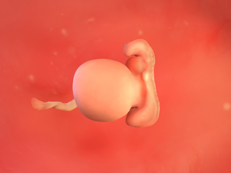
- 1. Sự phát triển của thai nhi
-
Tuần 1: Sự ra đời của một em bé bắt đầu bằng quá trình thụ tinh, từ khoảnh khắc tinh trùng và trứng gặp nhau trong ống dẫn trứng. Kích thước của phôi lúc này chỉ tầm 0.2mm. Sau khoảng 12-15 giờ kể từ khi thụ tinh, phôi bắt đầu phân chia tế bào.
Tuần 2: Lúc này, em bé chưa được gọi là “thai nhi” mà chỉ là “phôi thai”, vì chưa hình thành hình dạng của một em bé rõ ràng👶. Phôi di chuyển dọc theo ống dẫn trứng và không ngừng phân chia tế bào.
Nói một cách cụ thể hơn:
📌 Khi tính tuổi thai và ngày dự sinh, bác sĩ sẽ dựa trên ngày đầu kỳ kinh cuối của bạn. Nghĩa là ngày đầu tiên của kỳ kinh cuối được xem là ngày bắt đầu mang thai. Thông thường, sự rụng trứng diễn ra khoảng giữa chu kỳ (tầm ngày thứ 14 với người có chu kỳ 28 ngày), nên thụ thai xảy ra vào thời điểm được tính là khoảng tuần thứ 2 của thai kỳ.
📌 Tuần thứ 2 là giai đoạn chuẩn bị thụ thai. Cơ thể đang chuẩn bị cho sự sống mới. Trong những ngày gần đây, estrogen và progesterone tăng lên khiến niêm mạc tử cung dày hơn, sẵn sàng đón trứng đã thụ tinh. Trong buồng trứng, các noãn (trứng) nằm trong các nang chứa dịch đang phát triển và “chín”.
📌 Khi rụng trứng, một trứng sẽ thoát khỏi nang và được ống dẫn trứng “đón” lấy. Rụng trứng không phải lúc nào cũng xảy ra đúng ngày giữa chu kỳ, có thể trong khoảng ngày 9-21 (với chu kỳ 28 ngày).
📌 Trong 24 giờ sau rụng trứng, nếu có một tinh trùng khỏe mạnh bơi từ âm đạo → cổ tử cung → tử cung → ống dẫn trứng và xâm nhập được vào trứng → thụ tinh xảy ra. Một lần xuất tinh có thể chứa khoảng 250 triệu tinh trùng, nhưng chỉ khoảng 400 con sống sót đủ lâu để tới được trứng, và thường chỉ 1 con chiến thắng.
📌 Trong 10-30 giờ tiếp theo, nhân tinh trùng và nhân trứng hòa vào nhau và kết hợp vật chất di truyền. Nếu tinh trùng mang nhiễm sắc thể Y → bé trai. Nếu tinh trùng mang nhiễm sắc thể X → bé gái. Trứng đã thụ tinh gọi là hợp tử (zygote).
- Trong 3-4 ngày, hợp tử di chuyển từ ống dẫn trứng vào tử cung và liên tục phân chia thành 100+ tế bào, lúc này gọi là phôi nang (blastocyst). Sau 1-2 ngày, phôi nang bắt đầu bám và làm tổ vào lớp niêm mạc tử cung, và từ đó tiếp tục phát triển.
Tuần 3: Phôi bắt đầu làm tổ trong niêm mạc tử cung và chia thành 3 nhóm tế bào. Khoảng 1 tuần đến 10 ngày sau thụ tinh, phôi bám chặt vào niêm mạc tử cung và bắt đầu phát triển.
Khoảng 5 ngày sau khi làm tổ, phôi tách thành 3 lớp tế bào, từ đó sẽ hình thành:
- Ống thần kinh🧠 (sau này phát triển thành não và tủy sống)
- Hệ mạch máu và hệ tuần hoàn💓
Lúc này, tim bắt đầu hình thành và đẩy máu.
Nước ối bắt đầu tích tụ trong túi ối, có tác dụng bao bọc và bảo vệ bé trong suốt thai kỳ.
Hình dáng của phôi còn rất sơ khai, trông giống như một chú cá nhỏ, có 4 khe mang và một cái đuôi dài. Chiều dài phôi khoảng 0.2 cm, cân nặng chưa tới 1g.
Tuần 4: Bề ngoài, bé vẫn chưa có hình dạng giống con người. Thai nhi lúc này quá nhỏ để nhìn thấy rõ bằng siêu âm. Dây rốn bắt đầu phát triển. Đã có túi ối bao quanh bé, chứa nước ối giúp bảo vệ bé. Cũng có túi noãn hoàng, tạm thời cung cấp chất dinh dưỡng và tạo ra tế bào hình thành dây rốn, hệ tiêu hóa và cơ quan sinh sản.
Tuần 5: Đến tuần này, bạn có thể nhìn thấy thai bằng siêu âm. Hình ảnh túi thai (gestational sac) sẽ xuất hiện trên siêu âm. Đây cũng là giai đoạn tim, gan, dạ dày và các cơ quan quan trọng khác bắt đầu hình thành.
Sâu bên trong tử cung, phôi thai đang phát triển rất nhanh, và lúc này trông giống một chú nòng nọc hơn là hình người.
Phôi được tạo thành từ ba lớp tế bào: ngoại bì (ectoderm), trung bì (mesoderm), nội bì (endoderm). Ba lớp này sẽ phát triển thành tất cả các cơ quan và mô trong cơ thể bé.
Sự hình thành não bộ: Não, tủy sống và hệ thần kinh bắt đầu phát triển từ ống thần kinh, được hình thành từ lớp ngoại bì. Lớp này cũng sẽ phát triển thành da, tóc, móng, tuyến mồ hôi, tuyến sữa và men răng.
Sự phát triển của tim: 💓Trái tim và hệ tuần hoàn bắt đầu hình thành từ trung bì. Lớp trung bì cũng phát triển thành cơ bắp, xương, sụn và các mô nằm dưới da.
Phổi và hệ tiêu hóa: Lớp nội bì sẽ phát triển thành phổi, ruột, hệ tiết niệu ban đầu, tuyến giáp, gan và tuyến tụy.
Trong khi đó, nhau thai và dây rốn sơ khai đã bắt đầu hoạt động để cung cấp chất dinh dưỡng và oxy cho bé.
Bé có kích thước khoảng bằng một hạt mè (vừng).😊
- 2. Thay đổi của cơ thể mẹ
-
Tuần 2: Bạn dễ thụ thai nhất trong 3 ngày trước rụng trứng. Một số dấu hiệu rụng trứng có thể xuất hiện như:
- Nhiệt độ cơ thể cơ bản thay đổi
- Căng tức ngực nhẹ
- Đau tức hoặc âm ỉ bụng dưới🤕
- Dịch nhầy âm đạo tăng lên và lỏng, trong, dai như lòng trắng trứng.
Tuy nhiên, không phải ai cũng cảm nhận rõ ràng các dấu hiệu này.
Tuần 3: Nếu bạn đang mong có thai, thì hai tuần sắp tới có thể cảm thấy dài nhất trong đời. Que thử thai chỉ cho kết quả chính xác từ ngày đầu tiên bạn bị trễ kinh trở đi, vì vậy bạn chưa nên thử thai quá sớm. Trong lúc chờ đợi, bạn có thể ghi chú lại những thay đổi nhỏ của cơ thể như đau tức nhẹ, thay đổi khẩu vị, thay đổi tâm trạng… vì đôi khi cơ thể sẽ có tín hiệu sớm.
Nhiều người chưa có cảm giác gì cho đến khi trễ kinh. Nhưng có thể có các dấu hiệu sau:
- Đầy hơi, chướng bụng
- Đau âm ỉ bụng
- Ra chút máu hồng🩸
- Ngực căng và nhạy cảm hơn
- Khứu giác nhạy hơn👃 (đột nhiên cảm thấy mùi nhà, mùi người khác, mùi chó, mùi thức ăn… khác lạ)
Tất cả là do hormone nội tiết tăng lên. Các tế bào tạo nên nhau thai sẽ tiết ra hormone hCG - loại hormone khiến:
- Buồng trứng ngừng rụng trứng
- Duy trì progesterone, giúp giữ niêm mạc tử cung, bảo vệ phôi
- Khi lượng hCG trong nước tiểu đủ cao → que thử thai sẽ lên 2 vạch.
Tuần 4: Ở tuần này, bạn có thể nhận được kết quả thử thai dương tính, vì que thử thai phát hiện hormone hCG trong nước tiểu.
Một số que thử quảng cáo rằng có thể phát hiện rất sớm (từ 5 ngày trước khi trễ kinh), nhưng để kết quả chính xác nhất, bạn nên thử từ ngày đầu tiên bị trễ kinh.
Nếu thử quá sớm, bạn có thể gặp: kết quả âm tính giả (thực ra đã có thai nhưng chưa đủ hCG), hoặc vạch mờ, khó phân biệt.
Về ngày dự sinh, bạn có thể dùng các “Công cụ tính ngày dự sinh” dựa trên ngày đầu tiên của kỳ kinh cuối, hoặc ngày thụ thai (nếu biết).
Tuy nhiên, ngày dự sinh chỉ là ước tính. Chỉ 1/20 mẹ bầu sinh đúng ngày dự sinh. Có thể sinh sớm hoặc muộn trong vòng 2 tuần so với ngày dự sinh đều bình thường.
Tuần 5: Ở tuần thứ 5, bạn có thể chưa thấy bụng to, hoặc có thể cảm thấy bụng căng, chật hơn do đầy hơi. Điều này hoàn toàn bình thường.
Trong tam cá nguyệt đầu tiên, bạn không cần ăn nhiều hơn bình thường, và có thể tăng khoảng 1-2 kg, hoặc thậm chí không tăng cân. Một số người còn giảm cân do buồn nôn, điều này thường không nguy hiểm, nhưng nếu nôn quá nhiều, hãy trao đổi với bác sĩ vì có thể là dấu hiệu của ốm nghén nặng (hyperemesis gravidarum).
Khi nào nên thông báo đang mang thai?
Không có quy tắc bắt buộc cho việc công bố tin mang thai. Nhiều bố mẹ thường đợi đến cuối tam cá nguyệt đầu tiên (khoảng tuần 12) mới thông báo📢, vì khi đó nguy cơ sảy thai giảm đi đáng kể. Nhưng quyết định là tùy ở bạn, muốn chia sẻ khi nào là quyền của bạn.
Về khả năng song thai👶👶, là khoảng 3/100 đối với hầu hết mọi người, nhưng nếu bạn có dùng các phương pháp hỗ trợ sinh sản, tỉ lệ có thể cao đến 30%. Thông thường, phụ nữ sẽ biết mình mang đôi qua siêu âm trong tam cá nguyệt đầu tiên.
Triệu chứng mang thai trong tuần thứ 5:
Đi tiểu thường xuyên:🚽 Hormone thai kỳ kết hợp với lượng máu trong cơ thể tăng lên khiến bạn cảm thấy cần đi tiểu nhiều hơn. Hãy tiếp tục uống đủ nước, nhưng nên hạn chế uống quá nhiều vào buổi tối để đỡ phải thức dậy nhiều lần ban đêm.
Ngực đau và căng: Đây là một trong những dấu hiệu sớm nhất của thai kỳ. Lượng hormone tăng làm tăng lưu lượng máu, khiến ngực trông đầy hơn, nhạy cảm hơn và đôi khi cảm giác tê hoặc căng tức.
Mệt mỏi:😴 Chưa rõ chính xác nguyên nhân, nhưng sự thay đổi hormone (đặc biệt là progesterone) được cho là nguyên nhân chính. Bạn có thể cảm thấy kiệt sức. Hãy cố ngủ nhiều hơn, nghỉ ngơi, nhờ hỗ trợ và chăm sóc bản thân tốt hơn. Năng lượng thường sẽ trở lại trong tam cá nguyệt thứ hai.
Ra máu nhẹ (spotting): Khoảng 1/4 phụ nữ bị ra máu nhẹ trong tam cá nguyệt đầu tiên. Thường không có vấn đề gì, nhưng đôi khi có thể là dấu hiệu sảy thai hoặc thai ngoài tử cung. Hãy thông báo cho bác sĩ hoặc nữ hộ sinh. Nếu ra máu nhiều hoặc đau dữ dội và bạn không thể liên hệ với bác sĩ, hãy đến phòng cấp cứu ngay.
Ốm nghén:🤢 Buồn nôn và/hoặc nôn ói thường bắt đầu từ tuần 5-6. Không phải ai cũng bị, nhưng khoảng 80% phụ nữ mang thai có cảm giác buồn nôn. Có nhiều cách an toàn để giảm, đó là thay đổi thói quen ăn uống, ăn/uống gừng, tránh thức ăn gây mùi khó chịu, hoặc dùng thuốc theo hướng dẫn bác sĩ.
Sợ mùi hoặc không chịu được một số món ăn: Hormone tăng và khứu giác nhạy hơn có thể khiến một số loại mùi hoặc món ăn khiến bạn buồn nôn. Một số món thường gây khó chịu gồm thịt, cà phê, trứng, sữa hoặc thức ăn nhiều dầu mỡ. Bạn có thể thử ăn đồ nhạt, lạnh hoặc nhờ người khác nấu giúp.
- 3. Lưu ý về sức khỏe
-
Tuần 2:
Hãy sử dụng thực phẩm hữu cơ (유기농 식품).🍎 🥦 🥕 🥗 🍓 🍊 Về cơ bản, bạn có thể ăn uống đa dạng như bình thường. Tuy nhiên, để đảm bảo an toàn, nếu có điều kiện, hãy ưu tiên thực phẩm hữu cơ, dù giá có thể cao hơn. Ngày nay, trong quá trình trồng trọt, người ta sử dụng nhiều thuốc trừ sâu và phân bón hóa học, ngay cả khi rửa kỹ cũng khó loại bỏ hoàn toàn. Để giảm tối đa tác động xấu đến thai nhi, hãy cố gắng lựa chọn những thực phẩm được trồng ít hoặc không sử dụng thuốc hóa học và phân bón (가급적 농약이나 화학비료의 사용을 적게 하여 재배한 먹거리를 찾아 먹는 것).
Quản lý cân nặng một cách hiệu quả (효과적인 체중 관리). Sai lầm thường gặp là nghĩ rằng “mang thai thì phải ăn cho hai người”😵, nên từ đầu thai kỳ đã cố ăn thật nhiều. Điều này dễ khiến cân nặng tăng mất kiểm soát. Để duy trì cân nặng hợp lý khi mang thai, bạn cần có hiểu biết cơ bản về dinh dưỡng: nắm rõ 5 nhóm dinh dưỡng, lượng calo, khẩu phần phù hợp, và bảng calo của các món ăn thường dùng (5대 영양소와 칼로리, 분량을 익혀두고, 자주 먹게 되는 음식과 칼로리 표를 알아두는 것). Điều này sẽ giúp ích rất nhiều trong việc quản lý dinh dưỡng thai kỳ.
Chăm sóc sức khỏe để tránh bệnh🤒 (병에 걸리지 않도록 건강관리에 유의). Cần tăng sức đề kháng, hạn chế đến nơi đông người, và giữ thói quen rửa tay chân sạch sẽ sau khi ra ngoài.
Tuần 3:
Hãy ăn uống đều đặn và đúng bữa. Trong giai đoạn này, các chất dinh dưỡng và oxy cần thiết cho sự phát triển của thai nhi đều đến từ mẹ. Vì vậy, để hỗ trợ sự phát triển của thai nhi, cần lưu ý đến chế độ ăn uống. Tùy theo sự phát triển của em bé, lượng calo, protein, khoáng chất và vitamin cần thiết mỗi ngày cũng cần được tăng dần. Dù giai đoạn này chưa cần đặc biệt tăng lượng calo, nhưng để đảm bảo sức khỏe mẹ và sự phát triển tốt của thai nhi, bạn không nên bỏ bữa mà hãy hình thành thói quen ăn 3 bữa đều đặn mỗi ngày. Ví dụ: nếu buổi sáng ăn bánh mì thì bữa trưa nên ăn cá, bữa tối ăn thịt để thay đổi món và đảm bảo cân bằng dinh dưỡng.
Thực phẩm cần ăn và lượng khuyến nghị
- 🌾Ngũ cốc: nên ăn cơm ngũ cốc hỗn hợp (nấu bằng cách trộn gạo và các loại hạt/đậu) thay vì chỉ ăn cơm trắng.
- 🥬Rau: tập trung vào rau màu xanh đậm và vàng (녹황색 야채), mỗi bữa khoảng 100g, mỗi ngày khoảng 300g.
- 🌊Rong biển và tảo (해조류): mỗi ngày 25g, giai đoạn cuối thai kỳ tăng lên 75g.
- 🍎Trái cây: ăn 3–4 lần/ngày như món tráng miệng hoặc bữa phụ.
- 🍖Thịt hoặc cá: 150g/ngày, giai đoạn cuối tăng lên 200g.
- 🥛Sữa: uống ít nhất 1 ly/ngày.
- 🧂Muối (염분): hạn chế dưới 10g/ngày.
Quản lý cân nặng hiệu quả
- Chỉ số BMI (BMI지수) thường dùng để đánh giá mức độ béo phì, nhưng cũng hữu ích trong quản lý cân nặng khi mang thai.
- BMI 20-22: cân nặng tiêu chuẩn.
- Trong 3 tháng đầu: giữ BMI tối đa 24.
- Từ tháng 4-7: tối đa 26.
- Sau tháng thứ 8: nếu vượt 28 → được xem là béo phì khi mang thai (비만 임신부).
Tránh sauna và tắm nước nóng.
Nếu trong vòng 3 tuần đầu thai kỳ, thai phụ bị sốt cao hoặc tiếp xúc với môi trường nhiệt độ cao như sauna hay tắm nước nóng, có thể làm tăng nguy cơ biến đổi gen. Vì vậy, từ sau ngày rụng trứng (배란일), nếu đang mong có thai, hãy tránh tắm nước quá nóng, tránh để cơ thể nhiễm cảm nhiệt.
Việc cần làm khi mang thai tuần 3
- Lắng nghe và chăm sóc cảm xúc của bản thân.
- Tránh tắm nước quá nóng, sauna, bồn xông hơi.
- Ăn đầy đủ dinh dưỡng: rau củ, trái cây, ngũ cốc nguyên hạt, cá ít thuỷ ngân, thịt và đậu phụ.
- Giảm cà phê xuống khoảng 1 ly/ngày.
- Nếu cần hỗ trợ cai rượu, thuốc lá hoặc chất kích thích → nhờ bác sĩ.
- Bắt đầu xây dựng thói quen ngủ tốt.
- Kiểm tra xem môi trường sống và nơi làm việc có tiếp xúc hóa chất hoặc yếu tố nguy hại không.
Tuần 4:
Nếu kỳ kinh dự kiến trễ khoảng 1 tuần và bạn bắt đầu có cảm giác mình đã mang thai cả về cơ thể lẫn cảm xúc, hãy đến khoa sản (산부인과) để kiểm tra xem mình có mang thai hay không.
Khi đi, nhớ mang theo thẻ bảo hiểm y tế (건강보험카드).💳
Khi khám phụ khoa (내진), nên mặc đồ tách rời trên - dưới, hạn chế quần bó, tốt nhất là mặc váy dài rộng để tiện kiểm tra.
Để khám nhanh và hiệu quả, bạn nên ghi chú trước các thông tin bên dưới và mang theo:
- Ngày bắt đầu kỳ kinh gần nhất📅
- Chu kỳ kinh
- Thay đổi thân nhiệt🌡️
- Việc có dùng thuốc hay không
- Khi bác sĩ khám, họ cũng quan sát sắc mặt để đánh giá sức khỏe, vì vậy hãy tránh trang điểm đậm.
Nguyên tắc trò chuyện với bác sĩ là phải trung thực và chính xác🩺.
- Tình trạng sức khỏe hiện tại của thai phụ rất quan trọng, nhưng tiền sử bệnh lý trong quá khứ cũng quan trọng không kém. Việc đã từng mang thai trước đó, sảy thai tự nhiên (자연유산), phá thai (인공유산), sinh con dị tật (기형아 출산 경험), từng phẫu thuật hoặc đang mắc bệnh, hay đã từng mắc bệnh trong quá khứ đều có thể ảnh hưởng lớn đến thai kỳ hiện tại.
- Nếu đã từng sảy thai hoặc có tiền sử bệnh trong gia đình thì ngay lần khám đầu tiên phải nói rõ với bác sĩ và tiến hành một số xét nghiệm cần thiết.
- Những bệnh bắt buộc phải thông báo gồm bệnh tim, tiểu đường, bệnh thận, rối loạn tuyến giáp, cao huyết áp, hen suyễn (심장병, 당뇨병, 신장병, 갑상선 이상, 고혈압, 천식).
Kiểm tra tại bệnh viện trong lần khám đầu tiên
- Đầu tiên sẽ kiểm tra nước tiểu để xác nhận mang thai. Đây là phương pháp giống với que thử thai tại nhà, nên nếu đã thử ở nhà thì hãy nói với y tá để tránh kiểm tra trùng lặp.
- Khi xác nhận có thai🤰, bạn sẽ được khám phụ khoa. Do hormone mang thai làm tử cung và cổ tử cung mềm ra và khiến máu lưu thông tập trung về vùng chậu, nên cổ tử cung vốn có màu hồng nhạt sẽ chuyển sang màu tím đậm.
- Khi mang thai, tử cung thường mềm và hơi giãn, nhưng lần khám phụ khoa đầu tiên có thể gây co thắt bất chợt hoặc cảm giác hơi cứng. Tuy nhiên, khám phụ khoa là kiểm tra mà bất kỳ thai phụ nào cũng sẽ trải qua, nên không cần lo lắng hay căng thẳng, cũng không gây đau, hãy giữ tinh thần thoải mái.
- Bạn sẽ được cấp sổ theo dõi thai kỳ (임신부수첩)📖. Trong sổ sẽ ghi lại huyết áp, cân nặng và nội dung kiểm tra định kỳ hằng tháng, giúp theo dõi tình trạng thai nhi và sức khỏe mẹ bầu một cách tổng quát. Vì vậy cần giữ sổ cẩn thận cùng với thẻ bảo hiểm y tế và mang theo mỗi lần khám.
⚠️Quy tắc sinh hoạt cho bà bầu (임산부 생활 수칙)
- Vitamin B6 và B12 giúp giảm ốm nghén (입덫).
- Tùy mỗi người, có thai phụ hầu như không bị ốm nghén, nhưng phần lớn phụ nữ mang thai lại nhạy cảm với mùi, thay đổi khẩu vị, đau đầu hoặc buồn nôn. Lúc này, việc bổ sung tích cực vitamin B6 và vitamin B12 sẽ giúp phòng ngừa và giảm nhẹ các triệu chứng ốm nghén.
- Một trong những nguyên nhân làm nặng thêm ốm nghén là rối loạn hệ thần kinh tự chủ, vitamin B6 giúp thúc đẩy hoạt động tiết dopamine - chất dẫn truyền thần kinh, từ đó giảm buồn nôn; còn vitamin B12 giúp ổn định thần kinh.
- Các loại vitamin này có nhiều trong trứng, đậu nành, rau xanh vàng (녹황색 야채), gạo lứt (현미).
Quản lý cân nặng hiệu quả⚖️
- Trong thai kỳ, tăng cân cơ bản gồm: trọng lượng thai nhi 3200g, nước ối và nhau thai 800g, tử cung và mô liên kết 1300g, lượng chất béo và protein tăng thêm trong cơ thể mẹ 3000g, lượng nước 2500g, tổng cộng tăng khoảng 10800g. Nhìn tổng thể thời gian mang thai, tăng 9~12kg được xem là lý tưởng.
- Trong giai đoạn đầu đến tuần 13 nên tăng khoảng 1kg.
- Đến tuần 26 và tuần 36 thì mỗi giai đoạn tăng thêm khoảng 5kg.
- Tuy nhiên mức tăng cân có thể khác nhau tùy tình trạng cơ thể trước khi mang thai: người gầy nên tăng khoảng 13kg, người cân nặng chuẩn tăng khoảng 9kg, người thừa cân tăng khoảng 7kg.
Nếu đã và đang uống thuốc thì hãy hỏi ý kiến bác sĩ 💊.
- Khi mang thai sẽ xảy ra thay đổi hormone. Do đó, ở một số thai phụ, cơ vòng từ thực quản đến dạ dày sẽ giãn ra gây buồn nôn, ợ nóng hoặc táo bón, nhưng không nên tự ý dùng thuốc dạ dày hoặc thuốc táo bón. Cũng không nên tự ý uống thuốc cảm khi thấy lạnh run và đau đầu.
- Nếu không biết mình mang thai và đã uống thuốc, không nên vội bỏ thai, mà hãy nói rõ loại thuốc và liều lượng đã uống để bác sĩ đánh giá.
- Tỷ lệ thuốc gây dị tật thực tế thấp hơn nhiều so với lo lắng thông thường, nên có thể không cần thiết phải cân nhắc đến việc bỏ thai.
Hạn chế đến nơi đông người🚫.
- Để tránh nhiễm các virus như cảm cúm mùa hoặc rubella (풍진), nên hạn chế đến trung tâm thương mại, rạp chiếu phim.
- Nếu không phải bắt buộc đi làm thì cũng nên hạn chế sử dụng phương tiện công cộng vào giờ cao điểm.
Việc cần làm khi mang thai tuần 4
- Kiểm tra lại các loại thuốc đang dùng. Chỉ sử dụng thuốc được bác sĩ xác nhận an toàn cho thai kỳ.
- Để giảm khó chịu tiêu hoá, nên ăn thành nhiều bữa nhỏ, nhai kỹ, tránh nước có ga, kẹo cao su, và sorbitol.
- Tập yoga nhẹ hoặc đi bộ🧘♀️🚶♀️.
- Chăm sóc giấc ngủ, nên hình thành thói quen ngủ ổn định.
- Mặc quần áo thoải mái. Dù chưa cần đồ bầu, bạn có thể sẽ thấy quần cạp bụng hơi chật do đầy hơi. Chọn quần jogger, legging, váy rộng, áo cardigan… sẽ dễ chịu hơn.
Tuần 5:
Lập kế hoạch khám thai định kỳ.
- Từ tháng thứ 2 của thai kỳ bắt đầu tiến hành khám định kỳ chính thức📝.
- Mỗi lần khám định kỳ sẽ bao gồm xét nghiệm nước tiểu, đo huyết áp, cân nặng,…
- 📅Cho đến tháng thứ 7: khám 1 lần/tháng.
- 📅Từ tháng 8-9: khám 2 tuần/lần.
- 📅Khi bước sang tháng thứ 10 khám 1 tuần/lần.
- Ngoài các xét nghiệm định kỳ, tùy từng giai đoạn đầu - giữa - cuối thai kỳ mà có thêm các xét nghiệm khác.
- Trong giai đoạn đầu thai kỳ, sẽ tiến hành xét nghiệm thiếu máu, giang mai, nhóm máu ABO và yếu tố Rh, viêm gan B, và kiểm tra rubella (빈혈검사, 매독혈청검사, ABO혈액형과 Rh인자 검사, B형 간염검사, 풍진검사).
- Siêu âm giúp xác định sự phát triển theo tuần thai, nghe nhịp tim thai❤️, xác định giới tính thai nhi, vị trí thai, kiểm tra dị tật ngón tay, ngón chân, môi, cũng như các bất thường như bệnh tim bẩm sinh (선천성 심장병), thai trứng, u trong tử cung (자궁의 혹), nhau tiền đạo (전치태반 hiện tượng nhau bám thấp),…
- Gần đây có siêu âm 3D, 4D (3차원, 4차원 초음파) cho phép xem mặt thai nhi rõ hơn. Tuy nhiên, vì chi phí tăng thêm nên thông thường siêu âm 3D/4D chỉ thực hiện vào giai đoạn đầu và giữa hoặc khi bác sĩ thấy cần thiết.
🥗Nên ăn/uống gì?
- Axit folic (엽산) thuộc nhóm vitamin B và kẽm (아연) thuộc nhóm khoáng chất là dưỡng chất không thể thiếu để hình thành tim và các cơ quan của thai nhi, đồng thời hỗ trợ phân chia tế bào và hình thành hồng cầu.
- Axit folic giúp phòng thiếu máu, tăng cảm giác ngon miệng và giảm đau đẻ.
- Kẽm giúp cơ bắp mềm mại và ổn định đường huyết, cải thiện thể trạng cho mẹ bầu.
- Vì vậy, cần bổ sung thực phẩm giàu axit folic như lòng đỏ trứng, bí đỏ, rau xanh đậm, đậu đỏ, bánh mì lúa mạch đen; và thực phẩm giàu kẽm như hàu, nghêu, sò, cá trích, trứng, gạo lứt,…
Quản lý cân nặng hiệu quả
- Khi mang thai, mọi người sẽ thường nói “phải ăn nhiều vào”, nhưng thực tế lượng calo cần thêm chỉ khoảng 150-350 kcal so với trước. Đặc biệt ở giai đoạn này chưa cần bổ sung quá nhiều dinh dưỡng.
- Với người bị ốm nghén có thể sút cân, còn người không bị ốm nghén dễ tăng cân quá mức, nên cần điều chỉnh cẩn thận.
- Khi cảm giác nghén giảm, mẹ bầu có thể thèm món ngọt🍫, nhưng nên tránh thực phẩm quá nhiều calo.
- Nên nhớ một nắm cơm chứa khoảng 150-180 kcal, vì vậy cố gắng duy trì chế độ ăn như bình thường để giúp kiểm soát cân nặng tốt hơn.
⚠️Nếu có dấu hiệu dọa sảy thì cần đặc biệt chú ý
- Khoảng tuần thứ 5, nếu túi thai trong tử cung nhỏ hơn tuổi thai hoặc méo hình, cần nghĩ đến khả năng dọa sảy.
- Bác sĩ cũng sẽ kiểm tra xem có xuất huyết xung quanh túi thai không.
- Nếu có dấu hiệu dọa sảy, nên giảm tối đa việc nhà, nghỉ ngơi, và tạm thời kiêng quan hệ tình dục.
Việc cần làm khi mang thai tuần 5
- Chọn cơ sở chăm sóc thai kỳ (bác sĩ sản khoa hoặc nữ hộ sinh). Nếu bạn đã có nơi tin tưởng thì rất tốt. Nếu chưa, hãy hỏi người quen, tham khảo trên bảo hiểm hoặc tìm thông tin trực tuyến.
- Tìm hiểu tiền sử bệnh trong gia đình. Hãy hỏi cha mẹ, ông bà hoặc họ hàng để biết xem gia đình hai bên có bệnh lý mạn tính hoặc bệnh di truyền nào không, bác sĩ sẽ cần thông tin này.
- Tải ứng dụng theo dõi thai kỳ. Ứng dụng 📱 BabyCenter (tiếng Anh), ứng dụng 📱 MamiTalk 마미톡 và 📱 핑크라이트(tiếng Hàn), hoặc các ứng dụng tương tự sẽ giúp bạn theo dõi sự phát triển của bé và thông tin hữu ích hàng tuần.
- Bắt đầu uống vitamin bầu, đặc biệt là axit folic - thành phần này giúp giảm nguy cơ dị tật ống thần kinh của thai nhi (như nứt đốt sống).
- Giảm lượng caffeine. Khuyến cáo không vượt quá 200mg caffeine/ngày (khoảng 1 cốc cà phê lớn).
- 4. Quan hệ vợ chồng khi mang thai
-
Tuần 2: Không nhất thiết phải kiêng hoàn toàn. Bạn vẫn có thể sinh hoạt vợ chồng như bình thường, chỉ cần nhẹ nhàng và chú ý cảm giác cơ thể. Ngoài việc gần gũi thể xác, hai vợ chồng nên dành nhiều thời gian chia sẻ cảm xúc, trao đổi yêu thương để cùng chuẩn bị tâm lý chào đón em bé.
Tuần 3: Không cần phải kiêng hoàn toàn, nhưng cần giữ cơ thể sạch sẽ trước khi quan hệ. Nếu vệ sinh không tốt và gây nhiễm trùng cơ quan sinh dục, mẹ có thể phải dùng thuốc, điều này không tốt cho thai kỳ.
Tuần 4: Nếu không có nguy cơ sảy thai thì không cần kiêng. Nếu tử cung không yếu bẩm sinh và không có tiền sử sảy thai hay vấn đề đặc biệt, có thể tiếp tục sinh hoạt tình dục như trước. Chỉ cần ghi nhớ tránh động tác quá mạnh để không làm thai nhi bị ảnh hưởng.
Tuần 5: Nếu sức khỏe mẹ bầu bình thường thì không cần kiêng tuyệt đối, nhưng vì nguy cơ sảy thai tự nhiên cao trong giai đoạn này nên cần chú ý. Nếu trước đây quan hệ 3-6 lần/tuần thì nên giảm xuống 1-2 lần/tuần. Tránh thay đổi tư thế quá nhiều hoặc quan hệ quá lâu, vì có thể gây co bóp tử cung hoặc chảy máu âm đạo.
- 5. Trọng tâm thai giáo
-
Tuần 2: Đối với người làm bố mẹ lần đầu, mang thai là niềm hạnh phúc lớn nhưng đôi khi cũng đầy lo lắng và bối rối. Nếu trước đó bạn đã đọc sách về nuôi dạy trẻ (육아), bạn sẽ bớt lo hơn khi biết mình mang thai. Bạn cũng có thể tham khảo thông tin trên Internet hoặc nghe chia sẻ từ các mẹ bầu khác đã có kinh nghiệm.
Tuần 3: Hãy duy trì tâm trạng thoải mái và thói quen suy nghĩ tích cực🌈. Khi phụ nữ mang thai bị căng thẳng, hệ miễn dịch suy yếu, dễ mắc bệnh hơn. Để thai nhi có thể bám và phát triển tốt trong tử cung, việc giữ tâm lý thư thái và tập nhìn nhận mọi việc tích cực là rất quan trọng. Có thể khó thay đổi cách nhìn cuộc sống trong một sớm một chiều, nhưng nếu luyện tập nhìn thế giới tươi đẹp hơn mỗi ngày, điều đó sẽ dần trở thành bản năng thứ hai (세상을 아름답게 바라보려는 연습을 하다 보면 습관이 제 2의 천성이 될 수 있습니다 😄😇💕).
Tuần 4:
Bắt đầu thiền hoặc viết nhật ký mang thai sẽ rất tốt.
Đối với phụ nữ, mang thai vừa là niềm vui vừa có thể gây căng thẳng.
Ngoài cảm giác kỳ diệu khi cảm nhận sự sống trong bụng, thì trách nhiệm làm mẹ, sự thay đổi cơ thể và tâm lý có thể dẫn đến trầm cảm thai kỳ.
Thiền sẽ giúp cơ thể thư giãn, loại bỏ suy nghĩ tiêu cực và giúp tinh thần nhẹ nhõm.🧘♀️🧘♀️
Khi thiền và bước vào trạng thái sóng α, thai nhi cũng sẽ cảm thấy thư thái (명상을 통해 α(알파)파가 충만한 상태로 들어가면 태아도 편안해집니다).
Việc viết nhật ký từ khi xác nhận mang thai cũng là một cách tốt. Ghi lại suy nghĩ của mẹ, sự thay đổi của cơ thể và cảm xúc, những thông điệp gửi đến bé trong bụng sẽ vừa là thai giáo tuyệt vời, vừa là món quà đáng trân quý cho con trong tương lai.
Tuần 5:
Thai giáo là nền tảng nuôi dưỡng cảm xúc và trí tuệ của thai nhi trong bụng mẹ. Khi mẹ bầu nghe nhạc phù hợp🎵, sẽ giúp thai nhi phát triển cảm xúc phong phú và trí tuệ tốt. Không cần loại nhạc đặc biệt, chỉ cần nhạc khiến mẹ bầu cảm thấy bình yên. Khi nghe nhạc, không cần cố phân tích giai điệu mà hãy thả lỏng cơ thể và cảm nhận một cách tự nhiên. Tiếng nước suối chảy, tiếng gió, tiếng chim hót,… cũng rất phù hợp.
- Nhạc nên nghe trước khi ngủ (nhấn vào từng tên bài nhạc bên dưới sẽ dẫn đến link youtube):
↗️ 🔗Schubert – Lullaby
↗️ 🔗Badarzewska – The Maiden's Prayer
↗️ 🔗Schumann – Träumerei
↗️ 🔗Mozart – Lullaby
↗️ 🔗Beethoven – Für Elise
- Nhạc buổi sáng:
↗️ 🔗Tchaikovsky – March (from The Nutcracker)
↗️ 🔗Ion Ivanovici – The Waves of the Danube & Franz Lehar
↗️ 🔗Beethoven – Ode to Joy
- Nhạc thư giãn:
↗️ 🔗Kreisler – Madrigal
↗️ 🔗Beethoven – Adagio Cantabile
↗️ 🔗Schubert – Serenade
↗️ 🔗Bach – Air
- 6. Các thông tin cần biết khác
-
Tuần 2: Hạn chế tiếp xúc quá gần với thú cưng (애완동물)🐱🐶. Tiếp xúc trực tiếp với mèo hoặc chó có thể khiến bạn bị nhiễm ký sinh trùng Toxoplasma. Mẹ bầu có thể không có triệu chứng gì, nhưng nếu thai nhi bị nhiễm, hậu quả có thể rất nghiêm trọng, ảnh hưởng đến hệ thần kinh và gây tổn thương não. Nếu trước đây bạn chưa từng nuôi thú cưng, thì trong thời gian chuẩn bị mang thai hoặc khi đang mang thai, hãy hạn chế tiếp xúc với chúng.
Tuần 3: Ở giai đoạn đầu thai kỳ, gần như không có triệu chứng rõ rệt, nên dễ vô tình để cơ thể tiếp xúc với môi trường hoặc hành động gây hại. Thụ thai xảy ra khoảng 2 tuần sau kỳ kinh cuối, tức là sau ngày rụng trứng (배란일).
Vì vậy, nếu đang mong có thai, từ sau ngày rụng trứng đến kỳ kinh kế tiếp, ⚠️hãy tránh:
- Uống thuốc không cần thiết
- Chụp X-ray
- CT scan
Tuần 4: Nếu có thể, tốt nhất là khám và sinh tại cùng một bệnh viện từ khi mang thai đến khi sinh.🏥 Khám với cùng một bác sĩ sẽ giúp tăng cảm giác tin tưởng và yên tâm, đồng thời bác sĩ cũng có thể theo dõi sức khỏe mẹ và thai nhi một cách nhất quán, thuận lợi cho việc đưa ra kế hoạch sinh an toàn. Vì vậy ngay từ lần khám đầu tiên, hãy cân nhắc bệnh viện phù hợp cho cả quá trình khám định kỳ, sinh và nằm viện sau sinh.
Khi chọn bệnh viện, nên chọn nơi gần nhà, được người có kinh nghiệm sinh con tại bệnh viện đó đánh giá tốt, có phương pháp sinh phù hợp mong muốn của mình, và dựa vào đặc điểm của bản thân để cân nhắc ưu - nhược điểm giữa phòng khám tư, bệnh viện đa khoa hoặc bệnh viện chuyên khoa (개인병원 또는 종합병원이나 전문병원).
Tuần 5:
Cần quản lý căng thẳng (스트레스 관리)😌
- Trong thai kỳ, việc điều chỉnh cảm xúc là rất quan trọng. Đặc biệt giai đoạn đầu dễ xảy ra sảy thai, và căng thẳng mạnh có thể gây nguy hiểm. Giai đoạn này cũng trùng với thời điểm ốm nghén nặng, nên thay đổi không khí, xem phim, xem tranh, hoặc đi dạo nhẹ nhàng sẽ giúp cải thiện tâm trạng. Vì ốm nghén chịu ảnh hưởng lớn từ tinh thần, việc lựa chọn sở thích thư giãn kích thích các giác quan (nhìn, nghe, vị, ngửi, xúc giác) có thể giúp giảm mệt mỏi.
- Nhiều mẹ bầu bị ốm nghén đến mức sút cân. Dù giai đoạn này thai chưa cần quá nhiều dinh dưỡng nên sút cân nhẹ không quá lo, nhưng nếu nhiều ngày không ăn được gì thì chất độc trong máu mẹ có thể ảnh hưởng xấu đến thai nhi, khi đó cần truyền dịch chứa glucose hoặc amino acid.
🍽️Thói quen sinh hoạt giúp giảm ốm nghén:
- Chia bữa ăn thành 5-6 lần/ngày để tránh dạ dày trống.
- Tránh thức ăn nhiều dầu mỡ.
- Tránh thức ăn mùi mạnh như tỏi, kimchi cay.
- Có thể giảm nghén bằng vị chua nhẹ như chanh, giấm, mì trộn, miến lạnh, yogurt, thạch.
- Hạn chế muối vì có thể gây nhiễm độc thai nghén.
- Hạn chế uống nước quá nhiều, có thể ngậm đá nhỏ để bổ sung nước. Trà lúa mạch ấm hoặc trà quyết minh tử có thể giúp giảm buồn nôn (미지근한 보리차나 결명자 차).
-
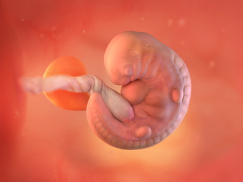
- 1. Sự phát triển của thai nhi
-
Thai nhi dài khoảng 6mm, cỡ một hạt đậu nhỏ, hình dạng trông hơi giống nòng nọc vì cột sống kéo dài ra phía sau thành một phần đuôi nhỏ, sẽ biến mất trong vài tuần tới.
👀Có những chấm tối nhỏ nơi mắt và lỗ mũi đang hình thành.
👂Tai bắt đầu xuất hiện dưới dạng những hõm nhỏ hai bên đầu.
👅Bên trong miệng bé, lưỡi và dây thanh âm đang bắt đầu phát triển.
🖐️Tay chân của bé bắt đầu từ những mầm nhỏ (limb buds) và sẽ dần dài ra thành chi hoàn chỉnh.
🩹Toàn bộ phôi thai được bao phủ bởi một lớp da trong suốt và rất mỏng.
❤️Tim của em bé chưa phát triển hoàn chỉnh, nhưng các tế bào trong ống tim đã bắt đầu đập rất nhanh, khoảng 160 lần/phút. Tuần này, nếu bạn được siêu âm sớm, bạn có thể nghe thấy nhịp tim thai. Nếu khi siêu âm chưa nghe được nhịp tim, bác sĩ sẽ hẹn kiểm tra lại sau 1 tuần.
🧠80% tế bào thần kinh của não và tủy sống được hình thành trong giai đoạn này.
🤰Nhau thai (태반) và dây rốn (탯줄), vốn kết nối mẹ và thai nhi, cũng tiếp tục phát triển.
- 2. Thay đổi của cơ thể mẹ
-
- Khi mang thai (임신), dưới ảnh hưởng của hormone, lượng máu lưu thông đến tử cung (자궁) tăng lên và quá trình trao đổi chất trở nên mạnh mẽ hơn, khiến mẹ dễ đổ mồ hôi và tăng tiết dịch âm đạo (질 분비물).
- Dịch âm đạo thường có màu trắng đục, hơi dính, và hầu như không có mùi hoặc gây ngứa. Lúc này, kích thước tử cung (자궁) lớn bằng quả trứng ngỗng.
- Bụng bầu ở tuần 6 có lộ hay chưa phụ thuộc vào nhiều yếu tố, như: vị trí thai trong tử cung, chiều cao cơ thể, có mang đa thai hay không, đã từng mang thai trước đó hay không. Mẹ thấp bé hoặc phần thân ngắn có thể lộ bụng sớm hơn.
- Những mẹ từng mang thai thường cũng bắt đầu lộ bụng sớm hơn, vì cơ bụng đã giãn từ lần mang thai trước.
Triệu chứng thai kỳ trong tuần 6
🤢 Ốm nghén (buồn nôn): Có thể xảy ra bất kỳ lúc nào, thường bắt đầu vào tuần 5–6 và giảm dần sau tuần 12.
🚽 Đi tiểu thường xuyên: Lượng máu tăng khiến thận làm việc nhiều hơn → bàng quang đầy nhanh hơn. Tiếp tục uống đủ nước; nước tiểu màu vàng nhạt hoặc trong nghĩa là đủ nước.
😟 Thay đổi tâm trạng (Mood swings): Do hormone, mệt mỏi và cảm xúc về việc làm cha mẹ. Nếu tâm trạng xấu kéo dài → hãy trao đổi với bác sĩ.
💓 Ngực đau, sưng: Hormone làm tăng lưu thông máu, khiến ngực căng, nhạy cảm.
😴 Mệt mỏi: Rất phổ biến do hormone progesterone tăng mạnh.
👅 Vị kim loại trong miệng: Có thể giảm bằng cách đánh răng thường xuyên, xúc miệng nước muối hoặc nước baking soda loãng, ăn đồ chua nhẹ, hoặc nhai kẹo bạc hà.
💭 Giấc mơ kỳ lạ: Não đang xử lý những thay đổi lớn trong cuộc sống → có thể xuất hiện giấc mơ sinh con, cơ thể thay đổi, làm mẹ…
🤕 Đau đầu: Thường gặp trong tam cá nguyệt đầu. Hạn chế tác nhân gây đau đầu và duy trì ngủ đủ, uống đủ, ăn đều và vận động nhẹ. Bạn có thể dùng acetaminophen (paracetamol) khi cần - hỏi ý kiến bác sĩ trước, nhưng không dùng aspirin, ibuprofen trừ khi có chỉ định của bác sĩ.
- 3. Lưu ý về sức khỏe
-
📌Đảm bảo môi trường làm việc an toàn: Nếu bạn tiếp xúc với hóa chất, kim loại nặng, sinh phẩm hoặc phóng xạ, hãy báo ngay với quản lý để điều chỉnh công việc phù hợp.
📌Giảm căng thẳng: Hãy ưu tiên nghỉ ngơi, hít thở sâu, vận động nhẹ, nghe nhạc, hoặc viết nhật ký để giải tỏa.
📌Lập danh sách việc cần làm trong thai kỳ📝, có thể bắt đầu từ:
- Bảo hiểm y tế cho bạn (nếu chưa có) và bé
- Kế hoạch khám thai
- Ý tưởng tên cho bé👶
📌Giảm ốm nghén (Morning sickness relief)🤢
- Tình trạng buồn nôn có thể xảy ra vào bất kỳ thời điểm nào trong ngày, nhưng thường nặng hơn vào buổi sáng mới thức dậy. Có thể giúp giảm khó chịu bằng cách để sẵn một món ăn nhẹ (snack) bên cạnh giường và ăn một chút trước khi đứng dậy.
- Hãy thử ăn 6 bữa nhỏ trong ngày, nghỉ ngơi đầy đủ, và duy trì chế độ ăn uống cân bằng, lành mạnh, uống nhiều nước.
- Nhiều người nhận thấy gừng giúp giảm buồn nôn, chẳng hạn như: trà gừng, nước ngọt gừng (ginger ale), bánh quy gừng (ginger biscuits),...
- Một số khác cảm thấy ngậm đá lạnh hoặc đeo vòng bấm huyệt chống say tàu xe (travel acupressure wristbands) cũng có tác dụng.
Ra máu có bình thường không?
- 1 trong 4 phụ nữ có hiện tượng ra máu nhẹ🩸 trong 3 tháng đầu.
- Nếu bạn thấy có máu, hãy liên hệ bác sĩ hoặc cơ sở y tế để kiểm tra.
- Ra máu nhẹ có thể chỉ vì nguyên nhân nhỏ và không đáng lo, nhưng đôi khi cũng có thể là dấu hiệu của vấn đề nghiêm trọng hơn như: thai ngoài tử cung (ectopic pregnancy), sảy thai (miscarriage), hoặc vấn đề liên quan đến nhau thai (placenta)
📌Bổ sung nhiều Vitamin E để phòng ngừa sảy thai (유산 방지).🌰
- Trong thời kỳ này, nhau thai vẫn chưa được hình thành hoàn chỉnh, do đó, nguy cơ sảy thai còn cao. Vitamin E giúp tăng cường tuần hoàn máu trong tử cung, hỗ trợ ngăn ngừa sảy thai. Hãy bổ sung nhiều các thực phẩm giàu Vitamin E như hạnh nhân, mầm lúa mì, trứng, đậu nành, bông cải xanh (아몬드, 밀배아, 달걀, 대두, 브로콜리).
📌Uống sữa hoặc sữa chua🥛 không đường (플레인 요구르트), ăn nhiều trái cây (과일).
- Tuy trái cây có nhiều vitamin, chất xơ và khoáng chất, nhưng fructose trong trái cây cũng chứa nhiều calo → tốt hơn khi ăn cùng các loại rau củ dễ nhai như cà rốt hoặc dưa chuột để hỗ trợ kiểm soát cân nặng.
📌Nghỉ ngơi điều độ và duy trì sinh hoạt hằng ngày.
- Ở giai đoạn đầu, phôi thai chưa bám chắc, vì vậy nên tránh làm việc quá sức, du lịch đường xa, hay vận động mạnh.
- Tuy nhiên, không nên nằm nghỉ suốt ngày. Dù cơ thể dễ mệt mỏi, hãy duy trì vận động nhẹ trong khả năng → giúp cải thiện tinh thần, hỗ trợ tiêu hóa và giảm ốm nghén.
- Vẫn có thể làm việc làm việc nhà, chỉ cần tránh tác động lực lên bụng như mang vác đồ nặng, leo cầu thang nhiều, đi bộ quá lâu, đi xe đạp, xe buýt bị xóc nhiều,...
🚭🚭🚭Tuyệt đối tránh hút thuốc lá trực tiếp hoặc gián tiếp (간접흡연). Nicotine làm co mạch máu của nhau thai, khí CO làm giảm lượng oxy trong máu → dẫn đến thai nhi thiếu dưỡng chất và oxy.
- 4. Quan hệ vợ chồng khi mang thai
-
Nếu bác sĩ không có yêu cầu kiêng đặc biệt thì không cần phải kiêng hoàn toàn.
Tuy nhiên, vì nguy cơ sảy thai trong giai đoạn này vẫn còn, nên cần chú ý: giảm tần suất, giảm thời gian, chọn tư thế an toàn.
Đồng thời, chồng hãy tôn trọng và thấu hiểu cảm giác của mẹ bầu, vì thời điểm này thường bị ốm nghén, mệt mỏi.
- 5. Trọng tâm thai giáo
-
Hãy làm những điều mà thai nhi (태아) cảm thấy dễ chịu.🌸
Ngay cả khi không cố ý, hành vi và cảm xúc của mẹ có ảnh hưởng trực tiếp đến thai nhi.
Điều quan trọng là chú ý để thai nhi không trải qua các cảm xúc gây cản trở sự phát triển như căng thẳng, bị đè nén hoặc áp lực.
Thai nhi thích mẹ đi dạo với tâm trạng thư thái. Vì nhờ vậy oxy trong lành sẽ được truyền đến thai nhi.
Thai nhi thích những âm thanh tự nhiên như tiếng chim hót, tiếng nước chảy. Âm thanh dịu nhẹ giúp thai nhi cảm thấy yên tâm và dễ chịu.
Thai nhi thích nghe giọng nói nhẹ nhàng, vui vẻ của mẹ. Sự thư thái của mẹ giúp thai nhi cảm thấy an toàn.
Thai nhi thích mẹ ngủ sớm và dậy sớm. Điều này giúp thai nhi cảm nhận nhịp điệu sinh học ổn định.
Thai nhi không thích nước lạnh❌. Thay đổi nhiệt độ đột ngột sẽ tạo căng thẳng cho thai nhi.
Thai nhi không thích thức ăn đắng hoặc quá chua❌. Các kích thích vị giác mạnh có thể khiến thai nhi căng thẳng bên trong bụng mẹ.
Thai nhi không thích phim kinh dị❌. Khi mẹ bị giật mình sợ hãi, thai nhi sẽ cảm thấy bất an mạnh mẽ.
Thai nhi không thích tư thế nằm quá mức gây chèn ép❌. Khi mẹ nằm ngửa hoàn toàn, động mạch có thể bị đè ép, khiến tuần hoàn máu giảm. Khi đó thai nhi sẽ đạp mạnh để gửi tín hiệu cho mẹ thay đổi tư thế.
Thai nhi không thích tiếng động lớn hoặc gây giật mình❌ như tiếng động cơ xe máy, còi xe cấp cứu, còi xe ô tô, tiếng mẹ tức giận, tiếng chó sủa, tiếng cãi nhau, tiếng kính vỡ, v.v.
- 6. Các thông tin cần biết khác
-
📌Hãy ghi nhớ chính xác ngày dự sinh (출산 예정일).
- Chúng ta đều háo hức mong chờ khi nào em bé sẽ đến với thế giới này, vì vậy việc ghi nhớ ngày dự sinh là rất quan trọng. Tuy thời gian thai nhi ở trong cơ thể mẹ không hoàn toàn cố định và ngày thụ tinh cũng khó xác định chính xác, nên ngày sinh thực tế có thể khác so với dự kiến. Tuy vậy, nhìn chung, thời gian mang thai được tính là 280 ngày kể từ ngày đầu tiên của kỳ kinh cuối, tương đương 40 tuần (10 tháng, mỗi tháng tính 4 tuần/28 ngày).
- Việc tính ngày dự sinh sẽ khác nhau tùy theo chu kỳ kinh nguyệt đều hay không đều. Nếu chu kỳ kinh nguyệt đều, có thể tính dự sinh dựa trên phương pháp tính từ kỳ kinh cuối (최종 생리일 계산법), phương pháp nhiệt độ cơ bản (기초 체온법) hoặc lịch thai kỳ (임신력). Nếu chu kỳ không đều, có thể dựa vào thời điểm thai máy (태동) và chiều cao đáy tử cung (자궁저 높이). Trong các phương pháp này, cách dễ nhất và tương đối chính xác mà mẹ có thể tự tính là phương pháp tính từ ngày đầu kỳ kinh cuối (최종 생리일 계산법).
1️⃣ Cách tính dự sinh dựa trên ngày bắt đầu kỳ kinh cuối
Từ tháng cuối cùng có kinh, trừ đi 3 tháng; nếu tháng nhỏ hơn 3 và không thể trừ, thì cộng thêm 9 để ra tháng sinh dự kiến.
Sau đó, cộng thêm 7 ngày vào ngày bắt đầu kỳ kinh cuối để ra ngày dự sinh.
Ví dụ 1: Ngày đầu kỳ kinh cuối là 5/12 năm nay.
→ 12 − 3 = 9 (tháng 9)
→ 5 + 7 = 12 (ngày 12)
→ Vì vậy, ngày dự sinh là 12 tháng 9 năm sau.
Ví dụ 2: Ngày đầu kỳ kinh cuối là 1/1 năm nay
→ 1 + 9 = 10 (tháng 10)
→ 1 + 7 = 8 (ngày 8)
→ Vì vậy, ngày dự sinh là 8 tháng 10 năm nay.
2️⃣ Cách dùng lịch thai kỳ (임신력)
Đây là phương pháp thường được bác sĩ sử dụng. Dùng một dụng cụ hình trụ hoặc vòng gọi là lịch thai kỳ (임신력), căn chỉnh ngày đầu kỳ kinh cuối vào thước đo, sẽ hiển thị tuần thai hiện tại và ngày dự sinh.
3️⃣ Phương pháp siêu âm (초음파)
Việc xác định tuổi thai thường chính xác nhất trước tuần thai 20.
- Trong 4–7 tuần đầu: dựa vào kích thước túi thai (태낭).
- Từ 8–11 tuần: dựa vào chiều dài từ đầu đến mông của thai nhi.
- Sau 12 tuần: đo kích thước đầu nhìn từ trên xuống, vòng bụng, và chiều dài xương đùi.
- Từ tuần 6–7 trở đi, có thể nghe nhịp tim thai bằng Doppler siêu âm → giúp điều chỉnh sai số về tuổi thai.4️⃣ Cách tính dựa vào chiều cao đáy tử cung (자궁저 표준 높이)
Từ tam cá nguyệt thứ hai, có thể ước tính ngày dự sinh dựa vào độ cao của đáy tử cung:
- Cuối tháng thứ 6: khoảng 20 cm
- Cuối tháng thứ 7: khoảng 24 cm
- Tháng thứ 8: khoảng 28 cm
- Tử cung đạt độ cao nhất vào tháng thứ 9, và đến lúc gần sinh, thai nhi sẽ tụt xuống dưới nên chiều cao đáy tử cung giảm.
-
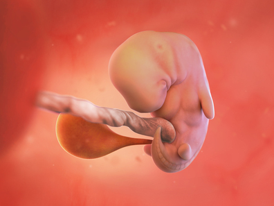
- 1. Sự phát triển của thai nhi
-
- Thai nhi bắt đầu có hình dạng giống con người, dài khoảng 10mm từ đầu đến chân, tương đương với kích thước của một quả nho.
- Phần đầu chiếm khoảng một nửa tổng chiều dài cơ thể. Đầu, thân, tay và chân dần được phân định rõ ràng, não bộ bắt đầu phát triển với tốc độ rất nhanh.
- Khoảng 80% tế bào thần kinh và não bộ được phân hóa trong giai đoạn này. Ống thần kinh, sau này sẽ phát triển thành cột sống và não bộ của em bé, đã được hình thành và đóng kín ở cả hai đầu, với phần não nằm ở phía trên.
- Lúc này, não của em bé được chia thành ba phần chính: não trước, não giữa và não sau.
- Điều đặc biệt là trong suốt thời gian mang thai, não của em bé phát triển rất nhanh, trung bình tăng khoảng 250.000 tế bào não mỗi phút. → Hãy nhớ bổ sung axit folic vì có thể giúp ngăn ngừa các khuyết tật trong quá trình phát triển của bé.
- Các ngón tay và ngón chân xuất hiện, đồng thời mắt, mũi, tai, miệng cũng bắt đầu hình thành dù vẫn còn rất mờ.
- Dạ dày và thực quản của bé bắt đầu hình thành. Thực quản là ống dẫn thức ăn từ miệng đến dạ dày.
- Gan và tuyến tụy của bé cũng bắt đầu phát triển trong tuần này.
- Giới tính vẫn chưa thể xác định bằng siêu âm, nhưng nhóm bộ phận sẽ phát triển thành buồng trứng hoặc tinh hoàn đã xuất hiện.
- 2. Thay đổi của cơ thể mẹ
-
Thường xuyên buồn tiểu.
- Khi mang thai, cơ thể tiết ra hormone hCG (융모성선 자극 호르몬). Một trong những tác dụng của hormone này là tăng lưu lượng máu về vùng chậu, khiến bàng quang dễ bị kích thích.
- Trong suốt thai kỳ, thể tích máu sẽ tăng lên đến 50%💉. Lượng máu bổ sung này sẽ cung cấp oxy và chất dinh dưỡng cần thiết cho tử cung của bạn. Điều này có thể khiến bạn cảm thấy khát hơn bình thường. Hãy cố gắng uống 8 cốc nước vừa mỗi ngày (chẳng hạn như nước lọc, trà hoa quả, nước ép trái cây, sữa tách béo hoặc sữa ít béo,...).
- Đồng thời, tử cung phát triển lớn hơn kích thước quả trứng ngỗng, cũng gây chèn ép bàng quang, làm mẹ cảm thấy buồn tiểu thường xuyên.
Táo bón
- Bụng và vùng thắt lưng có thể trở nên căng tức. Dưới ảnh hưởng của progesterone (황체호르몬), nhu động ruột giảm, thức ăn di chuyển qua hệ thống tiêu hóa chậm hơn, vì vậy mẹ dễ bị táo bón. Khi thai phát triển hơn theo từng tuần, tử cung ngày càng lớn và áp lực lên bàng quang sẽ tăng dần.
- Bạn có thể chống táo bón bằng cách ăn thực phẩm giàu chất xơ🥦🍠🍎 (như ngũ cốc nguyên hạt, trái cây, rau củ và các loại đậu), uống nhiều nước, tập thể dục, vitamin tổng hợp dành cho bà bầu và luôn đi vệ sinh khi cảm thấy buồn tiểu.
Chán ăn😟
Bạn có thể đột nhiên ngán một số loại thực phẩm từng thích. Chán ăn là một tác dụng phụ khác của việc nồng độ estrogen tăng nhanh. Chúng thường bắt đầu trong tam cá nguyệt đầu tiên và biến mất vào tam cá nguyệt thứ hai, cũng có mẹ bị mất cảm giác thèm ăn cho đến khi sinh.
Thay đổi tâm trạng
Nhiều mẹ nhận thấy tâm trạng thất thường💭😢😊 bùng phát vào khoảng tuần thứ 6 đến tuần thứ 10. Cảm xúc thất thường có thể do căng thẳng, mệt mỏi và thay đổi nội tiết tố gây ra. Ngoài ra, còn có nhiều cảm xúc khác nhau mà bạn có thể trải qua khi trở thành mẹ.
Nước bọt tiết ra quá nhiều
Việc tiết ra nhiều nước bọt hơn khi mang thai là điều bình thường. Những thay đổi về nội tiết tố, buồn nôn và ợ nóng đều có thể khiến bạn tiết nước bọt nhiều hơn trong thai kỳ. Hãy thử đánh răng thường xuyên hơn, ăn các bữa ăn nhỏ, cân bằng dinh dưỡng, và uống nhiều nước.
Ợ nóng🔥
- Ợ nóng (còn được gọi là chứng khó tiêu axit hoặc trào ngược axit) là cảm giác nóng rát giữa cổ họng dưới và xương ức. Tình trạng này rất khó chịu và không may là không thể tránh khỏi đối với một số mẹ bầu.
- Để giảm chứng ợ nóng: tránh các loại thực phẩm và đồ uống gây khó chịu cho dạ dày như đồ ăn quá chua-cay-nhiều dầu mỡ🌶️🍟, chia nhỏ bữa, kê cao gối khi ngủ và không ăn trong vòng 2-3 tiếng trước khi đi ngủ.
Kích cỡ ngực to dần
Bắt đầu từ bây giờ, bạn có thể nhận thấy ngực mình to lên rõ rệt và chúng sẽ tiếp tục phát triển trong suốt thai kỳ. Việc tăng thêm một hoặc hai size áo ngực là điều bình thường, đặc biệt nếu bạn có thai lần đầu. Bạn có thể cảm nhận ngứa ở vùng ngực khi da căng ra và có thể xuất hiện vết rạn da.
- 3. Lưu ý về sức khỏe
-
🎯Nếu phát hiện bất thường trong xét nghiệm máu cơ bản, cần xử lý sớm.
- Xét nghiệm bao gồm: nhóm máu, thiếu máu, viêm gan B, HIV (에이즈), giang mai (매독), lao (결핵), kháng thể rubella (풍진항체),... Nếu có kết quả bất thường, cần áp dụng biện pháp phù hợp.
- Nhóm máu: Nếu mẹ có nhóm máu Rh âm tính (Rh-) và thai nhi mang Rh dương tính (Rh+), cơ thể mẹ có thể tạo phản ứng miễn dịch phá hủy hồng cầu của thai nhi → gây tan máu, có khả năng dẫn đến thiếu máu nặng hoặc tử vong thai. → Nếu mẹ Rh âm tính, cần được tiêm Globulin miễn dịch (면역 글로블린 주사).
- Thiếu máu (빈혈): Thiếu máu cần kiểm tra đầu thai kỳ, giữa và cuối thai kỳ. Nếu lượng hemoglobin thấp, lượng máu cung cấp cho thai nhi sẽ không đủ.
- Nếu mẹ là người mang virus viêm gan B, có thể lây sang trẻ trong quá trình sinh. → ngay sau sinh, trẻ cần được tiêm Globulin miễn dịch (감마 글로블린) và vaccine để phòng ngừa lây nhiễm.
🎯Lưu ý đặc biệt đối với mẹ có bệnh nền
- Với bệnh tim, dù triệu chứng nhẹ vẫn có nguy cơ tiến triển bất ngờ trong thai kỳ.
- Người cao huyết áp dễ có nguy cơ tiền sản giật (임신중독증).
- Người bị động kinh (간질) dùng thuốc chống co giật trong giai đoạn sớm của thai kỳ có thể ảnh hưởng đến thai nhi.
- Nếu mẹ có bệnh nền hoặc đang dùng thuốc → cần trao đổi chặt chẽ với bác sĩ chuyên khoa để đánh giá việc tiếp tục thai kỳ và điều chỉnh thuốc phù hợp.
🎯Quy tắc sinh hoạt cho mẹ bầu
Bổ sung đầy đủ đạm và canxi
- Chế độ ăn cân bằng và đầy đủ dinh dưỡng là nguyên tắc cơ bản.
- Đặc biệt ở giai đoạn này, khi thai nhi bắt đầu hình thành rõ hình dạng người và tế bào não phát triển nhanh chóng, mẹ cần tăng cường thực phẩm giàu protein (단백질) và canxi (칼슘).
- Thực phẩm được khuyến nghị bao gồm: sữa, phô mai, sữa bột tách béo (탈지분유), tàu hủ, nấm, cá cơm, cá hồi, các loại đậu, thịt bò,...
- Ngoài ra, các thực phẩm sau cũng cần được bổ sung: khoai lang, ngũ cốc nguyên hạt, quả óc chó, sữa chua Hy Lạp, bông cải xanh và rau lá xanh đậm, trái cây và rau củ nhiều màu sắc, quả bơ và trái cây sấy khô,...
- ⚠️Hạn chế hoặc tránh uống nước có gas (탄산음료). Một số mẹ bầu bị ốm nghén (입덧) thường uống nước có gas để dễ chịu hơn. Tuy nhiên, nước có gas chứa nhiều đường → dễ tăng cân, và chứa phosphate, chất này cản trở hấp thu canxi trong cơ thể → Vì vậy, nên hạn chế hoặc tránh uống nước có gas.
Khi nào cần đến bệnh viện?
- Bình thường, trứng đã thụ tinh sẽ làm tổ trong niêm mạc tử cung (자궁내막). Tuy nhiên, thai ngoài tử cung (자궁외 임신) là tình trạng trứng làm tổ ở bên ngoài tử cung, trong đó 95% xảy ra tại vòi trứng (나팔관).
- Vòi trứng có đường kính rất nhỏ (1–3 mm). Khi thai phát triển tại đây, vòi trứng bị kéo giãn vượt giới hạn → vỡ vòi trứng, gây: đau bụng dữ dội vùng hạ vị (심한 하복부 통증), chảy máu trong ổ bụng, viêm phúc mạc (복막염 증상). Trường hợp nặng có thể gây sốc và nguy hiểm đến tính mạng.
- Thai ngoài tử cung thường biểu hiện rõ khoảng tuần 7–8, với dấu hiệu là đau bụng dữ dội, ra máu âm đạo (배가 몹시 아프고 출혈이 일어남). → Nếu có các dấu hiệu trên, cần đến bệnh viện ngay để kiểm tra sớm.
- 4. Quan hệ vợ chồng khi mang thai
-
Nên tránh kích thích mạnh hoặc quan hệ kéo dài.
Trong phần khởi động, ❌tránh đưa tay hoặc vật vào sâu trong âm đạo, để không gây kích thích trực tiếp đến tử cung.
Nên ưu tiên tư thế nhẹ nhàng, không gây áp lực lên bụng và không làm mẹ mệt.
- 5. Trọng tâm thai giáo
-
Hãy cố gắng duy trì tâm trạng vui vẻ và thư thái😊💗
Trong giai đoạn này, mẹ dễ trải qua:
- Lo lắng về việc mang thai
- Ốm nghén, mệt mỏi
- Thay đổi cảm xúc thất thường
Nếu mẹ buồn bực, căng thẳng hoặc giận dữ → thai nhi cũng sẽ phản ứng với trạng thái tương tự.
Khi mẹ căng thẳng, cơ thể tăng tiết hormone stress như:
- Adrenaline (아드레날린)
- Endorphin (엔도르핀)
- Steroid hormone (스테로이드 호르몬)
Những hormone này có thể đi qua nhau thai, làm giảm lượng máu và oxy đến thai nhi → ảnh hưởng đến phát triển não bộ → Trẻ có nguy cơ chậm phát triển trí tuệ, rối loạn vận động hoặc dễ bất an cảm xúc sau này.😔
Ngược lại, khi mẹ vui vẻ, nhẹ nhàng, hệ thống dẫn truyền thần kinh trong não thai nhi sẽ được kích hoạt đúng cách✨🧠, hỗ trợ phát triển khỏe mạnh.
🌸Vì vậy, thai giáo quan trọng nhất chính là giữ tâm trạng mẹ ổn định và an lành.
- 6. Các thông tin cần biết khác
-
Dinh dưỡng (영양)
- Việc mẹ bầu ăn đa dạng thực phẩm một cách hài hòa và vừa phải là rất quan trọng để đảm bảo cung cấp đầy đủ dinh dưỡng cân bằng. Mẹ hấp thụ dinh dưỡng đầy đủ → sức khỏe mẹ tốt → sức khỏe thai nhi tốt.
- Một trong những cách để xác định liệu mẹ bầu có đang hấp thụ dinh dưỡng đầy đủ hay không là theo dõi quá trình tăng cân. Việc tăng cân trong thai kỳ có liên quan đến cân nặng của trẻ sơ sinh khi chào đời.
- Đặc biệt, nếu mẹ bầu có thể trạng nhẹ cân trước khi mang thai + mức tăng cân trong thai kỳ thấp → nguy cơ thai nhi sinh ra nhẹ cân sẽ cao hơn.
- Mức tăng cân phù hợp của mẹ bầu sẽ khác nhau tùy thuộc vào tình trạng cân nặng trước khi mang thai và mức độ vận động trong thai kỳ, nhưng đối với những mẹ có chỉ số BMI bình thường, mức tăng cân hợp lý là khoảng 12–15kg.
Những chất dinh dưỡng mà mẹ bầu cần bổ sung để đảm bảo tăng cân hợp lý
1️⃣Năng lượng chung
- So với khi không mang thai, mẹ bầu cần bổ sung thêm khoảng 100–300 kcal mỗi ngày, và bắt đầu tăng lượng calo chủ yếu từ tam cá nguyệt thứ hai (제2삼분기).
- Trong tam cá nguyệt thứ hai, khuyến nghị bổ sung khoảng 340 kcal mỗi ngày.
- Trong tam cá nguyệt thứ ba (제3삼분기), nên bổ sung khoảng 450 kcal mỗi ngày.
- Từ giữa thai kỳ, nhu cầu về sắt (철분) tăng lên, vì vậy mẹ nên thường xuyên ăn các thực phẩm giàu sắt và đồng thời bổ sung đầy đủ vitamin C để giúp hấp thu sắt tốt hơn.
🍽️ Lượng calo khuyến nghị nên nạp mỗi ngày được tính theo công thức: cân nặng tiêu chuẩn (kg) × 35 (kcal/kg) + thêm 300 kcal mỗi ngày.
🥛 Để bổ sung thêm khoảng 300 kcal, bạn có thể ăn ví dụ như: 1 ly sữa ít béo (khoảng 80 kcal) + nửa quả cam (50 kcal) + 1 quả trứng (75 kcal) + 1 lát bánh mì (100 kcal) + 1 đĩa rau (20 kcal).
🍊 Các loại trái cây có mức năng lượng tương đương với nửa quả cam gồm: 1/3 quả táo, hoặc 2 quả cà chua nhỏ, hoặc 1/2 quả hồng giòn, v.v.
🍞 Các thực phẩm có mức năng lượng tương đương 1 lát bánh mì gồm: 1/3 bát cơm, hoặc 1 củ khoai tây, hoặc 1/2 củ khoai lang, hoặc 5 cái bánh quy giòn, v.v.
🥩 Thực phẩm giàu sắt bao gồm: các loại sò, hến và nghêu, gan bò, thịt bò, thịt heo, lòng đỏ trứng, và các loại rau lá xanh đậm.
🍓 Thực phẩm giàu vitamin C gồm: ớt xanh, rau chân vịt, lá ớt, kim chi củ cải non, dâu tây, cam, cà chua, v.v.
2️⃣Sắt (철분)
- Thành phần quan trọng trong máu của mẹ đóng vai trò vận chuyển chất dinh dưỡng và oxy cần thiết cho quá trình trao đổi chất của thai nhi chính là tế bào hồng cầu, và trong tế bào hồng cầu có chứa một loại protein sắc tố vận chuyển oxy có thành phần là sắt (철).
- Nhu cầu sắt mỗi ngày: khoảng 27 mg sắt nguyên tố. Có dạng viên và dạng nước (임산부 액상 철분제). Uống viên sắt có thể bị táo bón, nếu nặng, bạn nên chuyển sang dạng nước. Thường các sản phẩm bổ sung sắt cho mẹ bầu ở Hàn Quốc có hàm lượng 24-60 mg/1 lần dùng 1 ngày.
- Khi mang thai🤰, do thể tích huyết tương trong cơ thể tăng lên và nhu cầu về sắt cao hơn nên dù không có bệnh lý gì khác, thiếu máu do thai kỳ vẫn có thể xảy ra.
- Nếu mẹ bị thiếu máu, nên bổ sung sắt chuyên cho người bị thiếu máu (빈혈 철분제)💉 ngay từ đầu thai kỳ. Cần bổ sung 60–120 mg sắt nguyên tố /1 ngày, tùy mức độ thiếu máu và phác đồ của bác sĩ. Thường sẽ được tăng gấp đôi liều so với thai bình thường, uống liên tục ít nhất 3 tháng hoặc cho đến khi chỉ số máu cải thiện.
3️⃣Bổ sung Vitamin C giúp hấp thụ sắt
Duy trì chế độ ăn uống cân bằng, trong đó Vitamin C đóng vai trò hỗ trợ hiệu quả trong việc tăng cường hấp thụ sắt (철분), giúp đáp ứng nhu cầu trao đổi chất mạnh mẽ của thai nhi.
4️⃣Uống đủ nước
Nếu do ốm nghén (입덧) mà thường xuyên nôn ói, cơ thể rất dễ bị thiếu nước💧. Ngoài ra, khi mang thai, cơ thể dễ đổ mồ hôi nhiều hơn nên cần bù nước đầy đủ. Việc uống đủ nước giúp tạo máu và nước ối (양수), đồng thời hỗ trợ đào thải nhanh chóng các chất cặn bã ra ngoài cơ thể, có lợi cho việc kiểm soát cân nặng.
🚫Chú ý không tiêu thụ quá nhiều caffeine (카페인) như cà phê❌
Trong cà phê, trà đen (홍차), trà xanh (녹차), ca cao (코코아), nước ngọt có ga như cola (콜라) đều có chứa caffeine (카페인). Một đến hai cốc cà phê mỗi ngày không gây vấn đề, nhưng nếu tiêu thụ quá mức có thể gây khó ngủ vào ban đêm hoặc làm tăng nguy cơ sảy thai😣. Caffeine không chỉ có trong cà phê mà còn có trong trà, cola, ca cao và socola, vì vậy cần chú ý tổng lượng caffeine (카페인) tiêu thụ không vượt quá mức khuyến nghị.
5️⃣Axit folic (엽산제)
Việc bổ sung axit folic (엽산제) nên duy trì liên tục từ trước khi mang thai cho đến hết 12~14 tuần thai. Nếu trước đó từng mang thai con có dị tật ống thần kinh (신경관결손증), thì cần bổ sung liều cao axit folic (엽산) 4mg mỗi ngày.
6️⃣Vitamin tổng hợp dành cho bà bầu (산모용 종합 영양제)
Hầu hết các thai phụ có thể hấp thụ đầy đủ dinh dưỡng thông qua thực phẩm nên không bắt buộc phải uống thêm vitamin tổng hợp. Tuy nhiên, trong trường hợp ăn uống kén chọn, chỉ ăn một số loại thực phẩm nhất định hoặc thiếu cân đối, việc bổ sung vitamin và khoáng chất (미네랄) trong vitamin tổng hợp có thể giúp cân bằng dinh dưỡng cần thiết cho quá trình trao đổi chất.
-
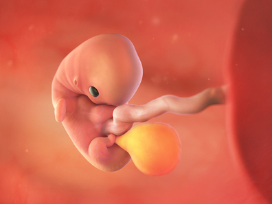
- 1. Sự phát triển của thai nhi
-
- Kích thước thai nhi khoảng 1.5cm, nặng khoảng 2g🥰.
- Thai nhi có những cử động đầu tiên từ tuần thứ 7 đến tuần thứ 8 và có thể nhìn thấy trên siêu âm, nhưng chưa đủ mạnh để mẹ cảm nhận được.
- Hệ hô hấp đang hình thành. Hệ thống ống thở kéo dài từ cổ họng đến các nhánh phổi đang phát triển.
- Mạng lưới dây thần kinh đang lan rộng khắp cơ thể thai nhi, tạo sự kết nối lẫn nhau và kết nối với các cơ, mô, cơ quan như mắt và tai.
- Ngón tay và ngón chân được hình thành, các dây thần kinh thị giác (시신경) của mắt và dây thần kinh thính giác (청각신경) ở tai đang phát triển.
- 2. Thay đổi của cơ thể mẹ
-
- Bầu ngực trở nên to hơn, căng cứng hơn và nặng hơn, có mẹ cảm thấy hơi đau. Màu sắc của núm vú dần sẫm màu, bụng hơi căng tức. Vì nồng độ hormone tăng cao khiến ngực của bạn phát triển để chuẩn bị cho việc sản xuất sữa mẹ 🤱.
- Khí hư màu trắng gia tăng, nhưng không có gì đáng lo ngại. Khí hư bình thường có màu trong suốt đến trắng sữa, loãng hoặc đặc, có mùi nhẹ hoặc không mùi. Tuy nhiên, khí hư màu hơi xanh, mùi khó chịu, gây đau hoặc ngứa,... có thể là dấu hiệu của nhiễm trùng hoặc một vấn đề khác ⚠️.
- Bạn có thể mơ những giấc mơ kỳ lạ khi mang thai 🌙. Điều này là do cảm xúc phức tạp khi được làm mẹ như sự phấn khích, nỗi sợ hãi, lo lắng.
- Đau đầu là tình trạng phổ biến trong thai kỳ, do các yếu tố như tăng lưu lượng máu, mệt mỏi, cắt giảm caffeine,... 😣. Hãy hỏi ý kiến bác sĩ trước khi dùng thuốc giảm đau đầu 🩺. Nhìn chung, acetaminophen an toàn khi dùng theo chỉ dẫn trong thai kỳ, nhưng aspirin, ibuprofen và hầu hết các loại thuốc đau nửa đầu theo toa thì không 🚫. Bạn cũng có thể thử một số biện pháp tự nhiên để giảm đau đầu, chẳng hạn như mát-xa, chườm nóng, thực hành các kỹ thuật thư giãn, tập thể dục và tắm vòi sen 🌼.
- Ốm nghén nghiêm trọng có thể xảy ra ở 3% thai phụ, dẫn đến mất nước, sụt cân và các biến chứng khác 😵💫. Hãy đi khám nếu bạn có các biểu hiện sau: không thể ăn uống được bất cứ thứ gì, nôn ra máu, sụt hơn 2.2 kg, cảm thấy yếu, ngất xỉu hoặc chóng mặt, bị sốt hoặc đau bụng, nước tiểu sẫm màu và có mùi mạnh,...
- 3. Lưu ý về sức khỏe
-
- 📸Tạo một khoảng thời gian thú vị trong thai kỳ bằng cách ghi lại hình ảnh bụng bầu lớn dần mỗi tuần, mỗi tháng.
- 💛Chú ý đến sức khỏe tinh thần của bạn. Cảm thấy buồn bã trong thai kỳ là điều bình thường. Nhưng nếu cảm xúc ủ dột kéo dài hơn hai tuần, hãy làm bài kiểm tra trầm cảm trước khi sinh và thảo luận kết quả với bác sĩ👩⚕️👨⚕️.
- 😴Tập trung vào giấc ngủ ngon khi mang thai. Trong giai đoạn đầu mang thai, bạn có thể kiệt sức hơn bạn tưởng tượng. Cần rất nhiều năng lượng để tạo nên một sinh linh mới👶! Mang thai cũng mang đến một loạt các rối loạn giấc ngủ như đi tiểu thường xuyên, buồn nôn, ợ nóng, chuột rút ở chân và ngáy ngủ. Hãy nghỉ ngơi nhiều hơn bằng cách đi ngủ sớm🌙 và thức dậy với tinh thần sảng khoái vào ngày hôm sau.
- ☀️🧴Sử dụng kem chống nắng luôn quan trọng, nhưng trong thai kỳ, nó có thể giúp bạn tránh tình trạng nám da hoặc chloasma - những mảng da sẫm màu trên mặt hoặc cơ thể, có thể do thay đổi nội tiết tố gây ra. Nám da thường xuất hiện xung quanh môi trên, mũi, gò má và trán theo hình dạng như mặt nạ. Những đốm nám này sẽ biến mất sau khi sinh. Tránh xa ánh nắng mặt trời🌞 và sử dụng kem chống nắng phổ rộng có SPF 30 trở lên mỗi ngày (dù trời có nắng hay không) là cách tốt nhất để ngăn ngừa nám da.
⚠️Kiểm tra ung thư cổ tử cung (자궁경부암 검사)
Ung thư cổ tử cung có thể xảy ra ngay cả ở phụ nữ trẻ. Trong giai đoạn đầu thai kỳ, mọi thai phụ đều sẽ khám tại khoa sản phụ khoa, tuy nhiên nếu chỉ tập trung vào việc mang thai mà bỏ qua xét nghiệm ung thư, thì sau sinh có thể phát hiện bệnh đã tiến triển. Vì vậy, để phòng ngừa và điều trị sớm ung thư cổ tử cung, nên xét nghiệm sớm ngay cả trong giai đoạn đầu thai kỳ.
Quy tắc sinh hoạt cho mẹ bầu
Hãy ăn các thực phẩm giàu sắt🥬🥩🦪 để hỗ trợ quá trình trao đổi chất của thai nhi.
Vì thai nhi hấp thu sắt từ cơ thể mẹ, nên nếu mẹ thiếu sắt sẽ dễ bị thiếu máu.
Cần chú ý bổ sung các thực phẩm giàu sắt như rau bina, gan, hàu, nghêu, các loại rong biển (해조류), lá mè (깻잎) và các thực phẩm giàu sắt khác.
Hãy cẩn trọng với việc tăng cân. Nếu tăng cân quá mức trong thai kỳ, nguy cơ mắc tiền sản giật (임신중독증) và tiểu đường thai kỳ sẽ tăng cao.
Ngoài ra, mẹ dễ mệt mỏi, đau lưng nặng hơn và khi sinh có thể gặp khó khăn dẫn đến chuyển dạ kéo dài. Sau sinh, việc giảm cân cũng trở nên khó hơn và có thể dẫn đến béo phì lâu dài.
📋Nên ghi chú vào bảng theo dõi cân nặng hàng tuần và dán ở nơi dễ nhìn thấy, hoặc trên ứng dụng điện thoại. Việc nhìn thấy mỗi ngày sẽ giúp mẹ kiểm soát cân nặng tốt hơn và tránh tăng cân quá mức.
Hãy tránh uống rượu bia❌❌. Rượu bia uống vào cơ thể mẹ sẽ truyền qua dây rốn (탯줄) và gây ảnh hưởng trực tiếp đến sự phát triển của thai nhi.
Đặc biệt, cồn đi qua nhau thai (태반) rất dễ ảnh hưởng mạnh đến tế bào não.
Nếu mẹ bầu uống một lượng rượu bia nhất định, có thể gây ra rối loạn tăng trưởng trước hoặc sau sinh, suy giảm trí tuệ, rối loạn hành vi và các vấn đề hệ thần kinh trung ương, hoặc gây dị tật như đầu nhỏ hoặc khuôn mặt phẳng.
Những ảnh hưởng này được gọi là “Rối loạn phổ rượu ở thai nhi (태아알코올증후군)”. Một số nghiên cứu cho thấy chỉ một đến hai ly rượu nhỏ mỗi ngày cũng có thể làm giảm cân nặng sơ sinh và tăng tỷ lệ sảy thai.
Thống kê ở các nước phương Tây cho thấy rượu là nguyên nhân phổ biến gây suy giảm trí tuệ và dị tật. Vì vậy, ngay cả lượng nhỏ cũng có thể gây ảnh hưởng nghiêm trọng, mẹ bầu cần đặc biệt hạn chế.
Không phải mọi trường hợp chảy máu đều là dấu hiệu sảy thai.
Tình trạng lộ tuyến cổ tử cung (자궁경부미란) xảy ra khi tuần hoàn máu ở cổ tử cung quá mạnh🩸 khiến niêm mạc dễ bị trầy xước và gây chảy máu; đây là nguyên nhân chảy máu phổ biến nhất trong thai kỳ. Không gây đau, nhưng cổ tử cung có thể sưng đỏ và có thể xuất hiện máu lẫn trong dịch tiết hoặc chảy máu sau quan hệ tình dục. Tình trạng này không ảnh hưởng đến việc duy trì thai kỳ.
Ngoài ra, nếu có polyp cổ tử cung (자궁경관폴립) là khối u lành nhỏ trong cổ tử cung, cũng có thể gây chảy máu nhẹ nhưng có thể loại bỏ dễ dàng bằng thủ thuật đơn giản, vì vậy không cần lo lắng quá mức.
- 4. Quan hệ vợ chồng khi mang thai
-
Hãy tránh kích thích mạnh hoặc quan hệ kéo dài. Vì thời điểm này phôi thai vẫn đang trong giai đoạn làm tổ chưa hoàn chỉnh, nên cẩn thận là điều cần thiết. Tư thế chính diện, trong đó chồng ở phía trên đối mặt với vợ, được xem là phù hợp. Để hạn chế việc xâm nhập sâu, mẹ bầu có thể co đầu gối để giảm áp lực lên tử cung. Ngoài ra, trong tinh dịch có chứa chất gây co bóp tử cung. Sự co bóp này trong một số trường hợp có thể dẫn đến nguy cơ sảy thai. Vì vậy, sử dụng bao cao su để ngăn tiếp xúc trực tiếp với tinh dịch là một lựa chọn an toàn.
- 5. Trọng tâm thai giáo
-
Hãy dán những bức ảnh em bé đáng yêu trong nhà và ngắm chúng😊😍. Đây là giai đoạn thị giác của thai nhi bắt đầu hình thành. Khi mẹ thường xuyên nhìn những hình ảnh em bé dễ thương và tưởng tượng về thai nhi trong bụng, đó sẽ là một hình thức thai giáo tốt.
- 6. Các thông tin cần biết khác
-
📍Sự quan tâm của chồng
Trong thời kỳ ốm nghén (입덧)🤢, mẹ trở nên nhạy cảm với mùi, khẩu vị thay đổi liên tục và buồn nôn. Việc chuẩn bị bữa ăn có thể trở nên rất vất vả. Để giúp người vợ luôn mệt mỏi, buồn ngủ và dễ kiệt sức, người chồng có thể chia sẻ việc nấu ăn👨🍳. Chia sẻ việc đi chợ, sơ chế thực phẩm, nấu ăn, dọn bàn và rửa chén sẽ giúp mẹ bầu trải qua giai đoạn ốm nghén nhẹ nhàng hơn💗.
📍Chụp X-quang khi mang thai (임신 중 X-ray 촬영)
Việc tiếp xúc với tia phóng xạ trong thai kỳ được cho là thiếu an toàn, từ tuần 8 đến tuần 15, và từ tuần 16 đến 25 vẫn có thể làm tăng nguy cơ chậm phát triển trí tuệ🧠. Tuy nhiên, ảnh hưởng này phụ thuộc nhiều vào liều lượng phóng xạ. Nếu lượng phóng xạ dưới 5rad thì không làm tăng nguy cơ dị tật. Trong chụp X-quang ngực, lượng phóng xạ mỗi ảnh rất thấp (0.01–0.05 mrad), vì vậy khi sử dụng dụng cụ bảo vệ vùng bụng và chỉ chụp 1–2 ảnh thì không gây hại cho thai nhi.
📍Điện từ trường
Điện từ trường (전자파)⚡ phát ra từ các thiết bị điện, đường dây điện cao thế, nam châm,... Hiện chỉ có giả thuyết rằng điện từ trường có ảnh hưởng đến thai kỳ, nhưng chưa có kết luận nghiên cứu rõ ràng.
📍Đi du lịch khi mang thai
Việc đi du lịch✈️ trong thai kỳ không phải là chống chỉ định. Tuy nhiên, giai đoạn đầu thai kỳ dễ xuất hiện dấu hiệu sảy thai, còn cuối thai kỳ có thể chuyển dạ bất cứ lúc nào, vì vậy, nên tránh di chuyển xa trong những thời điểm này. Du lịch nước ngoài có thể khiến mẹ tiếp xúc với các bệnh truyền nhiễm(감염병), nếu xảy ra vấn đề liên quan đến thai kỳ thì việc tìm bệnh viện và giao tiếp có thể khó khăn, vì vậy cần tham khảo ý kiến bác sĩ trước khi đi👨⚕️.
- Khi ngồi xe đường dài🚗, nên thắt dây an toàn loại 3 điểm(3점 형식의 안전벨트) và thỉnh thoảng cử động để giúp máu lưu thông(혈액순환이 잘되도록 하는 것) ở chân. Ngồi bất động quá lâu có thể gây giãn tĩnh mạch hoặc hình thành cục máu đông(정맥류나 정맥 혈전증). Nên mang tất áp lực y tế phòng huyết khối(의료용 혈전 예방 압박 스타킹), và cứ mỗi 1 giờ thay đổi tư thế hoặc nghỉ ngơi và duỗi chân.
- Có thể đi máy bay✈️ cho đến tuần 36, nhưng mỗi hãng hàng không có quy định riêng, nên cần kiểm tra trước. Khi trên máy bay, không nên ngồi quá lâu mà hãy đứng dậy vận động mỗi 1–2 giờ.
-
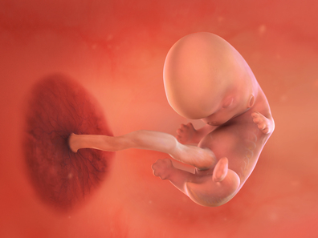
- 1. Sự phát triển của thai nhi
-
Kích thước thai nhi khoảng 2.5cm, nặng khoảng 4g 👶✨
Đường nét gương mặt của bé dần rõ ràng hơn, tay và chân cũng phát triển. Trước đây, tay chân trông giống như có màng (물갈퀴), nay đã được tách ra để hình thành ngón tay và ngón chân.
Bé đã bắt đầu cử động nhẹ bằng đôi tay và chân nhỏ xíu. Các nhóm cơ đang dần phát triển nên bé có thể uốn người, xoay chuyển toàn thân và “bơi” trong nước ối (양수), nhưng lúc này mẹ chưa thể cảm nhận được.
Tai bắt đầu phát triển và các mầm răng (치아 돌기) bắt đầu hình thành. Mười mầm răng nhỏ xíu đang phát triển bên trong mỗi dải lợi (gums). Chúng sẽ lớn lên thành 20 chiếc “răng sữa” (baby teeth) sẽ rụng trong thời thơ ấu. Tuần sau, răng bắt đầu cứng lại và gắn kết với xương hàm (jaw) của bé. Mẹ sẽ thấy những chiếc răng trắng nhỏ (pearly whites) này nhú lên khi bé mọc chiếc răng đầu tiên, thường là lúc 4 đến 7 tháng tuổi. Một số em bé sinh ra đã có răng, nhưng điều này rất hiếm.
Cơ quan sinh dục (생식기) đang phát triển. Ở bé gái, buồng trứng (난소) bắt đầu phát triển; ở bé trai, tinh hoàn (정소) đang hình thành. Tuy nhiên vẫn chưa thể phân biệt được giới tính qua siêu âm, nhưng giới tính của thai nhi đã được quyết định ngay từ lúc thụ tinh.
Tim thai đã phát triển đủ lớn với bốn buồng tim, tim đập rất mạnh và rõ ràng. Mẹ có thể nhìn thấy nhịp tim qua siêu âm. Tuy nhiên, nếu bé nấp ở góc tử cung hoặc quay lưng lại phía đầu dò siêu âm thì có thể sẽ không nhìn thấy rõ.
Gan, túi mật và lá lách cũng đang được hình thành. Khoang bụng đã rộng hơn nên các cơ quan vốn được tạo từ dây rốn trước đây cũng đang dần đi vào trong ổ bụng của bé.
- 2. Thay đổi của cơ thể mẹ
-
📌 Da mẹ có thể hơi ửng hồng do ảnh hưởng của hormone thai kỳ. Lượng máu trong cơ thể tăng lên để cung cấp đủ oxy và dưỡng chất cho em bé. Vì lượng máu tăng, tim mẹ phải làm việc chăm chỉ hơn, khiến mẹ dễ mệt và dễ hụt hơi.
📌 Sự thay đổi ở ngực (유방) trở nên rõ rệt hơn, và ngay cả những mẹ bầu trước đó không bị nghén (입덧) cũng sẽ bắt đầu nghén ở mức độ khác nhau. Khi bị nghén, mẹ thường tiết nước bọt và ợ nhiều hơn. Nguyên nhân là do tuyến nước bọt (타액선) bị kích thích làm tăng lượng nước bọt, đồng thời nhu động dạ dày và tá tràng (십이지장) giảm xuống khiến thức ăn lên men trong dạ dày.
📌 Sự mất cân bằng hormone khiến mẹ dễ cáu kỉnh và cảm xúc lên xuống thất thường (감정 기복). Ốm nghén nặng có thể khiến cơ thể khó chịu và tinh thần trở nên tiêu cực. Những lo lắng mơ hồ như “Sau sinh mình có thể tiếp tục công việc chứ?”, “Em bé có khỏe mạnh không?” cũng làm mẹ bất an, thậm chí bật khóc bất cứ lúc nào. Nhưng tất cả đều là quá trình hoàn toàn bình thường và tự nhiên! Khi cảm thấy quá sức, mẹ hãy chia sẻ với những người có thể thấu hiểu như các mẹ từng mang thai, mẹ bầu hiện tại, chồng hoặc gia đình. Một lời an ủi và thấu hiểu cũng có thể trở thành nguồn sức mạnh lớn.
📌 Mẹ cực kỳ mệt mỏi. Tử cung (자궁) dần lớn bằng kích cỡ một nắm tay, khiến vùng bụng dưới căng tức và có thể gây đau lưng. Cơ thể mẹ đang tăng ca để hình thành nhau thai. Mẹ có thể thấy khó dậy vào buổi sáng và cảm giác mệt mỏi kéo dài. Việc tạo nên một sinh mệnh thật sự tiêu tốn rất nhiều năng lượng. Lúc này, mẹ hãy chăm sóc bản thân nhiều hơn. Thay vì cố làm mọi thứ thật hoàn hảo, hãy điều chỉnh để cơ thể không bị quá tải. Nhờ chồng hoặc gia đình hỗ trợ cũng là điều rất tốt!
📌 Có thể thực hiện xét nghiệm di truyền (유전자 검사). Nếu mẹ là thai phụ trên 35 tuổi hoặc có tiền sử bệnh di truyền trong gia đình, mẹ có thể trao đổi với bác sĩ để thực hiện xét nghiệm di truyền. Thông thường xét nghiệm được thực hiện vào tuần 12, nhưng có thể làm từ tuần 9.
- 3. Lưu ý về sức khỏe
-
Xét nghiệm sinh thiết gai nhau (융모막 융모 검사)
Nếu là thai kỳ bình thường thì chưa cần phải làm xét nghiệm dị tật, nhưng đối với mẹ bầu có nguy cơ cao do những yếu tố bất cẩn hoặc rủi ro ở giai đoạn đầu, nên thực hiện xét nghiệm sinh thiết gai nhau, kết quả sẽ có trong vài giờ đến vài ngày.
Xét nghiệm được thực hiện từ tuần 9–12 bằng cách dùng siêu âm xác định vị trí thai và nhau, sau đó đưa một dụng cụ nhựa đường kính khoảng 1.2mm, dài 17cm qua cổ tử cung để lấy một phần mô gai nhau.
Mẫu gai nhau được phân tích trực tiếp hoặc nuôi cấy để làm tiêu bản nhiễm sắc thể và xác định bộ nhiễm sắc thể, giúp chẩn đoán có dị tật hay không.
Dù nghén nhưng mẹ hãy nghĩ là “ăn vì con”
Nguyên nhân chính xác của ốm nghén chưa được xác định, nhưng được cho là do ảnh hưởng của các hormone tiết ra từ nhau thai (태반).
Do nghén, việc ăn uống trở nên khó khăn, bụng chướng hơi, đầy bụng, và có mẹ cứ ăn vào là muốn nôn nên bỏ bữa.
Mẹ cần nhớ rằng từng bữa ăn của mẹ đều liên quan trực tiếp đến sức khỏe của thai nhi. Thay vì tập trung vào khẩu vị hay cảm giác thèm ăn của mẹ, hãy cố gắng nghĩ rằng “tốt cho con thì mẹ sẽ ăn”, để không bỏ bữa.
Ốm nghén cũng được gọi là morning sickness (모닝 시크니스). Bởi khi thức dậy vào buổi sáng, mẹ dễ có cảm giác khó chịu, buồn nôn.
Những món trước đây mẹ ăn ngon thì giờ chỉ cần ngửi mùi cũng ngán, tiêu hóa kém gây đầy bụng nên cân nặng thường bị giảm. Có mẹ bầu giảm khoảng 2kg, nhưng nếu không giảm quá 10% cân nặng cơ thể thì không cần quá lo lắng vì đây là giảm cân sinh lý trong giai đoạn nghén. Ngược lại, trong thời gian ngắn mà giảm trên 10% cân nặng hoặc nôn liên tục đến mức uống nước cũng không giữ lại được thì phải trao đổi ngay với bác sĩ chuyên khoa.
Mẹo giảm nghén:
- Theo nghiên cứu khoa học, ốm nghén chỉ xảy ra ở loài biết đi bằng hai chân. Vì vậy, thực hiện động tác “bò bằng bốn chi” giống động vật một cách đều đặn có thể giúp giảm triệu chứng nghén.
- Trong nhà, mẹ bò theo hình vô cực (∞); hai tay chân chạm đất, duỗi gối, mắt nhìn thẳng, đồng thời di chuyển tay phải cùng chân trái và tay trái cùng chân phải — động tác này có thể giúp giảm nghén.
- Khi nghén nặng, mẹ có thể thực hiện bài tập này 20 phút mỗi ngày trong 3 ngày; nếu 20 phút quá dài, có thể chia thành 4 lần, mỗi lần 5 phút.
Khi có dấu hiệu cảm, tốt nhất nên tránh tắm 🚫🛁
Nhiều người nói rằng khi cảm nên tắm để ra mồ hôi cho nhanh khỏi, nhưng mẹ bầu không nên tin điều này.
Sau khi tắm, thân nhiệt mẹ bầu dễ thay đổi mạnh hơn bình thường, khiến cảm nặng hơn; do đó khi có dấu hiệu cảm, mẹ nên tránh tắm.
Khi mẹ bầu bị cảm thì cũng khó dùng thuốc, nên bệnh kéo dài và dễ gây mệt mỏi nhiều hơn. Vì vậy, mẹ bầu cần chú ý giữ gìn sức khỏe, bổ sung vitamin C và ăn nhiều rau củ quả.
Bắt đầu đi bộ
Đi bộ là hoạt động an toàn mà mẹ có thể duy trì suốt thai kỳ, và là một trong những cách dễ dàng để bắt đầu tập thể dục nếu trước đây chưa từng vận động nhiều.
Nếu mẹ khá ít vận động trước khi mang thai, hãy bắt đầu đi bộ chậm và dần tăng tốc đến các đoạn đi nhanh 20–60 phút.
Khi đi bộ ngoài trời ban ngày, hãy bảo vệ da với kem chống nắng để tránh nám (melasma), uống đủ nước, và ăn một bữa nhẹ giàu protein 30 phút trước khi tập.
Nếu trời nóng, giữ mát bằng mũ và bình xịt nước, hoặc đi bộ trong nhà trên máy chạy bộ (treadmill) cũng tốt.
Tiêm chủng
Vắc-xin cúm (flu shot) và COVID-19 được khuyến nghị cho tất cả phụ nữ mang thai. Cả hai mũi tiêm đều làm giảm đáng kể nguy cơ nhiễm trùng nặng phải nhập viện, và có lợi ích quan trọng cho em bé.
Kháng thể được tạo ra trong thai kỳ nhờ tiêm cúm và vắc-xin COVID sẽ được truyền sang em bé và cung cấp khả năng bảo vệ sau khi sinh. Khả năng bảo vệ này rất quan trọng vì trẻ dưới 6 tháng không thể tiêm phòng cúm hoặc COVID và đặc biệt dễ bị biến chứng.
Tại Hàn, phía bệnh viện sẽ gợi ý cho mẹ việc tiêm phòng này.
Đối với trường hợp dọa sảy thai (절박유산), nếu điều trị tốt vẫn có thể sinh con khỏe mạnh ⚠️👶
Trước 20 tuần thai và khi thai nặng dưới 500g, nếu thai ngừng phát triển thì được gọi là sảy thai.
Tuy nhiên, đối với trường hợp dọa sảy thường gặp ở giai đoạn đầu, nếu điều trị đúng cách thì mẹ vẫn có thể sinh con thành công.
Dọa sảy thai biểu hiện bằng chảy máu âm đạo trong đầu thai kỳ kèm đau bụng dưới và đau thắt lưng.
Những bé được giữ thai thành công sau điều trị thường hoàn toàn khỏe mạnh và không liên quan đến dị tật.
Tuy nhiên, bé có thể nhẹ cân hơn mức trung bình hoặc tình trạng sơ sinh không tốt bằng, nên mẹ cần đặc biệt chú ý giữ cơ thể ổn định để không bị chảy máu.
Dù đã cầm máu, để duy trì thai kỳ sau dọa sảy, mẹ cần tiếp tục theo dõi chặt chẽ và phối hợp sát sao với bác sĩ chuyên khoa để được quản lý đầy đủ.
- 4. Quan hệ vợ chồng khi mang thai
-
Quan hệ tình dục: Không nên thực hiện các tư thế quan hệ có độ thâm nhập sâu dễ kích thích tử cung. Mẹ bầu nên duỗi chân khép nhẹ, còn chồng dùng tay chống đỡ cơ thể để không dồn lực lên bụng vợ - đây là tư thế an toàn hơn cho thai kỳ.
👨Vai trò của chồng:
Hãy thấu hiểu vợ mình! Sự thất thường cảm xúc của vợ về cả thể chất lẫn tinh thần có thể khiến chồng bối rối. Khi thai kỳ bắt đầu, hormone trong cơ thể vợ bị mất cân bằng. Những thay đổi về thể chất sắp tới và nỗi lo về chuyện sinh nở khiến vợ cảm thấy sợ hãi và bất an. Những cảm xúc này rất khó kiểm soát. Là người chồng, điều quan trọng nhất là lắng nghe, thấu hiểu và đón nhận sự thay đổi của vợ, giúp vợ ổn định tâm lý, vì tâm lý của người mẹ sẽ trực tiếp ảnh hưởng đến sự phát triển cảm xúc ổn định của thai nhi.
Cơ thể vợ trở nên nhạy cảm hơn, hãy đối xử thật nhẹ nhàng. Cơ thể vợ cũng nhạy cảm như cảm xúc của cô ấy. Ngực và quầng vú/đầu ti (유륜) đã bắt đầu chuẩn bị cho việc cho con bú nên vô cùng nhạy cảm và thậm chí đau dù chỉ tác động rất nhẹ. Thêm vào đó là ợ nóng, sưng chân, táo bón và khó tiêu khiến vợ càng khó chịu hơn, nên hãy thật nhẹ nhàng với cô ấy.
- 5. Trọng tâm thai giáo
-
- Cảm xúc tích cực và phong phú của mẹ giúp phát triển não bộ thai nhi. Giọng nói nhẹ nhàng và yêu thương của mẹ không chỉ tốt cho mẹ và người xung quanh mà còn mang lại lợi ích cho thai nhi. Khi mẹ xem tranh ảnh đẹp, nghe nhạc dễ chịu và giữ tâm trạng thư thái, yêu thương mỗi ngày, những cảm xúc đó sẽ truyền đến não bộ của thai nhi và tạo ảnh hưởng tích cực. Mẹ bầu nên nỗ lực nuôi dưỡng sự phong phú về mặt cảm xúc cho bản thân.
- Bắt đầu một thói quen hằng ngày để kết nối với em bé. Dành một chút thời gian mỗi ngày ngồi yên lặng, tập trung vào phép màu đang diễn ra trong cơ thể mẹ và hình dung về kiểu cha mẹ mà hai vợ chồng muốn trở thành. Có thể viết nhật ký, hoặc viết một bức thư gửi cho em bé. Mẹ nên chia sẻ về thai kỳ với bố nhiều hơn, dù bố có thể không hiểu hết những trải nghiệm sống động bên trong bụng mẹ, bố vẫn có thể tham gia vào những khoảnh khắc đặc biệt và gắn kết với em bé trước khi sinh. Hãy khuyến khích bố trò chuyện với em bé, đọc sách về thai kỳ hoặc cùng nhau xem các ứng dụng thai kỳ (pregnancy apps), và đưa ra quyết định chung.💕
- 6. Các thông tin cần biết khác
-
Thắt dây an toàn khi tham gia giao thông
- Dây an toàn cũng là dây cứu sinh cho thai nhi và hoàn toàn không gây hại, vì vậy phải thắt dây an toàn. Nếu xảy ra tai nạn, chấn động mạnh vào bụng có thể gây vỡ ối sớm, chuyển dạ sớm hoặc bong nhau thai sớm, nên cần đến bác sĩ sản khoa để theo dõi cơn gò và nhịp tim thai liên tục, đồng thời kiểm tra sức khỏe của mẹ.
Tránh stress trong khi mang thai
- Trong giai đoạn đầu có nguy cơ sảy thai ca. Việc mẹ bị căng thẳng nặng có thể dẫn đến sảy thai hoặc sinh non, nên cần kiểm soát stress. Thời kỳ này cũng là lúc ốm nghén gây stress mạnh. Thay đổi bầu không khí giúp mẹ đỡ stress hơn, như xem phim, xem tranh ảnh, đi bảo tàng, đi triển lãm nghệ thuật, hoặc đi dạo nhẹ nhàng. Vì ốm nghén chịu ảnh hưởng từ tâm lý, tìm thú vui kích thích giác quan như nghe nhạc, vẽ tranh, mùi hương dễ chịu có thể hữu ích.
Điều tiết thời gian sinh hoạt
- Dù dễ mệt và suy nhược trong đầu thai kỳ, nghỉ ngơi là cần thiết nhưng không nên nằm suốt cả ngày. Vận động nhẹ trong giới hạn sẽ giúp cải thiện tâm trạng, tiêu hóa nhanh và giảm ốm nghén. Nếu cơ thể không bị quá tải, thai phụ có thể sinh hoạt bình thường. Tuy nhiên, tránh mang vác nặng, leo cầu thang liên tục, đi bộ đường dài, đi xe rung lắc mạnh, và tuyệt đối tránh hút thuốc hoặc hít khói thuốc lá.
Vốn dĩ đây là thời kỳ dễ bị sảy thai
- Khoảng 20% phụ nữ mang thai bị sảy thai tự nhiên và 70% trong số này xảy ra trước tuần 11. Nguyên nhân chủ yếu là bất thường nhiễm sắc thể hoặc dị tật khiến thai không thể phát triển, đây là yếu tố bất khả kháng. Sinh hoạt bình thường của mẹ không làm tăng nguy cơ sảy thai, nên thường không yêu cầu nằm bất động hoàn toàn.
Tránh tắm nước quá nóng
- Không cần kiêng tắm trong thai kỳ. Tuy nhiên, trong giai đoạn đầu, tiếp xúc với nước tắm nóng trên 38°C có thể làm tăng nguy cơ sảy thai hoặc dị tật ống thần kinh. Cuối thai kỳ, do mất thăng bằng hoặc trơn trượt dễ ngã, nên cần cẩn thận.
-
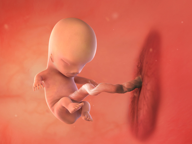
- 1. Sự phát triển của thai nhi
-
Kích thước thai nhi: 3.5cm (7g) 👶🤗
Từ giai đoạn phôi thai sang giai đoạn thai nhi
- Trong khoảng 3 tuần tới bé sẽ phát triển với tốc độ rất nhanh.
- Hiện tại, phần giống như đuôi cá dần biến mất, cơ thể bé duỗi thẳng và dài ra.
- Bên dưới da mặt, vùng mí mắt, môi, cằm dưới và má bắt đầu hình thành, tạo nên cấu trúc khuôn mặt cơ bản.
- Các bộ phận chính của mắt như giác mạc (cornea), mống mắt (iris), đồng tử (pupil), thủy tinh thể (lens) và võng mạc (retina) đã hoàn thiện. Mí mắt che mắt bé cho đến khoảng tuần thứ 27.
- Tai dần phân hóa thành tai trong và tai ngoài, và hình dạng lỗ mũi cũng thấy được qua siêu âm.
- Làn da dày hơn và bé có thể cảm nhận được kích thích. Nền tảng răng sữa và tóc cũng đang được hình thành.
- Túi mật, tuyến tụy và hậu môn cũng đang được hình thành.
- Trán (forehead) của bé tạm thời phồng lên do não đang phát triển và nằm khá cao trên đầu, đầu bé đo được bằng nửa chiều dài cơ thể. Các khớp thần kinh (synapses) trong tủy sống (spinal cord) của bé cho phép bé cử động tay chân và ngón tay (limbs and fingers).
- 2. Thay đổi của cơ thể mẹ
-
Ốm nghén nặng nhất
- Ốm nghén thường đạt đỉnh vào tuần thứ 9 hoặc 10, đây là lúc hormone thai kỳ hCG (human chorionic gonadotropin) cao nhất, vì ốm nghén được cho là liên quan đến mức hCG và estrogen tăng. Tin tốt là từ tuần 11, hCG bắt đầu giảm, và đến tuần 15 giảm khoảng 50% so với lúc đỉnh. Nhiều mẹ bầu cảm thấy dễ chịu hơn từ đầu tam cá nguyệt thứ hai (second trimester).
- Dù mệt mỏi bởi ốm nghén nhưng mẹ hãy cố gắng ăn từng bữa nhỏ nhiều lần, đồng thời bù nước do nôn ói. Thức ăn lạnh thường ít mùi hơn nên dễ ăn, hoặc mẹ có thể thử những món có vị chua để kích thích vị giác.
Các mạch máu nổi rõ trong thai kỳ
- Các đường mạch máu màu xanh (파란 핏줄) có thể thấy rõ hơn, đặc biệt ở ngực và bụng, do lượng máu tăng lên. Khi thai nhi lớn lên, lượng máu và hệ mạch cũng tăng theo, khiến các mạch máu nổi rõ dưới da.
- Sau sinh và sau khi kết thúc cho con bú, những đường mạch máu này sẽ biến mất, nên mẹ không cần lo lắng.
Đau nhói bụng dưới
- Mẹ có thể bị đau dây chằng tròn (원형인대통증) do dây chằng nâng đỡ tử cung bị kéo giãn theo sự phát triển của thai nhi. Cảm giác đau nhói như điện giật ở một hoặc cả hai bên bụng dưới. Khi bụng lớn hơn và trọng lượng tăng, dây chằng chịu nhiều áp lực hơn nên có thể bị đau nhiều hơn. - Khi ngồi hoặc nằm, hãy di chuyển chậm; dùng đai đỡ bụng cũng rất tốt. Nếu đã nghỉ ngơi thoải mái mà vẫn đau nhiều hoặc lo lắng vì cơn đau, mẹ nên đi khám.
Tăng tiết nước bọt (Excess saliva)
- Mẹ có thể tiết nhiều nước bọt hơn bình thường, đặc biệt khi bị buồn nôn (nauseated). Việc này phổ biến và bình thường trong thai kỳ, đặc biệt ở tam cá nguyệt đầu tiên (first trimester).
- Nếu không nuốt được nước bọt, hãy nhổ ra. Uống nhiều nước hơn, nhai kẹo cao su (chewing gum), và ngậm kẹo cứng (hard candy) có thể giúp nuốt nước bọt dễ hơn.
Dịch âm đạo nhiều (Vaginal discharge)
- Mẹ có thể ra nhiều dịch âm đạo hơn trong thai kỳ do mức estrogen cao hơn. Dịch âm đạo bình thường không mùi hoặc mùi nhẹ, màu trắng sữa (milky white).
- Nếu thấy dịch âm đạo thay đổi đột ngột, như ra liên tục, mùi mạnh hoặc khó chịu, hoặc dịch màu xám, vàng, hoặc xanh lá, thì nên đi khám.
Chóng mặt (Dizziness)
- Với lượng máu (blood) tăng 30–50% chảy qua tĩnh mạch, cơ thể làm việc nhiều hơn bình thường. Hệ thần kinh (nervous) và tim mạch (cardiovascular systems) thường điều chỉnh mà không gặp vấn đề, nhưng đôi khi máu lên não (blood flow in your brain) không đủ, gây chóng mặt hoặc hoa mắt (lightheaded).
- Nếu bị chóng mặt, hãy ngồi hoặc nằm xuống ngay và có thể đặt đầu giữa hai đầu gối. Nếu đang lái xe, hãy dừng xe ngay lập tức cho đến khi cảm thấy đỡ hơn.
- 3. Lưu ý về sức khỏe
-
Mẹ hãy bổ sung đủ canxi (칼슘)
Đây là thời điểm nền tảng răng sữa, xương và cơ của bé đang hình thành. Mẹ hãy bổ sung đủ canxi thông qua rong biển, rau xanh, sữa và các sản phẩm từ sữa để tạo nền tảng vững chắc cho bé.
Bổ sung nhóm vitamin B để làm dịu cảm xúc bất ổn
Khi ốm nghén nặng, mẹ bầu không nên tránh ăn uống hoàn toàn, mà nên bổ sung đều đặn các loại vitamin nhóm B giúp giảm nhẹ triệu chứng.
Các thực phẩm như: gạo lứt, bánh mì lúa mạch đen, sữa, đậu phụ, hàu, thịt nạc, bắp cải, trứng… có tác dụng làm dịu ốm nghén.
Theo kinh nghiệm dân gian, mùi gừng cũng giúp giảm nôn ói, uống trà gừng hoặc ăn bánh gừng có thể giúp mẹ dễ chịu hơn.
🔔 Đặc biệt:
- Vitamin B6 có nhiều trong rau củ màu xanh - vàng, đậu nành → giúp ổn định dopamine - chất dẫn truyền thần kinh giúp giảm nôn.
- Vitamin B12 có nhiều trong thịt heo, thịt bò, hải sản → giúp ổn định thần kinh.
Đây đều là những dưỡng chất rất cần thiết trong thai kỳ.
Nên tránh đường
Trong thai kỳ, đường là thực phẩm gần như không có lợi và có thể gây nhiều vấn đề: tiểu đường thai kỳ, béo phì, sâu răng, bệnh tim và cả trầm cảm. Nên hạn chế tối đa đường và các chất tạo ngọt.
Căng tức bụng, đau bụng và sự thay đổi của ốm nghén
Căng tức và đau bụng trong giai đoạn đầu thai kỳ đôi khi có thể dẫn đến sảy thai. Khi sảy thai, thường sẽ có xuất huyết kèm theo việc các mô trong tử cung bị đẩy ra ngoài.
Tuy nhiên cũng có loại sảy thai diễn ra không có triệu chứng, gọi là sảy thai lưu (계류유산). Lúc này không có chảy máu hay đau bụng, và có thể trôi qua hơn một tháng cho đến kỳ khám tiếp theo mới phát hiện.
Dấu hiệu cần ⚠️chú ý là ốm nghén nặng nhưng đột ngột hết, hoặc cảm giác căng tức hoặc đau ngực bỗng nhiên giảm hẳn.
Khi bị sảy thai, sẽ phải hút hoặc nạo (D&C) để làm sạch tử cung. Nếu không, mô thai còn lại có thể phân hủy, gây viêm nhiễm và thậm chí tạo độc tố dẫn đến rối loạn đông máu - rất nguy hiểm cho mẹ.
Giai đoạn dễ sảy thai - cần hết sức cẩn thận❗❗❗
Ngồi quá lâu ở một tư thế trên xe ô tô hoặc xe buýt đường dài có thể làm giảm lưu lượng máu vùng chậu và tăng nguy cơ sảy thai. Tốt nhất là hạn chế du lịch xa trong giai đoạn này. Nếu bắt buộc phải đi, hãy nghỉ ngơi và vận động nhẹ mỗi 30–40 phút.
⚠️ Nên tránh:
- Các hoạt động mạnh hoặc thể dục cường độ cao
- Đi xe đạp, xe máy
- Mang vác nặng
- Ngồi xổm lâu để lau dọn
- Gập người về phía trước, gây áp lực lên bụng dưới
Nếu bị táo bón và phải rặn mạnh khi đi vệ sinh cũng không tốt, vì vậy mẹ nên ăn nhiều thực phẩm giàu chất xơ.
Cẩn thận nhiễm trùng tiết niệu
Nhiễm trùng đường tiết niệu (urinary tract infections - UTIs) phổ biến hơn trong thai kỳ. Báo cho bác sĩ nếu đau khi đi tiểu hoặc quan hệ (sex), đau vùng chậu (pelvic discomfort) hoặc bụng dưới (lower abdominal pain), đi tiểu nhiều nhưng ít nước tiểu, hoặc nước tiểu đục và hôi. Nếu bị UTI, liệu trình kháng sinh sẽ chữa khỏi được.
- 4. Quan hệ vợ chồng khi mang thai
-
Sinh hoạt tình dục: Nếu vợ chồng có tâm trạng thoải mái và quan hệ nhẹ nhàng, thai nhi cũng nhận được cảm xúc tích cực. Khi có nhu cầu, hai vợ chồng có thể quan hệ bình thường. Tuy nhiên, nếu bị đau bụng dưới hoặc thấy vết máu trong khi quan hệ thì phải dừng lại ngay và nghỉ ngơi.
👨Vai trò của chồng:
Hãy đặt tên thai (태명) để tạo sự gắn kết với bé - Nếu đến giờ mẹ vẫn gọi bé là “em bé ơi”, vậy sao không thử đặt một “tên thai”? Có thể ghép một chữ trong tên bố và mẹ, hoặc chọn một cái tên có ý nghĩa tốt đẹp, hoặc đơn giản là một cái tên thật dễ thương.😊 Hãy gọi bé bằng tên thai đầy yêu thương để xây dựng sự gắn kết với bé trong bụng.💖
Chồng hãy cùng vợ đến buổi khám thai
- Nếu có thời gian, chồng nên cùng vợ đến các buổi khám thai định kỳ. Thai kỳ luôn đi cùng nỗi lo và bất an, nên sự đồng hành của chồng sẽ là nguồn sức mạnh rất lớn cho vợ.
- Chồng cũng sẽ hiểu rõ hơn về những thay đổi kỳ diệu đang diễn ra trong cơ thể vợ. Khoảnh khắc cùng lắng nghe nhịp tim của bé sẽ là trải nghiệm đầy xúc động và đáng nhớ.
- Nếu không thể trực tiếp đến khám, hai vợ chồng có thể gọi video, và đặt câu hỏi cho bác sĩ.
- Mang thai là hành trình của cả hai vợ chồng. Càng khó khăn, càng cần dựa vào nhau - điều đó sẽ khiến tình cảm vợ chồng càng thêm bền chặt.
- 5. Trọng tâm thai giáo
-
Trồng cây và cảm nhận giá trị của sự sống
Việc chăm cây không chỉ là tưới nước, mà còn dồn vào đó tình yêu thương, sự quan tâm như nuôi một em bé. Khi chăm sóc một sinh mệnh mong manh, bố mẹ sẽ phát triển cảm giác trách nhiệm và mở rộng lòng yêu thương đến cả những sự vật xung quanh. Đây là cảm xúc rất tốt cho thai giáo.
- 6. Các thông tin cần biết khác
-
Xét nghiệm ADN thai nhi
Nếu gia đình có lo ngại về bệnh di truyền, dù chi phí cao, vẫn nên thực hiện xét nghiệm ADN của thai nhi. Hiện y học đã phát hiện khoảng 4.000 bệnh di truyền, trong đó khoảng 730 bệnh đã biết cấu trúc gene và khoảng 80 loại được ứng dụng trong lâm sàng.
Phương pháp xét nghiệm này có thể chẩn đoán chính xác các dị tật bẩm sinh mà siêu âm, xét nghiệm máu hay chọc ối không thể phát hiện. Không chỉ phát hiện hội chứng Down (điều mà xét nghiệm NST truyền thống đã làm được), phương pháp này còn xác định được những bệnh như khiếm thính bẩm sinh, chậm phát triển trí tuệ, bại não di truyền, nhược cơ, bất thường tinh hoàn bẩm sinh, bệnh máu khó đông, bệnh thận, thậm chí cả khả năng hói đầu bẩm sinh của thai nhi.
Xét nghiệm này được thực hiện hiệu quả nhất trong giai đoạn từ 6–11 tuần thai, bằng cách lấy một phần mô nhau thai qua cổ tử cung và phân tích DNA trong tế bào thai bằng phương pháp di truyền phân tử. Nếu phát hiện bất thường, mẹ sẽ được kiểm tra thêm để xác định chắc chắn các vấn đề như chậm phát triển trí tuệ, bất thường tinh hoàn, bệnh máu khó đông…
-
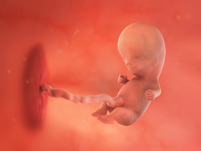
- 1. Sự phát triển của thai nhi
-
Kích thước thai nhi: 4.5cm (17g)🥳🌼
Tỷ lệ cơ thể bé đã phát triển thành 3 phần rõ rệt: đầu-thân-chân (머리-몸통-다리). Phần lớn cơ bắp (근육조직) bắt đầu hình thành, chi trên và chi dưới (사지) phân biệt rõ, dài hơn, xuất hiện cổ tay và các ngón tay (손목과 손가락). Chân cũng phân hóa thành đùi, bắp chân và bàn chân (허벅지, 종아리, 발). Bé co và duỗi chân được, trông như đang đá hoặc bước đi. Qua siêu âm, có thể thấy bé đang cựa quậy.
Lông tơ (체모) mọc trong nang lông (모낭), tạo ra lớp lông tơ mềm (솜털), và tất cả các cơ quan trong cơ thể (체내 기관) phát triển, bao gồm tim (심장), gan (간), lá lách (비장), ruột thừa (맹장), và các cơ quan nội tạng (내장). Gan tạo hồng cầu (red blood cells), thận sản xuất nước tiểu, và tuyến tụy (pancreas) bắt đầu tạo insulin. Ruột được hình thành dài đến mức tạo thành vòng tròn, và hệ tuần hoàn (순환기관) cũng ổn định vị trí.
Nền tảng răng và tóc cũng đang chuẩn bị mọc. Hình dáng tai dần hoàn chỉnh và đi vào đúng vị trí. Sau đôi môi nhỏ xinh, lưỡi và vị giác cũng đang phát triển. Cơ hoành đã hoàn thiện giúp bé “tập thở”; bé bắt đầu nuốt nước ối và thải ra dưới dạng nước tiểu - như một bài tập thở và tiêu hóa.
Cơ quan sinh dục đang hình thành. Bộ phận sinh dục ngoài (external sex organs) là dương vật và bìu (penis and scrotum) ở bé trai, âm vật và môi âm hộ (clitoris and labia) ở bé gái, thì chưa khác biệt rõ ràng trước tuần 11. Vẫn cần thêm vài tuần nữa để có thể dễ dàng phân biệt bé trai hay gái qua siêu âm (ultrasound).
- 2. Thay đổi của cơ thể mẹ
-
📌 Khí hư tăng lên (질 분비물). Tuần này, lượng máu lưu thông ở vùng chậu tăng mạnh, tuyến nội tiết ở cổ tử cung hoạt động nhiều hơn làm khí hư tăng lên, đặc hơn và có mùi hơi chua. Đây là cơ chế giúp âm đạo sạch và bảo vệ thai nhi khỏe mạnh. Tránh mặc đồ lót hay quần bó, dùng đồ lót cotton thoáng khí, rộng rãi sẽ thoải mái hơn.
📌 Cảm giác nặng ở thắt lưng (허리) và có thể bị co cơ ở mắt cá chân (발목에 경련), đồng thời mẹ cũng có thể bị táo bón hoặc tiêu chảy (변비나 설사). Nếu mẹ từng có vấn đề về da (피부 트러블) thì có thể thấy da khô và ngứa (가려움증).
📌 Cảm giác vòng eo to ra. Tử cung lớn dần khiến những chiếc quần/váy thường ngày có thể trở nên hơi chật. Mẹ nên chọn quần rộng hơn một size và chất liệu thoải mái thay vì dạng skinny. Nếu chưa thấy bụng cũng đừng lo. Mỗi phụ nữ và mỗi bụng bầu khác nhau, không có thời điểm chính xác bắt đầu lộ bụng. Kích thước bụng phụ thuộc vị trí tử cung, chiều cao, cân nặng, và mẹ đã từng sinh con hay chưa. Mẹ thường lộ bụng sớm hơn khi mang thai lần hai, vì cơ tử cung và cơ bụng đã giãn từ lần trước.
📌 Cảm giác thèm ăn quay trở lại. Nếu mẹ thấy đói thường xuyên hơn, đó là dấu hiệu ốm nghén sắp kết thúc. Nhưng đừng ăn quá nhiều. Hãy chọn thực phẩm giàu dinh dưỡng, tránh đồ ăn nhanh. Để giữ hệ tiêu hóa hoạt động, nên uống nước đều trong ngày, ăn thực phẩm giàu chất xơ (high-fiber foods) như trái cây tươi và rau, và vận động (exercise) đều đặn.
⚠️Từ giai đoạn này mẹ cần chú ý đến mức tăng cân phù hợp với BMI để đảm bảo sinh nở an toàn. Tăng cân quá nhiều có thể gây tiền sản giật, tiểu đường thai kỳ nên mẹ cần cẩn thận.
🎀Đây là thời điểm tuyệt vời để lên kế hoạch ‘babymoon’🤗
- Mẹ đã gần vượt qua tam cá nguyệt đầu tiên, mẹ đã thật sự rất cố gắng rồi!💖
- Sau tuần 12, nguy cơ sảy thai giảm mạnh (98% các ca sảy thai xảy ra trước 12 tuần). Từ tuần 13 trở đi là giai đoạn “an toàn” - thai kỳ bước vào tam cá nguyệt giữa.
- Khi vào giai đoạn ổn định, mẹ có thể đi du lịch nhẹ nhàng. Đây cũng là dịp nghỉ ngơi, tặng cho bản thân món quà sau thời gian mệt mỏi.
- Babymoon cũng là cơ hội giúp hai vợ chồng dành thời gian ngọt ngào bên nhau - điều này giúp vượt qua những giai đoạn khó khăn tốt hơn.💞
- 3. Lưu ý về sức khỏe
-
📍Nếu có bệnh lây truyền qua đường tình dục (성병), cần phải điều trị ngay.
Thai chưa hình thành nhau thai hoàn chỉnh (태반이 완성되지 않았으므로), vì vậy nếu có bệnh lây qua đường tình dục cần điều trị kịp thời trước khi thai kỳ tiến triển.
📍Cẩn thận kẻo bị thiếu máu (빈혈 조심)
- Để cung cấp oxy và dinh dưỡng cho thai nhi, lượng máu của mẹ tăng khoảng 50%, nhưng số lượng hồng cầu tăng chậm hơn nên dễ xuất hiện thiếu máu.
- Thiếu máu thai kỳ có thể ảnh hưởng xấu đến sự phát triển của thai nhi, nặng có thể gây sinh non hoặc khiến trẻ bị thiếu máu.
- Triệu chứng điển hình: tim đập nhanh, chóng mặt, tay chân lạnh, thở hụt hơi.
- Mẹ nên bổ sung rau xanh, đậu/đỗ, thịt đỏ để phòng thiếu máu.
📍Vitamin C hỗ trợ hấp thu sắt (철분의 흡수를 돕는 비타민C)
- Nếu mẹ bầu ăn uống kém, thai nhi có thể bị suy dinh dưỡng (영양실조) dẫn đến sảy thai tự nhiên, sinh non (조산) hoặc sinh non tháng (미숙아 출산). Ngược lại, ăn quá nhiều sẽ dẫn đến béo phì, tăng nguy cơ tiểu đường thai kỳ (임신성 당뇨) hoặc tiền sản giật (임신중독증) cao gấp 3 lần.
- Trong giai đoạn đầu thai kỳ (임신 전기), cần bổ sung thêm khoảng 150 kcal, giai đoạn sau (후기) là 350 kcal. Cần ăn uống cân bằng, và vitamin C giúp hấp thu sắt hiệu quả, hỗ trợ trao đổi chất của thai nhi. Vitamin C chỉ lưu trong cơ thể 2–3 giờ, nên thường xuyên ăn dâu tây, quýt, cam, kiwi, cà chua.
📍Ăn thực phẩm giàu canxi (Eat calcium-rich foods)
Đủ canxi rất quan trọng trong thai kỳ. Bé cần canxi cho xương, răng, thần kinh và cơ chắc khỏe. Phụ nữ từ 19 tuổi trở lên cần 1000mg canxi/ngày. Mẹ sẽ nhận được một phần từ vitamin thai kỳ (prenatal vitamin), nhưng cũng cần ăn thực phẩm giàu canxi như sữa và các sản phẩm từ sữa, cá đóng hộp, ngũ cốc, nước ép, sữa đậu nành, bánh mì bổ sung canxi.
📍Uống khoảng 8 ly nước mỗi ngày
Buồn nôn và ốm nghén dễ gây thiếu nước. Khi mang thai, cơ thể mẹ đổ mồ hôi nhiều hơn, cần bổ sung nước. Uống 8 ly nước/ngày giúp tạo máu (혈액) và nước ối (양수), đồng thời giúp thải độc tố và kiểm soát cân nặng.
📍Tránh để cơ thể lạnh và trượt ngã
Lạnh vùng bụng dưới (아랫배) có thể gây co tử cung (자궁 수축), và do nhau thai chưa bám chắc, nhau thai có thể bong ra. Nên mang tất, tránh gió điều hòa, chú ý giữ ấm khi ra ngoài. Khi leo cầu thang, mẹ nên đặt trọng tâm cơ thể về phía mũi chân, đi chậm. Mùa hè, nên mang giày đế thấp thay vì dép xỏ ngón để tránh trượt.
📍Chăm sóc da (Take care of your skin)
Thai kỳ cũng mang đến các vấn đề về da như mụn (acne), tĩnh mạch giãn (varicose veins), nám (melasma), phát ban (rashes), ngứa (itchy skin), hoặc rạn da (stretch marks). Một số không tránh được, nhưng mẹ có thể chăm sóc da bằng cách uống nhiều nước, thoa kem chống nắng, và dưỡng ẩm thường xuyên.
- 4. Quan hệ vợ chồng khi mang thai
-
Quan hệ tình dục: vẫn là giai đoạn cần cẩn trọng tránh sảy thai. Khi quan hệ ở tư thế bình thường, người mẹ nằm ngửa, mở chân, gập gối, người chồng không nên thâm nhập quá sâu, điều chỉnh bằng chân, vẫn có thể quan hệ an toàn.
👨Vai trò của chồng:
Tâm trạng có thể thay đổi chỉ vì một món ăn
- Do ốm nghén, người vợ có thể thích hoặc ghét nhiều món hơn bình thường, hoặc bất chợt thèm một món rất đặc biệt.
- Nếu chồng xem nhẹ điều đó vì “mệt”, “khó mua” hoặc “phiền” thì vợ có thể nhớ mãi và cảm thấy tủi thân - vì đây là giai đoạn nhạy cảm cả thể chất lẫn tinh thần.
- Trong một khảo sát về “Điều khiến phụ nữ tủi thân nhất khi mang thai”, câu trả lời đứng thứ 2 là: “Chồng không mua món mà tôi thèm ăn.” Không phải vì món ăn đó, mà vì cảm giác chồng không hề cố gắng. Vì vậy hãy cho vợ cảm giác “Anh sẽ cố tìm cho em dù phải đi đến tận cùng thế giới!”😆
Hãy ân cần với vợ vì cô ấy phải đi vệ sinh rất nhiều
- Hormone và tử cung lớn dần khiến bàng quang bị chèn ép, thận hoạt động nhiều hơn nên mẹ dễ mắc tiểu.
- Vào ban đêm khi vợ phải dậy đi vệ sinh, chỉ một câu “Không sao đâu em, cứ gọi anh nếu cần” cũng đủ khiến vợ cảm động.🤗
- Chồng cũng có thể lắp đèn ngủ/mood light để vợ không bị vấp ngã trong đêm.
- 5. Trọng tâm thai giáo
-
Quản lý cảm xúc
Thay đổi cơ thể đột ngột có thể làm mẹ bối rối, áp lực về sinh nở khiến mẹ không thể thảnh thơi. Cảm xúc thay đổi đa dạng, phụ thuộc vào việc mang thai trong kế hoạch hay ngoài dự định, tính cách mẹ bầu, hạnh phúc hôn nhân,… Ngay cả những mẹ phản ứng tích cực với thai kỳ cũng có thể trải qua cảm xúc tiêu cực nếu gặp triệu chứng khó chịu như khó tiêu, nôn, táo bón, đau đầu. Sức khỏe tinh thần của mẹ ảnh hưởng trực tiếp đến sức khỏe tinh thần của thai nhi. Trong giai đoạn thần kinh não phát triển mạnh, mẹ cần giữ tâm trí bình an, yêu thương bé, ưu tiên hơn mọi hình thức thai giáo khác.🌼💞
- 6. Các thông tin cần biết khác
-
Phân biệt tiểu nhiều và viêm bàng quang (소변을 자주보고 싶은 증상과 방광염의 구별)
Trong thai kỳ, buồng trứng lớn lên, tử cung to chèn bàng quang, khiến mẹ đi tiểu nhiều ngay khi bàng quang chưa đầy. Tiểu ít nhưng nhiều lần, cả đêm phải dậy, khiến mẹ nghi ngờ viêm bàng quang (방광염). Viêm bàng quang gây đau, sốt, nặng có thể có tiểu ra máu (혈뇨). Điều trị sớm dễ hồi phục, để lâu có thể lan sang viêm thận bể thận.
Kiểm tra bệnh nhau thai bất thường
Thai trứng là tình trạng bệnh lý của gai nhau, xảy ra khi những nhung mao cực nhỏ (극히 미세한 융모) ngoài trứng thụ tinh phát triển bất thường, sinh ra khối giống chùm nho trong tử cung. Tỷ lệ thấp (khoảng 0.5% phụ nữ mang thai), nhưng nếu không loại bỏ hoàn toàn thì có nguy cơ tiến triển thành ung thư. Nhờ siêu âm âm đạo (질초음파), có thể chẩn đoán trước 12 tuần. Triệu chứng gồm buồn nôn, nôn dữ dội, chảy máu lặp lại, bụng to hơn so với tuổi thai. Nếu được chẩn đoán, cần phẫu thuật hút (소파수술) loại bỏ hoàn toàn. Sau 2-3 năm theo dõi định kỳ, mới nên thử mang thai lại.
-

- 1. Sự phát triển của thai nhi
-
Kích thước thai nhi: 6cm (20g)💗✨
👀 Khuôn mặt xinh xắn của bé đang ngày càng rõ nét hơn
- Xương vòm miệng đã vào vị trí, nên bây giờ có thể phân biệt rõ khoang mũi và khoang miệng. Đôi mắt vốn nằm hai bên đang dần di chuyển ra phía trước, và đôi tai cũng đang vào đúng vị trí. Sóng mũi, cằm… tất cả đều rõ nét hơn.
- Làn da trước đây còn trong suốt, giờ bắt đầu tích mỡ và sẽ dần chuyển sang sắc hồng.
- Trên khuôn mặt và cơ thể bé bắt đầu xuất hiện và được bao phủ bởi lớp lông tơ gọi là lông tơ sơ sinh (배내털).
🧠 Não bộ và hệ miễn dịch phát triển mạnh
- Cấu trúc não cơ bản đã hoàn thiện. Não bộ tiếp tục phát triển kích thước. Bề mặt não vẫn còn trơn láng và chưa có nếp gấp.
- Tuyến giáp cũng đã hoàn thiện và tuyến yên bắt đầu sản xuất hormone. Tủy xương tạo ra bạch cầu, nên từ lúc này trở đi, không chỉ dựa vào miễn dịch của mẹ nữa, mà bản thân bé cũng hình thành hệ miễn dịch riêng.
🧩 Bé đang tập tiêu hóa
- Các cơ quan nội tạng hình thành từ dây rốn dần dịch chuyển vào khoang bụng. Hệ tiêu hóa bắt đầu co bóp để tập tiêu hóa, từ việc tiếp nhận chất dinh dưỡng, xử lý thức ăn, cho đến luyện tập việc tạo phân và đi tiểu.
- Phân sẽ chỉ được thải ra sau sinh dưới dạng phân su, nhưng nước tiểu thì bé đang thải vào nước ối từ bây giờ. Nước tiểu của thai nhi hoàn toàn vô trùng nếu không có vi khuẩn xâm nhập từ bên ngoài.
🦴 Các cơ quan ngày càng hoàn thiện
- Gan bắt đầu đảm nhiệm chức năng lọc máu, tụy sản xuất insulin, tuyến giáp giúp điều hòa trao đổi chất.
- Cơ và xương phát triển, trong xương hàm đã hình thành 32 mầm răng vĩnh viễn.
- Cơ bắp của bé mạnh lên, và bé đang “bơi lội” trong nước ối rất tích cực.
- 2. Thay đổi của cơ thể mẹ
-
Ốm nghén (입덧) dần giảm và cảm giác dễ chịu hơn. Khi triệu chứng ốm nghén giảm, cảm giác thèm ăn tăng lên khiến sắc mặt của mẹ bầu trở nên hồng hào hơn. Tinh thần ổn định, cảm thấy thoải mái, nhiệt độ cơ bản ở pha hoàng thể trước đó cao sẽ bắt đầu giảm và duy trì như vậy cho tới khi sinh.
Một số mẹ bầu bắt đầu thấy bụng nhô lên. Vì thai nhi lớn hơn, phần đáy tử cung trở nên rõ ràng và có thể cảm nhận được. Tử cung to dần sẽ chèn lên bàng quang khiến mẹ đi tiểu nhiều hơn. Dây chằng nâng đỡ tử cung cũng bị kéo giãn nên có thể gây đau bụng dưới hoặc đau bẹn. Thường là đau nhói vài giây hoặc cảm giác bị châm nhẹ, xuất hiện nhiều hơn vào ban ngày khi hoạt động nhiều, đứng lâu hoặc khi thay đổi tư thế. Đây là hiện tượng bình thường. Tuy nhiên, nếu đau kéo dài đến mức không thể sinh hoạt, hãy gặp bác sĩ.
- 3. Lưu ý về sức khỏe
-
🧾 Tìm hiểu về bảo hiểm thai nhi🔍
- Có loại bảo hiểm dành cho thai nhi, thực chất là bảo hiểm trẻ em kèm điều khoản đặc biệt cho thai nhi. Nếu kết quả khám thai cho thấy có bất thường, mẹ có thể không còn đủ điều kiện tham gia bảo hiểm nữa. Vì vậy nên đăng ký càng sớm càng tốt.
- Các công ty bảo hiểm có ưu và nhược điểm khác nhau, nên hãy so sánh kỹ trước khi chọn.
📅 Thời điểm làm xét nghiệm dị tật thai lần 1🧪
- Tuần 10-13 là thời gian thực hiện xét nghiệm sàng lọc dị tật thai lần 1, vì đây là giai đoạn hình thái thai nhi gần như hoàn chỉnh, có thể phát hiện một số dị tật bên ngoài như thiếu chi, thoát vị rốn (제대탈장), vô não (무뇌아).
- Bác sĩ sẽ đo độ mờ da gáy (Nuchal Translucency) qua siêu âm để đánh giá nguy cơ bất thường nhiễm sắc thể. Nếu độ dày vùng gáy thai nhi đo được dày hơn mức tiêu chuẩn 3mm, khả năng thai có bất thường nhiễm sắc thể tăng lên trên 30%. Đây là con số cao hơn hơn 10 lần so với tỷ lệ trung bình thai có bất thường nhiễm sắc thể.
- Ngoài bất thường nhiễm sắc thể, dấu hiệu này còn liên quan đến các bất thường cấu trúc như tim, cơ hoành (횡경막), thận và các dị tật ổ bụng, vì vậy cần làm xét nghiệm chuyên sâu.
- Mẹ không cần chuẩn bị gì đặc biệt, chỉ cần giữ tâm trạng thoải mái.💆♀️
- Xét nghiệm lần 2 sẽ diễn ra vào khoảng tuần 16. Tùy bệnh viện hoặc trạm y tế, phương pháp có thể khác nhưng đa số chỉ cần lấy máu nên rất đơn giản.
⚖️ Kiểm soát cân nặng khi mang thai là rất quan trọng🚨
Mẹ cần kiểm soát cân nặng để phòng ngừa các bệnh sau
✓ Tiền sản giật (임신 중독증)
- Là tình trạng tăng huyết áp thai kỳ có thể gây tổn thương thận, gan, não, tim… của mẹ. Nguyên nhân chưa rõ ràng nhưng liên quan đến béo phì, tiểu đường, cao tuổi, bệnh mạch máu…
- Tiền sản giật rất nguy hiểm cho cả mẹ và bé: có thể gây giảm chức năng nhau thai, ảnh hưởng đến tim, phổi, não của thai nhi. Trường hợp nặng có thể dẫn đến sinh non hoặc tử vong. Mẹ từng có huyết áp cao, mang thai lớn tuổi, hoặc tăng cân quá mức cần đặc biệt chú ý.
✓ Đái tháo đường thai kỳ (임신성 당뇨)
- Là tình trạng phát hiện đường huyết cao trong thai kỳ, thường không có triệu chứng mà chỉ phát hiện trong khám thai. Nếu đường huyết không được kiểm soát, bé dễ bị thai to, làm tăng nguy cơ biến chứng trong quá trình sinh.
✓ Nhau bong non (태반 조기 박리)
- Là tình trạng nhau thai tách khỏi tử cung trước khi bé chào đời. Nguyên nhân chưa rõ nhưng liên quan đến tuổi mẹ và số lần sinh trước đó. Mẹ bị tiền sản giật có nguy cơ nhau bong non cao gấp 2-4 lần người bình thường.
✨ Nguyên tắc sinh hoạt cho mẹ bầu
- Hãy bổ sung axit folic (엽산) để phòng ngừa dị tật thai nhi. Nếu mẹ thiếu axit folic trong thai kỳ, nguy cơ sinh con dị tật sẽ tăng cao. Theo khuyến nghị lượng tiêu thụ hằng ngày tại Mỹ là 800mg, nhu cầu axit folic khi mang thai tăng gấp đôi. Mẹ nên ăn nhiều hơn khoảng gấp 2 lần các thực phẩm giàu folate như súp lơ trắng, đậu Hà Lan, đậu phộng, rau bina, gan bò.🍀🍀
- Khi ốm nghén kết thúc, cần quản lý chế độ ăn uống thật chặt chẽ, vì cảm giác thèm ăn trở nên mạnh hơn như để bù lại thời gian ăn uống khó khăn trước đó.🍽️ Mẹ thường dễ ăn các món nhiều calo như bánh kem, kem lạnh..., và thói quen này rất dễ dẫn đến béo phì thai kỳ. Sau khi hết ốm nghén, cần kiểm soát chế độ ăn thật kỹ. Nếu trước khi mang thai mẹ có cân nặng tiêu chuẩn thì trong thai kỳ không nên tăng quá 500g mỗi tuần, nếu mẹ thừa cân thì mức tăng nên thấp hơn.
- Hãy chú ý khi uống cà phê và các loại đồ uống chứa caffeine.☕ Cà phê, trà đen, trà xanh, ca cao, nước ngọt, cola đều chứa caffeine.🥤 Mỗi ngày uống 1-2 ly cà phê thì không sao, nhưng nếu uống nhiều hơn khiến khó ngủ hoặc uống khoảng 7 ly trở lên trong ngày thì có thể làm tăng nguy cơ dị tật thai nhi. Khi dùng đồ uống chứa caffeine, điều quan trọng là phải chú ý tổng lượng caffeine tiêu thụ trong ngày.
- 4. Quan hệ vợ chồng khi mang thai
-
Quan hệ tình dục: Khi ốm nghén giảm dần và nhau thai (태반) đang trong giai đoạn hoàn thiện, mẹ bầu sẽ dần thích nghi hơn với tình trạng mang thai và cảm thấy thoải mái hơn. Nếu có nhu cầu và sức khỏe ổn định, mẹ có thể duy trì đời sống tình dục mà không cần quá lo ngại về tần suất, vì đây là giai đoạn khá an toàn để sinh hoạt tình dục.
👨Vai trò của chồng:
Hội chứng Couvade - chồng cũng có ‘triệu chứng thai nghén’?😵😵
- Từ “Couvade” xuất phát từ tiếng Pháp, nghĩa là “ấp trứng”. Khoảng 30% nam giới có thể trải nghiệm hội chứng này - còn gọi là mang thai giả do đồng cảm.
- Triệu chứng gồm: buồn nôn, nôn ói, mệt mỏi, thay đổi cảm xúc, giảm ham muốn, thay đổi cân nặng… giống như vợ đang mang thai.
- Nguyên nhân được cho là do hormone của chồng thay đổi do ảnh hưởng từ pheromone của vợ mang thai, áp lực tâm lý hoặc sự đồng cảm mạnh mẽ với vợ.
- Hội chứng thường rõ nhất vào tháng thứ 3, giảm dần, nhưng có thể xuất hiện lại vào giai đoạn cuối thai kỳ.
- Không có phương pháp chữa trị đặc hiệu, nhưng uống trà giảm buồn nôn, trò chuyện với vợ, giảm lo âu và tăng sự gắn kết sẽ giúp cải thiện.
- 5. Trọng tâm thai giáo
-
Bắt đầu một ngày thật sảng khoái là điều đặc biệt quan trọng đối với mẹ bầu. Bởi vì khi đang mang trong bụng một sinh linh mới và đón nhận những thay đổi ấy một cách tích cực, năng lượng hân hoan ấy sẽ được truyền trực tiếp đến thai nhi. Buổi sáng mở đầu một ngày, khi mẹ thổi vào cơ thể mình một nụ cười rạng rỡ, cả ngày sẽ trở nên dễ chịu và vui vẻ hơn. Khi cười, mẹ cần cười bằng cả cơ thể. Nếu các cơ mặt thường xuyên bị cứng, đến lúc muốn cười cũng sẽ khó tự nhiên. Hãy dùng đầu ngón tay vỗ nhẹ khắp khuôn mặt, làm ấm đôi tay rồi xoa đều trán, má, mắt, miệng và quanh mũi, sau đó thư giãn cơ mặt bằng nhiều biểu cảm khác nhau. Hãy tập cười trước gương, cười cũng cần phải luyện tập thì mới có thể cười đẹp và tự nhiên.😊😊
- 6. Các thông tin cần biết khác
-
Đặc biệt chú ý việc dùng thuốc trước tuần 12💥
- Trong các nguyên nhân gây dị tật thai nhi, việc dùng thuốc chiếm khoảng 2-3%. Vấn đề của việc mẹ bầu dùng thuốc không chỉ nằm ở chỗ gây ra dị tật mà còn có thể cản trở quá trình thai nhi dị tật bị đào thải tự nhiên.
- Thời điểm nguy hiểm nhất khi dùng thuốc trong thai kỳ là trước tuần 12. Tuần thai 3-8 là giai đoạn các cơ quan như tim, hệ thần kinh trung ương, mắt, tai, tứ chi... hình thành về mặt cấu trúc, và cho đến tuần 12 thì các cơ quan của thai nhi mới hoàn tất.
- Những thuốc nguy hiểm đối với thai nhi bao gồm thuốc hóa trị (항암제), thuốc hạ đường huyết, thuốc nội tiết tố nữ, thuốc tránh thai đường uống (경구 피임약), streptomycin thường dùng trong điều trị lao, thuốc hạ sốt giảm đau, thuốc corticosteroid (부신피질 호르몬제), thuốc lợi tiểu, thuốc an thần, thuốc ngủ, kháng sinh nhóm tetracyclin thường dùng điều trị nhiễm trùng, thuốc chống trầm cảm, và cả rượu.
⚠️Nếu bắt buộc phải dùng thuốc, mẹ bầu nhất định phải tham khảo ý kiến bác sĩ chuyên khoa và dùng thuốc theo đơn.
-
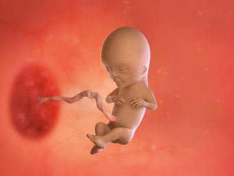
- 1. Sự phát triển của thai nhi
-
Kích thước thai nhi: 7.5cm (40g)😊🌞
Ở giai đoạn này, làn da trước đây còn trong suốt bắt đầu dày thịt lên, nhịp tim khỏe hơn khiến gương mặt bé có sắc hồng.🌸
Mi mắt vẫn đang trong quá trình hình thành và còn khép lại, nhưng mắt gần như đã định hình và hai mắt bắt đầu dịch chuyển về phía sống mũi. Tuy nhiên, khoảng cách giữa hai mắt vẫn còn xa.👀
Cổ bắt đầu hình thành và vành tai ngoài, trước đây nằm thấp như phần mỡ dưới cằm, dần di chuyển lên vị trí cao hơn trên vùng cổ.👂
Cơ má bắt đầu được lấp đầy cơ, dây thanh quản cũng phát triển - bé đang chuẩn bị để cất tiếng khóc thật to khi chào đời!💗
Bé đang tập “thở” trong nước ối. Hiện bé chưa thể thở bằng phổi như sau khi sinh, mà bé chỉ hít vào và đẩy nước ối ra để giúp phổi phát triển. Nước ối mà bé nuốt vào sẽ được lọc qua thận và bài tiết ra ngoài dưới dạng nước tiểu sạch. Lượng nước ối cũng tăng lên đáng kể vào thời điểm này.💧
Những cơ quan như phổi, tim… vốn được hình thành gần dây rốn, nay đã đi vào trong khoang bụng và ổn định vị trí. Nhau thai cũng lớn dần để cung cấp đủ dinh dưỡng cho bé.💕
Cơ quan sinh dục gần như hoàn thiện. Nếu là bé gái, buồng trứng đã hình thành đầy đủ. Nếu là bé trai, tinh hoàn cũng phát triển hoàn chỉnh và đang bắt đầu di chuyển ra vị trí bên ngoài. Phần “nhô lên” giữa hai chân chính là phần sẽ phát triển thành cơ quan sinh dục ngoài.🌟
Từ giai đoạn này, tốc độ phát triển của mỗi bé sẽ khác nhau. Từ đầu thai kỳ đến giờ, hầu như bé nào cũng phát triển với tốc độ khá giống nhau. Nhưng từ tuần này trở đi, mỗi thai nhi có thể phát triển nhanh hoặc chậm một chút tùy cơ địa. Tất cả thai nhi đều đi qua cùng một quá trình, chỉ là mỗi bé có “nhịp độ” riêng. Mẹ hãy tôn trọng sự khác biệt đáng yêu của con nhé!🧸
- 2. Thay đổi của cơ thể mẹ
-
✏️ Lúc nào tay chân cũng ấm. Lượng hormone tiết ra dần ổn định hơn, các cảm xúc bất an hay hiện tượng dễ kích động cũng giảm dần. Áp lực lên tim tăng lên mức cao nhất và tình trạng này sẽ kéo dài trong thời gian tới. Để hạ huyết áp, các tĩnh mạch ở tay và chân giãn ra, khiến tay chân mẹ luôn trong trạng thái ấm áp.
✏️ Mẹ giảm ham muốn là bình thường. Tác động hormone khiến mỗi người có cảm giác khác nhau, có người giảm ham muốn, có người lại tăng hơn. Tất cả đều hoàn toàn bình thường. Ham muốn trong thai kỳ có thể lên xuống thất thường, mẹ không cần lo lắng. Hãy chia sẻ nhẹ nhàng với chồng để hai vợ chồng hiểu và đồng hành cùng nhau.
✏️ Thời điểm thích hợp để thông báo tin vui. Sau tuần 12, nguy cơ sảy thai giảm đáng kể. Đây là thời điểm tốt để thông báo việc mang thai cho bạn bè, đồng nghiệp hoặc sếp (nếu mẹ đi làm) để chuẩn bị kế hoạch nghỉ sinh, nghỉ chăm con. Nếu mẹ đã có con đầu lòng, hãy nhẹ nhàng giải thích với bé lớn về việc sắp có em. Bé có thể bối rối, nhưng điều đó là bình thường. Có thể cho bé lớn xem ảnh của bản thân lúc còn sơ sinh, hoặc đến chơi nhà có em bé để giúp bé làm quen.
✏️ Mắt cảm giác như có cát và nguy cơ khô mắt. Hơn 80% mẹ bầu cảm thấy khô mắt. Nguyên nhân là do hormone khiến lượng nước mắt tự nhiên giảm. Nếu tình trạng kéo dài hoặc nặng, mẹ nên đi khám mắt. Khô mắt có thể dẫn đến lẹo mắt, viêm kết mạc… nên mẹ hãy chăm sóc từ sớm.
- 3. Lưu ý về sức khỏe
-
Cẩn thận với nhiễm trùng đường tiểu
- Viêm bàng quang, viêm niệu đạo là bệnh phụ nữ rất dễ mắc và trong thai kỳ nên cần chú ý.
- Trong thai kỳ, lượng nước tiểu tồn đọng tăng, tử cung lớn chèn ép bàng quang → dễ khiến mẹ buồn tiểu thường xuyên nhưng lại hay… nhịn, làm tăng nguy cơ nhiễm trùng.
- Nếu để lâu, viêm có thể lan đến thận - rất nguy hiểm. Điều trị kịp thời bằng loại kháng sinh an toàn cho thai phụ là cực kỳ quan trọng.
Khám thai định kỳ
- Khám thai định kỳ có mục đích quản lý sức khỏe của mẹ và thai nhi để giúp quá trình sinh nở diễn ra bình thường. Từ trước đó đến tháng thứ 7 nên khám mỗi tháng một lần, từ tháng 8-9 nên khám mỗi 2 tuần, và khi bước vào tháng cuối nên khám mỗi tuần.
- Quy trình khám định kỳ gồm: đăng ký khám ở quầy - đo cân nặng, huyết áp - xét nghiệm nước tiểu - hỏi bệnh - thăm khám - kiểm tra nhịp tim thai - đo chiều cao đáy tử cung - khám trong - siêu âm (có thể lược bỏ tùy theo tuần thai).
Bổ sung đầy đủ dưỡng chất
Đây là giai đoạn tốc độ phát triển của thai nhi tăng nhanh nên chất lượng dinh dưỡng của mẹ bầu trở nên vô cùng quan trọng.
🥩 Lượng thực phẩm cần ăn mỗi ngày gồm: thịt và cá khoảng 150g/ngày, khi ăn thịt nên bỏ phần mỡ và ưu tiên thịt nạc, nhưng tốt hơn là ăn cá nhiều hơn so với thịt.
🚫 Các loại thực phẩm chế biến như ham, bacon chứa chất phụ gia hóa học thì nên tránh.
🥚 Nên ăn 1 quả trứng/ngày và phải được nấu chín. Trứng là thực phẩm hoàn chỉnh đồng thời chứa choline, folate giúp làm dịu cảm giác bất an của mẹ bầu.
🥔 Nhóm củ như khoai tây nên ăn 100g/ngày, khoai lang 65g/ngày.
🌾 Về ngũ cốc, mẹ nên ăn cơm gạo lứt hoặc cơm trộn các loại ngũ cốc như gạo lứt, đậu, đậu đỏ thay vì cơm trắng. Bánh mì cũng nên chọn loại bánh mì nguyên cám hoặc bánh mì ngũ cốc.
🥬 Rau nên ăn khoảng 300g/ngày, chia đều 100g mỗi bữa, gồm rau bina, ớt chuông, rau cúc (쑥갓), cà rốt...
🍎 Trái cây nên chọn trái cây theo mùa, ăn sau bữa ăn như món tráng miệng 2 lần/ngày. Nên uống trên 8 cốc nước mỗi ngày để bổ sung đủ nước.
Quản lý cân nặng
- Ngay cả những phụ nữ trước khi mang thai không thích ăn vặt thì đến giai đoạn này cũng có xu hướng ăn nhiều đồ ăn vặt hơn🍪. Tuy nhiên không được quên rằng chỉ vài muỗng kem cũng đã chứa khoảng 300 kcal.
- Khi liên tục thèm ăn, nên tránh các món ăn vặt có hàm lượng chất béo hoặc đường cao🚫🍫. Có thể cắt sẵn cà rốt🥕, dưa leo🥒 để ăn mỗi khi thấy đói nhằm tránh tăng cân đột ngột.
Thay đổi tư thế nhẹ nhàng
- Khi đứng lên đột ngột từ tư thế ngồi hoặc nằm, máu dồn xuống chân và tim nhưng lại không kịp lên não, dẫn đến tình trạng thiếu máu tạm thời ở não trong khi máu tích tụ nhiều ở vùng thân dưới. Điều này gây cảm giác chóng mặt😵💫, và ở mẹ bầu thì triệu chứng có thể nặng hơn, thậm chí gây hoa mắt vàng hoặc tối sầm rồi ngất😣.
- Nhiều trường hợp mẹ bầu bị ngã khi đứng lâu hoặc đi lại quá lâu cũng xuất phát từ nguyên nhân này. Nhiều mẹ lầm tưởng đó là triệu chứng thiếu máu🩸, nhưng thực tế đây thường là tình trạng hạ huyết áp tạm thời.
- Vì vậy, không nên đứng dậy quá nhanh, hãy đứng lên từ từ, ⚠️tránh đứng lâu hoặc đi lại quá nhiều. Nếu bắt buộc phải di chuyển lâu, cần nghỉ giữa chừng. Đặc biệt ở những nơi như tàu điện ngầm🚇 hoặc khu vực đông người, lượng oxy thấp, dễ gây ngất đột ngột hơn khi đang trong trạng thái huyết áp thấp, nên cần đặc biệt chú ý.
- 4. Quan hệ vợ chồng khi mang thai
-
Quan hệ tình dục: Đây là thời điểm mẹ bầu đã phần nào thoát khỏi nỗi lo sợ sảy thai và cũng chưa phải là giai đoạn bụng quá lớn gây khó chịu, vì vậy có thể thử những tư thế trước đây còn ngần ngại. Có thể thử tư thế nữ trên. Tuy nhiên, mức độ thâm nhập không nên quá sâu và mẹ bầu cần tự điều chỉnh độ sâu để đảm bảo an toàn.
👨Vai trò của chồng:
📸Giữ gìn ảnh siêu âm lâu dài
Ảnh siêu âm rất dễ bị phai màu. Bố hãy giúp mẹ lưu giữ cẩn thận theo các cách sau:
- Bỏ vào album loại dán
- Dùng giấy ép nguội (không dùng ép nhiệt)
- Quét (scan) hoặc chụp lại để lưu file, hoặc in ra giấy ảnh
- Bảo quản trong túi OPP trong suốt
💑Chồng cần thích nghi với thay đổi của vợ
Ở giai đoạn này, mẹ bầu dễ mệt mỏi, ốm nghén, đầy bụng… nên có thể không muốn quan hệ. Nếu chồng cảm thấy vợ gần đây ít ham muốn hơn thì xin đừng buồn - đó không phải vì chồng, mà là do hormone!
Thay vào đó, hai vợ chồng có thể nằm cạnh nhau xem phim🎬, chuẩn bị món tráng miệng vợ thích, tạo một buổi tối nhẹ nhàng, ấm áp. Những điều nhỏ nhưng đầy yêu thương sẽ giúp hai vợ chồng gắn kết hơn.💗
- 5. Trọng tâm thai giáo
-
🎵Hãy tạo một buổi hòa nhạc thai giáo riêng cho mẹ và bé bằng cách chọn các bản nhạc nhẹ nhàng, giàu tính trữ tình nhưng mang nhịp điệu tự do để mẹ và bé thưởng thức.🎹 Có thể chọn các tác phẩm như:
“Sóng nước sông Danube” của Ivanovici (Ivanovici’s Waves of the Danube)
“Hợp xướng” của Beethoven (Beethoven’s Choral - Symphony No. 9)
O Come, Thou Shepherd (Ah! Ich habe dein’ Schlummerlied) hoặc Romance của Kreisler
“Adagio Cantabile” của Beethoven (Beethoven’s Adagio Cantabile - from Piano Sonata No. 8 “Pathétique”)
“Serenade” (Ständchen) của Schubert
hoặc “Aria on the G String” của Bach (Bach’s Air - from Orchestral Suite No. 3)…
để thư giãn và lắng nghe trong trạng thái thoải mái nhất.🌙
- 6. Các thông tin cần biết khác
-
Khi đau đầu, thay vì uống thuốc giảm đau hãy ưu tiên massage đầu
- Trong giai đoạn đầu hoặc giữa thai kỳ, triệu chứng đau đầu thường trở nên nặng hơn. Chủ yếu là đau ở vùng trán hoặc thái dương, với cảm giác như bị giật nhói.
- Nguyên nhân được cho là do mất cân bằng dinh dưỡng vì ốm nghén hoặc do cơ thể bị phù nề. Khi mang thai, không chỉ cơ thể mà cả não cũng có thể bị phù, dẫn đến những cơn đau này.
- Nếu đau quá mức, có trường hợp phải uống thuốc giảm đau theo chỉ định bác sĩ, nhưng tốt nhất vẫn nên tránh dùng thuốc bằng cách vận động nhẹ giúp thư giãn vùng đầu và nghỉ ngơi. Khi đầu nhẹ nhõm, cả ngày cũng trở nên dễ chịu hơn.
- Để làm được điều đó, hãy nhẹ nhàng gõ từ phần đỉnh đầu xuống quanh tai, sau đó gõ thêm vùng cổ và chân. Điều này giúp cơ bắp được thư giãn, máu lưu thông tốt hơn lên đầu, đồng thời giải phóng các dây thần kinh bị chèn ép, cải thiện sự lưu thông khí huyết vùng đầu.
- Tránh ăn mặn và ngủ đủ giấc cũng góp phần giúp ngăn ngừa đau đầu.
-
- 1. Sự phát triển của thai nhi
-
Kích thước thai nhi: 10cm (80g)🤗🥳
🌸 Khi bước sang tuần 14, nhau thai (태반) gần như đã hoàn thiện và bám chắc vào tử cung của mẹ. Vì nhau thai giữ vai trò cung cấp dinh dưỡng cho thai nhi nên từ bây giờ, các cơ quan cơ thể của em bé sẽ phát triển nhanh hơn nữa.
🌸 Ở giai đoạn này, da của thai nhi dày lên và trở nên không còn trong suốt, giúp bảo vệ các cơ quan nội tạng. Tư thế gập người về phía trước dần thay đổi, lưng bé duỗi ra, và mô xương đầu tiên cùng với các xương sườn bắt đầu xuất hiện. Cổ bé trở nên cứng cáp hơn, đầu cũng to và phát triển dần lên. Ở tay và chân hình thành các khớp, cơ thể thai nhi ngày càng trở nên rắn chắc👌. Dù mẹ chưa thể cảm nhận những cú đạp, nhưng bé đang di chuyển rất nhiều, với đôi tay và đôi chân vô cùng linh hoạt.
🌸 Dạ dày phụ trách tiêu hóa đang phát triển, gan bắt đầu tiết mật, tuyến tụy tiết insulin. Lá lách đã hoàn chỉnh, giúp lọc sạch máu và bắt đầu tạo ra kháng thể.
🌸 Trong nước ối, bé chưa thể phát ra âm thanh nhưng dây thanh quản ở thanh môn đã được hình thành. Trong nướu đã có 20 chiếc răng sữa😍.
🌸 Bé đang trở nên thông minh hơn. Não bộ của thai nhi giờ đã được chia thành bán cầu não phải và bán cầu não trái (우뇌 / 좌뇌). Bán cầu phải điều khiển phần bên trái cơ thể, còn bán cầu trái điều khiển phần bên phải. Với bộ não này, thai nhi sẽ thể hiện rất nhiều phản xạ. Bé có thể nắm lấy những gì chạm vào tay (phản xạ nắm), và khoảng tuần sau sẽ xuất hiện phản xạ mút ngón tay🤭. Tất cả đều là quá trình chuẩn bị để bám chặt lấy mẹ và ăn uống sau này. Khi não bộ phát triển, bé còn có thể cảm nhận cảm xúc của mẹ qua dây rốn (탯줄) và tạo biểu cảm trên khuôn mặt như nheo mắt, cau mày hoặc nhăn mặt😋.
🌸 Hiện tại, lông tơ (솜털) đang mọc trên cơ thể bé. Không chỉ trên đầu mà cả toàn thân đều có những sợi lông tơ nhỏ xíu. Trong lúc bé tiếp tục lớn dần, lớp lông tơ này sẽ giữ ấm và bảo vệ bé, và sẽ rụng dần sau vài tháng. Tuy nhiên sau sinh, một số bé vẫn còn một ít lông tơ trên cơ thể.
- 2. Thay đổi của cơ thể mẹ
-
Mẹ không còn bị ốm nghén nặng và năng lượng đang dần trở lại. Nếu chưa, mẹ hãy cố gắng thêm chút nữa nhé👐. Mặc dù hiếm gặp, một số mẹ bầu vẫn có thể cảm thấy buồn nôn kéo dài nhiều tháng. Hãy báo với bác sĩ trong lần khám tiếp theo nếu mẹ vẫn còn bị nghén🤢.
Ở giai đoạn này, đỉnh tử cung hiện đã ở phía trên xương mu một chút, làm bụng bắt đầu nhô ra. “Lộ bụng” có thể mang lại cảm giác rất háo hức, vì mẹ và bố đã có bằng chứng rõ ràng về việc em bé đang lớn lên🤗. Lượng nước ối cũng tăng lên, khiến cơ thể mẹ tăng cân. Bầu ngực cũng to ra để chuẩn bị cho việc cho con bú.
Khoảng một nửa phụ nữ mang thai có nướu sưng, đỏ, nhạy cảm và dễ chảy máu khi đánh răng hoặc dùng chỉ nha khoa😌. Tình trạng viêm nướu thai kỳ này phần nào do thay đổi hormone khiến nướu nhạy cảm hơn với vi khuẩn mảng bám. Mẹ hãy nhớ đánh răng hai lần mỗi ngày và dùng chỉ nha khoa mỗi ngày.
Dây chằng ở mỗi bên tử cung có chức năng nâng đỡ tử cung, lúc này bị kéo giãn nên mẹ có thể bị đau bẹn hoặc đau lưng và thường xuyên cảm thấy mệt mỏi. Cơn đau có thể giống như đau nhói, ngắn khi mẹ di chuyển, hoặc âm ỉ sau một ngày hoạt động nhiều. Nếu bị đau, hãy dừng lại và nghỉ ngơi, thay đổi tư thế, massage nhẹ nhàng vùng đau, hoặc tắm nước ấm. Một số mẹ thấy rằng đeo đai nâng bụng bầu (maternity belt) giúp giảm đau hiệu quả.
- 3. Lưu ý về sức khỏe
-
✔️ Giai đoạn thai nhi phát triển mạnh - chế độ ăn cân bằng rất quan trọng
- Đây là giai đoạn tốc độ phát triển của thai nhi tăng nhanh, vì vậy việc cung cấp đủ dinh dưỡng vô cùng quan trọng!
- Mỗi bữa nên có lượng cân đối thịt hoặc cá (tránh các loại cá chứa nhiều thủy ngân như cá ngừ, cá kiếm, cá thu), ngũ cốc, rau, trái cây… nên ăn đa dạng🍎🍐🍊🍋.
- Không nên ăn quá nhiều trong một lần, hãy ăn ít nhưng ăn nhiều bữa và nhai thật kỹ. Uống hơn 8 cốc nước mỗi ngày là tốt nhất. Để quản lý cân nặng, việc cân mỗi ngày vào cùng một thời điểm và cùng loại trang phục cũng rất quan trọng!
✔️ Huyết áp thấp trong giai đoạn đầu thai kỳ - hãy di chuyển chậm rãi
- Tình trạng huyết áp thấp xuất hiện trong giai đoạn đầu thai kỳ là hiện tượng tự nhiên do mạch máu của mẹ giãn ra để chuẩn bị cho lượng máu tăng lên.
- Khi huyết áp thấp, nếu đang ngồi hoặc nằm mà đứng dậy đột ngột hay thay đổi tư thế quá nhanh, mẹ có thể cảm thấy chóng mặt. Vì lượng máu đang dồn ở phần dưới cơ thể không kịp trở về não, gây thiếu máu não tạm thời. Với thai phụ, tình trạng này có thể nghiêm trọng hơn, thậm chí có thể ngã hoặc ngất😱.
- Khi đứng dậy từ tư thế ngồi hoặc nằm, hãy đứng lên thật chậm. Ở những nơi đông người như tàu điện ngầm, không khí thiếu oxy nên mẹ cần chú ý để tránh tình trạng huyết áp thấp xảy ra.
✔️ Bổ sung đầy đủ nhóm vitamin B và tập thể dục nhẹ nhàng
- Ở giai đoạn này, hầu hết các cơ quan nội tạng của thai nhi đã hoàn chỉnh và bước vào giai đoạn phát triển mạnh mẽ. Để hỗ trợ sự phát triển cơ quan nội tạng và quá trình tăng nhanh về chiều dài và cân nặng của thai nhi, mẹ cần bổ sung đầy đủ vitamin nhóm B (비타민 B군) - đặc biệt vitamin B1 và B2, rất quan trọng cho sự phát triển bình thường của thai.
- Cách mẹ trải qua giai đoạn từ giữa thai kỳ trở đi có thể quyết định việc sinh thường có thuận lợi hay không. Thay vì chỉ ngồi yên hoặc cúi mình quá nhiều, mẹ nên sinh hoạt năng động. Dù cân nặng tăng làm cơ thể nặng nề và lười vận động, nhưng nếu để lâu, cảm giác nặng nề càng tăng và dễ dẫn đến béo phì. Vì vậy, mỗi ngày mẹ nên duy trì tập thể dục toàn thân khoảng 10 phút🚶♂️🚶♀️.
✔️ Tuyệt đối không tắm nước nóng kiểu sauna
- Trong thai kỳ, việc ngâm mình lâu trong bồn nước nóng là không tốt. Nhiệt độ cơ thể thai phụ vượt quá 38.8°C có thể gây hại cho sự phát triển của thai nhi⛔. Mẹ có thể ngâm bàn chân hoặc ngâm người đến phần chân, nhưng không được ngâm bụng vào nước nóng⚠️⚠️.
- Việc tắm sauna trong nhà tắm công cộng cũng tuyệt đối tránh vì nhiệt độ cao có thể ảnh hưởng đến hệ thần kinh trung ương của thai nhi. Ngoài ra, mẹ nên ❌tránh tắm bọt, tắm tinh dầu, và không dùng xà phòng có chất khử mùi trong thời gian mang thai.
✔️ Lấy cao răng và vệ sinh răng miệng
- Việc đi nha khoa trong tam cá nguyệt thứ hai được cho là an toàn. Phụ nữ mang thai dễ bị viêm nướu, có thể tiến triển thành bệnh nha chu. Hãy nhớ báo với nha sĩ và kỹ thuật viên vệ sinh răng miệng rằng mẹ đang mang thai trước khi thực hiện bất kỳ thủ thuật làm sạch nào.
✔️ Cải thiện giấc ngủ
- Có rất nhiều lý do khiến việc ngủ ngon khi mang thai trở nên khó khăn, nhưng cũng có nhiều cách để cải thiện. Hãy giảm lượng caffeine, thử các kỹ thuật thư giãn, tập thể dục nhẹ nhàng, và xem xét loại gối ngủ dành cho bà bầu phù hợp. Tạo thói quen uống sữa ấm trước khi đi ngủ cũng giúp dễ ngủ nữa.
✔️ Đầu tư vào kem dưỡng tốt
- Mẹ nên bôi kem dưỡng chống rạn da bụng mỗi ngày 2 lần, vào ban ngày và trước khi đi ngủ. Ở những vùng khác dễ khô nứt da như chân, gối, đùi, mông, khuỷu tay, tay,... thì việc thoa kem dưỡng ẩm không chỉ giúp da mịn màng hơn mà còn giúp giảm ngứa, đặc biệt vào mùa đông.
✔️ Yêu cầu hỗ trợ tại nơi làm việc
- Làm việc khi mang thai không phải lúc nào cũng dễ dàng. Nếu công việc của mẹ nặng nhọc, tiếp xúc hóa chất độc hại, hoặc mẹ có một số biến chứng thai kỳ, thì nên điều chỉnh nhiệm vụ hoặc tạm ngưng làm. Nếu công việc mang tính chất hoạt động mạnh, phải đứng nhiều giờ liền hoặc nâng vật nặng, hãy trao đổi với bác sĩ rồi thảo luận với quản lý để có thể điều chỉnh phù hợp.
- 4. Quan hệ vợ chồng khi mang thai
-
Quan hệ tình dục: Khi mang thai, nhu cầu tình dục có thể thay đổi. Những phụ nữ trước đây ít quan tâm đến chuyện ấy có thể cảm thấy ham muốn hơn và dễ đạt cực khoái. Ngược lại, những người vốn có ham muốn cao lại có thể giảm hứng thú và khó đạt cực khoái khi mang thai. Những thay đổi này đôi khi khiến vợ bối rối hoặc cảm thấy có lỗi với chồng, nhưng tất cả đều là hiện tượng hoàn toàn bình thường. Sự thay đổi hormone và tâm lý trong thai kỳ khiến nhu cầu tình dục thay đổi theo từng người. Quan trọng là mẹ hãy thoải mái đón nhận - có nhu cầu thì đáp ứng, không có thì cũng không cần ép bản thân.
👨Vai trò của chồng: Kiểm tra trước khi đi du lịch thai giáo (태교여행)
Giai đoạn này, tình trạng ốm nghén từng khiến vợ khổ sở đã dần giảm bớt và sức khỏe cũng đang hồi phục từng chút một. Nếu chồng đang lên kế hoạch một chuyến du lịch thai giáo để bù đắp cho vợ mình sau thời gian vất vả, hãy cân nhắc các điều sau đây:
1️⃣ Du lịch trong giai đoạn tuần 14-28
- Tam cá nguyệt thứ hai, hay còn gọi là thời kỳ ổn định, là thời điểm tốt nhất để du lịch trong thai kỳ.
- Hãy trao đổi trước với vợ để biết tình trạng sức khỏe mà cô ấy đang cảm nhận như thế nào rồi mới quyết định.
2️⃣ Trước khi du lịch nước ngoài, phải tham khảo ý kiến bác sĩ
- Nếu mẹ bầu có các bệnh như tiểu đường thai kỳ, cao huyết áp thai kỳ hoặc có yếu tố nguy cơ như mang thai đôi, thì nhất định phải kiểm tra tình trạng sức khỏe và hỏi ý kiến bác sĩ trước khi đi để đảm bảo chuyến đi là an toàn.
3️⃣ Lựa chọn điểm đến an toàn
- Do có thể phát sinh các vấn đề liên quan đến bệnh truyền nhiễm, hãy kiểm tra trước trên trang của Cơ quan Kiểm soát và Phòng ngừa Dịch bệnh Hàn Quốc (질병관리본부) để chọn được khu vực an toàn, không có nguy cơ lây nhiễm trước khi quyết định điểm đến.
4️⃣ Ưu tiên du lịch tự do thay vì tour trọn gói
- Du lịch theo tour trọn gói thường phải tuân theo lịch trình cố định nên có thể gây mệt cho mẹ bầu.
- Du lịch tự do, linh hoạt theo tình trạng sức khỏe của vợ và có thể điều chỉnh lịch trình bất cứ lúc nào sẽ phù hợp hơn.
5️⃣ Tìm hiểu trước vị trí bệnh viện gần nơi lưu trú
- Ở một môi trường mới, rất khó dự đoán điều gì có thể xảy ra. Nếu biết trước vị trí bệnh viện gần khu vực lưu trú, thì có thể xử lý nhanh chóng và bình tĩnh hơn trong những tình huống khẩn cấp.
- 5. Trọng tâm thai giáo
-
Ở giai đoạn này, thính giác của thai nhi được hình thành và bé có thể nghe thấy giọng mẹ. Mẹ hát cho bé nghe là một hình thức thai giáo rất tốt. Chỉ cần bài hát có nội dung và giai điệu tươi vui là được.
- 6. Các thông tin cần biết khác
-
Các bệnh da liễu trong thai kỳ
- Mang thai thường khiến da bị ngứa rất khó chịu. Nguyên nhân chưa rõ ràng, nhưng được cho là do hormone thai kỳ tăng cao khiến mật tích tụ trên da và do lượng máu tăng làm tuyến mồ hôi hoạt động mạnh hơn, gây ngứa.
- Da ở mặt hoặc quanh rốn có thể nổi mẩn đỏ li ti như hạt kê và ngứa, sau đó lan ra đùi và tay giống như nổi mề đay.
- Nếu gãi nhiều, lực gãi mạnh dần dẫn đến trầy xước, chảy máu và để lại vết thâm. Mẹ nên tránh dùng xà phòng, chỉ tắm nước mát nhẹ và bôi dầu dưỡng sau khi tắm, mặc đồ lót cotton rộng rãi để giảm khó chịu và quên bớt cảm giác ngứa.
- Tuy nhiên, nếu tổn thương da kéo dài, mẹ không nên bỏ qua mà cần đến gặp bác sĩ da liễu để được điều trị. Vì ngứa kéo dài có thể ảnh hưởng đến sinh hoạt hàng ngày và giấc ngủ.
-
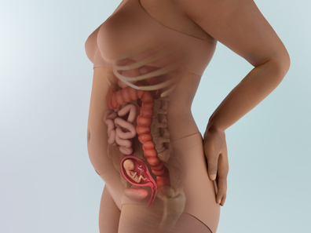
- 1. Sự phát triển của thai nhi
-
Kích thước thai nhi: 10.8cm (100g)❣️🐣
⚡ Có thể xác định giới tính của bé qua siêu âm. Ở bé gái, buồng trứng bắt đầu di chuyển xuống vùng chậu; ở bé trai, tuyến tiền liệt hình thành và bộ phận sinh dục dần lộ rõ. Khi siêu âm, nếu dây rốn che khuất tầm soi hoặc bé nằm ở tư thế khó quan sát thì có thể không xác định được. Đến khoảng tuần 20, mẹ làm siêu âm hình thái thì sẽ cho kết quả chính xác. Giới tính của em bé thật ra đã được quyết định ngay từ lúc thụ tinh👦👩, nên việc “thay đổi giới tính” chỉ là do sai sót trong lúc siêu âm trước đó.
⚡ Bé có thể cảm nhận ánh sáng. Dù mắt vẫn nhắm nhưng bé đã có thể cảm nhận ánh sáng từ bên ngoài. Phần đầu vốn to hơn cơ thể nay đã bắt đầu cân đối hơn. Đầu bé to bằng một quả bóng bàn, và não đã lấp đầy hộp sọ. Dù chưa hoàn chỉnh, não bộ đang phát triển mạnh, giúp bé có thể cảm nhận những cảm xúc cơ bản như dễ chịu😉, khó chịu, lo lắng hay bồn chồn trước các kích thích từ bên ngoài.
⚡ Thận đã hình thành và bắt đầu lọc, đưa nước tiểu vào nước ối. Bé cũng thỉnh thoảng nuốt nước ối rồi “nhè” ra. Các cơ quan nội tạng như tim và phổi, vốn nằm gần vùng cổ, đang dịch chuyển xuống đúng vị trí trong lồng ngực, khiến hình dáng bé trông càng giống người hơn.
⚡ Bé đang siêng năng luyện tập, như thở, mút, nuốt - tất cả là để chuẩn bị cho cuộc sống ngoài tử cung. Xương bé dần cứng cáp, các khớp cũng hoàn thiện, nên bé rất tích cực vận động như đạp chân, co duỗi ngón tay ngón chân, cử động tay chân… Bé đang rèn luyện cơ thể nhỏ bé của mình mỗi ngày✋🤚. Một số mẹ nhạy cảm có thể bắt đầu cảm nhận thai máy nhẹ ở thời điểm này.
⚡ Bé đang hình thành các chồi vị giác, và các dây thần kinh bắt đầu kết nối chúng với não bộ. Đến khoảng tuần 20, các chồi vị giác của bé sẽ được hình thành hoàn chỉnh. Trong thai kỳ, các phân tử từ thức ăn mẹ ăn sẽ đi vào máu và thấm vào nước ối. Nhưng em bé không thực sự nếm được chính xác món mẹ đang ăn, vì vậy đừng lo rằng bé sẽ “không thích” bữa tối của mẹ nhé.
- 2. Thay đổi của cơ thể mẹ
-
♦️ Bụng dưới bắt đầu lộ rõ
- Tử cung đang lớn dần và nâng lên khỏi vùng chậu, khiến bụng dưới nhô ra. Áp lực lên bàng quang giảm nên tần suất đi tiểu cũng ít hơn.
- Tuy nhiên, khi tử cung lớn lên, các cơ và dây chằng đỡ tử cung bị kéo giãn, khiến bạn có cảm giác căng tức, khó chịu.
- Ngoài ra, các mạch máu dẫn về tim bị chèn ép làm máu ở chân lưu thông kém, gây phù nề hoặc chuột rút.
- Hạn chế ưỡn bụng quá mức vì sẽ gây đau lưng. Hãy giữ tư thế đúng: thu cằm nhẹ, lưng thẳng.
♦️ Các vấn đề về da có thể xuất hiện
- Sự thay đổi hormone khiến melanin tăng lên, gây ra các mảng nâu giống như nám trên mặt, cổ, nách… Những vết này thường nhạt dần hoặc biến mất trong vòng 1 năm sau sinh, nên đừng quá lo lắng.
- Ngoài ra, màu sắc vùng núm vú và quầng vú có thể đậm hơn, các nốt ruồi hoặc tàn nhang hiện có có thể sậm màu.
- Một số mẹ còn gặp ngứa toàn thân, có khi kèm phát ban, có khi không. Hạn chế dùng xà phòng, tắm nước mát, mặc đồ thoáng để giảm ngứa. Nếu muốn dùng thuốc bôi, hãy luôn hỏi ý kiến bác sĩ trước.
♦️ Nướu răng bị sưng và chảy máu
- Do thay đổi hormone, nướu trở nên yếu, sưng đỏ và dễ chảy máu. Việc nôn ói nhiều khiến axit dạ dày làm hại men răng, gây đau răng nhiều hơn. Nếu khi đánh răng thấy chảy máu nhiều hơn bình thường, có thể là viêm nướu thai kỳ.
- Trong tam cá nguyệt đầu, mẹ có thể phải tránh điều trị răng do nguy cơ sảy thai, nhưng trong tam cá nguyệt giữa thì an toàn hơn. Tam cá nguyệt cuối lại hạn chế do nguy cơ huyết áp thấp hay sinh non. Vì vậy, điều trị răng miệng tốt nhất nên làm trong giai đoạn này.
♦️ Nghẹt mũi
- Nếu mẹ bị nghẹt mũi, rất có thể đó là do sự kết hợp giữa thay đổi hormone và tăng lưu lượng máu đến các màng nhầy. Tình trạng này phổ biến đến mức có hẳn tên riêng là viêm mũi thai kỳ (rhinitis of pregnancy).
- Để giảm khó chịu, có thể dùng máy tạo ẩm hoặc máy xông hơi trong phòng vào ban đêm, kê cao đầu bằng gối khi ngủ và uống nhiều nước. Mẹ cũng có thể dùng xịt muối sinh lý - nhưng không sử dụng thuốc thông mũi hoặc bất kỳ loại thuốc nào khác khi mang thai nếu chưa hỏi ý kiến bác sĩ.
♦️ Chảy máu cam
- Hãy chuẩn bị khăn giấy sẵn sàng. Khoảng 20% phụ nữ mang thai bị chảy máu cam do tăng thể tích máu và sự giãn nở mạch máu trong mũi. Đây thường là hiện tượng vô hại, nhưng nếu bị chảy máu cam thường xuyên thì hãy báo cho bác sĩ.
- Nếu máu chảy quá nhiều hoặc không ngừng sau 30 phút khi đã ép mũi, hãy gọi cấp cứu hoặc đến phòng cấp cứu ngay.
♦️ Ợ nóng khi mang thai
- Ợ nóng (còn gọi là trào ngược axit hoặc khó tiêu do axit) là cảm giác nóng rát ở ngực, thường xuất hiện sau khi ăn hoặc vào buổi tối. Mặc dù phổ biến và thường không nguy hiểm, ợ nóng có thể gây khó chịu.
- 3. Lưu ý về sức khỏe
-
Đừng vận động quá sức 💪💪
Tập thể dục rất tốt cho mẹ và bé, đồng thời giúp cải thiện tâm trạng. Nhưng tránh vận động quá mạnh, quá sức hoặc làm việc nặng nhọc, vì điều này có thể gây nguy cơ co thắt tử cung.
Các lớp thể dục tiền sản là nơi tuyệt vời để gặp gỡ và nhận hỗ trợ từ những mẹ bầu khác. Một số lựa chọn phù hợp cho mẹ như: thể dục dưới nước 🏊♀️, yoga/pilates dành cho bà bầu 🧘♀️, nhóm đi bộ 🚶♀️, hoặc lớp nhảy tiền sản 💃.
Chuẩn bị xét nghiệm sàng lọc dị tật lần 2 ở tuần 16 🧪
Xét nghiệm dị tật lần 2 (quad test hoặc triple test) được thực hiện khoảng tuần 16, giúp phát hiện nguy cơ bất thường nhiễm sắc thể như hội chứng Down. Nếu có dấu hiệu bất thường, bác sĩ có thể chỉ định làm thêm xét nghiệm chọc ối.🩸
Chẩn đoán vô não bằng siêu âm ⚠️
Ở giai đoạn này, phần đầu và thân của thai nhi được phân biệt rõ. Có thể dùng siêu âm để phát hiện vô não (anencephaly) - tình trạng thai nhi không có não hoặc hộp sọ.
Ngoài ra, bằng siêu âm hoặc thiết bị nghe tim thai, bạn có thể thấy nhịp tim và nghe tiếng tim thai rõ ràng.
Thai phụ thuộc nhóm nguy cơ cao nên xét nghiệm Triple Marker 🔍🔍
Tất cả thai phụ đều nên làm xét nghiệm máu cơ bản trong thai kỳ, nhưng những người thuộc nhóm nguy cơ cao thì bắt buộc nên tiến hành chọc ối để chẩn đoán bất thường nhiễm sắc thể 🧬.
Nhóm thai phụ nguy cơ cao bao gồm:
- Thai phụ từ 35 tuổi trở lên
- Đã từng sinh con mắc hội chứng Down hoặc bất thường nhiễm sắc thể
- Từng sinh con có dị tật bẩm sinh
- Có bản thân, chồng hoặc người thân cận kề mắc bất thường nhiễm sắc thể
- Gia đình có bệnh di truyền liên quan đến nhiễm sắc thể như bệnh máu khó đông (hemophilia), loạn dưỡng cơ tiến triển
- Từng sảy thai liên tiếp 2 lần trở lên
- Đã từng sinh con chết lưu không rõ nguyên nhân
Bổ sung vitamin A, selen và i-ốt giúp làn da thai nhi khỏe mạnh ✨✨
Để hỗ trợ sự phát triển của tóc, da và quá trình tăng trưởng của bé, mẹ nên tích cực bổ sung vitamin A, selen và i-ốt.
- Vitamin A: có nhiều trong cà rốt, bông cải xanh, cà chua 🥕🥦🍅
- Selen: có trong mầm lúa mì, tôm, hàu, tỏi, đậu đỏ, đậu phộng 🍤🌾🧄
- I-ốt: có trong rong biển, hải sản, các loại động vật có vỏ 🐚🌊
Phòng ngừa dị ứng và viêm mũi🤧🤧
Nhiều mẹ bầu gặp vấn đề viêm mũi dị ứng như chảy nước mũi, tăng dịch nhầy và hắt hơi liên tục. Trường hợp nặng, bác sĩ có thể kê thuốc kháng histamin. Tuy nhiên, phòng bệnh trước khi dùng thuốc vẫn là cách tốt nhất. Mẹ hãy:
- Rửa sạch tay và chân sau khi đi ngoài về 🧼
- Đeo kính râm khi ra ngoài để tránh bụi bay vào mắt 🌤️🕶️
- Thường xuyên hút bụi trong nhà 🧹
- Dọn bỏ sách cũ, thảm… nơi dễ tích bụi 📚🧺
- Tránh khói thuốc nếu mẹ bị dị ứng khói thuốc 🚭
- 4. Quan hệ vợ chồng khi mang thai
-
Quan hệ tình dục: Khi quan hệ hoặc sau khi đạt cực khoái, mẹ có thể cảm nhận các cơn co thắt âm đạo và co bóp nhẹ của tử cung. Đôi khi có thể thấy đau lưng, nhưng đây là phản ứng bình thường và không đáng lo. Một số cặp vợ chồng lo lắng rằng việc co thắt sau khi đạt cực khoái có thể ảnh hưởng đến thai nhi, nhưng chúng không gây nguy hiểm nên mẹ không cần quá lo lắng.
👨Vai trò của chồng:
🌲 Sau khi vợ mang thai, chồng có thể cảm thấy “thế giới của hai người” dần bị em bé - dù chưa chào đời - chiếm trọn. Trong sinh hoạt, trong chuyện trò với gia đình hoặc bạn bè, trong việc đi chơi, đi du lịch, hay cả đời sống vợ chồng… mọi thứ đều xoay quanh vợ và em bé, khiến chồng cảm thấy như “bị xa lánh”. Thực tế, vợ có thể không hề biết chồng đang cảm thấy như vậy. Vì cô ấy đang phải đối mặt với vô số thay đổi thể chất và cảm xúc, đến mức khó để tâm đến cả cảm giác của chồng. Điều quan trọng nhất là đối thoại thẳng thắn trước khi cảm xúc bị dồn nén và ảnh hưởng đến hôn nhân. Hãy chọn một thời điểm thư giãn - đi dạo buổi tối, hẹn nhau uống cà phê, ăn tối - và nhẹ nhàng chia sẻ. Vợ sẽ biết ơn vì sự chân thành đó. Ngoài ra, trò chuyện với những ông bố đã có kinh nghiệm cũng là cách tốt để học hỏi và được an ủi.
🌲 Vợ dễ xúc động - cô ấy cần những lời ấm áp. Trong giai đoạn này, vợ có thể hay buồn bã hoặc dễ thay đổi cảm xúc. Dù ăn chút đồ ngọt có thể khiến tâm trạng tốt hơn, nhưng ăn vặt nhiều lại không tốt cho sức khỏe thai kỳ. Vì vậy điều tốt nhất lúc này chính là một lời nói dịu dàng từ chồng. Hãy thì thầm với vợ rằng bạn yêu cô ấy — điều đó có sức mạnh hơn bạn nghĩ.
- 5. Trọng tâm thai giáo
-
Mẹ nên thường xuyên trò chuyện với bé. Buổi sáng hoặc buổi tối, hãy chào bé để bé cảm nhận được tình yêu của mẹ. Trước khi ăn, mẹ có thể nói: “Con ăn ngon miệng và lớn khỏe nhé.” Viết nhật ký thai giáo mỗi ngày cũng là một cách giao tiếp cảm xúc với bé. Ngoài ra, mẹ có thể nhẹ nhàng xoa bụng như đang vỗ về em bé, giúp bé cảm giác an tâm.
- 6. Các thông tin cần biết khác
-
Xét nghiệm Triple Test (tuần 15-20)
Triple Test là phương pháp xét nghiệm được thực hiện bằng cách lấy huyết thanh của mẹ bầu trong giai đoạn từ tuần 15 đến tuần 20 của thai kỳ để xác định thai nhi có nguy cơ mắc các rối loạn trí tuệ như hội chứng Down hay không. Bằng cách đo ba chỉ số gồm AFT (alpha-fetoprotein – protein của thai), HCG (hormone nhau thai) và U·E3 (estriol), xét nghiệm giúp phát hiện nguy cơ bất thường nhiễm sắc thể và các dị tật ống thần kinh.
Nhờ xét nghiệm này, có thể phát hiện 88% trường hợp thai vô não, 79% trường hợp nứt đốt sống và 60~80% trường hợp hội chứng Down.
Tuy nhiên, bản thân xét nghiệm này không phải là chẩn đoán dị tật. Nếu kết quả xét nghiệm máu cho thấy nguy cơ bất thường nhiễm sắc thể hoặc dị tật ống thần kinh tăng lên, mẹ bầu cần thực hiện chọc ối hoặc siêu âm chuyên sâu.
Ngay cả khi kết quả xét nghiệm cho thấy âm tính thì cũng không thể đảm bảo 100% rằng thai nhi không có dị tật, và xét nghiệm này cũng không phát hiện được các dị tật khác như bệnh tim bẩm sinh hay sứt môi.
Tuy nhiên, trên thực tế không thể tiến hành xét nghiệm nhiễm sắc thể cho tất cả thai phụ và trong khi y học hiện đại vẫn chưa có xét nghiệm đơn giản nào khác để phát hiện các loại dị tật khác, ý nghĩa của Triple Test là giúp sàng lọc nhóm mẹ bầu có nguy cơ cao đối với những dị tật thường gặp chỉ bằng một xét nghiệm máu đơn giản.
-
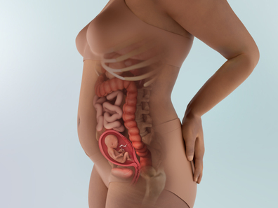
- 1. Sự phát triển của thai nhi
-
Kích thước thai nhi: 12cm (120g)😉😇
🔰 Để chuẩn bị cho việc khi ra đời có thể bú sữa mẹ hoặc bú bình, bé luyện tập bằng cách mút tay. Bé còn có thể siết chặt thành nắm tay, dùng tay chạm vào mặt hoặc sờ khám phá khắp bên trong tử cung.
🔰 Giờ đây, trong tử cung có đủ không gian để bé thoải mái cử động tay chân liên tục trong nước ối như đang bơi, từ đó giúp phát triển cơ bắp và hệ xương. Nếu là mang thai lần đầu (초산), khả năng mẹ chưa cảm nhận được thai máy là rất cao.
🔰 Bé đã có thể tạo biểu cảm bằng cách cử động các cơ mặt, nhưng chưa thể tự điều khiển một cách chủ động. Dù bé chưa mở mắt được, nhưng phía sau mí mắt nhắm, nhãn cầu vẫn chuyển động qua lại. Bé cũng có thể cảm nhận được một chút ánh sáng😍!
🔰 Tai trong (내이) đã hoàn thiện nên bé có thể nghe được âm thanh từ bên ngoài tử cung. Theo các nghiên cứu, trẻ có thể ghi nhớ những bài hát đã nghe khi còn trong tử cung và nhận ra chúng sau khi chào đời! Từ bây giờ, mẹ có thể bắt đầu luyện tập hát ru.
🔰 Trên da đầu của bé, các nang tóc đang tạo nên một hoa văn sẽ tồn tại suốt đời. Hoa văn này quyết định cách tóc của bé sẽ mọc. Các nang tóc mới không hình thành sau khi sinh, vì vậy trẻ được sinh ra với toàn bộ số nang tóc mà chúng sẽ có trong suốt cuộc đời.
🔰 Trái tim của em bé đang làm việc miệt mài💕, hiện tại bơm khoảng 23 lít máu mỗi ngày, và lượng máu được bơm này sẽ tiếp tục tăng dần khi em bé lớn lên. Khi lớn hơn, tim bé sẽ khỏe hơn và bơm nhiều máu hơn nữa mỗi ngày để nuôi cơ thể đang phát triển.
- 2. Thay đổi của cơ thể mẹ
-
Nhiệt độ cơ bản (기초체온) giảm xuống 🌡️⬇️
- Nhiệt độ cơ thể cơ bản vốn tăng nhẹ sau khi mang thai có thể trở về mức bình thường như trước. Tình trạng bất ổn tâm lý và cảm xúc thất thường do mất cân bằng hormone cũng dần ổn định trở lại.
- Lúc này mẹ cảm thấy tràn đầy năng lượng hơn và có thể muốn làm lại những việc mà trước đó không thể thực hiện. Vận động cơ thể bằng những bài tập đơn giản hoặc đi dạo nhẹ nhàng🚶♀️🚶♀️ giúp mẹ lấy lại thể trạng ban đầu.
Đã bước vào giai đoạn ổn định (안정기) 🧘♀️
- Nhau thai (태반) đã hoàn thiện và bám chắc, em bé nhận được đầy đủ dinh dưỡng và oxy từ mẹ thông qua dây rốn (탯줄), nhờ đó nguy cơ sảy thai gần như giảm hẳn. Ảnh hưởng từ hormone giảm dần nên cảm giác mệt mỏi cũng bớt đi, các triệu chứng khó chịu như ốm nghén có thể thuyên giảm. Nhiều mẹ bắt đầu tập lại các hoạt động như đi bộ, yoga khi thể trạng hồi phục.
- Tuy nhiên, dù đã khỏe hơn, mẹ không nên vận động mạnh hoặc làm việc quá sức. Căng thẳng có thể truyền sang em bé👶, ảnh hưởng xấu đến sự phát triển và thậm chí gây co thắt tử cung (자궁 수축). Dù đang trong giai đoạn ổn định cũng cần hết sức lưu ý để không quá sức.
Ở tuần 16, kích thước bụng mỗi mẹ là khác nhau 🤰🙅♀️
- Đến tuần 16, bụng mẹ sẽ lớn đến mức khó giấu việc mang thai. Tuy nhiên, sự khác biệt giữa các mẹ là rất lớn nên vẫn có người chưa lộ bụng rõ.
- Việc bụng lớn đến đâu phụ thuộc vào vóc dáng cơ thể, có phải mang thai lần đầu (초산) hay không. Vì vậy không cần so sánh với người khác. Nếu vẫn lo lắng, mẹ có thể hỏi bác sĩ trong lần khám tiếp theo.
Hãy tìm hiểu cách bảo vệ lưng và tư thế ngủ thoải mái khi mang thai 🛌✨
- Dạ dày và ruột non bị tử cung đang phát triển đẩy lên trên, gây cảm giác đầy trướng sau khi ăn, khó chịu hoặc đôi khi đau lưng, đau thắt lưng😫.
- Phần bụng phía trước ngày càng nặng và cơ thể dồn trọng tâm ra sau cũng gây đau lưng. Hãy bảo vệ lưng bằng cách tập thể dục vừa phải, giãn cơ, và giữ tư thế đúng🧘♀️🏃♀️.
- Khi nằm ngủ, mẹ có thể cảm thấy khó chọn tư thế thoải mái. Tư thế tốt nhất là nằm nghiêng sang trái, co đầu gối và kéo nhẹ về phía ngực. Tư thế này không tạo áp lực lên gan bên phải và giúp lưu thông máu tốt hơn.
Thay đổi ở ngực 👙
- Mẹ có thể đã nhận thấy những thay đổi như đau nhức đầu ti, ngực nhạy cảm hơn, tĩnh mạch nổi rõ, thay đổi sắc tố hoặc các nốt nhỏ quanh quầng vú trở nên rõ rệt hơn. Đôi khi còn xuất hiện các cục nhỏ trong ngực. Những cục này thường vô hại và có thể là nang chứa sữa (galactocele) hoặc u xơ tuyến vú lành tính (fibroadenoma).
- Việc phát triển bệnh nghiêm trọng như ung thư vú trong thai kỳ là rất hiếm. Tuy nhiên, nếu mẹ thấy có khối cứng hoặc điều gì đó gây lo ngại, hãy báo cho bác sĩ👨⚕️👩⚕️.
- 3. Lưu ý về sức khỏe
-
✔️ Nếu xét nghiệm Triple Marker (트리플 마커 검사) phát hiện bất thường, mẹ sẽ được chỉ định chọc ối (양수검사). Chọc ối (양수검사) thường được thực hiện trong tuần 16-24 của thai kỳ, bằng cách sử dụng siêu âm để dẫn đường rồi dùng kim dài lấy một lượng nước ối. Mẫu này sẽ được nuôi cấy và phân tích nhiễm sắc thể của tế bào, đồng thời có thể kiểm tra thêm tình trạng nhiễm virus. Thời gian nuôi cấy tế bào thường mất khoảng 2 tuần.
✔️ Mẹ hãy bổ sung sắt và canxi. Lượng máu của mẹ bầu tăng nhanh khiến máu dễ bị loãng. Vì vậy cần chú ý bổ sung sắt và canxi; nếu cần thiết có thể uống thêm thực phẩm bổ sung. Nếu mẹ không được cung cấp đủ canxi, nguy cơ loãng xương sẽ tăng; còn thiếu sắt có thể dẫn đến tình trạng thiếu máu. Canxi cũng là dưỡng chất thiết yếu để hình thành hệ xương của thai nhi. Mẹ có thể tăng lượng sữa uống hằng ngày hoặc ăn các loại cá nhỏ có thể ăn cả xương.
✔️ Đi bộ khoảng 20 phút mỗi ngày giúp ngăn ngừa thừa cân. Trong giai đoạn đã bước vào thời kỳ ổn định, mẹ có thể đi bộ thoải mái 20-30 phút mỗi ngày. Ở nhà nhiều dễ khiến mẹ muốn ăn vặt, vì vậy hãy chọn thời điểm mẹ thường thèm đồ ăn để ra ngoài đi bộ. Khi đi bộ, cần tránh ưỡn người ra sau và nên đứng - bước bằng phần trước của bàn chân. Trong thai kỳ, các dây chằng trở nên lỏng hơn để chuẩn bị cho việc sinh nở, nếu mẹ ưỡn người về sau khi đi bộ, các dây chằng vốn đã mềm sẽ càng yếu thêm, khiến cột sống chịu áp lực gấp đôi. Đứng và bước hơi hướng về phía trước giúp giữ cơ thể thẳng và vững. Đi bộ đều đặn với tư thế đúng cũng hỗ trợ quá trình sinh nở thuận lợi hơn.
✔️ Hạn chế ăn quá nhiều muối hoặc carbohydrate. Ăn mặn vốn không tốt, đặc biệt trong thai kỳ, ăn mặn khiến mẹ uống nhiều nước hơn dẫn tới phù nề, tăng cân và làm tăng nguy cơ tiền sản giật. Khẩu vị có thể điều chỉnh được, vì vậy hãy giảm lượng muối để bảo đảm một thai kỳ khỏe mạnh.
- 4. Quan hệ vợ chồng khi mang thai
-
Quan hệ tình dục: Ở giai đoạn này, cần chọn tư thế không gây áp lực lên bụng. Khi bụng ngày càng lớn, cần chú ý để trọng lượng cơ thể của chồng không đè lên vùng bụng. Các tư thế phù hợp bao gồm: tư thế ngồi đối diện để dễ kiểm soát độ sâu khi thâm nhập (전좌위), tư thế nằm nghiêng (측와위), tư thế nằm đối diện nhau khi nghiêng (전 측위), hoặc tư thế người chồng ở phía sau đỡ phần thân trên của vợ (후배위).
👨Vai trò của chồng:
Bố hãy tìm hiểu các lưu ý an toàn khi quan hệ tình dục trong thai kỳ Vì lo sợ quan hệ tình dục có thể gây hại cho em bé, mẹ có thể đã kiêng hoàn toàn trong thai kỳ. Tuy nhiên, chỉ cần nắm rõ các lưu ý theo từng giai đoạn thì sẽ không có vấn đề gì.
1️⃣ Giai đoạn đầu thai kỳ (임신 초기, 1-12 tuần)
Giai đoạn này phôi thai mới làm tổ và còn chưa ổn định, vì vậy tốt nhất là hạn chế. Nếu quan hệ, cần rút ngắn thời gian, thực hiện nhẹ nhàng và chỉ đưa nông để tránh kích thích tử cung (자궁). Ngoài ra, trong giai đoạn đầu thai kỳ, vợ thường rất nhạy cảm và giảm ham muốn, nhưng đây là hiện tượng tạm thời và hoàn toàn bình thường.
2️⃣ Giai đoạn giữa thai kỳ (임신 중기, 13-27 tuần)
Nhau thai (태반) đã hoàn thiện, nguy cơ sảy thai giảm đáng kể. Đây là giai đoạn tương đối an toàn để quan hệ. Khi ốm nghén giảm và thể trạng ổn định, ham muốn cũng có thể quay trở lại. Tuy nhiên vẫn phải tránh các hành vi gây kích thích mạnh. Vì tử cung đã lớn và bụng nhô ra, cần tránh tư thế gây áp lực lên bụng.
3️⃣ Giai đoạn cuối thai kỳ (임신 후기, 28-40 tuần)
Trong giai đoạn cơ thể chuẩn bị sinh, cổ tử cung và âm đạo thường sung huyết và yếu hơn. Rất dễ trầy xước và nhiễm khuẩn, vì vậy cần hết sức cẩn trọng. Đặc biệt trong tháng cuối, quan hệ có thể làm tăng nguy cơ vỡ ối sớm hoặc sinh non, nên cần tránh quan hệ.
Các lưu ý
✓ Hãy sử dụng bao cao su (콘돔)!
Trong tinh dịch có chứa hormone prostaglandin, chất có thể gây co thắt tử cung (자궁 수축). Đồng thời, trong thai kỳ, thành âm đạo nhạy cảm hơn và dễ bị nhiễm khuẩn, nên dùng bao cao su là lựa chọn an toàn.
✓ Tránh kích thích đầu vú (유두) quá mức!
Kích thích đầu vú khiến cơ thể tiết oxytocin - hormone gây co thắt tử cung. Nếu có nguy cơ sảy thai hoặc sinh non, càng phải thận trọng.
✓ Luôn giữ vệ sinh khi quan hệ!
Trong thai kỳ, âm đạo nhạy cảm và dễ nhiễm khuẩn. Cả vợ và chồng nên làm sạch cơ thể trước và sau khi quan hệ.
- 5. Trọng tâm thai giáo
-
Bố cùng tham gia thai giáo bằng cách trò chuyện với em bé (태담 태교).
Trò chuyện với em bé không chỉ là việc của mẹ, mà còn là vai trò quan trọng của bố. Khác với mẹ - người luôn cảm nhận được sự hiện diện của em bé trong cơ thể - bố có thể khó hình dung và dễ trở nên thờ ơ. Tuy nhiên, nếu thái độ của bố khiến mẹ cảm thấy cô đơn hoặc căng thẳng, điều này không tốt cho thai nhi.
Khi mẹ bầu trở nên nhạy cảm trong thai kỳ, thái độ của người chồng đặc biệt quan trọng. Mẹ cần cảm nhận được rằng mình được yêu thương và trân trọng. Khi đó, em bé trong bụng cũng sẽ cảm nhận được sự hạnh phúc khi được bố yêu thương. Em bé là con của cả hai, vì vậy từ khi còn trong bụng, bố cũng cần thực hiện vai trò của mình.
- 6. Các thông tin cần biết khác
-
Nếu có bệnh nền, cần tham khảo ý kiến chuyên gia.
Dù đây là giai đoạn nguy cơ sảy thai đã giảm, nhưng nếu mẹ bầu có các bệnh nền như bệnh tim, bệnh thận, đái tháo đường, bệnh tuyến giáp…, tình trạng có thể trở nên nặng hơn từ giai đoạn này. Vì vậy cần thăm khám đều đặn và duy trì liên lạc chặt chẽ với bác sĩ điều trị.
Ngoài ra, những mẹ từng bị sảy thai hoặc sinh non trước đây cũng không được chủ quan. Hãy luôn duy trì kênh trao đổi thường xuyên với bác sĩ.
-
- 1. Sự phát triển của thai nhi
-
Kích thước thai nhi: 13cm (140g)👶🥰
- Bé đã có thể cảm nhận kích thích âm thanh và cảm xúc. Bé nghe được các âm thanh từ cơ thể mẹ như tiếng các cơ quan tiêu hóa, nhịp tim đập, nhịp thở, và âm thanh từ bên ngoài tử cung. Tùy theo loại âm thanh mà tâm trạng của bé cũng thay đổi. Khi nghe nhạc nhẹ nhàng, bé thường có trạng thái ổn định, còn khi nghe tiếng ồn lớn thì có xu hướng trở nên bất an.
- Mắt, tai và các cơ quan khác đang dần vào đúng vị trí, lông mày và lông mi đã bắt đầu mọc. Bé đang tích lũy canxi để giúp răng chắc khỏe, bộ xương của bé đang chuyển từ sụn mềm sang xương cứng. Hãy hỗ trợ sức khỏe xương của bé (và của chính mẹ) bằng cách ăn thực phẩm giàu canxi. Bổ sung đủ canxi cũng giúp giảm nguy cơ tăng huyết áp và tiền sản giật.
- Móng tay, móng chân và cả dấu vân tay trên các ngón tay đã hình thành.
- Não đang điều hòa tim tốt hơn, giúp nhịp tim vốn không đều trở nên đều đặn, hiện đang đập ổn định ở mức 140–150 lần/phút.
- Dây rốn - đường dẫn sự sống từ em bé đến nhau thai - đang trở nên chắc khỏe và lớn hơn. Đến cuối thai kỳ, dây rốn sẽ dài khoảng 48-61 cm và dày khoảng 2.5 cm. Dây rốn vận chuyển dưỡng chất đến em bé và mang chất thải ra ngoài.
- Các tuyến mồ hôi bắt đầu phát triển. Và đến tuần sau, các lớp da của bé sẽ hình thành đầy đủ.
- 2. Thay đổi của cơ thể mẹ
-
🌹 Tăng sắc tố da trở nên rõ rệt
Khi tử cung lớn bằng kích thước quả dưa lưới, sắc tố da tăng lên khiến màu của núm vú và quầng vú sẫm hơn rõ rệt. Tuyến sữa phát triển mạnh để chuẩn bị cho việc tiết sữa, khiến ngực to hơn đáng kể. Một số mẹ bị nám thai kỳ (임신성 기미) trên mặt, và tình trạng này thường khỏi sau sinh.
🌹 Táo bón có thể trở nên nặng hơn
Trước đây, tử cung tạo áp lực lên bàng quang thì giờ đây bắt đầu chèn ép đường ruột. Đồng thời, hormone progesterone (프로게스테론) tăng lên khiến nhu động ruột bị ức chế, nên ngay cả những mẹ vốn không bị táo bón cũng có thể bắt đầu gặp tình trạng này, hoặc nếu đã bị táo bón thì có thể nặng hơn. Hãy duy trì chế độ ăn uống đều đặn, bổ sung đầy đủ chất xơ từ rau và trái cây. Nếu cần dùng thuốc nhuận tràng, hãy tham khảo ý kiến bác sĩ trước.
🌹 Thay đổi thị lực
Mẹ có thể nhận thấy thị lực mờ hơn và mắt khô hơn. Thay đổi thị lực là hiện tượng rất phổ biến trong thai kỳ. Sự thay đổi hormone, chuyển hóa, giữ nước và tuần hoàn máu đều có thể ảnh hưởng đến mắt và thị lực. Những thay đổi này thường nhẹ và sẽ biến mất sau sinh. Tuy nhiên, đôi khi thị lực thay đổi có thể là dấu hiệu của tình trạng nghiêm trọng hơn, vì vậy hãy trao đổi với bác sĩ nếu bị mờ mắt, nhìn đôi, mất thị lực tạm thời hoặc thấy bất cứ điều gì bất thường.
🌹 Rạn da
Đừng quá lo lắng nếu những đường rạn nhỏ xuất hiện trên ngực, bụng hoặc mông, vì rất nhiều phụ nữ gặp tình trạng rạn da khi mang thai và các vết rạn sẽ mờ đi sau sinh. Rạn da có tính di truyền, vì vậy nếu mẹ hoặc chị em gái của bạn bị rạn, bạn cũng có khả năng gặp phải. Có thể sử dụng kem dưỡng hoặc kem chống rạn để giảm cảm giác ngứa, đồng thời tăng cân từ từ và giữ mức tăng cân trong thai kỳ theo khuyến nghị để hạn chế nguy cơ rạn da. Tuy nhiên, nhìn chung, không có nhiều cách để ngăn hoàn toàn những “dấu hiệu của hành trình làm mẹ” này.
🌹 Những giấc mơ kỳ lạ
Khi mang thai, giấc mơ của mẹ có thể trở nên kỳ lạ hơn do hormone và cảm xúc mạnh mẽ. Những giấc mơ sống động, mơ về quan hệ tình dục, hoặc ác mộng đều là bình thường. Việc suy ngẫm về giấc mơ có thể giúp mẹ hiểu hơn về trạng thái cảm xúc của mình, và chúng cũng có thể thú vị để nhìn lại sau này. Hãy ghi lại những giấc mơ đặc biệt ngay khi tỉnh dậy trước khi quên mất.
- 3. Lưu ý về sức khỏe
-
Bổ sung vitamin và khoáng chất khi cần thiết
Trong thai kỳ, do phải tạo máu và xương cho thai nhi nên nhu cầu sắt và canxi cao hơn nhiều so với bình thường. Mẹ cần cẩn trọng với mọi thứ đưa vào cơ thể, kể cả một ly cà phê. Hãy theo dõi tình trạng của bản thân và tham khảo ý kiến bác sĩ để lựa chọn loại vitamin, khoáng chất phù hợp.
1️⃣ Bổ sung sắt (철분) dù không bị thiếu máu. Khi thai lớn lên, cơ thể mẹ phải tạo ra nhiều máu hơn để cung cấp cho bé, và trong quá trình này cần lượng lớn sắt. Trứng, rau bina, các loại đậu và thịt đỏ là những thực phẩm chứa nhiều sắt. Ngoài ra, khi dùng cùng vitamin C thì khả năng hấp thụ sẽ tăng cao. Không chỉ từ thực phẩm, mẹ cũng cần bổ sung viên sắt (철분제) để đạt đủ lượng cần thiết. Trước tiên, có thể dùng các loại sắt dạng ferrous có giá thành phải chăng. Nếu hiệu quả → tiếp tục sử dụng. Nếu cảm thấy khó chịu dạ dày hoặc khó tiêu → chuyển sang dùng sắt siro chiết xuất thảo dược - dạng dễ hấp thu hơn, dù giá cao hơn.
2️⃣ Bổ sung canxi. Nếu thiếu canxi trong thai kỳ, cơ thể mẹ sẽ rút canxi từ xương của mẹ để cung cấp cho thai nhi. Vì vậy, canxi là vi chất không thể bỏ qua.
3️⃣ Uống vitamin tổng hợp cho mẹ bầu (산모용 종합 영양제). Hầu hết thai phụ có thể nhận đủ dưỡng chất từ thực phẩm nên không nhất thiết phải dùng vitamin tổng hợp. Tuy nhiên, nếu mẹ ăn uống kén chọn hoặc thiếu cân bằng dinh dưỡng, có thể bổ sung loại vitamin chứa amino acid, vitamin và khoáng chất - những thành phần cần thiết cho quá trình trao đổi chất - để đảm bảo cân bằng dinh dưỡng.
Hãy dùng thực phẩm thay thế để giảm calo khi tự làm món ăn
Cảm giác thèm ăn trong thai kỳ có thể tăng mạnh, chỉ cần lơ là một chút là sẽ tăng cân rất nhanh. Đặc biệt do ảnh hưởng của hormone, mẹ sẽ rất dễ thèm đồ ngọt. Khi muốn ăn bánh ngọt, socola hay các loại snack ngọt, mẹ có thể tự làm tại nhà. Việc sử dụng nguyên liệu thay thế giúp giảm calo, đồng thời, quá trình chế biến khiến cơ thể vận động, góp phần ngăn ngừa tăng cân quá mức.
Không dung nạp carbohydrate trong thai kỳ
Trong các lần khám định kỳ, mẹ luôn được xét nghiệm nước tiểu để kiểm tra xem có xuất hiện đường hay không. Thỉnh thoảng trong giai đoạn tuần thứ 9-19, một lượng nhỏ đường có thể được phát hiện. Điều này thường không phải do tiểu đường mà có khả năng cao là “không dung nạp carbohydrate trong thai kỳ (임신 중 탄수화물 불내성)”, vì vậy mẹ không cần quá lo lắng.
Insulin có vai trò điều hòa lượng glucose trong máu nhưng trong thai kỳ, cơ chế ức chế insulin hoạt động mạnh hơn. Đôi khi cơ chế này quá mạnh khiến lượng glucose dư thừa tăng lên và được thải ra qua nước tiểu. Giai đoạn cơ chế ức chế insulin hoạt động mạnh nhất chính là khoảng tuần 9-19, nên thời điểm này thường xuất hiện hiện tượng “không dung nạp carbohydrate thai kỳ”.
Trong số 100 thai phụ thì có khoảng 1 người gặp các triệu chứng giống tiểu đường như đói quá mức, khát nhiều, đi tiểu nhiều, hoặc tăng huyết áp.
Không nên dùng thuốc để trị nám trong thai kỳ (기미치료를 위해 약)
Ngày xưa, chỉ cần nhìn vào một số thay đổi trên khuôn mặt và làn da, người lớn tuổi đã có thể nhận ra phụ nữ mang thai. Khi mang thai, làn da trở nên mịn màng, đôi mắt long lanh hơn và tóc đẹp hơn. Nguyên nhân tạo nên vẻ đẹp này chính là hormone nữ - cũng là nguyên nhân gây nám. Ngay cả phụ nữ không mang thai nhưng dùng thuốc tránh thai đường uống cũng có thể xuất hiện nám.
Nám thai kỳ (임신성 기미) thường bắt đầu vào tuần 12-16 của thai kỳ, và phần lớn sẽ mờ đi đáng kể sau sinh nên không cần quá lo lắng. Tuy nhiên, nếu trao đổi chất hoạt động kém, tiếp xúc với tia UV mạnh, hoặc chịu căng thẳng thể chất và tinh thần, nám có thể đậm màu hơn hoặc dày thêm. Nếu chăm sóc không đúng cách, nám có thể không biến mất sau sinh, vì vậy mẹ cần cẩn trọng.
Điều quan trọng nhất là tuyệt đối không được dùng thuốc trị nám trong thai kỳ, vì có thể gây ảnh hưởng đến thai nhi.
Để hạn chế nám nặng hơn, mẹ cần giữ da sạch bằng việc rửa mặt hai bước, bôi kem chống nắng trước khi ra ngoài. Tia UV mạnh và stress là các tác nhân khiến nám đậm hơn. Trước khi ra ngoài, mẹ nên bôi kem chống nắng đầy đủ, đội mũ hoặc sử dụng ô che nắng. Mẹ cũng có thể đắp mặt nạ hoặc massage định kỳ để hỗ trợ làm sáng da. Sau khi từ bên ngoài về nhà, mẹ nên dưỡng da bằng các loại mặt nạ hoặc massage có hiệu quả làm trắng để giảm hoặc phòng ngừa nám.
- 4. Quan hệ vợ chồng khi mang thai
-
Sinh hoạt tình dục: Tư thế nằm nghiêng đối diện nhau (전측위) phù hợp trong tam cá nguyệt giữa khi bụng chưa quá to. Mẹ bầu nên giữ chân khép và duỗi thẳng để kiểm soát độ sâu khi quan hệ, tránh gây khó chịu.
👨Vai trò của chồng:
Hãy chuẩn bị và nhắc mẹ bổ sung các loại vitamin - dinh dưỡng dành cho mẹ và bé
Việc bổ sung vitamin và dưỡng chất là điều cần thiết để đảm bảo sức khỏe cho cả mẹ và bé. Hãy trở thành người chồng chu đáo bằng cách chuẩn bị sẵn và nhắc mẹ bổ sung đúng thời điểm.
✓ Axit folic (엽산): từ 3 tháng trước khi mang thai đến 15 tuần
✓ Sắt (철분제): từ tuần 15 đến 3 tháng sau sinh
✓ Vitamin D, men vi sinh (유산균, nên bổ sung - không thuộc loại bắt buộc): từ đầu thai kỳ đến 3 tháng sau sinh
✓ Canxi (칼슘, nên bổ sung): từ tuần 20 đến 3 tháng sau sinh
✓ Omega-3 (오메가3, nên bổ sung): từ đầu thai kỳ đến tuần 36
Mẹ phải làm nhiều xét nghiệm hơn
Giai đoạn này, mẹ có thể cần thực hiện khá nhiều xét nghiệm. Vì đều là những xét nghiệm quan trọng cho cả mẹ và bé, nên đây là lúc bố hỗ trợ mẹ nhiều hơn để mẹ cảm thấy yên tâm. Nếu mẹ cảm thấy mệt sau các xét nghiệm, việc massage nhẹ nhàng bằng đôi tay ấm áp của bố cũng sẽ giúp mẹ thấy dễ chịu hơn.
- 5. Trọng tâm thai giáo
-
Trong suốt 10 tháng phát triển trong tử cung mẹ, thai nhi hoàn toàn phụ thuộc vào người mẹ nên chịu ảnh hưởng rất lớn từ trạng thái tâm lý và cảm xúc của mẹ. Theo nghiên cứu của các nhà thần kinh học, nhiều mẹ kỳ vọng rằng nghe ngoại ngữ hoặc đọc sách toán sẽ giúp bé thông minh hơn, nhưng đó chỉ là mong muốn chủ quan. Điều quan trọng hơn là mẹ cảm thấy thư thái khi xem tranh đẹp hoặc nghe nhạc dễ chịu. Đặc biệt trong giai đoạn này, thai nhi bắt đầu hình thành cảm xúc như vui vẻ hoặc lo lắng, nên việc giữ tinh thần tươi sáng và bình ổn là vô cùng quan trọng đối với mẹ.
- 6. Các thông tin cần biết khác
-
Phụ nữ mang thai đi làm nên nghỉ khoảng 10 phút mỗi giờ
- Phụ nữ mang thai đang đi làm không nhất thiết phải nghỉ việc hoặc tạm nghỉ chỉ vì mang thai. Tuy nhiên, nếu công việc phải đứng lâu, lao động nặng nhọc, hoặc chịu nhiều căng thẳng, mẹ có thể cân nhắc nghỉ tạm thời nếu cần thiết.
- Cần đặc biệt tránh các môi trường có kim loại nặng, khí độc, bức xạ, sóng điện từ mạnh, tiếng ồn lớn, bụi nhiều, hoặc môi trường nguy hiểm, dễ chấn thương; cũng nên tránh nơi di chuyển xa và giao thông bất tiện.
- Ngay cả khi công việc không quá nguy hiểm, thai phụ vẫn nên nghỉ ngơi bằng cách ngả lưng vào ghế sofa khoảng 10 phút mỗi giờ - điều này tốt cho cả mẹ và thai nhi.
Xét nghiệm nước tiểu
- Cần kiểm tra để chẩn đoán các bệnh như tiểu đường thai kỳ, viêm bàng quang, viêm niệu đạo, viêm bể thận và tiền sản giật.
- Trong các lần khám định kỳ, thai phụ sẽ được xét nghiệm nước tiểu thường xuyên để kiểm tra xem có xuất hiện đường hoặc protein trong nước tiểu hay không. Ở giai đoạn cuối thai kỳ, đôi khi có thể phát hiện đường niệu. Điều này thường không phải là dấu hiệu của tiểu đường mà là do thận không tái hấp thu hết glucose và thải ra ngoài, nên thường chỉ theo dõi mà không cần xử lý đặc biệt.
- Tuy nhiên, nếu đường niệu xuất hiện từ đầu thai kỳ, hoặc thai phụ có tiền sử gia đình mắc tiểu đường, hoặc đã từng bị tiểu đường thai kỳ trong lần mang thai trước, bác sĩ có thể chỉ định kiểm tra chuyên sâu để đánh giá nguy cơ tiểu đường thai kỳ.
-
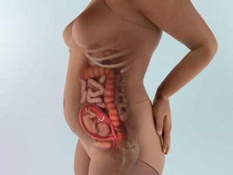
- 1. Sự phát triển của thai nhi
-
Kích thước thai nhi: 15cm (200g)😇🌻
Hệ thần kinh phát triển hơn, các giác quan như xúc giác, vị giác, thính giác trở nên rõ ràng hơn. Chân dài hơn tay và từng phần của chân phát triển theo tỷ lệ phù hợp.
Trong môi trường nước ối, bé cử động mạnh mẽ hơn, có thể co duỗi tay, đạp chân và đôi khi mẹ có thể cảm nhận được những chuyển động này.
Bé còn biết ngáp, và có thể được nhìn thấy qua siêu âm. Bé cũng có thể nấc. Đôi khi mẹ có thể cảm nhận được nhịp nấc đó🤭.
Bé tự sản xuất dịch tiêu hóa và có thể phân giải, hấp thu toàn bộ dưỡng chất đi vào cơ thể.
Tai, mũi và môi của bé đều có thể thấy rõ trên hình siêu âm. Mi mắt, lông mày, lông mi, móng tay và tóc cũng đã hình thành.
Thai nhi cũng phản xạ mút những vật chạm vào miệng như một dạng luyện tập để ngay sau khi sinh có thể bú mẹ.
Bé có thể phân biệt được vị. Các gai vị giác trên lưỡi bé đã hình thành nên bé có thể phân biệt vị ngọt và vị đắng. Bé cảm nhận được mùi vị thức ăn mẹ ăn thông qua nước ối. Nếu nước ối có vị ngọt, bé sẽ uống nhiều hơn; nếu có vị đắng, bé sẽ uống ít lại😜. Vì vậy, khẩu vị của bé có khả năng rất lớn sẽ giống khẩu vị của mẹ. Hãy chọn những món ngon, đa dạng và cân bằng để bé trải nghiệm nhiều hương vị và hình thành thói quen ăn uống lành mạnh.
Lớp gây (태지) trắng sáp bao phủ toàn thân bé sẽ dày dần lên rồi giảm bớt ngay trước sinh, giúp bảo vệ da bé khỏi nước ối trong tử cung và giúp cơ thể bé trơn, dễ di chuyển qua đường sinh khi chuyển dạ.
Trong phổi của bé, các ống nhỏ nhất (bronchioles) bắt đầu phát triển. Ở cuối những ống siêu nhỏ này, các túi hô hấp bắt đầu xuất hiện. Khi bé chào đời, những túi này sẽ đan xen với các mạch máu nhỏ giúp oxy và carbon dioxide lưu thông vào và ra khỏi cơ thể.
- 2. Thay đổi của cơ thể mẹ
-
📌 Một số thai phụ có thể cảm nhận thai máy (태동) sớm
Sự chuyển động nhẹ nhàng, như có gì đó ngọ nguậy trong bụng, đó chính là thai máy - cử động của thai nhi. Thông thường, với người mang thai lần đầu (초산부), thai máy xuất hiện vào khoảng tuần 20 ± 2 tuần của thai kỳ. Thống kê cho thấy người mang thai lần hai trở lên (경산부) thường cảm nhận thai máy sớm hơn so với người mang thai lần đầu. Khoảnh khắc lần đầu cảm nhận thai máy thường mang lại cảm giác rất đặc biệt: sự thực rằng mình đang mang thai trở nên rõ ràng hơn, xen lẫn giữa niềm vui và lo lắng.
📌 Dịch tiết âm đạo tăng lên (분비물 증가)
Trong thai kỳ, dịch tiết âm đạo màu trắng hoặc hơi vàng tăng lên là hoàn toàn tự nhiên. Estrogen tăng khiến niêm mạc và các nếp gấp âm đạo dày hơn, đồng thời lượng máu tăng làm tăng tiết dịch. Dịch tiết giúp tăng độ axit, ngăn virus có hại từ âm đạo đi ngược lên tử cung.
Tốt nhất là dùng băng lót chuyên dụng cho sản phụ (면 패드). Nếu khó, có thể dùng quần lót hàng ngày nhưng phải thay thường xuyên và mặc đồ lót thoáng khí. Nếu mùi trở nên nặng, có khả năng viêm âm đạo và nên hỏi ý kiến bác sĩ.
Ở giai đoạn giữa thai kỳ, bên cạnh dịch âm đạo, ngực cũng to ra và đôi khi có thể tiết sữa non. Khi sữa rỉ ra, chỉ cần lau nhẹ, tuyệt đối không nặn.
📌 Chuột rút (다리 경련) khi mang thai có thể giảm bằng cách kéo giãn cơ (스트레칭)
Mẹ bị đau nhói hoặc chuột rút bắp chân vào ban đêm có thể do thay đổi hormone, khoáng chất hoặc tuần hoàn máu khi mang thai. Ngủ trong môi trường quá lạnh cũng có thể gây chuột rút.
Khi bị chuột rút, hãy duỗi thẳng chân và kéo ngón chân về phía ống chân. Sau khi duỗi, hãy massage cơ và/hoặc chườm nóng, như bằng túi chườm hoặc chai nước nóng.
Để ngăn chuột rút, đừng đứng hoặc ngồi bắt chéo chân quá lâu; đi bộ hằng ngày; uống đủ nước; tắm nước ấm trước khi ngủ; và duỗi cơ bắp chân, xoay mắt cá chân và cử động các ngón chân trong ngày. Một số phụ nữ thấy rằng uống magnesium supplement cũng giúp giảm chuột rút.
📌 Chóng mặt
Cơ thể mẹ đang trải qua những thay đổi lớn, đôi khi hệ tim mạch và thần kinh không thích ứng đủ nhanh. Điều này có thể khiến mẹ cảm thấy choáng váng hoặc xây xẩm, thậm chí ngất xỉu.
Mẹ dễ bị chóng mặt nếu đứng dậy quá nhanh từ tư thế nằm hoặc ngồi, do bị thiếu máu, ăn uống không đủ, tập luyện quá sức hoặc bị quá nóng. Nếu liên tục cảm thấy choáng, hoặc bị chóng mặt thường xuyên, hãy cho bác sĩ biết.
📌 Sưng phù
Sưng ở bàn chân và mắt cá là bình thường khi mang thai, cũng như sưng nhẹ ở tay và ngón tay. Nếu nhẫn của mẹ bắt đầu chật, hãy tháo ra ngay! Hãy gọi cho bác sĩ nếu bị sưng đột ngột hoặc quá mức, sưng tay hoặc mặt nhiều, hoặc có các dấu hiệu của tiền sản giật. Ngoài ra, hãy báo ngay nếu bạn có tình trạng cục máu đông (deep vein thrombosis - Huyết khối tĩnh mạch sâu).
- 3. Lưu ý về sức khỏe
-
Cẩn trọng với các loại bổ sung chưa được kiểm chứng
- Những gì mẹ ăn đều truyền trực tiếp cho bé. Không thể tin tưởng hoàn toàn vào những câu như “100% nguồn gốc tự nhiên”.
- Thực phẩm bổ sung không được bác sĩ hoặc Cơ quan An toàn Thực phẩm và Dược phẩm Hàn Quốc kiểm chứng (식품의약품안전처) có thể không hiệu quả hoặc gây hại. Một số loại thảo mộc thậm chí có thể làm tăng nguy cơ sinh non. Vì vậy hãy tìm hiểu thông tin và trao đổi với bác sĩ trước khi dùng bất kỳ loại sản phẩm nào.
Các bài tập và động tác nên tránh khi mang thai
- Tập luyện khi mang thai rất tốt, nhưng cũng có những loại vận động không an toàn.
- Những động tác có độ lắc lư mạnh như đạp xe, trồng cây chuối, nằm sấp, ngồi thấp rồi đứng dậy, uốn cong người ra sau, nhảy, hoặc nhảy múa mạnh đều không phù hợp và cần tránh.
- Tư thế ngủ thoải mái khi mang thai là nằm nghiêng bên trái. Khi tuần hoàn kém và bụng nặng, nằm nghiêng trái tốt hơn nằm ngửa. Hãy nằm nghiêng, co một chân, đặt gối giữa hai chân và kê một chiếc gối thấp dưới bụng. Nếu nằm nghiêng trái không thoải mái, có thể đổi sang nằm nghiêng phải.
Nếu bị chảy máu nướu, cần khám nha khoa
- Nướu trong thai kỳ chịu ảnh hưởng của hormone nên dễ sưng, viêm và chảy máu. Nếu trong miệng có vết loét hoặc điều trị sâu răng chưa hoàn tất thì cần nhanh chóng đi khám nha khoa trong giai đoạn này. Nếu trì hoãn, vi khuẩn sâu răng có thể xâm nhập vào mô mềm và lây truyền sang thai nhi, vì vậy cần đặc biệt cẩn thận.
- Hiện tượng chảy máu nướu trong thai kỳ thường sẽ tự biến mất sau sinh. Tuy nhiên, việc gây tê nên được hoãn đến sau khi sinh. Ngay cả gây tê tại chỗ cũng có thể đi vào dòng máu và gây ảnh hưởng không tốt đến thai nhi. Khi đi khám nha khoa, nhất định phải thông báo việc đang mang thai.
Bổ sung thực phẩm giàu đạm (단백질) và magie (마그네슘)
- Chất đạm (단백질) không chỉ là dưỡng chất quan trọng giúp tạo collagen - thành phần cấu tạo nên các khớp nối giữa xương - mà còn tham gia trực tiếp vào quá trình hình thành não bộ của thai nhi.
- Đạm có nhiều trong thịt nạc, cá, sữa, sữa đậu nành (두유), và các loại đậu (콩), vì vậy cần đảm bảo không bị thiếu hụt.
- Magie (마그네슘) giúp hình thành mật độ xương và điều hòa quá trình tạo ra vitamin D - yếu tố hỗ trợ hấp thụ canxi. Nếu thiếu magie, xương thai nhi sẽ không chắc khỏe và dễ mềm yếu. Có thể bổ sung magie bằng cách tăng cường ăn đậu hũ (두부) và các loại rong biển (해조류).
Quản lý cân nặng (체중 관리)
- Khi ăn đồ ăn nhanh, giá trị dinh dưỡng thường thấp nhưng lượng calo lại cao. Hơn nữa, khi ăn ngoài, sẽ không thể kiểm soát lượng muối và dầu trong quá trình chế biến, dẫn đến nguy cơ hấp thụ calo vượt mức cần thiết. Vì vậy nên hạn chế ăn ngoài.
- Nếu phải ăn ngoài, nên lưu ý⚠️: tránh các món dạng một phần cho một người ăn (일품요리) và ưu tiên các set đầy đủ món phụ (정식), chọn món Hàn (한식) thay vì món Âu (양식), chọn món xào (볶음) thay vì món chiên (튀김). Khi ăn salad, nên chọn món ít sốt. Canh doenjang (된장국), vốn chứa nhiều muối, nên hạn chế; đồ uống nên chọn loại không calo.
Đăng ký lớp học sinh nở
- Các lớp học sinh nở, kéo dài từ một ngày đến một tháng hoặc lâu hơn, rất được khuyến khích để giúp mẹ chuẩn bị cho quá trình sinh. Mẹ sẽ được học những gì sẽ xảy ra trước, trong và sau khi chuyển dạ, cùng các kỹ thuật giúp quản lý cơn đau chuyển dạ. Có thể tìm các lớp này tại bệnh viện, qua các chuyên gia giáo dục sinh nở, hoặc học trực tuyến.
Đối phó với căng thẳng
- Ngoài việc nuôi dưỡng một sinh linh mới, mẹ có thể đang trải qua hàng loạt triệu chứng cơ thể và thay đổi trong cuộc sống. Ai mà không căng thẳng chứ? Áp lực khi mang thai là bình thường, những có thể gây ra vấn đề nếu chịu quá nhiều áp lực. Hãy tìm hiểu các cách hiệu quả để đối phó với căng thẳng khi mang thai, và tìm sự hỗ trợ thích hợp.
- 4. Quan hệ vợ chồng khi mang thai
-
Sinh hoạt tình dục: Việc vợ mang thai không có nghĩa là nhu cầu sinh lý của chồng hoàn toàn biến mất. Chỉ là đôi khi chồng cảm thấy e dè hoặc lo lắng vì sợ làm tổn thương vợ hoặc thai nhi trong lúc quan hệ. Tuy nhiên, quan hệ tình dục trong thai kỳ lại có thể tăng cường cảm giác thân mật giữa vợ chồng và giúp người vợ ổn định về mặt cảm xúc, vì vậy người chồng không cần phải kìm nén bản thân quá mức. Điều quan trọng là vẫn phải ưu tiên sự thoải mái của vợ, điều chỉnh cách quan hệ theo hướng an toàn cho thai phụ, đồng thời tìm những cách phù hợp để cả hai cùng được thỏa mãn.
👨Vai trò của chồng:
🌟 Bố trò chuyện với bé giúp bé phát triển não bộ
- Nhiều bố cảm thấy ngại khi nói chuyện với em bé còn trong bụng. Tuy nhiên, việc bố nói chuyện với em bé sẽ có tác động lớn đến sự gắn kết và sự phát triển não bộ của bé.
- Não bộ của thai nhi phát triển thông qua các kích thích âm thanh bắt đầu từ khi bé nghe được. Loại âm thanh bé nghe sẽ ảnh hưởng đến cách não phát triển.
- Giọng bố có tần số trung - trầm và có độ vang nên truyền đến bé tốt hơn giọng cao của mẹ.
- Âm thanh truyền tới sẽ kích thích tế bào lông thính giác và các neuron trong não, đồng thời ảnh hưởng tới quá trình hình thành khớp thần kinh synapse (시냅스) - điểm kết nối giữa các neuron, bắt đầu từ khoảng tuần 30.
- Trung bình, đến lúc chào đời, bé hình thành khoảng 50 nghìn tỷ synapse. Nếu thực hiện thai giáo đều đặn, con số này có thể tăng đến 100 nghìn tỷ và tạo nền tảng cho khoảng 1.000 nghìn tỷ synapse sẽ phát triển sau này.
🌟 Nấu ăn cho vợ bầu
- Nếu bố muốn nấu cho vợ những món ngon, hãy lưu ý là không cho mẹ bầu ăn thịt sống, sashimi, sushi hoặc các món chưa chín vì nguy cơ nhiễm trùng. Mẹ bầu dễ bị trào ngược, nên tránh đồ cay và nhiều dầu mỡ. Ăn lượng lớn cũng có thể gây khó chịu, nên chia thành nhiều bữa nhỏ.
- 5. Trọng tâm thai giáo
-
Khi cơ thể mẹ chuyển động nhẹ nhàng theo nhịp điệu dễ chịu, thai nhi trong bụng cũng cảm thấy thoải mái và ổn định về tinh thần. Vợ chồng nên thường xuyên dành thời gian nắm tay nhau và cùng khiêu vũ theo những bản nhạc nhẹ nhàng, yên tĩnh như nhạc waltz. Khi tưởng tượng em bé trong bụng cũng đang “nhảy” cùng bố mẹ, khoảnh khắc ấy sẽ trở nên càng vui vẻ và ý nghĩa.
- 6. Các thông tin cần biết khác
-
⛔Tránh mặc quần áo bó sát⛔
✔️ Nếu đồ lót hoặc quần áo bên ngoài bó sát, cơ thể bị chèn ép, dễ gây cản trở lưu thông máu, dẫn đến phù nề (부종) hoặc giãn tĩnh mạch (정맥류). Vào giai đoạn này, bụng và ngực đã lớn hơn nên khó sử dụng đồ mặc thường ngày → hãy chuẩn bị một vài bộ đồ bầu (임신복) thoải mái, rộng rãi để thay đổi.
✔️ Từ thời điểm này, việc mang đai nâng bụng (복대) cũng rất tốt. Ở Hàn Quốc trước đây, khi thai được khoảng 5 tháng, phụ nữ thường quấn vải cotton trắng quanh eo để thay cho đai nâng bụng.
✔️ Những người bị đau bụng kinh nặng, đau lưng mạn tính, hoặc người lớn tuổi cũng từng sử dụng đai trong sinh hoạt hằng ngày. Hiện nay, đai dành riêng cho thai phụ được bán rộng rãi. Đai giúp ngăn chùng lưng, bảo vệ bụng trước các tác động bất ngờ và giúp thai nhi nằm ở vị trí ổn định.
✔️ Có ý kiến cho rằng đai có thể ảnh hưởng đến lưu thông máu, nhưng đa số thai phụ cảm thấy chắc chắn và ổn định hơn khi đeo. Đặc biệt với thai phụ bị đau lưng (요통) nhiều, đeo đai sẽ giúp cải thiện tư thế, giảm áp lực từ trọng lượng bụng lên cột sống, khiến cơ thể nhẹ nhàng hơn.
✔️ Khi chọn đai, nên chọn chất liệu tự nhiên, không đeo trực tiếp lên da mà đeo phía trên lớp đồ lót để tránh bí mồ hôi hoặc kích ứng da. Vì cần sử dụng đến lúc gần sinh (만삭), nên chọn loại có thể điều chỉnh kích cỡ. Khi đeo, phần bụng dưới nên được giữ hơi chắc, phần bụng trên nên vừa thoải mái - đó là cách mang đai đúng.
✔️ Đối với thai phụ đi làm (직장여성), việc dùng đai đôi khi không thuận tiện, có thể thay bằng quần lót chuyên dụng dành cho thai phụ (임신부용 거들 - quần gen bụng cho thai phụ) có độ co giãn tốt. Tác dụng tương tự đai là ôm bụng chắc chắn, nâng đỡ lưng, giúp vận động dễ dàng. Khi chọn loại này, cần kiểm tra xem việc mặc vào và cởi ra có thuận tiện không.
✔️ Ngoài đai, nên đổi áo ngực sang loại dành cho thai phụ để tránh chèn ép ngực. Nếu ngực nặng hơn trong thai kỳ mà không được nâng đỡ đúng cách, vết rạn có thể xuất hiện và tồn tại sau sinh. Áo ngực dành cho thai phụ nên có phần nâng dưới bằng thun chắc chắn, không ép vào đầu ngực (유두). Nên chọn cỡ cúp lớn hơn bình thường và dây vai bản lớn. Nếu từ giai đoạn này trở đi, sữa non (유즙) bắt đầu rỉ ra và thấm lên áo, hãy đặt miếng lót thấm sữa (수유 패드) vào trong áo ngực.
✔️ Quần lót (팬티) nên chọn loại có thể che phủ toàn bộ bụng dưới và không gây áp lực lên tử cung, chất liệu cần co giãn tốt, thấm hút tốt, và có nguồn gốc tự nhiên.
-
- 1. Sự phát triển của thai nhi
-
Kích thước thai nhi: 17cm (260g)😉😇
- 🧠 Não bé đã phát triển khoảng 80% so với người trưởng thành - tính theo số lượng tế bào, và đang luyện tập khả năng ghi nhớ. Nếu bố mẹ thường xuyên trò chuyện với bé, bé có thể phân biệt và ghi nhớ giọng từng người. Đặc biệt, do não giữa (간뇌) phát triển, bé còn có thể phản ứng theo cảm xúc của mẹ được truyền xuống qua dây rốn.
- 👃👅👂👁️✋ Não bộ cũng đang phân chia các khu vực chuyên biệt cho khứu giác, vị giác, thính giác, thị giác và xúc giác.
- 🤸♂️ Dưới sự điều khiển của não bộ phát triển ở mức cao, bé sẽ vận động mạnh mẽ, khua chân, xoay người. Ban đầu, mẹ cảm nhận những chuyển động giống như tiếng bong bóng lăn tăn trong bụng, và theo từng ngày sẽ thấy rõ dần các cử động mạnh mẽ hơn. Tuy nhiên, có sự khác biệt ở từng người. Với mẹ mang thai lần đầu (초산부), đôi khi phải sau tuần 20 mới cảm nhận được thai máy (태동).
- 📏 Vòng đầu phát triển đến khoảng 4.5cm, tương đương 1/3 chiều dài toàn cơ thể. Không có sự khác biệt lớn về trọng lượng thai theo giới tính, nhưng trung bình bé trai có thể nặng hơn bé gái một chút.
- ❤️ Nhịp tim trở nên mạnh hơn và có thể nghe được tim thai (태아 심음) bằng ống nghe (청진기).
- 🖐️👣 Làn da trên các ngón tay và ngón chân của bé đã hình thành những dấu vân tay (và dấu vân chân) độc nhất (và vĩnh viễn).
- 2. Thay đổi của cơ thể mẹ
-
Một đường thẳng sậm màu gọi là vạch nâu thai kỳ (임신선) xuất hiện ở giữa bụng dưới, đôi khi cũng xuất hiện ở phía sau bắp chân.🟤🤰
Khi thai phát triển lớn dần, độ cao đáy tử cung đạt khoảng 14-18cm. Đáy tử cung là phần cao nhất của tử cung, và đến giai đoạn này sẽ lên gần rốn, bác sĩ có thể sờ và kiểm tra bằng tay.📏🩺
Mẹ bắt đầu ngáy dù trước đây không hề ngáy. Khoảng 1 trong 4 phụ nữ mang thai bị ngáy khi ngủ. Đó là do cân nặng tăng nhanh gây cản trở đường thở, đồng thời sự gia tăng lưu lượng máu và huyết áp làm niêm mạc mũi sưng và sung huyết. Nếu ngáy nặng dẫn đến ngưng thở khi ngủ, tình trạng thiếu oxy có thể gây ảnh hưởng xấu cho cả mẹ và thai, đồng thời làm tăng nguy cơ tiền sản giật (임신 중독증). Do đó mẹ cần tránh tăng cân quá mức và nếu có triệu chứng ngưng thở khi ngủ, hãy đi khám chuyên môn. → Đặt máy tạo ẩm cạnh giường hoặc kê thêm một chiếc gối để nâng đầu lên tí có thể giúp giảm ngáy.😴💨
Mẹ có thể cảm thấy nghẹt mũi liên tục và khó thở, nhưng nếu xì mũi quá mạnh sẽ khiến niêm mạc mũi sưng hơn, sung huyết nhiều hơn và thậm chí gây chảy máu mũi. Thay vì xì mạnh, hãy đứng trước bồn rửa, bịt một bên mũi bằng ngón cái và thổi nhẹ nhàng qua bên còn lại. Cách này giúp thông mũi mà không gây kích ứng.🤧👃
Cứ 5 phụ nữ mang thai thì 1 người bị chảy máu cam. Do lượng máu tăng, thai kỳ khiến các mạch máu trong mũi giãn ra, dễ bị vỡ và chảy máu hơn.🩸 Điều này dễ xảy ra hơn nếu mẹ bị cảm, dị ứng hoặc ở nơi không khí quá khô. Nếu bị chảy máu cam, hãy ngồi xuống và cúi người hơi về phía trước, giữ đầu cao hơn tim. Dùng ngón cái và ngón trỏ bóp phần dưới của mũi trong 10-15 phút và thở bằng miệng. Cũng có thể chườm lạnh lên sống mũi để làm co mạch máu và giảm chảy máu.❄️
Mẹ có thể cảm thấy căng tức hoặc đau bụng trong thai kỳ. Phần lớn đây là hiện tượng bình thường, do dây chằng căng hoặc cơ thể mệt vì hoạt động quá sức. Nghỉ ngơi, nằm hoặc ngồi thư giãn sẽ giúp giảm triệu chứng.🛌 Nhưng nếu cảm giác căng đau kéo dài hoặc trở nên dữ dội, mẹ cần đi bệnh viện. Dù tam cá nguyệt giữa là giai đoạn ổn định, vẫn có nguy cơ xảy ra vấn đề.⚠️ Việc lắng nghe các dấu hiệu của cơ thể là quan trọng để được can thiệp kịp thời.
Da nhạy cảm hơn với ánh nắng. Thay đổi sắc tố và nám da là hiện tượng rất phổ biến khi mang thai. Đây là tác động tự nhiên của hormone, nhưng mẹ có thể hạn chế bằng cách tránh tiếp xúc tia UV☀️. Khi ra ngoài hãy đội mũ rộng vành👒, mặc áo dài tay mỏng để bảo vệ da tối đa, bôi kem chống nắng có chỉ số SPF cao.🧴
- 3. Lưu ý về sức khỏe
-
Xét nghiệm nước ối (양수검사)
- Xét nghiệm nước ối (양수검사) là phương pháp sử dụng siêu âm (초음파) và dùng kim dài hút nước ối, sau đó nuôi cấy và phân tích bộ nhiễm sắc thể của tế bào.
- Nếu kết quả xét nghiệm Triple Marker (트리플마커 검사) cho thấy có nghi ngờ bất thường và mẹ chưa thực hiện xét nghiệm nước ối, thì không nên trì hoãn. - Tỷ lệ chẩn đoán dị tật thai nhi (기형아) liên quan đến bất thường nhiễm sắc thể bằng xét nghiệm nước ối đạt gần 99%.
- Ngoài phân tích nhiễm sắc thể, xét nghiệm nước ối cũng có thể kiểm tra tình trạng nhiễm virus.
- Do cần thời gian để nuôi cấy tế bào, mẹ nên thực hiện xét nghiệm sớm để có đủ thời gian chờ kết quả.
Mẹ cần bổ sung thực phẩm giàu canxi vào bữa ăn phụ
- Không chỉ trong bữa ăn chính mà cả các bữa ăn nhẹ cũng nên bổ sung nhiều thực phẩm chứa canxi như cá cơm, sữa, rong biển…
- Ngoài ra, fructose trong trái cây khi vào cơ thể có thể nhanh chóng chuyển hóa thành chất béo, giúp duy trì năng lượng, lại giàu vitamin C nên giúp miệng cảm thấy tươi mát và hỗ trợ kiểm soát căng thẳng. Đừng quên ăn đầy đủ trái cây tươi như dâu tây, kiwi, các loại quả thuộc họ cam quýt.
Tăng thời gian vận động cơ thể thông qua làm việc nhà
- Nếu vì bụng lớn mà ngại vận động, cân nặng sẽ tăng rất nhanh. Thay vì trì hoãn, hãy làm việc nhà như dọn dẹp, rửa chén ngay lúc phải dọn → điều này giúp phần nào kiểm soát cân nặng. Khi lau nhà, nếu duỗi tay về phía trước để lau, động tác này cũng giúp kéo giãn cơ lưng, vai và cánh tay rất tốt.
Hãy là một mẹ bầu vui vẻ
- Tự tin với dáng cơ thể khi mang thai. Mẹ hoàn toàn có thể tìm những bộ đồ bầu dễ thương, tôn dáng dù mẹ có cơ thể nhỏ nhắn, đầy đặn, hay bụng cao hoặc bụng thấp. Mẹo thời trang quan trọng nhất đó chính là chắc chắn rằng mẹ cảm thấy thoải mái và tự tin.
- Hãy dành một chút thời gian tận hưởng giai đoạn vẫn còn “tự do trước khi có em bé” ^_^. Một vài gợi ý: Mua vé xem biểu diễn hoặc nhạc live, đi xem phim, đứng xếp hàng ở quán ăn sáng yêu thích vào chủ nhật, đi chơi gần nhà một ngày, và lên kế hoạch cho một kỳ nghỉ babymoon.
- Hãy kết nối với các mẹ khác. Hãy tìm một nhóm các mẹ như nhóm gặp mặt trực tiếp dành cho mẹ bầu, lớp yoga tiền sản, hoặc nhóm trực tuyến trong cộng đồng mẹ bầu. Bắt đầu xây dựng mối quan hệ với các bố mẹ đã có em bé và bố mẹ tương lai ngay từ bây giờ để khi bé chào đời thì mẹ đã có những kết nối vững chắc.
- 4. Quan hệ vợ chồng khi mang thai
-
Sinh hoạt tình dục: Tư thế quan hệ từ phía sau mà chồng đỡ phần thân trên của vợ (후배위) giúp giảm hoàn toàn lực đè từ trọng lượng cơ thể chồng, đồng thời dễ điều chỉnh mức độ thâm nhập, phù hợp với thai phụ.
👨Vai trò của chồng:
❣️Trò chuyện với thai nhi (태담)
Biết rằng việc trò chuyện với thai nhi là tốt, nhưng nếu sau câu “Bé ơi, chào con, bố đây” mà bố không biết phải nói gì tiếp theo, hãy tham khảo hướng dẫn sau:
✓ Nói bằng giọng rõ ràng, nhẹ nhàng, diễn đạt cảm xúc phong phú.
✓ Gọi bé bằng một tên thân mật/태명 cố định để bé quen và nhận biết.
✓ Chia sẻ những điều nhỏ nhặt trong ngày: hôm nay bố làm gì, thời tiết thế nào, tâm trạng ra sao…
✓ Đọc một cuốn sách bố yêu thích hoặc sách dành để trò chuyện cùng thai nhi với nhiều tông giọng khác nhau.
✓ Hát cho bé nghe bằng giọng dịu dàng cũng rất tốt.
❣️Thay đổi cảm xúc ở bố trong thai kỳ là hoàn toàn bình thường
- Nếu bố thấy mình dễ xúc động khi nhìn thấy trẻ con ngoài đường, hay chỉ cần nhìn quần áo trẻ em trong cửa hàng là muốn rơi nước mắt, thì đó là hiện tượng bình thường.
- Thực tế, trong thai kỳ của vợ, mức estrogen - hormone nữ - tăng ở bố, còn testosterone - hormone nam - giảm. Đây là kết quả của quá trình tiến hóa, giúp người bố chăm sóc vợ và con tốt hơn.
- Hãy chấp nhận điều này như quy luật tự nhiên. Sau khi vợ sinh, hormone của bố sẽ trở lại bình thường nên đừng lo lắng.
- 5. Trọng tâm thai giáo
-
Đây là thời điểm thực sự quan trọng để thai giáo (태교). Vì các giác quan của thai nhi như thính giác và vị giác đang phát triển mạnh, nên việc kích thích đều đặn là định hướng chính cho thai giáo lúc này.
Mẹ nên nghe nhiều nhạc. Trên thị trường có các loại nhạc thai giáo như nhạc Mozart (모차르트 이펙트), nhạc Baroque (바로크 이펙트), hay nhạc truyền thống. Tuy nhiên, lựa chọn tốt nhất vẫn là loại nhạc mà chính mẹ yêu thích. Không cần quá câu nệ thể loại. Chỉ cần tránh những thể loại quá ồn ào như rock hoặc heavy metal.
Âm thanh tự nhiên như tiếng gió, tiếng chim hót rất tốt cho thai nhi. Và đừng quên nói chuyện với bé thật nhiều.
- 6. Các thông tin cần biết khác
-
Quản lý khí hư âm đạo (질의 분비물 관리)
- Khi mang thai, dịch âm đạo sẽ tăng lên và độ pH bị mất cân bằng, làm tăng khả năng nhiễm viêm âm đạo do nấm Candida (칸디다 질염). Thông thường, dịch âm đạo trong thai kỳ có dạng loãng, màu trắng đục như sữa và có mùi nhẹ. Tuy nhiên, nếu âm đạo bị nhiễm khuẩn, dịch có thể chuyển sang màu vàng hoặc xanh, có mùi hôi, kèm theo cảm giác nóng rát và đau.
- Việc giữ vệ sinh cơ thể, đặc biệt là vùng âm đạo, có vai trò quan trọng đối với sức khỏe thể chất và tinh thần của thai phụ. Giữ vùng kín sạch sẽ và khô ráo là cách tốt nhất để ngăn ngừa nhiễm trùng. Khi tắm, chỉ cần dùng một chút xà phòng nhẹ và rửa sạch nhẹ nhàng vùng âm đạo.
- Nếu nhiễm nấm Monilia (모닐리아) thì trong quá trình sinh nở, nấm có thể truyền sang thai nhi, do đó cần đặc biệt cẩn trọng. Nếu không thể tắm hàng ngày, có thể vệ sinh vùng kín mỗi ngày bằng cách rửa nhẹ bằng nước, tránh dùng bất kỳ dụng cụ hoặc thiết bị thụt rửa nào.
-
- 1. Sự phát triển của thai nhi
-
Kích thước thai nhi: 24cm (300g)😍
- Có thể xác định chính xác giới tính của bé qua siêu âm (정밀 초음파). Dù là con gái hay con trai thì bé cũng sẽ đáng yêu và đẹp giống bố mẹ.🥰
- Bé cử động liên tục và rất năng động vì lượng nước ối tăng lên và tử cung lớn hơn giúp không gian hoạt động của bé rộng hơn. Sự năng động của thai nhi là một dấu hiệu của sức khỏe tốt.👍
- Phần lớn lượng mỡ hiện đang tích tụ trong cơ thể bé là mỡ nâu (갈색 지방). Mỡ nâu giữ bé ấm cho đến khi bé có thể tự điều hòa thân nhiệt.
- Hơn 90% cơ thể bé hiện tại là nước. Các cơ quan tiêu hóa cũng đã phát triển ở mức nhất định. Khi bé nuốt nước ối, chỉ phần nước được hấp thụ, phần còn lại sẽ được chuyển xuống đại tràng.
- Nếu mẹ cảm nhận những chuyển động của bé giống như các nhịp giật nhẹ, có tính lặp lại, đó là vì bé đang nấc - một hiện tượng hoàn toàn bình thường.
- 2. Thay đổi của cơ thể mẹ
-
🤍 Đây là giai đoạn cơ thể mẹ đạt mức ổn định nhất trong suốt thai kỳ. Cân nặng tăng rõ rệt và bụng nhô lên trông thấy. Thai phát triển lớn khiến tử cung có xu hướng co thắt nhẹ do tăng kích thước nhanh, nên mẹ có thể cảm giác bụng cứng, căng tức khoảng 4-6 lần mỗi ngày.
🤍 Các tuyến sữa (유선) phát triển mạnh; ở một số thai phụ, khi bóp nhẹ núm vú có thể thấy xuất hiện giọt sữa non (초유) trong suốt.
🤍 Khi nước ối tăng lên, cơ và xương phát triển, thai nhi bắt đầu liên tục lăn, xoay, đạp, gõ… Mẹ có thể cảm giác như đầy hơi, hoặc như bong bóng nhỏ đang nổi lên trong bụng. Thai máy là chỉ số quan trọng để đánh giá sức khỏe thai. Vì thế hãy chú ý nếu thai máy đột ngột ngừng lại hoặc giảm mạnh.
🤍 Khi bụng lớn dần và cân nặng tăng lên, các mao mạch ở mô dưới da bị kéo giãn và có thể bị vỡ. Do ảnh hưởng hormone thai kỳ, vết rạn đỏ hoặc tím bắt đầu xuất hiện ở bụng và đùi. Để phòng rạn tối đa, mẹ nên thoa kem chống rạn hoặc dầu chống rạn (튼살용 크림/오일) không mùi một cách đều đặn. Khi vết rạn đỏ chuyển sang trắng sẽ khó phục hồi hơn, nên dù chưa xuất hiện rạn vẫn nên chăm sóc từ sớm.
🤍 Giai đoạn này mẹ dễ bị phù nhiều. Hãy đi giày dép thật thoải mái. Ưu tiên giày thể thao mềm khi đi lại và dép mềm, êm khi ở nhà hoặc nơi làm việc. Giày chật và tất bó sát có thể cản trở tuần hoàn máu và làm phù nặng hơn.
🤍 Rốn có thể bị lồi ra do tử cung lớn dần và tăng áp lực bụng. Đây là hiện tượng hoàn toàn bình thường. Sau sinh, rốn có thể hơi giãn nhưng sẽ trở lại bình thường, mẹ không cần lo lắng.
🤍 Mẹ có thể thấy móng tay mọc dài hơn và tóc dày hơn ở giai đoạn này. Tóc thường trở nên dày hơn khi mang thai - không phải vì tóc mọc thêm, mà vì estrogen kéo dài giai đoạn sinh trưởng của tóc. Nói cách khác, mẹ bị rụng ít tóc hơn. Tất cả lượng tóc không rụng trong thai kỳ sẽ bắt đầu rụng khoảng 3 đến 5 tháng sau sinh. Điều này là bình thường, nhưng rụng tóc sau sinh có thể khiến mẹ bất ngờ. Ngoài ra, móng tay của mẹ cũng mọc nhanh hơn bình thường và có thể trông khác đi. Một số mẹ có móng tay cứng hơn, trong khi số khác lại thấy móng mềm hoặc dễ gãy hơn.
🤍 Khả năng rất cao mẹ sẽ gặp đau lưng dưới trong thai kỳ. Tử cung lớn dần đang tạo áp lực lên lưng, trọng lượng tăng thêm khiến cơ phải làm việc nhiều hơn, hormone thai kỳ làm các khớp và dây chằng kém ổn định. Vận động giãn cơ giúp tăng độ linh hoạt cho các cơ hỗ trợ lưng và chân. Bơi lội vừa tăng sức mạnh vừa giảm áp lực lên khớp và dây chằng. Bên cạnh đó, hãy thử massage tiền sản, chườm nóng hoặc lạnh.
- 3. Lưu ý về sức khỏe
-
Nhau tiền đạo (전치태반)
- Bình thường, nhau thai bám vào thành trong thân tử cung và nằm ở vị trí phía trên cổ tử cung (자궁 문). Tuy nhiên, với nhau tiền đạo, bánh nhau nằm ngay tại cổ tử cung và nằm phía trước thai nhi. Điều này khiến đường ra bị chặn lại và không thể sinh thường.
- Thai phụ bị nhau tiền đạo cần tránh để cổ tử cung mở trong thai kỳ, vì có thể gây xuất huyết hoặc biến chứng.
- Tuy nhiên, ở giai đoạn này, nếu được chẩn đoán nhau tiền đạo cũng không cần quá lo lắng. Trong rất nhiều trường hợp, bánh nhau sẽ dịch chuyển lên trên cùng với sự phát triển của tử cung. Do đó nên theo dõi đến khoảng tuần 27 để xem vị trí nhau có thay đổi hay không.
Dù đã vào giai đoạn ổn định nhưng vẫn không được làm việc quá sức
- Khi cảm nhận rõ thai máy (태동), nghĩa là đã bước vào thời kỳ ổn định và mẹ có thể bớt lo về nguy cơ sảy thai. Nhưng từ đây lại là thời điểm cần chú ý nguy cơ sinh non (조산).
- Tử cung lớn và nặng gây áp lực lên cơ quan nội tạng, đặc biệt là tim, nên cần tránh các hoạt động gây gắng sức.
- Nếu đi du lịch quãng đường không quá xa, di chuyển bằng ô tô, tàu hỏa đều được. Đi máy bay cũng an toàn nếu không có biến động áp suất.
- Tuy nhiên, khi đi ô tô, máy bay hoặc tàu hỏa, cứ mỗi 40 phút - 1 giờ nên đứng dậy đi lại nhẹ nhàng 5-10 phút để tăng tuần hoàn máu ở chân.
- Khi thắt dây an toàn, phải điều chỉnh sao cho thoải mái, không đè lên vùng thai nhi.
Chú ý dấu hiệu hở eo tử cung (자궁경관무력증)
- Hở eo tử cung hay còn gọi là suy cổ tử cung xảy ra khi cơ tử cung không đủ độ chắc, trong khi thai nhi ngày càng lớn khiến cổ tử cung (자궁입구) trở nên lỏng lẻo và mở dần.
- Do khả năng nâng đỡ thai nhi bị suy yếu, nguy cơ sinh non (조산) sẽ tăng cao.
- 4. Quan hệ vợ chồng khi mang thai
-
Sinh hoạt tình dục: Tư thế ngồi đối diện nhau (전좌위), trong đó hai người ngồi và nhìn thẳng vào nhau, là tư thế không gây áp lực lên bụng của mẹ bầu. Tư thế này cho phép điều chỉnh độ sâu khi quan hệ, vì vậy mức độ an toàn rất cao.
👨Vai trò của chồng:
Chăm sóc rạn da cho vợ, thể hiện tình yêu thương qua mỗi lần massage
- Khi cân nặng tăng và bụng lớn dần, vợ có thể phải đón nhận những vết rạn không mong muốn. Khi vết rạn đỏ chuyển sang trắng sẽ khó phục hồi hơn, và có thể gây ngứa rát.
- Rạn da cần được chăm sóc hằng ngày bằng kem hoặc dầu chống rạn từ trước khi xuất hiện cho đến khi sinh.
- Chồng có thể đảm nhận việc này cho vợ. Mỗi tối thoa và massage nhẹ nhàng sẽ vừa chăm da, vừa là cách thể hiện tình yêu với vợ và bé. Làm đều đặn, bé đôi khi còn phản ứng bằng những cú đạp trong bụng mẹ.
Có thể nhìn thấy khuôn mặt của bé
- Bây giờ bố mẹ có thể nhìn rõ bé hơn qua hình ảnh siêu âm. Khi siêu âm độ chi tiết (정밀 초음파) hoặc siêu âm 3D (3D 초음파), bố mẹ có thể thấy rõ khuôn mặt và cơ thể của bé.
- Ở Hàn, tại hầu hết các bệnh viện phụ sản lớn, video siêu âm được lưu trong ứng dụng Mamitalk (마미톡) để bố mẹ có thể tải xuống và khoe với người thân.
- 5. Trọng tâm thai giáo
-
Thai giáo dưới nước
Hãy đổ nước ấm vào bồn tắm, bật nhạc nhẹ và thư giãn trong trạng thái thiền hoặc thử trò chuyện với em bé. Khi cơ thể mẹ nổi nhẹ trong nước, giúp toàn bộ cơ thể được chuyển động mềm mại. Điều này có tác dụng tốt trong việc kích thích não bộ của thai nhi trong tử cung. Đồng thời, giúp phòng ngừa và giảm nhẹ các triệu chứng thường gặp khi mang thai như đau lưng (요통), khó tiêu (소화불량), đau mỏi vai gáy (어깨결림).
- 6. Các thông tin cần biết khác
-
Hãy chăm sóc ngực mẹ để chuẩn bị cho con bú bằng sữa mẹ (모유수유)
- Không phải ai muốn cho con bú (모유수유) cũng đều có thể cho bú ngay lập tức. Một số trường hợp mẹ có lượng sữa ít, hoặc hình dạng núm vú là núm tụt (함몰유두) hay núm phẳng (편평유두) khiến bé khó ngậm bú, hoặc mẹ bị đau ngực, dẫn đến phải bỏ cho bú dù rất không muốn.
- Việc chăm sóc ngực (유방관리) bao gồm massage ngực (유방 마사지) và massage núm vú (유두 마사지). Nếu thực hiện thường xuyên từ giai đoạn nhau thai đã ổn định trong thai kỳ, sẽ giúp tăng tuần hoàn máu ở ngực mẹ, ngăn ngừa sung huyết, thúc đẩy sự phát triển của tuyến sữa (젖샘), làm tăng lượng sữa, đồng thời giúp núm vú lộ rõ và dễ cho bé ngậm bú sau sinh.
- Chăm sóc bầu ngực nên được thực hiện trước khi ngủ hoặc sau khi tắm là tốt nhất. Nếu làm ở thời điểm khác, hãy cắt móng tay ngắn và rửa tay sạch bằng xà phòng trước khi bắt đầu. Thời lượng phù hợp là 1 lần mỗi ngày, khoảng 2-3 phút.
-
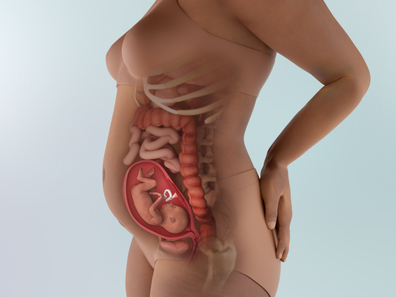
- 1. Sự phát triển của thai nhi
-
Kích thước thai nhi: 25cm (380g)👦👩
✱ Lông tơ (솜털), lông mày (눈썹), lông mi (속눈썹) bắt đầu mọc rõ hơn. Có bé sinh ra hầu như không có tóc, cũng có bé ngay từ khi chào đời đã có mái tóc dày và nhiều, lượng tóc ở thời điểm này không liên quan nhiều đến lượng tóc khi lớn lên, nên mẹ đừng lo lắng nhé.
✱ Da của bé nhìn chung có màu đỏ hỏn, nhưng hiện vẫn ở trạng thái bán trong suốt nên có thể nhìn thấy bên trong👶. Do lớp mỡ dưới da (피하지방) còn ít nên da trông nhăn nheo, chùng lại. Da sẽ tiếp tục phát triển và hoàn thiện qua nhiều lớp như biểu bì (표피), trung bì (진피) và mô dưới da (피하조직).
✱ Ở giai đoạn này, hệ thống tiền đình trong tai (gồm tiền đình và ba ống bán khuyên) của bé bắt đầu phát triển.
✱ Thai nhi nhận dinh dưỡng qua dây rốn, nhưng trong khoang miệng của bé đang có số lượng nụ vị giác (미각 봉우리) còn nhiều hơn cả người trưởng thành, vì vậy bé bắt đầu phản ứng với mùi vị. Nếu vị đắng đi vào nước ối, bé hầu như không uống, trong khi với vị ngọt thì phản ứng rất nhanh và uống nhanh gấp hơn đôi. Bé cũng có thể nuốt nhầm nước ối làm kích thích cơ hoành (횡경막), gây hiện tượng nấc cụt, và mẹ có thể cảm nhận điều này thông qua những cử động thai có nhịp điệu đều.
✱ Nếu mẹ ăn đa dạng thực phẩm, bé cũng sẽ được làm quen với nhiều hương vị phong phú hơn. Ngoài ra, sau khi sinh, khi bé bắt đầu ăn thức ăn thông thường, những món ăn đã “nếm” trong tử cung sẽ được bé tiếp nhận dễ dàng hơn. Vì vậy, những thực phẩm trẻ hay kén ăn như rau củ, đậu…🥕🥦 nếu mẹ ăn nhiều ngay từ bây giờ có thể là một cách rất tốt.
✱ Trước đây, kích thước thai nhi được đo bằng CRL, tức là chiều dài từ đầu đến mông. Nhưng bây giờ, khi chân đã dài ra, có thể đo kích thước từ đầu đến gót chân. Hiện tại, chiều dài đầu-gót của bé đã khoảng 25-26cm.
- 2. Thay đổi của cơ thể mẹ
-
✦ Bụng mẹ to lên rõ rệt
- Toàn bộ cơ thể, đặc biệt là vùng mông và đùi, bắt đầu tích mỡ, đường eo dần biến mất, và bụng lớn đến mức ai nhìn cũng có thể nhận ra mẹ đang mang thai.
- Ở giữa vùng bụng dưới có thể xuất hiện một đường màu nâu nhạt gọi là đường thai kỳ (임신 선). Việc xuất hiện đường thai kỳ phụ thuộc vào tình trạng cơ thể và yếu tố di truyền (유전자) của mẹ.
- Nếu tăng cân quá nhanh, khả năng xuất hiện đường thai kỳ sẽ cao hơn. Thực tế, không có phương pháp nào có thể phòng ngừa 100% đường thai kỳ. Tuy nhiên, nếu thoa nhiều kem chống rạn (튼살 크림) để cung cấp độ ẩm, ít nhất có thể ngăn tình trạng ngứa ngáy hay khô da do đường thai kỳ gây ra. Đường này sẽ dần mờ đi sau sinh, nên mẹ không cần quá lo lắng.
✦ Có cảm giác bụng co cứng
- Khi tử cung lớn dần, trong một ngày có thể xuất hiện khoảng 5 lần cảm giác bụng co cứng kèm đau nhẹ. Điều này xảy ra do tử cung là một cơ quan cấu tạo từ cơ (근육) và có xu hướng co bóp khi phát triển nhanh.
- Đây là hiện tượng bình thường, nhưng nếu trong ngày xảy ra trên 10 lần, hoặc mỗi lần co cứng kèm đau nhiều, nhất định hãy trao đổi với bác sĩ.
✦ Cảm giác lo lắng, bất an của mẹ là điều hoàn toàn bình thường
- Bụng ngày càng to, mẹ cảm nhận thai máy rõ ràng hơn, và cảm giác lo lắng cũng tăng dần. Dù là lần đầu hay lần thứ hai làm mẹ, việc xuất hiện lo âu hay bất an là điều rất tự nhiên.
- Không phải cứ làm mẹ là phải hoàn hảo, cũng không phải lúc nào mẹ cũng có thể mạnh mẽ và tự tin vượt qua mọi thứ. Trái lại, việc chấp nhận cảm xúc lo lắng mà mình đang có, sẽ giúp tâm lý thoải mái hơn☺️.
- Mẹ thử trò chuyện với những người bạn đã từng mang thai, hoặc viết nhật ký thai kỳ cũng giúp mẹ trút bớt những lo âu bằng lời văn và đối diện với chúng tốt hơn.
- Và mẹ có biết không, người chồng cũng đang có rất nhiều nỗi lo ở thời điểm này đấy. Dành thời gian trò chuyện nghiêm túc để cùng chia sẻ và thấu hiểu nỗi bất an của nhau cũng là một điều rất tốt.
✦ Rối loạn tiêu hóa do tử cung to lên, đừng nằm ngay sau khi ăn
- Tử cung lớn dần, chèn ép lên dạ dày khiến việc tiêu hóa trở nên khó khăn, thậm chí có thể dẫn đến trào ngược dạ dày-thực quản.
- Hãy chia nhỏ bữa ăn và nhất định tránh nằm ngay sau khi ăn. Khi triệu chứng quá khó chịu, mẹ có thể được bác sĩ kê đơn thuốc trung hòa axit dạ dày.
✦ Đổ mồ hôi nhiều hơn
- Trong giai đoạn này, chức năng tuyến giáp hoạt động mạnh hơn bình thường nên mẹ dễ đổ nhiều mồ hôi và chỉ cần vận động nhẹ cũng thấy hụt hơi. Ngoài ra, khi mạch máu giãn nở, vùng mặt, tay và vai dễ bị đỏ, trường hợp nặng có thể xuất hiện bớt da (모반) hoặc tình trạng ứ huyết (울혈).
- 3. Lưu ý về sức khỏe
-
Khám định kỳ và siêu âm hình thái chi tiết
- Ở thời điểm này, các cơ quan của thai nhi đã hoàn thiện, nhờ siêu âm hình thái chi tiết (정밀 초음파 검사) có thể chẩn đoán các dị tật như thoát vị cuống rốn (재대 탈장) và hở thành bụng bẩm sinh (복벽균열).
- Sau giai đoạn này, dù phát hiện dị tật cũng không thể đình chỉ thai và do thai nhi đã chiếm gần đầy buồng tử cung nên khó quan sát toàn bộ hình thể như tay, chân. Những thai phụ từng có tiền sử sinh con dị tật hoặc có kết quả bất thường trong xét nghiệm triple marker càng cần thực hiện siêu âm hình thái học để đánh giá vị trí và bất thường của các cơ quan. Thời gian kiểm tra khoảng 20-30 phút, độ chính xác vào khoảng 60%.
Bổ sung đủ chất xơ và uống trên 8 cốc nước mỗi ngày
- Khi tử cung ngày càng lớn, ruột bị chèn ép khiến nhiều mẹ bị táo bón (변비). Nếu táo bón nặng có thể tiến triển thành trĩ (치질), gây nhiều khó chịu hơn.
- Việc ăn đủ rau giàu chất xơ và uống khoảng 8 cốc nước mỗi ngày giúp tăng nhu động ruột, từ đó phòng ngừa táo bón🥕🥦🥬🍅, vì vậy cần chú ý từ sớm.
Ăn rau sống có thể làm cơ thể bị lạnh, nên ưu tiên các cách chế biến như luộc hoặc chần.
Hãy ra ngoài dạo chơi thường xuyên thay vì chỉ ở trong nhà
- Trước khi cơ thể trở nên nặng nề hơn, mẹ nên tranh thủ ra ngoài nhiều hơn. Miễn là không phải nơi quá đông đúc hay nguy hiểm, việc ra ngoài thường xuyên vừa có tác dụng vận động, vừa giúp ngăn ngừa tâm trạng uể oải. Tuy nhiên, khi lên xuống cầu thang hoặc di chuyển ở nơi có độ dốc, cần đặc biệt chú ý an toàn để tránh trơn trượt.
- Khi ra ngoài, ⚠️tuyệt đối không mang giày có gót cao trên 5cm. Giày cao gót khiến việc giữ thăng bằng khó khăn, dễ té ngã và còn là nguyên nhân gây đau lưng, vì vậy nên tránh. Giày êm chân là vật dụng thiết yếu đối với thai phụ. Nên chọn giày cao khoảng 2-3cm, có khả năng chống trượt để di chuyển an toàn ngay cả vào mùa đông. Chất liệu da nên có độ đàn hồi khi bẻ cong, lớp lót trong bằng cotton và bên trong giày có lớp đệm. Do thai phụ dễ bị phù chân, giày cần có độ co giãn để mang thoải mái ngay cả khi chân sưng. Ngoài ra, đệm giày giúp nâng đỡ trọng lượng cơ thể thai phụ và hấp thụ lực tác động lên khớp cổ chân.
- Khi ra ngoài, mẹ nên để hai tay được tự do để có thể phản ứng nhanh nếu lỡ té ngã hoặc cần bảo vệ bụng. Thay vì túi đeo chéo, nên chọn ba lô, trong ba lô đừng quên chuẩn bị sổ ghi số liên lạc khẩn cấp, thẻ bảo hiểm y tế, sổ khám thai (산모수첩) và một ít tiền mặt dự phòng.
- Tránh các hoạt động không an toàn, có nguy cơ té ngã hoặc gây nguy hiểm cao, như: ❌lặn biển có bình khí (scuba diving), các môn thể thao đối kháng, trượt ván tuyết, trượt tuyết đổ dốc (downhill skiing), yoga nóng (hot yoga), cưỡi ngựa, ngâm bồn nước nóng (hot tubbing), lái xe địa hình bốn bánh (four wheelers), cầu trượt nước, và một số trò chơi tại công viên giải trí.
- 4. Quan hệ vợ chồng khi mang thai
-
Sinh hoạt tình dục: Khi thai nhi trong bụng đã lớn khá nhiều, việc sinh hoạt tình dục trong thời gian dài có thể gây quá sức cho cơ thể mẹ. Nên lựa chọn tư thế không gây áp lực lên bụng đã to, đồng thời tránh quan hệ lâu và quá mạnh. Đây là giai đoạn lưu lượng máu dồn nhiều xuống phần thân dưới, tuần hoàn máu kém hơn nên cơ quan sinh dục ngoài dễ bị sung huyết, từ đó có thể làm thay đổi cảm giác tình dục. Khoảng 20% thai phụ cho biết họ trở nên đặc biệt nhạy cảm về mặt tình dục trong giai đoạn này. Có trường hợp độ nhạy tăng cao khiến họ cảm nhận cực khoái mạnh mẽ nhất, nhưng cũng có thai phụ cảm thấy khó chịu do đau, hoặc vì lo lắng quan hệ có thể ảnh hưởng đến thai nhi nên ham muốn tình dục giảm sút.
👨Vai trò của chồng:
Vợ đang trải qua nhiều thay đổi trong thai kỳ nên cần sự động viên ấm áp💝
- Khi thai kỳ tiến triển, cơ thể của vợ trải qua rất nhiều thay đổi. Ngực to lên, bụng nhô ra khiến đường eo dần biến mất, cân nặng tăng lên, làn da từng mịn màng cũng có thể xuất hiện các vấn đề.
- Vì những thay đổi này, ngày càng có nhiều việc mà vợ không thể tự mình làm được như trước😔. Vợ có thể cảm thấy bối rối, và thậm chí rơi vào trầm cảm vì nghĩ rằng sức hấp dẫn của mình với tư cách là một người phụ nữ đang dần giảm đi.
- Lúc này, chồng hãy giúp vợ tìm lại sự ổn định về mặt cảm xúc. Hãy thường xuyên nói cho vợ biết rằng việc mang thai và trải qua toàn bộ quá trình này khiến cô ấy trông vĩ đại đến mức nào, và rằng ngay cả những thay đổi trên cơ thể cũng thật cuốn hút và xinh đẹp.
- Mỗi lời nói ấm áp của người chồng đều giúp nâng cao lòng tự tin của vợ và trở thành động lực to lớn giúp cô ấy vượt qua quãng thời gian thai kỳ đầy vất vả.🤰❤️
Bố cũng hãy cùng mẹ suy nghĩ xem nên chọn sinh ở đâu🏥
- Khi cơ thể mệt mỏi, mẹ có thể không đủ sức để tự mình thu thập nhiều thông tin. Vì vậy, bố nên hỗ trợ tìm hiểu các bệnh viện gần nhà cũng như những bệnh viện uy tín, nổi tiếng.
- Những bệnh viện được nhiều người lựa chọn thường cần phải đặt lịch trước, vì vậy bố nên chủ động và sắp xếp sớm.
- 5. Trọng tâm thai giáo
-
Tắm rừng (forest bathing) rất tốt cho bé vì môi trường rừng giúp giảm căng thẳng, tăng cường hệ miễn dịch, cải thiện khả năng tập trung và kích thích giác quan thông qua âm thanh, mùi hương và ánh sáng tự nhiên. Với thai giáo, bố mẹ có thể thực hiện bằng cách đi dạo nhẹ trong rừng, hít thở sâu, lắng nghe tiếng chim và tiếng gió, cảm nhận hương thông hoặc lá cây, đồng thời trò chuyện nhẹ nhàng với em bé. Sự bình tĩnh và cảm xúc tích cực của mẹ khi ở trong thiên nhiên sẽ góp phần giúp bé tiếp nhận năng lượng thư thái và hình thành cảm xúc ổn định hơn.
- 6. Các thông tin cần biết khác
-
🖐️ Khi tay bị tê và đau, hãy thay đổi tư thế
Trong thai kỳ, sẽ có lúc các đầu chi bàn tay bị đau nhói, tê rần như châm chích. Cơn đau có thể dữ dội, đến mức khiến người mẹ nghi ngờ “liệu có phải tuần hoàn máu bị tắc nghẽn không”, tuy nhiên nguyên nhân chính xác của hiện tượng này hiện vẫn chưa được xác định. Dù cơn đau ở tay có rõ rệt, điều đó không có nghĩa là thai phụ đang gặp vấn đề bất thường, vì vậy không cần quá lo lắng. Khi làm việc, tránh giữ một tư thế cố định quá lâu, nên thường xuyên thay đổi tư thế cơ thể để giúp giảm cảm giác đau và tê ở tay.
🧪 Xét nghiệm tiểu đường thai kỳ
Từ tuần 24-28, tất cả thai phụ đều cần sàng lọc tiểu đường thai kỳ. Mẹ không cần nhịn ăn, sẽ được cho uống 50g glucose → sau 1 giờ, xét nghiệm đường huyết. Nếu bất thường, xét nghiệm lại bằng cách uống 100g glucose khi nhịn đói. Nếu kết quả tiếp tục bất thường, thai phụ được chẩn đoán tiểu đường thai kỳ và cần theo dõi, kiểm soát đường huyết trong suốt thai kỳ.
🩸 Xét nghiệm thiếu máu
Trong tam cá nguyệt giữa, nhu cầu sắt tăng và lượng huyết tương cũng tăng, dẫn đến giảm nồng độ hemoglobin. Nếu bị thiếu máu, bác sĩ sẽ chỉ định tăng liều bổ sung sắt để cải thiện tình trạng.
-
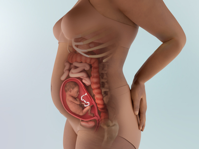
- 1. Sự phát triển của thai nhi
-
Kích thước thai nhi: 28cm (450g)🤭⭐
🐥 Có trường hợp thai nhi ngồi thẳng nữa, không phải tất cả thai nhi đều giữ tư thế ngược. Đừng lo lắng, vì giai đoạn này, thai nhi hoạt động rất tích cực, bé tự di chuyển tay chân và thường xuyên thay đổi tư thế. Khoảng tuần thứ 30 trở đi, đầu bé sẽ lại quay xuống dưới thôi.
🍼 Bé đang liên tục luyện tập khả năng sinh tồn để chuẩn bị chào đời. Bé mút ngón tay để tập bú sữa, bé cũng đang tập thở bằng cách nuốt nước ối, và bắt đầu bài tiết nước tiểu (오줌). Các chất cặn bã được tạo thành phân, tích tụ trong đại tràng và sau khi sinh sẽ được thải ra dưới dạng phân su (태변).
🌙 Bé có thể cảm nhận được độ sáng của ánh sáng, phân biệt được ngày và đêm. Vì vậy, nếu mẹ sinh hoạt điều độ, bé cũng sẽ hình thành nhịp sinh hoạt đều đặn tương tự.
🧠 Các tế bào não tiếp tục biệt hóa mạnh mẽ, giúp bé nâng cao đáng kể khả năng xử lý thông tin.
- 2. Thay đổi của cơ thể mẹ
-
Bụng mẹ to ra nên dễ bị té ngã
- Khi bụng lớn dần, trọng tâm cơ thể thay đổi, đồng thời các khớp và dây chằng trở nên lỏng lẻo hơn (관절과 인대가 느슨해진 상태). Nếu lỡ chẳng may bị ngã mà không bị đập bụng thì mẹ không cần quá lo lắng. Em bé được bao bọc và bảo vệ an toàn trong màng ối (양막), có tác dụng giảm sốc (완충작용). Tuy nhiên, nếu sau khi ngã mà bụng co cứng nhiều kèm đau thì nhất định phải trao đổi với bác sĩ phụ trách.
- Cơ thể của mẹ cũng quan trọng như cơ thể của bé, vì vậy để tránh chấn thương, hãy mang giày dép thoải mái, cẩn thận khi đi cầu thang, khi đi ở những nơi trơn trượt hoặc tối.
Mẹ dễ ra mồ hôi
- Khi chức năng tuyến giáp hoạt động mạnh hơn, mẹ dễ ra mồ hôi và chỉ cần cử động nhẹ cũng đã thấy hụt hơi, khó thở.
- Khi cân nặng tăng lên và tử cung to ra, các mạch máu trong vùng chậu có thể bị chèn ép, gây cản trở phần nào tuần hoàn máu ở nửa dưới cơ thể và dẫn đến tình trạng ứ huyết (울혈) ở chi dưới. Tuy nhiên, tình trạng này thường biến mất nhanh sau sinh nên nếu không nghiêm trọng thì không cần quá lo lắng. Các mạch này có thể trông giống hình mạng nhện. Khác với giãn tĩnh mạch, mao mạch của mẹ bầu không bị lồi lên. Để hạn chế, hãy vận động thường xuyên, gác cao chân khi nghỉ ngơi, tránh ngồi hoặc đứng quá lâu không nghỉ, và mang vớ y khoa.
Mẹ có thể bị nổi mụn trứng cá
- Mụn thai kỳ rất phổ biến, kể cả với những người trước đây chưa từng bị mụn. Nguyên nhân nhiều khả năng là do thay đổi nội tiết tố.
- Trước khi dùng bất kỳ sản phẩm trị mụn nào, hãy trao đổi với bác sĩ hoặc bác sĩ da liễu để đảm bảo an toàn cho thai kỳ. Nhiều loại thuốc trị mụn không được khuyến cáo cho phụ nữ mang thai, đặc biệt là isotretinoin (một dạng retinoid) có thể gây dị tật bẩm sinh nghiêm trọng.
- 3. Lưu ý về sức khỏe
-
⚠️ Cần tìm hiểu trước triệu chứng hở eo tử cung ❗❗
- Hở eo tử cung (자궁경관무력증) là tình trạng trong tam cá nguyệt giữa, cổ tử cung (자궁 경부) mở ra mà không có cơn đau chuyển dạ, dẫn đến sinh non hoặc sảy thai (유산). Nguyên nhân thì đa dạng, có thể do tiền sử sảy thai hoặc tổn thương cổ tử cung, cũng có trường hợp cổ tử cung yếu bẩm sinh.
- Tình trạng này thường xuất hiện vào khoảng tuần thai 20-25 và thời điểm trước hoặc sau đó, các triệu chứng có thể quan sát trực tiếp bằng mắt thường như: đột ngột ra nhiều khí hư kèm theo máu hồng giống dịch báo lẫn trong khí hư, bụng dễ co cứng; hoặc thấy màng ối phồng lên và lộ ra ngoài âm đạo.
🔺 Bổ sung taurine và glycogen
- Ở giai đoạn này, chức năng thận (신장기능) của thai nhi phát triển, thai nhi có thể đi tiểu trong tử cung và thậm chí nuốt lại nước ối có lẫn nước tiểu, nhưng may mắn là đã có khả năng lọc các chất này.
- Phù hợp với sự phát triển đó, từ giai đoạn này, mẹ cần đặc biệt chú ý đến hai dưỡng chất là taurine (타우린) và glycogen (글리코겐). Việc bổ sung đầy đủ và đều đặn hai dưỡng chất này giúp tăng cường sức khỏe cho thận và gan của thai nhi.
- Taurine có nhiều trong các loại hải sản như bạch tuộc, mực, tôm và có tác dụng ức chế cholesterol. Glycogen có nhiều trong hàu, nghêu và sò lông.
🚫 Nếu tóc rụng nhiều, cần chú ý đến việc bổ sung dinh dưỡng
- Trong thời kỳ mang thai, do thay đổi nội tiết tố, tóc có thể mọc nhanh và đồng thời cũng có thể rụng thành từng mảng rõ rệt.
- Việc tóc mọc nhanh không phải vấn đề, nhưng rụng tóc (탈모) lại khiến nhiều thai phụ lo lắng. Không có biện pháp đặc hiệu để ngăn rụng tóc trong thai kỳ, tuy nhiên, chú ý bổ sung protein và các thực phẩm từ rong biển (해조류) có thể giúp cải thiện phần nào.
- Rụng tóc và tóc xơ sau sinh thường chỉ là tạm thời, khi sức khỏe mẹ hồi phục thì tóc sẽ tốt trở lại.
- 4. Quan hệ vợ chồng khi mang thai
-
Sinh hoạt tình dục: Dù đây là giai đoạn tương đối ổn định, nhưng việc quan hệ tình dục quá thường xuyên hoặc quá sức là không được khuyến khích. Nếu sinh hoạt tình dục khiến thai phụ cảm thấy mệt mỏi thì cần đặc biệt lưu ý. Ngoài ra, nếu trong lúc quan hệ mà thai máy trở nên mạnh và dồn dập hơn thì cũng cần thận trọng. Trường hợp sau quan hệ có xuất huyết (출혈) thì đó không phải là dấu hiệu tốt → nếu gặp tình trạng này, thai phụ nên đi khám bác sĩ để xác định nguyên nhân chính xác.
👨Vai trò của chồng:
🚨 Bố nên quyết tâm cai thuốc lá ngay bây giờ vì vợ và em bé
- Ai cũng biết hút thuốc lá (흡연) có hại cho thai nhi. Không chỉ hút thuốc trực tiếp, mà hút thuốc thụ động (간접흡연) cũng gây ảnh hưởng nghiêm trọng.❌
- Nếu chồng hút một bao thuốc mỗi ngày ở bên cạnh vợ, thì vợ được xem như hút 4 điếu thuốc mỗi ngày, còn thai nhi thì tương đương với hút 1 điếu thuốc mỗi ngày vậy.⛔
- Không chỉ có hút thuốc thụ động cấp độ 2 là hít phải khói thuốc do người khác thở ra, mà cả hút thuốc thụ động cấp độ 3 - tiếp xúc với mùi thuốc còn bám trên quần áo người hút hoặc trong không gian đã từng hút thuốc - cũng có thể truyền toàn bộ tác hại đó trực tiếp đến người vợ đang mang thai và thai nhi.🔥
- Khi thai phụ tiếp xúc với hút thuốc thụ động, các chất độc hại sẽ đi qua nhau thai và truyền thẳng đến thai nhi, ⚠️có thể gây thiếu oxy (저산소증), chậm phát triển trí tuệ (지적발달 지연), trẻ nhẹ cân, dị tật bẩm sinh (기형아), sảy thai tự nhiên và nhiều vấn đề khác. → Dù không dễ dàng, nhưng từ bây giờ, bố hãy vì sức khỏe của vợ và em bé sắp chào đời mà quyết tâm cai thuốc lá.
Hãy hình dung cuộc sống sau khi em bé chào đời
- Với mẹ, bố là chỗ dựa vững chắc và là người đồng hành đáng tin cậy nhất. Ngoài việc giúp đỡ mẹ những điều nhỏ nhặt, bố cũng nên nghĩ trước đến sinh hoạt hằng ngày sau khi em bé ra đời để hỗ trợ mẹ tốt hơn. Vừa nghĩ đến em bé xinh xắn sắp chào đời, vừa vui vẻ chuẩn bị trước những việc cần làm trong thời gian tới cũng là một điều rất ý nghĩa.
- 5. Trọng tâm thai giáo
-
Giữ cho không khí trong nhà trong lành và tiếp xúc với không gian xanh nhiều hơn. Không khí trong lành là yếu tố môi trường thiết yếu đối với sinh hoạt của thai phụ. Thai nhi nhận oxy thông qua cơ thể mẹ, vì vậy việc thai phụ hít thở không khí tươi mới và cung cấp oxy tối đa sẽ giúp ích cho sự phát triển trí não và sức khỏe thể chất của thai nhi. Nên thông gió trong nhà khoảng mỗi một giờ một lần. Vào cuối tuần, hãy cùng chồng đến các khu rừng hoặc công viên gần nhà để tận hưởng hương phytoncide (mùi hương tươi mát toát ra từ các loài cây) và mùi gỗ, mùi nhựa cây do cây cối tỏa ra. Những hương này có hàm lượng ion âm cao, giúp phòng ngừa và làm giảm các triệu chứng như mất ngủ, đau đầu, cao huyết áp và cảm lạnh.
- 6. Các thông tin cần biết khác
-
Hãy thử tham gia lớp học dành cho thai phụ hoặc lớp học nuôi dạy con
- Thay vì bước vào quá trình sinh nở trong trạng thái chưa chuẩn bị, mẹ nên tham gia các khóa học để chuẩn bị trước cho việc sinh con và nuôi dạy trẻ. Khi tham gia các lớp này, việc nắm được thông tin về sinh nở và chăm sóc trẻ sẽ giúp xóa bỏ cảm giác lo lắng mơ hồ và tăng sự tự tin. Ngoài ra, mẹ còn có thể chia sẻ thông tin và những trăn trở với những người cùng hoàn cảnh, từ đó cảm thấy ổn định về mặt tâm lý.
- Các lớp học dành cho thai phụ thường được tổ chức tại bệnh viện, trung tâm y tế hoặc Hiệp hội Phúc lợi và Sức khỏe Gia đình Hàn Quốc (대한가족보건복지협회), cung cấp đa dạng thông tin về mang thai, sinh nở và nuôi dạy con. Khi tham gia, mẹ không chỉ học qua sách vở mà còn tiếp cận kiến thức thông qua bài giảng, slide và video.
- Lớp học dành cho các mẹ cũng được tổ chức tại các bệnh viện đại học, bệnh viện chuyên khoa, bệnh viện đa khoa, cũng như nhiều phòng khám sản phụ khoa tư nhân quy mô lớn, vì vậy có thể lựa chọn địa điểm gần nhà để thuận tiện tham gia.
-
- 1. Sự phát triển của thai nhi
-
Kích thước thai nhi: 29.3cm (530g)😘👶
- Thính giác của thai nhi gần như đã hoàn thiện, nên bé có thể nghe được hầu hết các âm thanh từ bên ngoài tử cung. Việc nghe giọng nói của mẹ và bố luôn là điều dễ chịu, nhưng những âm thanh quá lớn, ồn ào hoặc đột ngột khiến bé giật mình thì bé không thích.
- Bé có thể biểu lộ cảm xúc đa dạng hơn như một phản ứng trước các kích thích😊. Khi cảm nhận vị đắng trong nước ối, bé biết nhăn mặt, dù chưa thể mở mắt nhưng bên trong mí mắt khép kín, nhãn cầu vẫn có thể đảo qua đảo lại.
- Âm thanh tim đập rõ hơn, bố mẹ có thể tự nghe được tiếng tim thai bằng ống nghe bán phổ biến trên thị trường, cho thấy bé đang lớn lên khỏe mạnh và cứng cáp hơn❤️.
- Hình dáng tổng thể dần trở nên cân đối, xương và khớp phát triển rõ rệt, khi chụp X-quang có thể nhận biết rõ hộp sọ, cột sống, xương sườn, tay và chân. Tuy nhiên, lượng mỡ trong cơ thể bé vẫn chưa đủ. Mỡ trắng (흰색 지방) cần thêm thời gian để tích lũy. Vì vậy, hiện tại da tay chân của bé vẫn hơi nhăn, chùng, giống như quả bóng bị xì hơi. Do da còn mỏng, các cơ quan nội tạng và mạch máu bên trong vẫn có thể nhìn thấy rõ. Sắp tới, một loại protein gọi là keratin (케라틴) sẽ được hình thành, giúp da dày lên và hoàn thiện hơn.
- Những chuyển động dạng sóng (wave-like movements) giúp đẩy thức ăn dọc theo ống tiêu hóa của em bé đã bắt đầu xuất hiện. Cũng giống như việc nuốt, ở giai đoạn này, đây chỉ là sự “luyện tập” cho hệ tiêu hóa, vì thực tế chưa có thức ăn nào được đưa vào.
- 2. Thay đổi của cơ thể mẹ
-
📍 Mẹ dễ xuất hiện giãn tĩnh mạch ở đùi, bắp chân và vùng âm hộ. Trọng lượng tử cung lúc này khoảng 1.5kg, chiều cao đáy tử cung đạt 20-24cm. Cân nặng của mẹ tăng khoảng 5-6kg so với trước khi mang thai, vì vậy thường gặp đau lưng, đau eo, phù chân hoặc tê chân. Do thể tích máu tăng, mạch máu giãn ra và tử cung lớn dần chèn ép tĩnh mạch, nên dễ hình thành các tĩnh mạch giãn ngoằn ngoèo, có màu xanh tím ở vùng âm hộ, đùi và bắp chân. Mẹ nên tránh đứng hoặc ngồi quá lâu một tư thế, hãy kê cao chân lên giường hoặc ghế sofa, hoặc ngâm chân bằng nước ấm để giúp giảm phù nề.
📍 Có thể xuất hiện trĩ (치질). Khoảng 70% phụ nữ mang thai trải qua tình trạng trĩ trong thai kỳ. Do hormone progesterone (황체 호르몬) tiết ra nhiều, nhu động ruột già chậm lại, dễ gây táo bón. Táo bón khiến thời gian rặn khi đi đại tiện kéo dài, làm tăng áp lực lên hậu môn và dẫn đến trĩ. Đối với tình trạng đau và sưng do trĩ, việc ngâm hậu môn bằng nước ấm (좌욕) mang lại hiệu quả giảm triệu chứng rất tốt. Nếu có chảy máu nhẹ, trước hết mẹ nên trao đổi với bác sĩ phụ trách để sử dụng các loại thuốc bôi trĩ, thông thường, phẫu thuật sẽ được cân nhắc sau khi sinh.
📍 Thay đổi rõ rệt nhất ở ngực khi mang thai mà mẹ chắc hẳn đã nhận ra là: ngực to lên. Khi bước vào nửa sau của thai kỳ, có thể thấy các tĩnh mạch trên ngực nổi rõ hơn và quầng vú (areolas - vùng da sẫm màu quanh núm vú) trở nên sẫm màu hơn. Khi gần đến ngày dự sinh, ngực có thể rỉ sữa non (colostrum). Đây là chất lỏng giàu protein và kháng thể, là nguồn sữa đầu tiên mà em bé sẽ bú sau khi chào đời. Việc ngực rỉ vài giọt chất lỏng đặc, hơi vàng này trong thai kỳ là hoàn toàn bình thường - nhưng nếu không có hiện tượng này thì cũng không có gì đáng lo.
📍 Khi cảm giác thèm ăn quay trở lại (thậm chí còn mạnh mẽ hơn trước), mẹ có thể bắt đầu thèm những món rất cụ thể. Hầu hết phụ nữ mang thai đều thèm ít nhất một loại thực phẩm nào đó, và nhiều người thèm nhiều loại khác nhau. Theo một khảo sát các bà mẹ của BabyCenter, có gần một nửa (49%) cho biết họ thèm đồ ngọt, 42% thèm đồ mặn, 38% thèm đồ cay, và 21% thèm vị chua như trái cây họ cam quýt, táo xanh và kẹo chua.
- 3. Lưu ý về sức khỏe
-
🔹Điều trị sâu răng 🦷
- Khi mang thai, độ pH của nước bọt thay đổi, dễ hình thành cao răng, khiến nướu sưng và đau. Đồng thời, do lượng máu tăng, máu tập trung nhiều ở nướu làm nướu dễ sưng, chảy máu và đau. Vì vậy, trong thai kỳ, tình trạng răng và nướu xấu đi khá phổ biến. Nếu không điều trị kịp thời, sâu răng có thể nặng hơn vào giai đoạn sinh nở, do đó nên xử lý ở mức cần thiết và phù hợp trong giai đoạn này rồi điều trị dứt điểm sau khi sinh.
🔹Giảm ngứa thai kỳ, việc bổ sung nước và dưỡng ẩm là rất quan trọng 💧🧴
- Ngứa thai kỳ là tình trạng ngứa da thường xảy ra vào giai đoạn giữa thai kỳ. Nếu bị nặng, mẹ có thể thấy ngứa toàn thân đến mức không ngủ ngon được.
- Để giảm ngứa, mẹ nên thường xuyên uống nước 💦 để bổ sung đủ độ ẩm cho cơ thể và thoa các sản phẩm chăm sóc da có tác dụng dưỡng ẩm, làm dịu. Đây cũng là dịp phù hợp để chuyển sang sử dụng sữa tắm và lotion có thành phần dịu nhẹ.
- Nếu chỉ bị ở tay và chân, hoặc kèm theo vàng da, thì có khả năng là ngứa thai kỳ do ứ mật (담즙 정체성 임신소양증). Trong trường hợp này, mẹ cần đến bệnh viện ngay lập tức vì có nguy cơ sinh non.
🔹Pemphigoid thai kỳ ⚠️ cần đến bệnh viện ngay khi phát hiện 🏥
- Pemphigoid thai kỳ (임신 포진) là bệnh lý da liễu kèm theo các mụn nước, gây ngứa rất dữ dội. Nếu gãi liên tục do ngứa, các mụn nước có thể vỡ ra, khiến tình trạng bệnh trở nên nghiêm trọng hơn.
- Pemphigoid thai kỳ không chỉ nguy hiểm với mẹ mà còn có thể gây hậu quả nghiêm trọng cho thai nhi, làm tăng nguy cơ chậm phát triển thai (태아 발육 지연), sinh non, và tỷ lệ tử vong thai nhi có thể vượt quá 20%.
- Nếu mẹ thấy xuất hiện các tổn thương dạng mụn nước quanh rốn hoặc ở những vị trí khác trên cơ thể, hãy đến bệnh viện ngay để được điều trị kịp thời. Đồng thời, để tăng cường miễn dịch, mẹ nên bổ sung đầy đủ các dưỡng chất cần thiết và các loại thực phẩm bổ sung phù hợp.
🔹Cảm giác nóng bừng ở mặt 🌡️
- Mặt nóng ran như giữa mùa hè có thể xuất hiện do sự thay đổi nội tiết tố, khiến mẹ có cảm giác như khuôn mặt đang “bốc nhiệt”.
- Tắm bằng nước mát và mặc quần áo thoáng khí sẽ giúp mẹ dễ chịu hơn. So với giai đoạn đầu thai kỳ, việc cảm thấy nóng hơn dần là điều hoàn toàn bình thường.
🔹Bổ sung kẽm và magiê (아연과 마그네슘 섭취) 🥗
- Khi mẹ có một thai kỳ thoải mái và vui vẻ, bé trong bụng cũng dễ chịu và bình an. Trong các dưỡng chất giúp ổn định cơ thể mẹ, kẽm và magiê đóng vai trò quan trọng.
- Kẽm là dưỡng chất thiết yếu để duy trì cân bằng axit-kiềm trong cơ thể. Khi bổ sung đầy đủ, tâm trạng và thể trạng của thai phụ được cải thiện. Kẽm có nhiều trong cá, hàu và các loại hải sản 🐟🦪.
- Magiê giúp hệ thần kinh và cơ bắp hoạt động hiệu quả hơn 🧠💪, đồng thời ổn định tinh thần. Các thực phẩm như đậu phụ, rong biển, chuối, sung rất có lợi 🍌🌿.
🔹Thường xuyên vận động cơ thể để phòng ngừa đau lưng, đau eo và phù nề 🚶♀️
- Đi bộ thường xuyên giúp tăng cường sức mạnh cơ lưng và cơ bụng cần thiết cho quá trình sinh nở, đồng thời duy trì thể lực. Đi bộ còn giúp phòng ngừa đau lưng và phù nề-những khó chịu đặc trưng của thai kỳ. Nên chọn những ngày thời tiết tốt, cơ thể khỏe, đặt mục tiêu đi bộ 20-30 phút mỗi ngày. Tuy nhiên, nếu xuất hiện căng tức bụng hoặc mệt mỏi nhiều, cần ngừng ngay và nghỉ ngơi.
- Giữ một tư thế quá lâu hoặc làm việc trong tư thế không ổn định sẽ tạo áp lực lên thắt lưng, dễ gây đau lưng. Khi bụng bắt đầu to, lưng và eo càng dễ đau, về chiều, chân có thể sưng và tê. Do đó, không nên duy trì một tư thế trong thời gian dài, hãy vận động cơ thể thường xuyên.
- Có thể cử động khớp tay chân, xoay nhẹ thắt lưng bằng các bài tập đơn giản. Massage bàn chân hoặc lưng trước khi ngủ giúp lưu thông máu hiệu quả 🦶. Khi nghỉ ngơi, kê chân cao hơn một chút sẽ giúp giảm phù và đỡ mệt. Tránh ngồi xổm, nên thay bằng quỳ thẳng lưng trên gối. Không nên ngồi quá lâu trong nhà vệ sinh vì gây áp lực lên bụng dưới và thắt lưng. Không mang giày cao gót khi ra ngoài và tránh mặc đồ lót hoặc quần áo quá chật.
🔹Ngủ nghiêng 🛌
- Để có giấc ngủ tốt nhất trong thai kỳ, các chuyên gia khuyến nghị nên ngủ nghiêng. Một số bác sĩ khuyên ngủ nghiêng bên trái vì tư thế này giúp giảm áp lực lên tĩnh mạch đưa máu từ chân trở về tim, từ đó cải thiện tuần hoàn cho cả mẹ và bé.
- Tuy nhiên, hiện chưa có bằng chứng khoa học chắc chắn cho thấy ngủ nghiêng bên trái tốt hơn các tư thế nghiêng khác, vì vậy, mẹ có thể chọn bên nào thấy thoải mái nhất. Với nhiều phụ nữ, điều này đồng nghĩa với việc đổi bên qua lại khi ngủ. Nếu mẹ thấy khó chịu khi nằm nghiêng, hãy cân nhắc sử dụng gối dành cho bà bầu (pregnancy pillow) để hỗ trợ tốt hơn cho hông và lưng.
- 4. Quan hệ vợ chồng khi mang thai
-
Sinh hoạt tình dục: Khi thai máy xuất hiện thường xuyên hơn, mẹ sẽ cảm nhận rõ sự gắn kết mạnh mẽ với em bé. Điều này đôi khi khiến mẹ vô thức muốn bảo vệ thai nhi và ngần ngại quan hệ tình dục. Nếu vậy, nên chia sẻ thẳng thắn với chồng. Trong trường hợp mẹ thấy khó chịu hoặc không muốn quan hệ xâm nhập, hai vợ chồng có thể trao đổi để tìm những hình thức gần gũi và thể hiện tình cảm phù hợp hơn.
👨Vai trò của chồng:
Hãy lên kế hoạch cho những buổi hẹn hò riêng của hai vợ chồng
- Càng về cuối thai kỳ, và trong một thời gian sau khi sinh, việc có những buổi hẹn hò riêng tư cùng vợ sẽ ngày càng khó khăn hơn.
- Những buổi hẹn hò nhỏ nhưng ấm áp sẽ giúp cả hai thay đổi không khí👩❤️👨. Trong khoảng thời gian đó, hãy tạm gác chuyện em bé sang một bên và tập trung vào nhau.
- Có thể là một chuyến đi ăn những món vợ đang thèm, xem một bộ phim mang lại cảm giác ấm áp, hoặc cùng nhau đi dạo bên bờ sông Hàn lúc hoàng hôn - bất cứ điều gì cũng đều ý nghĩa.
Một món quà dành cho người vợ khó ngủ
- Nếu bố muốn làm điều gì đó cho người vợ đang trằn trọc khó ngủ, đây là lúc rất thích hợp.
- Trong thai kỳ, mẹ phải ngủ theo tư thế nhất định, dễ bị phù nề, chuột rút, thậm chí mắc các bệnh về da, khiến những đêm mất ngủ kéo dài.
- Việc massage cho người vợ đang vất vả không chỉ giúp mối quan hệ vợ chồng thêm gắn bó mà còn hỗ trợ vợ dễ dàng đi vào giấc ngủ hơn💞. Ngoài ra, tặng một chiếc gối lớn hỗ trợ tư thế nằm nghiêng bên trái cũng sẽ là một món quà rất tinh tế và đầy cảm động.
- 5. Trọng tâm thai giáo
-
Khi cơ thể người mẹ chuyển động theo nhịp điệu một cách nhẹ nhàng, dễ chịu, thai nhi trong bụng cũng cảm thấy vui vẻ và tinh thần ổn định. Vợ chồng nên thường xuyên dành thời gian nắm tay nhau, cùng khiêu vũ theo những bản nhạc êm ái, nhẹ nhàng như waltz. Nếu vừa khiêu vũ vừa tưởng tượng thai nhi trong bụng cũng đang cùng nhảy múa, khoảng thời gian đó sẽ càng trở nên thư giãn và hạnh phúc hơn.❤️❤️
- 6. Các thông tin cần biết khác
-
🛡️ Quản lý táo bón để phòng ngừa trĩ (치질)
- Khi bị táo bón, phân dễ trở nên cứng, việc đi đại tiện khó khăn khiến thai phụ phải rặn mạnh, làm tĩnh mạch vùng hậu môn bị ứ máu, dẫn đến đau dữ dội hoặc chảy máu - tình trạng này được gọi là trĩ.
- Bước vào giai đoạn cuối thai kỳ, cơ vùng chậu và cơ hậu môn trở nên lỏng lẻo hơn, nếu để trĩ kéo dài đến lúc sinh, có thể gây sa hậu môn, tức là toàn bộ mô vùng hậu môn bị giãn và lòi ra ngoài. Vì vậy, cần chủ động phòng ngừa táo bón từ sớm, dành sự chú ý đặc biệt cho việc điều hòa tiêu hóa và thói quen sinh hoạt hằng ngày.
-
- 1. Sự phát triển của thai nhi
-
Kích thước thai nhi: 31cm (620g)😊🤗
🎀 Bé đang dần hình thành nhịp sinh hoạt riêng dựa theo giờ ngủ và thức của mẹ, nhưng cũng không nhất thiết lúc nào cũng trùng khớp. Có khi mẹ vừa nằm xuống chuẩn bị ngủ thì bé lại tỉnh táo và đạp rất hăng hái.
⚧️ Cơ quan sinh dục phát triển phù hợp với giới tính của bé. Ở bé gái, tử cung bắt đầu hình thành và buồng trứng (난소) chứa các noãn được tạo ra, tuy nhiên môi lớn vẫn chưa hoàn thiện. Ở bé trai, tinh hoàn (고환) trước đó nằm trong ổ bụng bắt đầu di chuyển xuống dưới.
🧠 Não bộ đã ổn định hơn, bé nghe và ghi nhớ nhiều âm thanh khác nhau. Trong bụng mẹ có rất nhiều âm thanh: tiếng không khí ra vào phổi, tiếng ruột sôi ùng ục, giọng nói của mẹ và bố, cũng như những âm thanh lớn từ bên ngoài. Từ tiếng chó sủa, tiếng còi xe cho đến tiếng còi báo động, tất cả đều có thể đến tai bé. Nếu mẹ cho bé nghe những bản nhạc thai giáo phù hợp hoặc những bài hát mà bố mẹ yêu thích, bé có thể ghi nhớ chúng sau khi chào đời.
🎶 Bé thích âm nhạc. Nếu đó là âm nhạc mà mẹ yêu thích, bé cũng sẽ thích theo. Chỉ cần không quá ồn ào, không nhất thiết phải là nhạc cổ điển, bất kỳ loại nhạc dễ chịu nào cũng đều tốt cho bé. Âm thanh mà bé yêu thích nhất là nhịp điệu giống với nhịp tim của mẹ và những âm trầm giống giọng nói của bố. Nếu bố mẹ biết những bản nhạc có đặc điểm này, hãy cho bé nghe nhé.
💇♀️ Tóc và lông mày đang mọc, nhưng do sắc tố chưa được tích lũy nên vẫn chưa có màu, vì vậy, bé đang có tóc trắng và lông mày trắng. Sau đó, bé sẽ dần tiếp nhận sắc tố và có màu tóc đáng yêu của riêng mình.
Cơ thể bé hiện đang sản xuất chất hoạt diện (계면활성제). Chất này giúp mở rộng các phế nang (폐포) - những túi khí trong phổi, hỗ trợ hô hấp dễ dàng và giúp ngăn ngừa tình trạng khó thở.
🤸♀️ Bé nổi lơ lửng trong nước ối và thường xuyên cử động tay chân, đồng thời có thể ở tư thế trồng cây chuối với mông và bàn chân hướng lên trên. Làn da dần mất đi độ trong suốt, trở nên đục rõ rệt và mang sắc đỏ hồng. Tuy nhiên, do mỡ dưới da vẫn chưa được tích lũy, nên bề mặt da vẫn còn nhăn nheo.
- 2. Thay đổi của cơ thể mẹ
-
📌 Chảy máu mũi hoặc chảy máu nướu răng
- Khi lượng máu trong cơ thể tăng lên, huyết áp cao hơn và các mạch máu giãn ra, mẹ dễ bị chảy máu mũi, nướu răng sưng và dễ tổn thương. Nếu không chăm sóc nướu cẩn thận, mẹ rất dễ mắc viêm nướu thai kỳ (임신성 치은염). Khi các chỉ số viêm trong máu tăng cao do viêm nướu, chúng có thể theo mạch máu truyền đến thai nhi và gây ảnh hưởng không tốt.
- Trong giai đoạn giữa thai kỳ - thời điểm an toàn để điều trị răng miệng - mẹ nên chủ động đến nha khoa để thực hiện các biện pháp phòng ngừa như lấy cao răng (스케일링).
📌 Có thể xuất hiện hội chứng ống cổ tay
- Mẹ có cảm thấy cổ tay và các ngón tay tê rần, đau nhức hoặc như bị tê liệt không? Đây rất có thể là hội chứng ống cổ tay. Thông thường, hội chứng này xuất hiện do các động tác lặp đi lặp lại, nhưng trong thai kỳ, dù không thực hiện các động tác đó, tình trạng phù nề cũng có thể gây ra triệu chứng.
- Ban ngày, tình trạng phù thường tập trung ở chân, nhưng khi nằm xuống, dịch có thể phân bố khắp cơ thể. Trong quá trình này, các dây thần kinh ở cổ tay bị chèn ép, gây tê và đau.
- Mẹ nên tránh gối đầu lên tay khi ngủ, hạn chế các hoạt động lặp lại như chơi piano hay gõ bàn phím. Việc thường xuyên giãn cơ cổ tay hoặc lắc nhẹ bàn tay cũng có thể giúp giảm triệu chứng.
📌 Ra máu lấm tấm (Spotting)
- Trong tam cá nguyệt thứ hai, một số phụ nữ có thể bị ra máu chút ít hoặc chảy máu nhẹ. Nguyên nhân có thể do thay đổi ở cổ tử cung, viêm nhiễm hoặc polyp cổ tử cung lành tính (benign cervical polyp). Ra máu nhẹ trong tam cá nguyệt thứ hai thường không nguy hiểm.
- Tuy nhiên, nếu bị chảy máu nhiều hơn hoặc lặp lại thường xuyên, hãy đi khám ngay để được chăm sóc y tế kịp thời.
📌 Thay đổi tâm trạng (Mood swings)
- Những cơn thay đổi tâm trạng mạnh có thể đã giảm bớt khi mẹ mang thai được 24 tuần - nhưng việc trải qua mood swings trong tam cá nguyệt thứ hai vẫn hoàn toàn bình thường. Thay đổi nội tiết tố (hormonal changes), căng thẳng (stress), mệt mỏi (fatigue), khó chịu và kiệt sức (exhaustion) đều có thể khiến cảm xúc trở nên nhạy cảm hơn.
- Nếu các cơn thay đổi tâm trạng xuất hiện thường xuyên hơn, dữ dội hơn, hoặc kéo dài trên hai tuần, hãy trao đổi với bác sĩ và xin giới thiệu gặp chuyên gia tâm lý (therapist). Có thể mẹ đang gặp tình trạng trầm cảm khi mang thai (depression during pregnancy) hoặc lo âu thai kỳ (pregnancy anxiety).
- 3. Lưu ý về sức khỏe
-
🔔 Từ bây giờ cần đặc biệt lưu ý nguy cơ sinh non (조산)
- Trong trường hợp không may thai nhi phải chào đời sớm do những tình huống ngoài ý muốn, thì ở giai đoạn này, bé đã đạt đến số tuần thai tối thiểu có thể sống sót nhờ sự hỗ trợ từ bên ngoài.
- Nếu trước đây mẹ đã cẩn trọng để phòng tránh sảy thai, thì từ nay hãy tiếp tục chú ý để phòng ngừa sinh non và cố gắng thêm một chút nữa.
🔔 Chuẩn bị xét nghiệm đái tháo đường thai kỳ
- Xét nghiệm đái tháo đường thai kỳ thường được thực hiện trong khoảng tuần 24-28, là một xét nghiệm rất quan trọng để phát hiện đái tháo đường thai kỳ (임신성 당뇨). Mẹ không cần nhịn đói, mẹ sẽ được cho uống 50g glucose (포도당 50g) rồi tiến hành xét nghiệm. Nếu kết quả cho thấy dấu hiệu bất thường, sẽ cần nhịn đói và uống lại 100g glucose (포도당 100g) để làm xét nghiệm lại.
- Tình trạng này có thể dẫn đến thai to (거대아) và các biến chứng trong quá trình sinh nở❗❗. Đây cũng là bệnh lý cần đặc biệt cảnh giác với tình trạng tăng cân quá nhanh.
- Nếu mẹ đã duy trì chế độ ăn uống lành mạnh, tập luyện đều đặn và kiểm soát tốt mức tăng cân, thì coi như đã sẵn sàng cho xét nghiệm.
🔔 Việc kiểm tra vị trí nhau thai và lựa chọn bệnh viện sinh là rất quan trọng
- Nhau tiền đạo (전치태반) là tình trạng nhau thai che lấp lối vào của tử cung. Tình trạng này có thể được phát hiện qua siêu âm hoặc được nhận biết khi xuất huyết xảy ra vào giai đoạn cuối thai kỳ.
- Tuổi mẹ càng cao, có tiền sử mang thai càng nhiều, hoặc nếu mẹ hút thuốc, thì mỗi lần khám thai đều cần đặc biệt kiểm tra vị trí nhau thai. Nếu có những yếu tố hoặc triệu chứng này, tốt nhất mẹ nên lựa chọn sinh tại bệnh viện lớn.
🔔 Hãy kiểm tra chiều dài cổ tử cung
- Ở giai đoạn này, chiều dài cổ tử cung thường vào khoảng 3-3.5cm, nhưng trong một số trường hợp có thể ngắn hơn.
- Nếu chiều dài dưới 2.5cm, bệnh viện cần có những biện pháp can thiệp phù hợp. Đặc biệt, nếu mẹ có tiền sử sinh non (조산), hãy quan tâm kỹ hơn đến chỉ số chiều dài cổ tử cung.
🔔 Ăn thực phẩm giàu protein chất lượng cao và giảm muối, giảm đường
- Trọng tâm của chế độ ăn ở giai đoạn này là phòng ngừa tiền sản giật (임신중독증). Khi thiếu protein (단백질), nguy cơ mắc tiền sản giật sẽ tăng lên, do đó cần bổ sung protein chất lượng cao (양질의 단백질) thông qua đậu, các loại cá da xanh và thịt nạc.
- Đồng thời, nếu ăn muối quá nhiều, có thể xuất hiện phù nề (부종) hoặc các triệu chứng tăng huyết áp. Nên giảm ăn kimchi với lượng còn một nửa so với bình thường, đồng thời hạn chế các thực phẩm muối mặn (염장류 식품) như mắm, đồ muối, và thực phẩm chế biến sẵn (가공식품)⚠️. Trong 1 thìa canh nước tương (간장 1큰술) có chứa khoảng 3.5g muối, vì vậy, không nên dùng quá 2.5 thìa canh nước tương mỗi ngày.
- Mẹ phải hạn chế đồ ngọt. Việc tăng cân trong thai kỳ có thể dẫn đến béo phì, từ đó làm tăng nguy cơ tiền sản giật. Đường và các loại bánh kẹo, bánh quy, kẹo ngọt là những nguyên nhân chính gây tăng cân, vì vậy nên tránh các thực phẩm có vị ngọt. Đặc biệt, các thực phẩm như kem tươi (생크림) và kem lạnh (아이스크림) không chỉ gây tăng cân mà còn làm tăng huyết áp (혈압), do đó cần tránh.
🔔 Khi bụng bị ngứa, hãy thoa lotion và massage
- Bụng của thai phụ càng về cuối thai kỳ càng dễ bị ngứa. Phần da phía trên bụng bị kéo căng, gây cảm giác ngứa ngáy khó diễn tả, chủ yếu do da bị khô. Nên hạn chế gãi bằng tay và thay vào đó thoa lotion rồi massage nhẹ nhàng để làm dịu cơn ngứa. - Trong thai kỳ, tình trạng rạn da rất dễ xuất hiện. Rạn da có liên quan đến hormone tiết ra trong thai kỳ và do tăng cân, đặc biệt thường gặp ở phụ nữ mang thai lần đầu.
- Rạn da xuất hiện qua hai giai đoạn. Đầu tiên, vùng da bị kéo giãn trở nên đỏ và ngứa, lúc này, các sợi đàn hồi dưới da không theo kịp tốc độ giãn nở và bị đứt, gây ra các triệu chứng này. Giai đoạn thứ hai là khi rạn da xuất hiện rõ trên bề mặt da, ban đầu có màu đỏ rồi dần nhạt đi và trở thành những đường mảnh màu ánh ngọc trai.
- Nếu chăm chỉ massage khi vẫn còn sắc đỏ, có thể đạt được hiệu quả cải thiện đáng kể. Tuy nhiên, khi các vết rạn đã chuyển sang màu ánh ngọc trai, làn da sẽ không thể phục hồi hoàn toàn trở lại trạng thái mịn màng như trước.
- 4. Quan hệ vợ chồng khi mang thai
-
Sinh hoạt tình dục: Khi tần suất cảm nhận cử động thai tăng lên, thai phụ dần ý thức rõ ràng rằng cơ thể mình và thai nhi đang được kết nối một cách mật thiết. Từ đó, do tâm lý vô thức muốn bảo vệ thai nhi, một số thai phụ có thể nảy sinh cảm giác muốn từ chối quan hệ tình dục với chồng. Nếu rơi vào trường hợp này, tốt nhất nên thẳng thắn chia sẻ với chồng. Trường hợp cảm thấy e ngại việc thâm nhập, vợ chồng có thể trao đổi để tìm ra những cách khác nhằm thỏa mãn nhu cầu một cách phù hợp và an toàn.
👨Vai trò của chồng:
Hỗ trợ vợ từ những hành động nhỏ trong sinh hoạt hằng ngày
- Từ việc đi chợ, xách đồ nặng, lên xuống cầu thang khi mang vác đồ đạc, buộc dây giày, cho đến cúi xuống nhặt đồ dưới sàn - những hoạt động rất nhỏ trong đời sống thường ngày cũng sẽ ngày càng trở nên khó khăn đối với người vợ khi bụng to lên và trọng tâm cơ thể thay đổi.
- Để vợ không cảm thấy áy náy mỗi khi phải nhờ giúp đỡ, hãy quan sát kỹ và chủ động xuất hiện đúng lúc vợ cần. Một người chồng tinh tế như vậy chắc chắn sẽ khiến vợ cảm thấy biết ơn từ tận đáy lòng.
- 5. Trọng tâm thai giáo
-
Đây là giai đoạn hình thành trí nhớ, sự tăng sinh của tế bào não diễn ra mạnh mẽ, nên việc thai giáo (태교) bằng cách cho thai nhi nghe những bản nhạc có rung động mạnh (진동이 강한 음악) sẽ giúp hỗ trợ quá trình tăng sinh tế bào não. Rung động âm nhạc có tác dụng dẫn dắt não bộ con người vào trạng thái sóng não alpha (α파), là trạng thái thư giãn và tiếp nhận tốt.
🎵 Một số gợi ý âm nhạc:
차이코프스키 - 발레음악 '호두까기 인형', 작품 71a '꽃의 왈츠'
드보르자크 - '유모레스크' 작품 101의 7, 교향곡 제 9번 e단조 '신세계로부터', 작품 95 제2악장 라르고
모차르트 - '아이네 클라이네 나흐트무지크'(현악세레나데 G장조 K525), 제 2악장 '로만스' 등
- 6. Các thông tin cần biết khác
-
Nếu tăng trên 1kg mỗi tháng thì cần đặc biệt chú ý
- Nhiều thai phụ cho rằng phù nề (부종) là hiện tượng luôn đi kèm trong thai kỳ và thường có tâm lý chủ quan. Tuy nhiên, phù nề có thể tiến triển thành tiền sản giật (임신중독증), vì vậy cần hết sức cẩn trọng. Phù nề cũng có thể xuất hiện khi tim hoặc thận có bất thường, do đó nếu có phù, thai phụ nên đi khám.
- Trường hợp phải đứng làm việc lâu, đến buổi tối xuất hiện phù nhẹ rồi biến mất vào buổi sáng hôm sau, đây thường là hiện tượng do trọng lượng thai nhi chèn ép mạch máu (혈관 압박), nên không cần quá lo lắng. Tuy nhiên, khi cân nặng tăng trên 1kg trong vòng 1 tháng, ngay cả khi phù ở bàn chân không rõ ràng, vẫn có thể tồn tại phù bên trong cơ thể (체내 부종). Vì vậy, trong các lần khám định kỳ, cần kiểm tra thông qua xét nghiệm nước tiểu (소변 검사) và các đánh giá cần thiết khác.
Cân nhắc về không gian ngủ của em bé
- Hiệp hội Nhi khoa Hoa Kỳ (American Academy of Pediatrics - AAP) khuyến nghị cha mẹ nên ngủ chung phòng (room sharing) nhưng không ngủ chung giường với em bé trong 6 tháng đầu, và lý tưởng nhất là trong năm đầu đời. Điều này có nghĩa là em bé nên ngủ trong cũi (crib), nôi (bassinet) hoặc giường chơi (play yard) được đặt trong phòng, gần giường ngủ của bố mẹ.
- Theo AAP, việc ngủ chung phòng có thể giảm nguy cơ hội chứng đột tử ở trẻ sơ sinh (SIDS - Sudden Infant Death Syndrome) tới một nửa. Điều này cũng giúp bố mẹ dễ dàng dỗ dành, theo dõi và mẹ tiện cho bé bú. Ngoài một nơi ngủ an toàn cho bé, cũng nên chuẩn bị các vật dụng cần thiết cho phòng em bé như bàn hoặc tấm thay tã (changing table/changing pad), máy theo dõi em bé (baby monitor), máy tạo tiếng ồn trắng (sound machine), và có thể là ghế bập bênh hoặc ghế đung đưa (glider/rocker) để mẹ thư giãn khi cho bé bú.
Lập kế hoạch tài chính (Do some financial planning)
- Trở thành cha mẹ đồng nghĩa với những trách nhiệm tài chính mới - bao gồm các việc như mua bảo hiểm nhân thọ và bảo hiểm mất khả năng lao động (life and disability insurance), lập di chúc (making a will), nếu có thể thì mở tài khoản tiết kiệm cho việc học đại học của con (college savings account), và tìm hiểu việc em bé sẽ ảnh hưởng thế nào đến tình trạng thuế của gia đình (tax status).
-
- 1. Sự phát triển của thai nhi
-
Kích thước thai nhi: 34cm (700g)😉💟
👶 Bé đang giao tiếp với bố mẹ
So với những âm thanh khác, bé phản ứng nhiều nhất với giọng nói của mẹ và bố thông qua cử động thai (태동).
Khi siêu âm (초음파 검사), nếu bố mẹ trò chuyện với bé, thậm chí có thể quan sát thấy nhịp tim (심장 박동) của bé tăng nhanh hơn❤️🔥. Khi mẹ bị căng thẳng hoặc lo âu, thai nhi cũng có thể cảm nhận và trở nên bất an theo, vì vậy mẹ hãy luôn nghỉ ngơi đầy đủ và cố gắng duy trì trạng thái tinh thần bình an🧘♀️.
Thân mình vẫn còn thon nhỏ, nhưng tay và chân đã dài ra, khiến tỷ lệ giữa đầu và thân dần trở nên gần với bình thường. Bé sẽ sớm chuyển từ dáng người dài và gầy sang tích lũy mỡ trẻ sơ sinh (baby fat). Làn da nhăn nheo sẽ dần trở nên căng mịn hơn.
💨 Phổi của bé đang hoạt động rất tích cực
Thai nhi thường xuyên mở miệng uống và nhả nước ối, hiện tại trong phổi đã bắt đầu hình thành chất hoạt diện phổi (폐 계면 활성 물질). Chất này giúp phổi của bé có thể tiếp nhận oxy sau khi chào đời.
Khi dây rốn (탯줄) ở gần miệng, thai nhi sẽ phản xạ quay mặt đi. Thai nhi cũng có thể mút ngón tay.
Ngoài ra, các lỗ mũi nhỏ xinh của bé cũng đang dần mở ra👃. Từ bây giờ, bé có thể tập các động tác hô hấp bằng mũi, bằng cách hít vào và thở ra nước ối. Đây chính là sự chuẩn bị cho ngày bé ra ngoài thế giới.
🦷 Mầm răng vĩnh viễn đang phát triển
Nước ối bao quanh bé liên tục được đổi mới. Khi bé hô hấp, vừa thở ra vừa nuốt vào, lượng nước ối cũng thay đổi theo.
Các phế nang (폐포) - những túi khí riêng của bé - cũng đang hình thành. Chúng sẽ bắt đầu mở rộng hoàn toàn ngay khi bé cất tiếng khóc đầu tiên sau khi chào đời. Bên trong nướu, mầm răng vĩnh viễn cũng đang dần phát triển.
👁️ Mi mắt được tách thành mi trên và mi dưới
Dù mắt bé vẫn chưa nhìn thấy được, nhưng thông qua sự tăng giảm của chất melatonin (멜라토닌) do mẹ truyền sang, não bộ (뇌) của bé có thể cảm nhận được sáng - tối.
Bé dành phần lớn thời gian để ngủ và luân phiên giữa giấc ngủ mắt chuyển động nhanh (REM sleep – rapid eye movement) và giấc ngủ non-REM mỗi 20-40 phút.
*Giải thích thêm:
- Giấc ngủ REM (Rapid Eye Movement)💭✨: là giai đoạn mắt chuyển động nhanh dưới mí mắt khi bé ngủ, lúc này não bộ hoạt động rất mạnh, đây cũng là lúc bé có thể nằm mơ.
- Giấc ngủ non-REM😴🌙: là giai đoạn ngủ sâu và yên tĩnh hơn, giúp cơ thể nghỉ ngơi và phục hồi.
Hai giai đoạn này luân phiên nhau khoảng 20–40 phút một lần.
- 2. Thay đổi của cơ thể mẹ
-
Khó tiêu, ợ nóng
- Khi bụng lớn dần, hệ tiêu hóa hoạt động kém hiệu quả, mẹ có thể bị nóng rát vùng thượng vị hoặc buồn nôn.
- Nguyên nhân là do tử cung đẩy lên cao, chèn ép dạ dày. Mẹ nên ăn thành nhiều bữa nhỏ và tránh các món cay hoặc nhiều dầu mỡ.
- Thay vì phụ thuộc vào thuốc, các loại thức uống như trà mơ nấu từ mơ đã bỏ hạt (매실차), trà gừng (생강차), hoặc nước ép bắp cải (양배추즙) có thể giúp làm dịu cảm giác nóng rát dạ dày.
Kích cỡ ngực phát triển
- Ở giai đoạn này, bụng to lên từng ngày, ngực phát triển và cân nặng tăng nhanh. Quần áo và đồ lót cũ sẽ bắt đầu bó chặt cơ thể, cản trở tuần hoàn máu, vì vậy đây là thời điểm cần chuẩn bị đồ bầu (임부복) và đồ lót dành cho thai phụ (임산부용 속옷).
- Quần áo bầu nên có độ co giãn tốt, chất liệu phù hợp với mùa, thoáng khí hoặc giữ ấm tốt. Nên chọn thiết kế có phần thun không ép chặt bụng nhưng vẫn ôm trọn vòng bụng, và chọn size rộng rãi để còn tăng cân trong thời gian tới.
- Đặc biệt với áo ngực, nếu chọn loại áo ngực cho con bú (수유 브래지어) có nút bấm hoặc móc mở phía trước, mẹ có thể sử dụng rất tiện lợi cả sau khi sinh.
Hãy kiểm tra và ghi lại cử động thai
- Sức khỏe của thai nhi có thể được nhận biết thông qua cử động thai (태동). Thông thường, từ tuần 24-28 trở đi, có tiêu chuẩn “10 lần”: trong vòng 2 giờ, nếu mẹ cảm nhận được từ 10 cử động thai trở lên thì được xem là bình thường.
- Mẹ nên kiểm tra cử động thai khi nằm ở tư thế thoải mái và nghe nhạc nhẹ. Hãy ghi chép lại mỗi ngày, giống như viết nhật ký, xem mất bao lâu để cảm nhận đủ 10 lần cử động thai.
Xuất hiện vết rạn thai màu tím quanh bụng và ngực
- Do lượng nước ối tăng lên khiến bụng to ra nhanh chóng, các vết rạn thai màu tím (보라색 임신선) xuất hiện ở nhiều vùng trên cơ thể.
- Rạn thai (임신선) là hiện tượng các mao mạch (모세혈관) dưới da bị vỡ khi da bị kéo giãn, khiến chúng hiện rõ trên bề mặt da, đa số sẽ mờ dần hoặc biến mất sau khi sinh (출산).
- Khi bụng ngày càng lớn, mẹ có thể cảm thấy khó thở (호흡이 가빠지고) và gặp khó khăn trong việc ngủ nghỉ (잠을 자는데 어려움).
Đau khớp mu và đau đai chậu
- Khi cơ thể mẹ chuẩn bị cho việc sinh nở, các dây chằng (ligaments) xung quanh khớp vùng chậu trở nên lỏng và linh hoạt hơn, thậm chí có thể giãn quá mức hoặc khiến các xương chậu di chuyển quá dễ dàng. Sự thay đổi này, kết hợp với kích thước ngày càng lớn của em bé, có thể gây khó chịu nghiêm trọng và thậm chí hạn chế khả năng vận động của mẹ.
- Nếu bị đau ở vùng chậu dưới bất kỳ hình thức nào, hãy trao đổi với bác sĩ về các phương pháp điều trị. Nên tránh những hoạt động gây đau, dành thời gian nghỉ ngơi, và có thể thử đai hoặc nịt hỗ trợ vùng chậu (pelvic support belt/girdle).
Ngứa da
- Ngực và bụng ngày càng lớn khiến da bị kéo giãn, dẫn đến ngứa. Ngứa mức độ vừa phải trong thai kỳ gây khó chịu nhưng không nguy hiểm hay đáng lo. Có thể giảm ngứa bằng cách tắm yến mạch (oatmeal baths), thoa kem dưỡng ẩm (lotion) và mặc quần áo mềm, rộng rãi.
- Tuy nhiên, nếu tình trạng ngứa trở nên dữ dội hoặc kèm theo phát ban mới (rash), hãy thông báo cho bác sĩ. Đây có thể là dấu hiệu của vấn đề sức khỏe, ví dụ như một biến chứng thai kỳ nghiêm trọng gọi là ứ mật thai kỳ (cholestasis), thường gây ngứa dữ dội ở giai đoạn cuối thai kỳ.
- 3. Lưu ý về sức khỏe
-
Khám định kỳ (정기검사)
Thông qua các lần khám định kỳ (정기검사), cần kiểm tra xem mức tăng cân (체중 증가) có ổn định không. Nếu cân nặng tăng trên 500g mỗi tuần, đó có thể là dấu hiệu của tiền sản giật (임신중독증) hoặc béo phì (비만), cần đặc biệt lưu ý.
Về huyết áp (혈압), nếu huyết áp tâm thu (수축기 혈압) vượt quá 140mmHg và huyết áp tâm trương (이완기 혈압) vượt quá 90mmHg thì có thể nghi ngờ tiền sản giật.
Khi đo huyết áp, nên tránh đo ngay sau bữa ăn, vì lúc này máu dồn về dạ dày và mạch máu ngoại biên (말초혈관) co lại, khiến huyết áp tăng cao. Tốt nhất nên đo sau ăn khoảng 1 giờ. Ngoài ra, ngay trước khi đo huyết áp cũng không nên leo cầu thang nhiều hoặc vận động mạnh đến mức thở dốc.
Khi trao đổi với bác sĩ (문진), thai phụ nên mô tả cụ thể các triệu chứng bất thường. Ví dụ, thay vì nói “tôi bị đau bụng dưới” (아랫배가 아파요), nên diễn tả cụ thể như “ba ngày nay tôi bị đau nhói như kim châm ở bụng dưới bên trái” (삼일 전부터 왼쪽 아랫배가 콕콕 쑤시는 것처럼 아파요).
Chú ý trong cách chế biến và thói quen ăn uống
🥗Tăng cường thực phẩm và khoáng chất giúp hạ huyết áp. Các thực phẩm như rau xanh vàng (녹황색 야채), rong biển (해조류), các loại đậu (콩류), yến mạch (오트밀), cá nục (전갱이), cá thu đao (꽁치), cá thu (고등어) có tác dụng hỗ trợ hạ huyết áp. Nên sử dụng hằng ngày trong thực đơn để phòng ngừa tiền sản giật (임신중독증).
🧂Nếu tiêu thụ quá nhiều muối (염분), sự cân bằng điện giải (전해질 밸런스) trong cơ thể sẽ bị phá vỡ và cơ thể bắt đầu bị phù nề. Việc bổ sung đầy đủ khoáng chất để duy trì cân bằng điện giải là một trong những cách phòng ngừa tiền sản giật.
⚖️Cần duy trì chế độ ăn ít calo vì đây là giai đoạn chỉ cần lơ là một chút là cân nặng có thể tăng nhanh chóng. Dù cùng là thịt nhưng hãy chọn phần có ít calo hơn. Thịt bò nên chọn phần thăn (등심), thịt gà nên chọn ức gà vì đây là những phần có lượng calo thấp.
🍗Khi nấu thịt gà, việc bỏ da có thể giảm khoảng 80kcal trên mỗi 100g thịt.
🐟Nên nướng thịt hoặc cá (육류나 생선) trên vỉ nướng (석쇠) để mỡ chảy xuống dưới, giúp giảm calo và làm món ăn thanh đạm hơn.
🍳Đối với món chiên, cầu lau khô nguyên liệu chiên và áo lớp bột chiên thật mỏng. Nếu nguyên liệu món chiên còn ướt thì sẽ hút nhiều dầu hơn.
🥦Rau ăn kèm với thịt nên được luộc chín, không nên chiên hay xào, để giảm lượng calo.
Trầm cảm sau sinh (산후우울증) có thể cải thiện được
Sau sinh, khoảng 10-20% các bà mẹ trải qua trầm cảm sau sinh (산후우울증). Đặc biệt, có tới 85% mẹ trải qua tình trạng “cảm xúc buồn sau sinh” (산후 우울감) ở mức độ nhẹ, chưa đến mức gây khó khăn nghiêm trọng trong sinh hoạt hằng ngày.
Nếu trầm cảm sau sinh không được điều trị kịp thời mà bị bỏ mặc, tình trạng này có thể gây ảnh hưởng nghiêm trọng đến sự phát triển của trẻ cũng như việc hình thành mối quan hệ trong gia đình. Trong những trường hợp nặng, bệnh có thể tiến triển thành loạn thần sau sinh (산후 정신병), khi đó cần nhập viện và điều trị bằng thuốc.
Trầm cảm sau sinh chịu ảnh hưởng lớn từ nội tiết tố, vì vậy mẹ tuyệt đối đừng tự trách bản thân. Khi nhận được sự hỗ trợ phù hợp, tình trạng này hoàn toàn có thể cải thiện.
Giúp máu lưu thông ở bàn chân bằng cách ngâm chân (족욕)
Khi bàn chân và cổ chân thường xuyên bị phù nề, việc ngâm chân sẽ giúp tuần hoàn máu ở chân được cải thiện. Khi có thời gian rảnh, mẹ hãy ngâm chân trong nước ấm khoảng 10-15 phút.
Vừa tận hưởng khoảng thời gian thư giãn, vừa cử động nhẹ các ngón chân, mẹ sẽ cảm nhận được tình trạng sưng giảm dần và tinh thần cũng trở nên dễ chịu hơn.
Nhận biết các dấu hiệu bất thường trong thai kỳ
Thai kỳ đi kèm với rất nhiều cơn đau nhức và những triệu chứng “kỳ lạ” nhưng hoàn toàn bình thường. Tuy nhiên, một số triệu chứng có thể là dấu hiệu cảnh báo vấn đề. Hãy đi khám ngay nếu bị chảy máu, ra máu lấm tấm (spotting) hoặc đau, nếu em bé có vẻ ít cử động hơn, hoặc nếu vỡ ối.
Những dấu hiệu khác có thể cho thấy nguy cơ bất thường bao gồm: ngứa dữ dội (intense itching), đau đầu nghiêm trọng (serious headache), tăng cân nhanh (rapid weight gain), sưng đột ngột (sudden swelling), tiểu buốt hoặc tiểu đau (painful urination), dịch âm đạo bất thường (strange vaginal discharge), sốt (fever) và khó thở (shortness of breath). Nếu gặp bất kỳ tình trạng nào trong số này, hãy liên hệ với bác sĩ ngay lập tức.
- 4. Quan hệ vợ chồng khi mang thai
-
Sinh hoạt tình dục: Trong thai kỳ, không thể hoàn toàn bỏ qua đời sống tình dục (부부간의 섹스), nhưng nếu cảm thấy lo lắng khi quan hệ như bình thường, vợ chồng có thể tận dụng hiệu quả việc massage và vuốt ve nhau. Thay vì giới hạn tình dục chỉ trong quá trình thâm nhập, nếu mở rộng khái niệm sang phạm vi tiếp xúc da kề da (스킨십), mối quan hệ vợ chồng sẽ có thêm nhiều trải nghiệm mới mẻ. Khi người chồng massage vùng bụng và lưng dưới cho thai phụ, cảm giác dễ chịu sẽ tăng lên rõ rệt, có thể dùng dầu massage. Nếu vừa massage nhẹ nhàng vừa hình dung về hình ảnh thai nhi đang ở trong bụng, điều này không chỉ giúp thai phụ thư giãn (긴장 완화) mà còn tăng cường sự gắn kết (유대감) giữa bố, mẹ và thai nhi.
👨Vai trò của chồng:
Vợ chồng cãi nhau có thể ảnh hưởng đến em bé
- Khi bố mẹ cãi vã, em bé cũng có thể cảm thấy sợ hãi😢. Trên thực tế, những em bé có bố mẹ thường xuyên gây nhau trong thai kỳ được ghi nhận là có sự phát triển não bộ và thính giác kém hơn, đồng thời cảm xúc dễ bất ổn.
- Vợ chồng có thể xảy ra mâu thuẫn, nhưng hãy cố gắng làm hòa càng sớm càng tốt, nhẹ nhàng xoa bụng mẹ và thì thầm rằng “mọi chuyện đã ổn rồi”💞.
Bố hãy thử giao tiếp với bé thông qua trò chơi
- Không giống như mẹ - người trực tiếp mang thai và nuôi dưỡng bé trong bụng - bố có thể vẫn chưa cảm nhận rõ sự tồn tại của con. Trong trường hợp đó, trò chơi với cử động của thai nhi sẽ rất hữu ích.
- Hãy nhẹ nhàng xoa bụng vợ, cảm nhận cử động thai, giao tiếp và xây dựng sự gắn kết với bé.
- Hãy hát và vuốt ve bụng mẹ👋. Trong khi đó, thai nhi đạp vào một vị trí nào, thì hãy nhẹ nhàng chạm vào để cho bé biết rằng bố mẹ đang nhận ra sự hiện diện của con.
- Khi bố mẹ gõ nhẹ vào bụng, hãy cảm nhận xem thai nhi có “trả lời” bằng cách đạp lại vào cùng vị trí hay không.
- Thử gõ theo một số nhịp nhất định và cảm nhận xem bé có đạp theo số lần đó không.
- Khi để các ngón tay “đi bộ” trên bụng, hãy cảm nhận xem bé có di chuyển theo cùng hướng hay không.
Nghĩ đến việc đặt tên cho bé📝👶
- Mỗi gia đình sẽ có cách đặt tên khác nhau. Có thể là cái tên đã được bố mẹ thống nhất từ trước, do người lớn trong gia đình đặt, hoặc nhờ các cơ sở đặt tên chuyên nghiệp (작명소).
- Trong thời gian tới, bé vẫn sẽ được gọi bằng tên thai (태명), nhưng ngay từ bây giờ, bố mẹ thử chọn ra một vài cái tên vừa ý, có ý nghĩa và khiến tất cả đều hài lòng😊.
- 5. Trọng tâm thai giáo
-
Đây là giai đoạn sự phát triển của não bộ (두뇌의 발달) dần hoàn thiện, vì vậy mẹ cần cung cấp đầy đủ dinh dưỡng (영양) và oxy (산소).
Các cách làm nhẹ nhàng cả cơ thể lẫn tinh thần:
- Thường xuyên tắm rừng (삼림욕): đi vào rừng để thư giãn và chữa lành bằng thiên nhiên. Đến những nơi như công viên rừng, suối trong rừng, đường mòn núi, khu rừng bảo tồn,...
- Thực hành thai giáo bằng hô hấp não (뇌호흡 태교) hoặc thai giáo bằng khí công (기태교) - điều hòa hơi thở để kích hoạt và thư giãn não bộ. Phương pháp này thường kết hợp thiền, thở chậm và sâu, thư giãn cơ thể, tập trung ý thức,...
Thai nhi ở giai đoạn này phản ứng với giọng nói của mẹ thông qua các cử động như đạp chân. Do đó, nên thường xuyên trò chuyện với bé và duy trì sự giao tiếp cảm xúc (교감).
Thai giáo không phải là điều gì đó đặc biệt hay phức tạp, mà chính lối sống lành mạnh và đúng đắn (건강하고 바른 생활) của mẹ.
Ở giai đoạn này, mẹ có thể xuất hiện tình trạng thiếu ngủ. Nếu mẹ ngủ không đủ giấc, có thể ảnh hưởng không tốt đến sự phát triển của thai nhi. Khi khó ngủ, mẹ có thể uống sữa ấm hoặc tắm ấm rồi mới lên giường, đồng thời chú ý điều chỉnh thể trạng (컨디션 조절).
- 6. Các thông tin cần biết khác
-
Duy trì massage cơ thể để phòng ngừa rạn da
Khi bước vào giai đoạn này, da bị căng giãn (팽창) khiến các vết rạn da (튼 살) xuất hiện quanh vùng bụng. Đặc biệt, khi thành bụng bị tách ra, có thể xuất hiện những vệt màu tím đỏ (자줏빛의 선) tập trung quanh rốn (배꼽). Các vết rạn cũng có thể xuất hiện ở mông (엉덩이) và đùi (허벅지) theo hướng chéo hoặc thẳng đứng. Để ngăn ngừa rạn da do tăng cân nhanh, việc massage cơ thể đều đặn mỗi ngày là rất quan trọng.
1️⃣ Massage khi tắm hằng ngày bằng nước hơi ấm: Sử dụng áp lực nước (수압) để kích thích vùng ngực, bụng, đùi và mông, giúp da tăng độ đàn hồi (탄력).
2️⃣ Thoa dầu hoặc kem và massage: Sau khi lau sơ nước bằng khăn và khi da còn hơi ẩm, thoa nhẹ nhàng kem dưỡng hoặc dầu. Nếu dùng thêm bàn chải hoặc dụng cụ hỗ trợ thì hiệu quả sẽ cao hơn.
3️⃣ Sau khi thoa: Khi đã thoa kem hoặc dầu, thực hiện động tác véo nhẹ lên những vùng dự kiến dễ bị rạn da. Khi thai lớn dần và việc véo trở nên khó khăn, có thể chuyển sang massage bằng đầu ngón tay.
Lưu ý khi lựa chọn trung tâm chăm sóc sau sinh/viện dưỡng sau sinh (산후조리원)
Khi chọn trung tâm chăm sóc sau sinh, mẹ nên lưu ý một số yếu tố sau:
- Khả năng hỗ trợ phục hồi cho sản phụ: cần kiểm tra xem có các chương trình hỗ trợ phục hồi sức khỏe cho mẹ hay không, cũng như chi phí đi kèm.
- Quản lý chế độ ăn uống: việc xây dựng và quản lý thực đơn một cách chuyên nghiệp là rất quan trọng. Để phục hồi thể lực, một chế độ ăn cân bằng là điều không thể thiếu.
- Quản lý vệ sinh: vì đây là nơi tập trung nhiều trẻ sơ sinh, hãy lựa chọn những cơ sở có quy trình vệ sinh nghiêm ngặt.
- Trang thiết bị: cần được trang bị đầy đủ các tiện nghi cơ bản như giường, tủ lạnh, cũng như các thiết bị phụ trợ như máy tiệt trùng bình sữa.
- Hệ thống an toàn: hãy kiểm tra xem cơ sở có phương án bồi thường và ứng phó trong trường hợp xảy ra sự cố lớn như hỏa hoạn hay không.
-
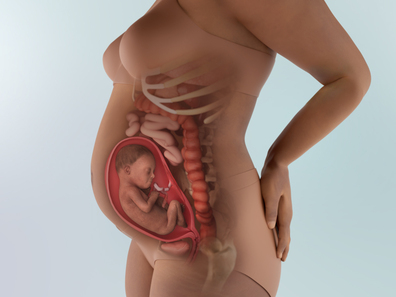
- 1. Sự phát triển của thai nhi
-
Kích thước thai nhi: 35.5cm (760g)😋💖
- Trong phổi bắt đầu hình thành các phế nang (폐포), giúp bé tập luyện cho việc hô hấp. Não bộ (뇌) tiếp tục phát triển mạnh, những vùng não phụ trách tri giác và vận động phát triển, giúp bé có khả năng kiểm soát toàn bộ cơ thể.
- Bé tự ý nắm rồi mở bàn tay, thực hiện cả những cử động rất nhỏ, và còn có thể mút ngón tay nữa! Với đôi tay xinh xắn, bé có thể sờ chạm khắp cơ thể mình, nắm lấy dây rốn (탯줄), hoặc khi tiếp xúc với ánh sáng mạnh thì dùng tay che mắt.⚡
- Tóc bé mọc nhiều hơn, tủy sống (척수), tim (심장), gan (간장) phát triển, chức năng các cơ quan nội tạng (내장기능) trở nên rõ ràng hơn. Da (피부) tăng tiết chất béo, được bao phủ bởi lớp mỡ (지방).
- Thính giác (청각) nhạy hơn, bé có thể nghe rõ giọng nói của mẹ và bố từ thế giới bên ngoài😛. Bé cũng phản ứng lại thông qua những thay đổi về nhịp tim (heartbeat), nhịp thở (breathing) và cử động (movement). Nếu âm thanh quá lớn, bé có thể giật mình (startle) - và mẹ cảm nhận được bé cử động.
- Mẹ có thể quan sát bé bằng siêu âm 3 chiều (3차원 입체 초음파), mang lại cảm giác như đang nhìn trực tiếp khuôn mặt của bé, thấy cả lượng nước ối (양수) và tay chân bé.
- Bé thường vận động nhiều nhất trong khoảng từ 7 đến 10 giờ, mẹ sẽ cảm nhận rất rõ cử động của bé (태동).
- Nếu mẹ đang mang thai bé trai, tinh hoàn của bé đã bắt đầu di chuyển xuống bìu (scrotum). Quá trình này sẽ kéo dài khoảng 2-3 tháng.
- 2. Thay đổi của cơ thể mẹ
-
Đau xương sườn và rối loạn tiêu hóa trở nên nặng hơn
Khi thai nhi phát triển, tử cung đẩy các xương sườn (갈비뼈) của mẹ, chiều cao đáy tử cung tăng lên khoảng 5cm, làm cho xương sườn thấp nhất cong ra ngoài, gây đau vùng xương sườn.
Khi cơ tử cung (자궁근육) giãn ra, mẹ có thể cảm thấy những cơn đau châm chích ở vùng bụng dưới (하복부), đồng thời tử cung chèn ép dạ dày (위장) khiến tiêu hóa kém và ép vào đại tràng (대장) làm tình trạng táo bón (변비) nặng hơn.
Đôi khi, tử cung có thể co cứng tạm thời rồi trở lại bình thường, và ở một số thai phụ, sữa non (초유) có thể rỉ ra từ bầu ngực đã to lên.
Tim và cơ hoành (횡격막) cũng bị tạo áp lực, khiến việc hô hấp trở nên khó chịu, dễ bị hụt hơi, mẹ cũng dễ cảm thấy nóng nực hơn so với những người xung quanh.
Có thể xuất hiện giãn tĩnh mạch chi dưới (하지 정맥류)
Tử cung chèn ép các tĩnh mạch ở phần thân dưới, khiến mạch máu màu xanh ở đùi hoặc bắp chân phồng lên rõ rệt.
Mẹ có thể cảm thấy chân nặng, tê rần, chỉ đi bộ một chút là chân đã nhanh mỏi, càng đứng lâu thì triệu chứng càng nặng hơn.
Hãy thường xuyên thực hiện các động tác giãn cơ nhẹ, và kê cao chân. Việc mang vớ ngăn giãn tĩnh mạch trong một khoảng thời gian nhất định cũng rất có ích.
Cơ thể nặng nề, hãy cẩn thận để không bị té ngã
Dây chằng và khớp (인대와 관절) trở nên lỏng lẻo, bụng to ra khiến trọng tâm cơ thể dồn về phía trước. Do cơ thể nặng nề và khó nhìn rõ dưới chân, nguy cơ vấp ngã, va chạm và trượt chân tăng cao.
⚠️Hãy đặc biệt cẩn thận trong phòng tắm trơn trượt hoặc trên cầu thang, nhất là vào những ngày mưa. Vì cơ thể không còn linh hoạt như trước, mẹ nên hạn chế tự lái xe và nhờ người khác hỗ trợ khi cần thiết.
- 3. Lưu ý về sức khỏe
-
Đau đầu khi mang thai, hãy tìm các phương pháp khác thay vì dùng thuốc
- Những mẹ vốn đã hay bị đau đầu trước khi mang thai thì sau khi mang thai có thể bị đau đầu thường xuyên hơn.
- Các loại thuốc đau đầu vốn dùng trước đây có thể không an toàn khi sử dụng trong thai kỳ, vì vậy hãy tìm hiểu kỹ về thuốc và trao đổi với bác sĩ. Ngoài ra, mẹ có thể tham khảo các biện pháp thay thế thuốc như massage, thiền (명상), yoga (요가), châm cứu (침) để hỗ trợ giảm đau đầu.
Bảo vệ cơ thể bằng tư thế đúng trong thai kỳ
- Ở giai đoạn này, mẹ càng cần chú ý giữ tư thế đúng vì cơ thể trở nên nặng hơn và trọng tâm thay đổi, nên rất dễ bị lệch tư thế. Hãy tránh đứng với tư thế ưỡn mông và bụng ra phía trước, hoặc đi lại với vai uốn cong về phía sau.
- Khi đứng, hãy có ý thức giữ hai vai thẳng. Chính là tư thế khi mẹ đứng tựa lưng vào tường đó. Khi ngồi, để nâng đỡ chiếc bụng nặng nề, mẹ nên đặt một chiếc gối nhỏ phía sau lưng.
- ⛔ Không khuyến khích bài tập leo cầu thang. Việc leo cầu thang gây áp lực rất lớn lên các khớp, và bụng to khiến tầm nhìn phía trước bị hạn chế, chỉ cần hụt chân trên cầu thang cũng có thể rất nguy hiểm. Với mẹ bầu thì đi bộ trên mặt phẳng được khuyến khích hơn.
Khi mẹ cười, con cũng vui
- Khoảnh khắc mẹ vui vẻ cười khúc khích, em bé cũng đang mỉm cười theo😊😊. Những cảm xúc mà mẹ cảm nhận được, thì bé đều cảm nhận trọn vẹn, từ niềm hạnh phúc cho đến những lúc mẹ căng thẳng.
- Mỗi lần mẹ cười, trí nhớ và khả năng tập trung của bé lại được cải thiện. Vì vậy, dù không có chuyện gì đặc biệt, mẹ hãy thử nhìn vào gương và mỉm cười thật tươi nhé.
Xét nghiệm thiếu máu (빈혈 검사)
- Trong tam cá nguyệt giữa, vấn đề cần đặc biệt chú ý nhất là thiếu máu. Thiếu máu ở thai phụ không hẳn do thiếu sắt (철분) tuyệt đối, mà nguyên nhân chính là do máu của mẹ bị pha loãng vì thai nhi.
- Những thai phụ có bụng ngày càng lớn nhưng cân nặng không tăng, sắc mặt nhợt nhạt và thường xuyên chóng mặt (어지러움증), nên thực hiện xét nghiệm thiếu máu.
- Nếu bị thiếu máu, cần tăng liều thuốc sắt (철분제) và đồng thời tăng cường bổ sung protein (단백질) để cải thiện tình trạng này.
Bổ sung enzyme, coenzyme và lợi khuẩn
- Trong thai kỳ, hoạt động chuyển hóa (대사활동) của thai nhi diễn ra mạnh mẽ, do đó vai trò của enzyme và coenzyme rất quan trọng. Khi thiếu enzyme hoặc coenzyme, năng lượng không được đốt cháy hiệu quả, có thể trở thành nguyên nhân gây béo phì.
- ❗ Cần bổ sung đầy đủ các thực phẩm từ đậu nành (대두식품) giàu enzyme, rau xanh và rau vàng (녹황색 채소), cũng như các coenzyme như nhóm vitamin B, magiê (마그네슘), kẽm (아연). Đồng thời, nên tăng cường bổ sung lợi khuẩn (유산균) để duy trì sự cân bằng của hệ vi khuẩn có lợi (상재균) trong cơ thể.
Theo dõi tăng cân mỗi 2-3 ngày và giữ cơ thể không bị lạnh
- Cân nặng có xu hướng tăng nhanh và đạt mức cao nhất ở giai đoạn này. Nếu thai phụ tăng cân quá mức, mỡ thừa sẽ tích tụ quá nhiều ở các cơ quanh tử cung, khiến việc sinh thường trở nên khó khăn. Nên đặt cân ở gần và theo dõi, vẽ biểu đồ cân nặng mỗi 2-3 ngày để tránh tăng cân quá mức.
- Dù thời tiết có nóng đến đâu cũng nên luôn mang tất, vào những ngày mưa hoặc gió mạnh, nếu đắp một tấm chăn mỏng lên bụng và đầu gối sẽ giúp cải thiện tuần hoàn máu (혈액순환). Khi tựa vào tường, cũng nên kê gối để tránh hơi lạnh (차가운 기운) truyền vào lưng.
Quản lý tiểu đường thai kỳ
- Nếu bị chẩn đoán mắc tiểu đường thai kỳ (gestational diabetes), cần phải thay đổi đáng kể chế độ ăn uống và cách sinh hoạt. Khoảng 85% phụ nữ mang thai bị tiểu đường thai kỳ có thể kiểm soát đường huyết bằng chế độ ăn và vận động (diet and exercise).
- Các chuyên gia khuyến nghị khẩu phần gồm khoảng 40% carbohydrate, 20% protein và 40% chất béo lành mạnh (healthy fats). Nên chọn các loại carbohydrate phức hợp (complex carbs) như ngũ cốc nguyên hạt (whole grains), các loại đậu (legumes) và rau củ giàu tinh bột (starchy veggies). ❌Tránh các loại đường đơn (simple sugars) như trong nước ngọt, nước ép và đồ tráng miệng.
- Ngoài ăn gì, thời điểm ăn cũng rất quan trọng. Hãy cố gắng duy trì 3 bữa chính cân đối và 2 bữa phụ mỗi ngày. Nếu gặp khó khăn, hãy nhờ bác sĩ giới thiệu chuyên gia dinh dưỡng (dietitian).
Cách giảm đau nhức cơ thể
- Để giảm đau cơ và đau nhức toàn thân khi mang thai, hãy nằm nghỉ, thư giãn, chườm nóng hoặc chườm lạnh lên vùng bị đau. Túi chườm lạnh (cold pack) có thể giúp giảm viêm và làm dịu cơn đau cơ cũng như đau lưng.
Để chườm nóng (apply heat), có thể dùng đệm sưởi điện (electric heating pad), túi nước nóng (hot water bottle) hoặc túi chườm có thể làm nóng trong lò vi sóng, chứa hạt lanh (flax) hoặc kiều mạch (buckwheat). Không nên chườm nóng lên vùng bụng.
- Một cách khác để giảm khó chịu là massage dành cho thai phụ (prenatal massage) - loại massage được thiết kế riêng cho nhu cầu của phụ nữ mang thai. Ngoài việc giảm đau nhức, massage còn giúp giảm sưng (swelling), cải thiện tâm trạng (mood) và giúp mẹ thư giãn. Trước khi đi massage, hãy đảm bảo đã được bác sĩ đồng ý và lựa chọn chuyên viên có đào tạo về massage thai kỳ - họ sẽ biết nên sử dụng kỹ thuật nào và tránh tác động vào những vùng nào.
- 4. Quan hệ vợ chồng khi mang thai
-
Sinh hoạt tình dục: Trong giai đoạn này, có thể thử tư thế nằm nghiêng từ phía sau (측와위). Tư thế nằm nghiêng (측와위) là khi cả bố và mẹ đều nằm nghiêng, người chồng tiếp cận từ phía sau lưng của người vợ để quan hệ. Đây là tư thế được khuyến nghị vì không gây chèn ép lên bụng của thai phụ.
👨Vai trò của chồng:
Hãy thường xuyên xoa bóp chân cho vợ
Do tuần hoàn máu ở phần thân dưới kém, chân của vợ dễ bị phù nề và mệt mỏi. Đặc biệt vào ban đêm, tình trạng sưng nề nặng hơn, thậm chí khi nặng có thể xảy ra chuột rút (경련) ở bắp chân.
Thoa lotion hoặc dầu và massage bắp chân sẽ giúp giảm triệu chứng, đồng thời giúp vợ dễ dàng đi vào giấc ngủ hơn.
Để chuẩn bị cho việc sinh nở, hãy tìm hiểu trước những việc bố có thể làm
Dù vẫn còn thời gian, nhưng khi ngày sinh đến gần, bố nên biết trước những việc mình có thể làm để hỗ trợ.
Trước hết, hãy tìm hiểu tuyến đường tối ưu nhất để di chuyển đến bệnh viện đã chọn sinh. Nếu dự định đi bằng ô tô, cần nắm rõ nên đi đường nào và khung giờ nào thường bị ùn tắc, điều này sẽ rất hữu ích trong những tình huống khẩn cấp.
Ngay cả khi đi taxi cũng tương tự. Dù có bản đồ chỉ dẫn nhưng chưa chắc đã là tuyến đường tối ưu nhất.
Ngoài ra, việc chuẩn bị ghế an toàn trên xe cho trẻ sơ sinh cũng là một ý tưởng tốt. Bố cũng nên chuẩn bị sẵn một túi đồ gồm đồ lót, đồ dùng vệ sinh cá nhân, sạc điện thoại… phòng trường hợp phải ở lại bệnh viện qua đêm.
Nếu nắm rõ cách phân biệt cơn co giả (가진통) và cơn co thật (진진통), bố sẽ có thể giúp mẹ rất nhiều vào những thời khắc quan trọng
Cơn co giả thường xuất hiện không đều và có thể biến mất khi vợ thay đổi sang tư thế thoải mái. Ngược lại, cơn co thật có tính chất đều đặn, theo thời gian sẽ ngày càng mạnh và kéo dài hơn, khoảng cách giữa các cơn cũng ngắn dần.
Khi vợ đang trải qua các cơn co, bản thân vợ rất khó tự đo khoảng cách giữa các cơn. Lúc này, nếu chồng bình tĩnh đo thời gian và giúp phân biệt giữa cơn co giả và cơn co thật, đó sẽ là sự hỗ trợ rất lớn cho vợ.
- 5. Trọng tâm thai giáo
-
Thai nhi đã nhận ra và phân biệt được giọng nói của mẹ và bố, đồng thời phản ứng lại bằng cử động thai. Nếu mỗi ngày mẹ hoặc bố dùng giọng nói điềm tĩnh, dịu dàng đọc cho thai nhi nghe những câu chuyện cổ tích hay trong khoảng 5-10 phút, thai nhi sẽ cảm thấy vô cùng hạnh phúc. Việc lựa chọn những truyện cổ tích dân gian (전래 동화) hoặc thơ thiếu nhi (동시) có nhiều nội dung đẹp và giàu ngôn từ sẽ giúp thúc đẩy sự phát triển não bộ (뇌 발달) và nuôi dưỡng tiềm năng (잠재력) của thai nhi. Khi đọc truyện cho thai nhi nghe, nếu thay tên nhân vật chính trong truyện bằng biệt danh (애칭) của bé thì câu chuyện sẽ trở thành câu chuyện cổ tích dành riêng cho chính đứa con yêu quý của mình. Dưới đây là một số truyện cổ tích phù hợp để đọc cho thai nhi trong giai đoạn này (bằng tiếng Hàn):
백만 마리 고양이(완다가그), 자장자장 엄마 품에(임동권), 지혜로운 까마귀(이솝 이야기), 커다란 사과(다다 히로시), 떡 잔치(강인희), 개구쟁이 해리(G.자이언트), 인어공주(안데르센 동화), 선녀와 나무꾼(전래동화), 아기 코끼리 넬리(브라운), 아낌없이 주는 나무(쉘 실버스타인) 등
- 6. Các thông tin cần biết khác
-
Phòng ngừa tiền sản giật (임신중독증 방지)
- Khi mắc tiền sản giật, thận (신장) và hệ mạch máu (혈관계) sẽ phải chịu gánh nặng lớn, khiến việc sinh nở bình thường (정상적인 분만) trở nên khó khăn. Nguy cơ sinh non (조산) hoặc thai chết lưu (사산) cao hơn gấp hai đến ba lần so với thai phụ bình thường.
- Khi triệu chứng trở nên nghiêm trọng và huyết áp (혈압) tăng cao, các chất như renin (레닌) và angiotensin (안지오텐신) - những chất gây co mạch - được tiết ra nhiều từ thận hoặc nhau thai (태반), làm cản trở tuần hoàn máu (혈액 순환).
- Khi đó, lượng máu chảy vào tử cung (자궁) giảm xuống, chức năng của nhau thai (태반의 기능) trong việc cung cấp oxy (산소) và dưỡng chất (영양) cho thai nhi bị suy giảm, khiến thai nhi rơi vào tình trạng thiếu oxy mạn tính (만성적인 산소결핍) và thiếu dinh dưỡng (영양부족). Điều này làm chậm phát triển thai (태아 발육 지연) và làm tăng khả năng trẻ sinh ra là trẻ non tháng, nhẹ cân (미숙아).
- Nếu tình trạng này nặng hơn nữa, có thể gây bong nhau thai sớm (태반 조기 박리), dẫn đến thai nhi tử vong trong tử cung. Ngoài ra, sự kích thích quá mức của não (뇌) và hệ thần kinh (신경계) có thể gây ra sản giật (자간증) với các cơn co giật toàn thân (전신 경련). Thai phụ có thể sùi bọt mép, mất ý thức và rơi vào trạng thái hôn mê (혼수상태). Đây là những triệu chứng xảy ra do phù não (뇌 부종) hoặc do huyết áp tăng cao làm suy giảm tuần hoàn máu não (뇌의 혈액순환). Trường hợp nặng hơn có thể dẫn đến xuất huyết não (뇌출혈) và tổn thương dây thần kinh thị giác (시신경 손상), gây mất thị lực (시력 상실).
- Tuy nhiên, nếu được phát hiện sớm và điều trị kịp thời thì có thể điều trị khỏi tới 99%, vì vậy để phát hiện sớm, việc thăm khám và kiểm tra thai định kỳ (검진) không được lơ là.
-
- 1. Sự phát triển của thai nhi
-
Kích cỡ bé khoảng 37cm, nặng khoảng 880g.
Mở mắt: Đôi mắt của bé bây giờ đã có thể mở và nhắm lại. Bé có thể phản ứng với ánh sáng: nếu bạn chiếu một đèn pin vào bụng, bạn có thể cảm nhận những chuyển động khẽ, như bé đang di chuyển hoặc rung mình.🐣
Nấc trong bụng mẹ: Những chuyển động nhỏ và đều thì rất có thể là bé đang nấc (fetal hiccups). Mỗi lần nấc thường chỉ kéo dài trong một khoảng thời gian ngắn và hoàn toàn bình thường, nên mẹ cứ thư giãn và tận hưởng cảm giác thú vị này.💗
Vị giác trên lưỡi đã phát triển hoàn thiện: Bé có thể cảm nhận vị rõ ràng hơn bao giờ hết. Tuy nhiên, thức ăn mẹ ăn không truyền ngay lập tức vào nước ối, mà cần khoảng 2 giờ để hương vị ảnh hưởng tới nước ối.
Khoảng 2 giờ sau khi mẹ ăn món cay, bé cũng sẽ cảm nhận được vị cay trong nước ối👅. Khi mẹ ăn đồ cay hoặc có vị kích thích mạnh, đôi khi bé có thể bắt đầu nấc (딸꾹질). Tuy nhiên, đồ ăn quá cay và kích thích mạnh không tốt cho tiêu hóa, cảm giác nóng rát dạ dày và tình trạng phù nề (부종) của mẹ, nên mẹ hãy chú ý hạn chế.
Cơ thể nhăn nheo trước đây đang trở nên đầy đặn hơn: Do trước đây lớp mỡ dưới da còn thiếu nên làn da của bé trông nhăn nheo như một cụ già nhỏ. Nhưng bây giờ lớp mỡ dưới da (피하지방) đang dần hình thành, khiến cơ thể bé trở nên đầy đặn hơn🍑. Các cơ cũng đang dần có độ đàn hồi (탄력).
Bé vẫn đang liên tục nuốt nước ối (양수): Nước ối mà bé nuốt sẽ đi qua thận (콩팥) rồi được thải ra ngoài dưới dạng nước tiểu💧. Chu trình này lặp lại khoảng mỗi 3 giờ một lần.
Chuẩn bị cho việc hít thở: Phổi của bé đang tạo ra chất surfactant (chất hoạt diện). Đây là một chất lỏng giúp các alveoli (phế nang - túi khí nhỏ trong phổi) luôn mở, từ đó giúp bé có thể tự thở sau khi chào đời. Nhờ sự phát triển của các phế nang, số lượng mạch máu xung quanh tăng mạnh để hấp thụ oxy và thải CO₂ cho thai nhi. 👶Lỗ mũi đã mở ra, bé có thể tự thực hiện các nhịp thở nông và thậm chí có thể phát ra âm thanh. Tuy đã phát triển đến mức có thể hoạt động như một con người nhỏ, nhưng vì các cơ quan vẫn còn chưa trưởng thành nên nếu sinh non vào thời điểm này thì gần như không thể tự sống được bên ngoài tử cung.
🎉 Con đang vui vẻ vận động (신나게 놀고 있어요)
Đôi khi bé có thể cử động mạnh đến mức khiến mẹ giật mình😆. Nhưng việc bé vận động tích cực là dấu hiệu bé khỏe mạnh, nên mẹ cứ yên tâm nhé!
- 2. Thay đổi của cơ thể mẹ
-
Bụng to hơn nên mẹ có thể cảm nhận nhiều hơn các đau nhức khi mang thai.
- Đây là điều bình thường khi tam cá nguyệt thứ ba sắp đến.
- Đai đỡ bụng (pregnancy belt / belly band) có thể hỗ trợ phần bụng và lưng dưới, giúp giảm đau vùng chậu và đau lưng. Một số loại đai quấn gọn quanh hông và nằm dưới bụng, trong khi một số loại bao quanh toàn bộ bụng và hỗ trợ từ hông đến dưới ngực.
- Một trong những cách tốt nhất để phòng tránh và giảm đau là duy trì vận động thể chất an toàn cho thai kỳ. Tập thể dục nhẹ nhàng giúp giảm nhiều triệu chứng khó chịu như táo bón, đầy hơi và đau lưng. Vận động đúng giúp kiểm soát tăng cân, tăng sức mạnh cơ, cải thiện tư thế và hỗ trợ tuần hoàn máu.
- Để giảm đau lưng và đau vùng chậu: hãy ngồi trên ghế có tựa vững, ngồi xuống khi mặc quần áo, nâng vật nặng đúng tư thế, và hạn chế đứng trong thời gian dài nếu có thể.
Đường nâu giữa bụng (임신선) trở nên đậm hơn và có thể bị chuột rút về đêm.
- Đáy tử cung lúc này cao khoảng 24~28cm khiến bụng nhô rõ. Bụng lớn lên làm trọng tâm cơ thể thay đổi, khiến việc giữ thăng bằng khó hơn và cử động trở nên vụng về. Đây là thời điểm dễ té ngã nên cần đặc biệt cẩn thận.
- Cân nặng thường tăng từ 6-7kg trở lên, gây áp lực lên đôi chân, làm cơ chân nhanh mỏi. Chân có thể bị sưng, nặng, và đôi khi bị chuột rút do tĩnh mạch đùi bị chèn ép. Triệu chứng này có xu hướng nặng hơn vào ban đêm, và việc xoa bóp nhẹ bắp chân có thể giúp giảm bớt.
- Vết rạn da màu tím (보라색 선) trong thai kỳ là thay đổi tự nhiên của da.
- Nếu mẹ thấy xuất hiện những đường rạn màu nâu tím ở bụng, ngực hoặc mông, đó là do da bị kéo giãn, khiến mạch máu dưới da bị giãn và lộ ra.
- Tình trạng này thường xảy ra nhiều hơn ở mẹ tăng cân nhanh hoặc có làn da mỏng, yếu. Sau sinh, những vết rạn này sẽ dần mờ nhạt và biến mất tự nhiên.
Lông tóc mọc nhiều, dày và khỏe hơn.
- Do ảnh hưởng từ thay đổi nội tiết tố nên nhiều nang tóc phát triển. Đây là một trong những thay đổi tích cực mà nhiều phụ nữ mang thai yêu thích.
- Tuy nhiên, song song với đó, lông ở mặt và cơ thể cũng có thể mọc nhiều hơn. Nếu điều này khiến bạn khó chịu, các phương pháp loại bỏ lông an toàn gồm waxing, nhổ, cạo hoặc threading (se chỉ). Có rất ít nghiên cứu về độ an toàn của laser, kem tẩy lông hoặc thuốc làm rụng lông trong thai kỳ, nên tránh dùng.
Hội chứng chân không yên (Restless Leg Syndrome - RLS)
- Vào 3 tháng cuối thai kỳ, một số phụ nữ có cảm giác chân như bị châm chích, ngứa ngáy, râm ran, khó chịu,... và kèm theo thôi thúc muốn cử động chân khi đang nghỉ ngơi hoặc nằm ngủ. Nếu cảm giác này giảm bớt khi bạn chuyển động, rất có thể bạn mắc RLS.
- Người ta chưa rõ lý do chính xác vì sao 20% thai phụ gặp RLS. Thiếu sắt, thiếu folate, thay đổi nội tiết tố và thay đổi tuần hoàn máu đều có thể liên quan.
- Nếu bạn có triệu chứng RLS, hãy tránh nằm trên giường quá lâu trước khi ngủ, vì càng nằm lâu triệu chứng càng nặng.
- Tin tốt là RLS sẽ biến mất sau sinh. Trong thời gian này, nên vận động nhẹ, giãn cơ, thiền, và massage để giúp giảm khó chịu. Một số phụ nữ cho biết việc bổ sung canxi, magie, hoặc sắt (dưới hướng dẫn của bác sĩ), ăn chuối,... sẽ giúp dễ ngủ hơn.
Tiểu không tự chủ (urinary incontinence)
- Thay đổi nội tiết làm các cơ vùng đáy chậu giãn ra, giảm khả năng nâng đỡ bàng quang nên nhiều thai phụ bị rò rỉ nước tiểu. Đồng thời, tăng lượng máu khiến thận tạo ra nhiều nước tiểu hơn.
- Phụ nữ trên 35 tuổi, đã từng sinh thường, hoặc thừa cân dễ gặp tình trạng này hơn. Tiền sử gia đình hoặc bệnh lý mạn tính cũng làm tăng nguy cơ.
- Tránh cà phê, trà, nước ngọt có ga và uống nước lọc sẽ giúp giảm triệu chứng. Tập bài tập cơ đáy chậu (Kegels) và ăn đủ chất xơ cũng hữu ích.
- Nếu gặp tình trạng này, hãy trao đổi với bác sĩ - họ sẽ kiểm tra xem có nhiễm trùng tiểu hay không và đưa ra hướng hỗ trợ phù hợp.
Sưng phù (Edema)
- Sưng vừa phải, đặc biệt ở bàn chân và mắt cá, là tình trạng phổ biến trong tam cá nguyệt thứ 3, xuất hiện ở khoảng 2/3 phụ nữ mang thai.
- Thay đổi nội tiết và cơ thể tự nhiên tích nước để hỗ trợ thai kỳ là nguyên nhân chủ yếu. Cuối thai kỳ, cơ thể tăng khoảng 1–1.5kg nước.
- Tử cung ngày càng lớn gây áp lực lên các tĩnh mạch, làm chậm dòng máu trở về từ chân, khiến dịch thoát ra mô gây sưng. Sưng nặng hơn khi mẹ đứng hoặc ngồi lâu.
- Để giảm sưng: nghỉ ngơi, gác chân cao, mang compression socks (vớ áp lực), uống đủ nước, ngủ nghiêng trái, massage và ăn uống lành mạnh.
- Hầu hết trường hợp sưng là bình thường, nhưng nếu sưng nhiều, đột ngột, chỉ một bên, hoặc sưng mặt và tay, cần báo bác sĩ vì có thể liên quan đến tiền sản giật (preeclampsia) hoặc huyết khối tĩnh mạch sâu (DVT).
Tăng cân
- Tăng cân quá nhiều hoặc quá ít đều có thể làm tăng nguy cơ biến chứng, nên mẹ cần theo dõi. Nếu mẹ có cân nặng bình thường trước khi mang thai và mang một thai, nên tăng khoảng 11–16kg. Nếu thiếu cân: tăng 13–18kg; nếu thừa cân: tăng 7–11kg; nếu béo phì: tăng 5–9kg (mang song thai thì mức tăng sẽ cao hơn).
- Trong tam cá nguyệt thứ 3, mẹ cần thêm khoảng 450 kcal mỗi ngày. Không được giảm cân khi đang mang thai, nhưng cũng nên tránh tăng quá nhanh. Nếu khó kiểm soát, hãy trao đổi với bác sĩ hoặc chuyên gia dinh dưỡng.
Đau vùng chậu (Pelvic pain / Pelvic girdle pain)
- Khi thai lớn, mẹ có thể cảm thấy đau nhói hoặc âm ỉ ở hông và vùng háng. Nguyên nhân là thay đổi nội tiết, tăng cân, và trọng tâm cơ thể thay đổi.
- Đai nâng bụng (pregnancy girdle / belly band) hoặc gối ôm bà bầu có thể giúp giảm đau. Khi nằm ngủ, kẹp một chiếc gối giữa hai đầu gối để giữ hông ở vị trí cân bằng.
- Nếu đau nhiều, bác sĩ có thể gợi ý vật lý trị liệu hoặc thuốc giảm đau phù hợp. Tập vận động nhẹ và nghỉ ngơi giữa các hoạt động cũng giúp giảm đau.
- 3. Lưu ý về sức khỏe
-
⚠️Tư thế ngủ thoải mái nhất là nằm nghiêng.
- Ở giai đoạn này, rất khó nằm ngửa vì bụng lớn. Nằm ngửa trong tam cá nguyệt giữa và cuối không tốt, vì tử cung lớn chèn ép tĩnh mạch chủ dọc cột sống, gây giảm tuần hoàn. Nằm nghiêng và kê một chân lên gối hoặc đặt gối giữa hai chân giúp nâng đỡ bụng và tạo cảm giác an toàn.
- Nằm sấp không tốt vì gây xoay cổ lâu, dễ đau và gây chèn ép bụng.
- Tư thế ngủ chỉ là một phần, độ cao gối và độ cứng bề mặt nằm cũng rất quan trọng. Gối quá cao làm căng cơ cổ và vai, gây đau đầu hoặc choáng. Độ cao gối thích hợp khoảng 12cm khi nằm nghiêng.
- Việc nằm trên ván cứng để giảm đau lưng là sai❌, vì không hỗ trợ đều cho cơ thể, khiến đau nặng hơn. Đệm quá mềm cũng không tốt vì không nâng đỡ được đường cong sinh lý cột sống.
Cần lựa chọn bề mặt hỗ trợ vừa phải để duy trì đường cong S tự nhiên của cột sống.
⚠️Cẩn thận với tiền sản giật, tăng huyết áp thai kỳ và triệu chứng có protein trong nước tiểu
- Các triệu chứng có thể bao gồm: tăng cân đột ngột, phù nề, giảm lượng nước tiểu,… nhưng những biểu hiện này dễ nhầm với triệu chứng thai kỳ bình thường, vì vậy không thể chỉ dựa trên triệu chứng để phát hiện. Thường bệnh được phát hiện qua xét nghiệm nước tiểu, xét nghiệm máu và đo huyết áp.
- Tiền sản giật mức độ nhẹ có thể điều trị tại nhà. Sinh non ở giai đoạn này, thai nhi rất khó sống bên ngoài tử cung, nên nếu xuất hiện tiền sản giật phải điều trị sớm.
- Tăng huyết áp được xác định khi huyết áp tâm thu ≥ 140mmHg hoặc huyết áp tâm trương ≥ 90mmHg, thường kèm đau đầu hoặc chóng mặt. Protein niệu có thể đi kèm mệt mỏi bất thường, chán ăn, lượng nước tiểu giảm và cảm giác rất khát. Nếu vượt chỉ số đó, kèm protein niệu và phù nề nặng, nên nhập viện.
- Nếu triệu chứng nhẹ, có thể nghỉ ngơi và điều chỉnh chế độ ăn tại nhà.
- Nên ngủ ít nhất 8 tiếng mỗi ngày và ngủ trưa khoảng 1 tiếng😴. Khi nghỉ ngơi, nên nằm nghiêng để tăng lưu lượng máu đến thận và nhau thai. Tránh làm việc quá sức và căng thẳng tâm lý, vì điều này làm tăng huyết áp và giảm tuần hoàn.
- Với mẹ bầu đi làm, cần đặc biệt lưu ý vì việc đi lại, đứng lâu và áp lực công việc dễ gây quá tải. Hạn chế đi lại nhiều, hạn chế các hoạt động phải dùng lực ở bụng dưới. Nên tranh thủ nghỉ ngơi, kê chân lên ghế hoặc nằm thư giãn 5–10 phút trong giờ nghỉ.
⚠️Chú ý trong ăn uống và bổ sung dưỡng chất
- Các dưỡng chất tham gia tạo hồng cầu gồm cobalt, axit folic, vitamin B6 và vitamin B12. Cobalt là dưỡng chất không thể thiếu trong tế bào hồng cầu, còn axit folic, vitamin B6 và B12 cần thiết cho việc hình thành và tái tạo hồng cầu. Nên tích cực bổ sung các loại thực phẩm như gan, nghêu, hàu🦪, sò lụa, và thịt nạc.
- Lưu ý khi dùng gia vị. Ở giai đoạn này cần đặc biệt hạn chế muối🧂. Ăn nhiều muối làm tăng cảm giác khát, dẫn đến giữ nước gây phù nề và làm tăng cân. Chẳng hạn món ăn Trung Quốc thường khiến khát nước vì trong đó có nhiều gia vị. Khi nấu ăn tại nhà cũng cần lưu ý rằng gia vị công nghiệp chứa nhiều hóa chất và natri.
- 4. Quan hệ vợ chồng khi mang thai
-
Quan hệ tình dục: Tư thế người chồng quỳ và người vợ ngồi lên trên là tư thế (전좌위) giúp mẹ bầu chủ động điều chỉnh độ sâu, tạo cảm giác thoải mái và an toàn hơn.
👨Vai trò của chồng
Giúp giảm đau lưng cho vợ bằng massage:
Đau lưng là triệu chứng rất thường gặp ở phụ nữ mang thai trong giai đoạn giữa của thai kỳ. Hãy thử giúp vợ giảm đau bằng massage.
- Để vợ nằm nghiêng, đặt gối giữa hai chân và dưới tay để giữ cho cột sống được thẳng.
- Xòe lòng bàn tay và đẩy theo chiều lên xuống dọc hai bên sống lưng.
- Dùng ngón cái ấn nhẹ và massage vùng cơ quanh cột sống theo chiều lên xuống xen kẽ.
- Dùng ngón cái day tròn vùng cơ quanh hông và khớp háng.
- Lặp lại các động tác trên trong khoảng 10–15 phút với lực vừa phải, sao cho vợ không bị đau.
💖Một lời nói dịu dàng có thể trở thành sức mạnh lớn nhất🥰
Khi mang thai, cơ thể thay đổi rất nhiều. Có những lúc mẹ nhìn vào gương và không tránh khỏi cảm giác bối rối, lo lắng. Những lúc như vậy, một lời nói của bố có thể tạo ra sự khác biệt rất lớn.
Dù bố có thể vô tình nói rằng mẹ đã tăng cân nhiều, nhưng đối với mẹ, những lời như vậy có thể làm tổn thương sâu sắc. Vì vậy, trong khoảng thời gian ở bên cạnh mẹ, 🤗hãy dùng những lời nói đẹp và sự quan tâm ấm áp để giúp mẹ cảm thấy yên tâm và được yêu thương.
- 5. Trọng tâm thai giáo
-
Bồi dưỡng thính giác và cảm nhận thông qua trải nghiệm âm nhạc đa dạng. Đây là giai đoạn các giác quan và chức năng não phát triển mạnh. Có thể cho thai nhi nghe dân ca, bài hát nhẹ nhàng hoặc âm thanh nhạc cụ có nhịp điệu để phát triển cảm nhận âm nhạc. Với người bố bận rộn, có thể ghi âm giọng nói hoặc bài hát, sau đó cho mẹ và bé nghe lại, giúp thai nhi ghi nhớ giọng của bố.
- 6. Các thông tin cần biết khác
-
💡Tìm hiểu cách phòng và điều trị rôm sảy (땀띠) khi mang thai
- Nếu mẹ vốn là người đổ mồ hôi nhiều, thì trong thai kỳ càng dễ bị rôm sảy.
- Do thay đổi hormone và tăng lượng máu, cơ thể trở nên nhạy cảm với sự thay đổi nhiệt độ. Cộng với cân nặng và vóc dáng thay đổi, chỉ cần vận động nhẹ cũng có thể đổ mồ hôi rất nhiều.
- Rôm sảy thường xuất hiện dưới bụng hoặc phần ngực. Nếu ngứa mà gãi, hoặc không điều trị, có thể dẫn đến nhiễm khuẩn. Vì vậy hãy trao đổi với bác sĩ để được kê thuốc an toàn.
- Cố gắng tránh môi trường nóng🔥, nên tắm thường xuyên, và có thể dùng túi đá chườm mát để giảm khó chịu tạm thời.
🛍️Chuẩn bị mua sắm cho tam cá nguyệt thứ ba.
- Bạn sắp bước vào giai đoạn cuối của thai kỳ. Một số vật dụng cần thiết sẽ giúp giai đoạn cuối và thời gian sau sinh trở nên dễ dàng hơn. Kiểm tra tủ đồ và chuẩn bị áo ngực cho con bú (nursing bras) hoặc áo ba lỗ cho con bú (nursing camis), một chiếc áo choàng mềm mại và quần rộng thoải mái cho vài tuần đầu sau sinh.
🧘♀️Bắt đầu tập Kegel (bài tập cơ sàn chậu - Kegel exercises).
- Bài tập Kegel giúp giảm rò rỉ nước tiểu trước và sau sinh, giảm nguy cơ trĩ, đồng thời tăng độ săn chắc của cơ vùng âm đạo, giúp đời sống tình dục thoải mái hơn.
- 🎯Cách tập Kegel: Hãy tưởng tượng bạn đang cố gắng ngăn mình xì hơi và ngưng tiểu cùng lúc. Hoặc tưởng tượng bạn đang ngồi trên một viên bi nhỏ và cố “kéo” nó lên bên trong âm đạo - cảm giác sẽ giống như bạn đang siết và nâng cơ sàn chậu. Lưu ý đừng hóp bụng, đừng siết đùi, đừng siết mông và đừng nín thở.
- Tập đều đặn mỗi ngày vài phút có thể mang lại hiệu quả rõ rệt. Bắt đầu từ từ, tập vài lần mỗi đợt rồi tăng dần khi cảm thấy cơ khỏe hơn. Tuy nhiên, Kegel chỉ là một phần trong việc bảo vệ cơ sàn chậu. Nếu bạn lo lắng về tình trạng cơ sàn chậu, hãy trao đổi với bác sĩ để được biết thêm thông tin.
-
- 1. Sự phát triển của thai nhi
-
Em bé dài khoảng 38cm, nặng khoảng 1kg.😇
- Não bộ phát triển hơn, số lượng mô não tăng lên và các nếp gấp đặc trưng bắt đầu hình thành, dần tạo ra hình dạng bộ não nhăn quen thuộc.
- Càng nhiều nếp gấp não xuất hiện, càng có nhiều tế bào thần kinh được tạo ra. Vỏ não (대뇌피질) phát triển, giúp bé có khả năng cảm nhận và ghi nhớ. Ngoài ra, bé cũng bắt đầu có khả năng duy trì nhiệt độ cơ thể và điều hòa nhịp thở.
- Ở giai đoạn này, việc kích thích não bộ của thai nhi thông qua nhiều phương pháp khác nhau là rất tốt.
- Mỗi khi mẹ vận động nhẹ, trong nước ối xuất hiện những dao động ổn định, bé sẽ nhận được cảm giác dễ chịu, giúp hỗ trợ phát triển não bộ của bé.
- Bé có thể cảm nhận được những gì chạm vào da bé ở mức độ nào đó👣, như cảm giác đau, cảm giác dễ chịu, cảm giác lạnh.
- Bé có thể nằm mơ😴. Khi chúng ta mơ, nhãn cầu chuyển động rất nhanh phía sau mí mắt. Giai đoạn này được gọi là giấc ngủ REM (렘 수면). Tương tự như người lớn, em bé đang trải qua giai đoạn giấc ngủ REM trong tử cung. Điều này có nghĩa là bé cũng đang mơ.🌙
- Thính giác đã phát triển đều đặn trong suốt thời gian qua và đến giai đoạn này gần như hoàn thiện. Bé có thể căng người hoặc giật mình trước những âm thanh lạ từ bên ngoài cơ thể mẹ. Bé không thích😌 những âm thanh giận dữ hoặc tiếng ồn lớn, và thích âm nhạc nhẹ nhàng hoặc giọng nói của mẹ.💗
- Thị giác cũng phát triển, nên khi có ánh sáng mạnh chiếu từ bên ngoài, bé có phản ứng giật mình hoặc co lại.
- Nhịp tim của bé thay đổi theo thời gian. Khoảng tuần 5–6, khi tim bắt đầu hoạt động, nhịp tim khoảng 110 nhịp/phút (bpm – beats per minute). Đến tuần 9–10, nhịp tim tăng lên khoảng 170 bpm. Hiện tại, nhịp tim đã giảm xuống khoảng 140 bpm và sẽ vào khoảng 130 bpm khi chào đời.👶
- Đây vẫn là tốc độ nhanh hơn nhiều so với nhịp tim của bạn (khoảng 80–85 bpm), bởi vì trái tim của em bé rất nhỏ nên lượng máu bơm ra ít, bù lại bằng cách đập nhanh hơn. Điều này cũng giúp giữ ấm cho cơ thể bé.
- Nhịp tim của bé có thể nghe được bằng ống nghe (stethoscope)🩺, người khác có thể nghe được bằng cách tựa tai lên bụng bạn, nhưng sẽ hơi khó để tìm đúng vị trí.
- 2. Thay đổi của cơ thể mẹ
-
Tử cung lúc này đã nâng lên đến khoảng giữa rốn và vùng thượng vị nên có thể gây cảm giác đầy tức do dạ dày và tim bị chèn ép🤰. Các triệu chứng khó chịu như tim đập nhanh và nóng rát dạ dày (가슴이 두근거리고 위가 쓰림) trở nên rõ rệt hơn. Vào buổi tối, chân và bàn chân có thể bị phù, núm vú cũng trở nên sẫm màu hơn. Các cử động cơ thể trở nên vụng về hơn, bụng ngày càng lớn khiến vùng bụng dễ bị ngứa. Vào mùa lạnh, vùng ngực có thể bị khô và bong các mảng da.
🌼 Bụng thỉnh thoảng bị căng cứng
- Thỉnh thoảng bạn cảm thấy bụng căng cứng, hiện tượng này còn được gọi là cơn gò sinh lý (가진통 - Braxton Hicks). Đây là phản ứng bình thường khi cơ thể mẹ đang bắt đầu chuẩn bị trước cho quá trình sinh nở, và càng về sau sẽ xuất hiện thường xuyên hơn.
- Khi căng thẳng hoặc đứng lâu ở một tư thế gây mệt mỏi, cơn gò có thể nặng hơn. Tuy nhiên, đa số trường hợp chỉ cần nằm nghỉ ngơi thư giãn là sẽ nhanh chóng giảm bớt.
- Nhưng nếu cơn gò xuất hiện hơn 6 lần trong 1 giờ, có khả năng đây là dấu hiệu chuyển dạ sớm, vì vậy cần tìm đến bác sĩ ngay.
🌼 Hay quên nhiều hơn
- Khoảng 80% phụ nữ mang thai trải qua tình trạng hay quên trong thai kỳ.😵
- Dù có nhiều nghiên cứu được tiến hành, nhưng nguyên nhân chính xác vẫn chưa được xác định.
- Có phân tích cho rằng đây là ảnh hưởng của hormone. Một phân tích khác cho rằng từ khi mang thai, một phần não của người mẹ được ưu tiên tập trung cho việc liên quan đến em bé, khiến khả năng chú ý vào những việc khác giảm đi.
- Điều quan trọng nhất là tình trạng này không chỉ xảy ra riêng với bạn, và đây hoàn toàn là hiện tượng bình thường.
- Đừng tự trách mình hay căng thẳng vì việc quên trước quên sau. Bạn có thể ghi chú và cài báo thức để nhắc nhở mình.
🌼 Đau thần kinh tọa (좌골신경통), có thể giảm bằng chườm ấm và giãn cơ
- Từ khoảng tháng thứ 6 trở đi, có thể xuất hiện cơn đau từ thắt lưng lan xuống mông, gọi là đau thần kinh tọa (좌골신경통). Nếu đau nặng hơn, cơn đau có thể lan xuống chân, đầu gối và gót chân.
- Vì khi em bé và tử cung lớn hơn, chúng tạo áp lực lên dây thần kinh tọa nằm ở vùng cột sống dưới.
- Ngoài ra, khi cơ thể thay đổi trọng tâm để giữ thăng bằng, mẹ thường vô thức đẩy khung chậu ra phía trước, khiến áp lực lên lưng tăng và dây thần kinh tọa càng bị chèn ép, gây đau nhiều hơn.
- 💡Có thể giảm đau bằng chườm ấm, tắm nước ấm, tập giãn cơ, hoặc sử dụng đai nâng hỗ trợ vùng chậu. Tuy nhiên, nếu đau quá nhiều, cần điều trị bằng vật lý trị liệu hoặc dùng thuốc theo chỉ định bác sĩ.
🌼 Triệu chứng sưng nhẹ và chuột rút
- Mắt cá chân, bàn chân và mặt của bạn có thể bị sưng nhẹ, đặc biệt là khi thời tiết nóng. Điều này có thể do cơ thể giữ nước (water retention), nhưng cũng nên đi kiểm tra để loại trừ nguy cơ tiền sản giật. Đây là một tình trạng mà bạn có thể cảm thấy hoàn toàn bình thường, nhưng huyết áp có thể tăng rất cao trong thời gian rất ngắn.
- Chuột rút trong thai kỳ xuất hiện nhiều hơn ở tam cá nguyệt thứ ba. Nguyên nhân là do trọng lượng cơ thể tăng, hoặc thiếu một số vitamin, hoặc ít vận động. Chuột rút thường tạm thời và cải thiện khi bạn thay đổi tư thế, uống nước hoặc vận động nhẹ. Nếu đau kéo dài hoặc dữ dội, hãy nói với bác sĩ để được hướng dẫn phù hợp.
🌼 Trĩ
- Nếu thấy có máu kèm phân, có thể do trĩ. Trĩ trong thai kỳ rất phổ biến do táo bón, tử cung chèn ép tĩnh mạch, và thay đổi hormone.
- Uống nước nhiều, ăn chất xơ, vận động sẽ giúp cải thiện. Nếu táo bón kéo dài → trao đổi với bác sĩ, có thể được khuyên dùng thuốc làm mềm phân hoặc magnesium an toàn cho thai kỳ.
- Nên báo với bác sĩ nếu có chảy máu hậu môn thường xuyên để loại trừ nguyên nhân khác.
🌼 Giấc mơ kỳ lạ
- Thay đổi hormone và giấc ngủ gián đoạn khiến bạn có những giấc mơ sống động, mạnh mẽ hoặc kỳ lạ🌙. Những giấc mơ này phản ánh sự hồi hộp, lo lắng hoặc mong đợi của bạn về sinh nở và làm mẹ.🤰
- Tăng lưu lượng máu đến vùng sinh dục trong tam cá nguyệt cuối cũng có thể làm tăng giấc mơ liên quan đến tình dục - hoàn toàn bình thường.
🌼 Phát ban trong thai kỳ
- Phát ban có thể do chàm (eczema), viêm da tiếp xúc (contact dermatitis), hoặc nhiễm trùng. Ngoài ra, một số mẹ có thể bị atopic eruption of pregnancy - phát ban ngứa ở thân, tay, chân.
- Trường hợp hiếm gặp hơn là PUPPP (pruritic urticarial papules and plaques of pregnancy): ngứa dữ dội, nhưng không gây hại cho bé. Điều trị có thể gồm thuốc bôi corticosteroid hoặc thuốc kháng histamine. Tuy nhiên, ⛔không được tự ý dùng thuốc khi chưa hỏi bác sĩ⚠️.
🌼 Chảy sữa non
- Ở tam cá nguyệt thứ ba, bạn có thể thấy vệt dịch vàng nhạt trong áo lót. Đây là sữa non (colostrum) – rất giàu kháng thể và dinh dưỡng.👶
- Không phải ai cũng bị rỉ sữa non, điều này hoàn toàn bình thường.
- Nếu khó chịu, hãy dùng miếng lót sữa (nursing pads).
- 3. Lưu ý về sức khỏe
-
📌Người có nhóm máu Rh âm tính (Rh 음성) cần tiêm globulin miễn dịch.
Sản phụ có Rh âm tính sẽ được tiêm globulin miễn dịch vào thời điểm này.
Sau khi sinh, trong vòng 48 giờ, cần tiêm bổ sung lần nữa.
Hạn chế muối trong ăn uống bằng các cách sau:
- Giảm lượng muối và sử dụng vị chua từ giấm, chanh để tăng vị ngon khi ăn.
- Nấu nước dùng từ tảo bẹ (다시마) hoặc cá cơm khô (멸치), để trong tủ lạnh dùng dần, giúp món ăn vẫn ngon dù nêm nhạt.
- Không cho nước sốt hay xì dầu (간장) trực tiếp lên món ăn, mà cho ra đĩa nhỏ để chấm.
- Tăng cường sử dụng gừng (생강), rong biển khô (김), hạt mè, hạt vừng.
- Khi nấu canh tương (된장국), giảm lượng nước và tăng lượng cái để hương vị đậm hơn dù ít muối.
- Thông thường ngủ trưa quá nhiều dễ làm tăng cân, nhưng nếu ngủ trưa hợp lý thì lại giúp kiểm soát cân nặng tốt. Ngủ trưa khoảng 1 giờ vào thời điểm dễ đói sẽ giúp giảm cảm giác thèm ăn.
📌Tiêm phòng ho gà (백일해), cả em bé và gia đình đều nên tiêm.
- Ho gà (백일해) là bệnh nhiễm trùng đường hô hấp do vi khuẩn gây ra. Ở giai đoạn đầu, triệu chứng giống cảm lạnh như chảy nước mũi, hắt hơi, sốt nhẹ và ho nhẹ, sau đó ho sẽ nặng dần. Sau 1–2 tuần, cơn ho nhanh và dồn dập sẽ xuất hiện.
- Có 76–86% trường hợp trẻ sơ sinh mắc ho gà là do lây từ người trong gia đình như mẹ, bố, ông bà. Khi trẻ sơ sinh mắc ho gà, có nguy cơ gặp biến chứng như viêm phổi do khó thở, co giật do thiếu oxy, tổn thương não, và trong trường hợp nặng có thể dẫn đến tử vong.
- Trẻ sơ sinh chưa có khả năng miễn dịch với ho gà trước khi được tiêm phòng. Vì vậy, mẹ cần tiêm vắc xin trong thai kỳ để truyền kháng thể sang cho thai nhi, giúp trẻ khi sinh ra đã có sẵn miễn dịch.
Khuyến nghị tiêm phòng trong mỗi lần mang thai, vào khoảng 27–36 tuần (bác sĩ sẽ đề xuất tiêm vào khoảng tuần thứ 28 khi mẹ đi khám thai định kỳ).
- Ngoài ra, những người thường xuyên tiếp xúc với trẻ sơ sinh, như gia đình, cũng nên tiêm vào thời điểm gần sinh (khoảng tuần thứ 37).
📌Phòng tránh sinh non (조산 방지)
- Thai nhi ở giai đoạn này vẫn phù hợp phát triển trong bụng mẹ, nên nếu sinh non thì khả năng sống sót kém. Tỷ lệ sống của trẻ sinh ở tuần 28 hiện khoảng 90%. Vì vậy ⚠️cần phòng ngừa sinh non cẩn thận.
- Trong các dấu hiệu sinh non, nếu có các cơn co thắt tử cung đều đặn và đau kèm theo hiện tượng cổ tử cung mở hoặc mỏng trước 37 tuần, điều này được gọi là chuyển dạ sớm (조기진통). Nếu bạn cảm thấy mình có dấu hiệu này, hãy nhanh chóng đến bệnh viện.
-Tuy nhiên, trong số những người nhập viện vì nghi chuyển dạ sớm, 30% sẽ tự hết triệu chứng và 50% sẽ không bị sinh non. Vì vậy, khi nghi ngờ chuyển dạ sớm, khả năng an toàn vẫn rất lớn, điều này mẹ cần biết để yên tâm hơn.
- Hạn chế căng thẳng, nghỉ ngơi xen giữa các công việc nhẹ để không bị quá sức.
- Việc nhà nên có sự hỗ trợ tích cực từ chồng. Đặc biệt việc gấp chăn mền cất lên cao nên để chồng làm, vì động tác cúi xuống rồi nâng lên hoặc đưa lên vị trí cao dễ gây căng cơ bụng và đau lưng.
- Không để bụng bị lạnh vì dễ kích thích co bóp tử cung, dẫn đến sinh non.
- Cần đặt các miếng lót chống trơn trượt trong nhà tắm để tránh té ngã, vì ngã có thể gây tổn hại nghiêm trọng cho cả mẹ và bé.
- Tránh mang vật nặng, tránh ngồi xổm lâu, và tránh đứng quá lâu. Khi đi xe, nên ngồi hàng ghế sau để giảm chấn động khi phanh gấp.
📌Tiêm ngừa RSV (respiratory syncytial virus)
- RSV là một loại virus phổ biến có thể gây nhiễm trùng phổi ở trẻ sơ sinh, gọi là viêm tiểu phế quản (bronchiolitis). Tình trạng này có thể khiến trẻ khó thở và khó bú.
- NHS khuyến nghị tiêm vắc xin RSV vào khoảng tuần thai thứ 28. Vắc xin vẫn có thể được tiêm muộn hơn, cho đến trước khi bạn chuyển dạ. Việc tiêm vắc xin có thể giảm 70% nguy cơ trẻ bị viêm tiểu phế quản nặng trong 6 tháng đầu đời.
- Kháng thể bạn nhận được từ vắc xin sẽ truyền sang em bé qua nhau thai, giúp bảo vệ trẻ ngay từ khi chào đời.
📌Ngăn ngừa vi khuẩn có hại cho thai nhi:
- Rửa tay thường xuyên bằng xà phòng và nước trong ít nhất 20 giây, đặc biệt khi bạn tiếp xúc với trẻ nhỏ hoặc thay tã, vì có thể mang virus CMV (cytomegalovirus).
- ⭐Nếu bạn nuôi mèo, hãy đeo găng tay khi dọn khay vệ sinh cho mèo, hoặc nhờ người khác làm giúp. Phân mèo có thể chứa vi khuẩn gây nhiễm toxoplasmosis, rất nguy hiểm. Bạn cũng nên đeo găng tay khi làm vườn, phòng trường hợp tiếp xúc với phân động vật.
- Nếu bạn chưa từng bị thủy đậu (chickenpox), hãy báo với bác sĩ nếu bạn tiếp xúc với người có thể đang lây bệnh. Thủy đậu có thể lây 2 ngày trước khi xuất hiện nốt mụn nước cho đến khi tất cả các nốt đều đóng vảy khô (thường khoảng 5 ngày sau khi xuất hiện mụn nước). Tránh tiếp xúc với người bị thủy đậu cho đến khi họ không còn nốt mới hoặc mài ướt.
- 4. Quan hệ vợ chồng khi mang thai
-
Quan hệ tình dục: Cổ tử cung (자궁경부) và âm đạo trở nên mềm hơn, độ axit trong âm đạo giảm và dịch tiết tăng, đây là quá trình chuẩn bị cho sinh nở. Vì chỉ cần kích thích nhẹ cũng có thể gây tổn thương hoặc kích thích co tử cung, nên cần giảm tần suất quan hệ và chọn tư thế không gây áp lực lên bụng, hạn chế độ sâu khi quan hệ để tránh nguy cơ sinh non.
👨Vai trò của chồng:
Chăm sóc vợ nhiều hơn, đặc biệt khi vợ có triệu chứng hay quên trước quên sau.
- Trước khi mang thai, vợ bạn vốn rất cẩn thận và thậm chí còn chăm sóc bạn nhiều hơn. Nhưng dạo gần đây, cô ấy có thể hay quên nhiều hơn bình thường.
- Ngoài ra, chứng hay quên chưa từng có trước đây có thể ảnh hưởng đến công việc hay sinh hoạt khiến cô ấy bị căng thẳng.
- Trong lúc này tuyệt đối không được nổi giận hay càu nhàu với vợ! Hãy luôn để ý xung quanh xem điện thoại, chìa khóa, ví của vợ có bị để quên ở đâu đó hay không. Và nếu vợ cảm thấy bối rối thì hãy nở nụ cười trìu mến nói “không sao đâu”.
Nuôi con bằng sữa mẹ (모유 수유), cần sự thấu hiểu và ủng hộ, không phải sự ép buộc.
- Nuôi con bằng sữa mẹ rất tốt, nhưng trên thực tế không phải tất cả các sản phụ đều có thể nuôi con bằng sữa mẹ. Bởi vì kinh nghiệm mang thai, độ tuổi, và tất cả những gì người mẹ đã trải qua trong thời kỳ mang thai đều có thể ảnh hưởng đến lượng sữa.
- Trong trường hợp gặp khó khăn khi nuôi con bằng sữa mẹ, đừng ép buộc vợ phải tiếp tục. Điều đó có thể khiến vợ trở nên mệt mỏi và căng thẳng nhiều hơn.
- Sự phát triển của em bé phụ thuộc vào sự tương tác tình cảm thông qua tiếp xúc da giữa mẹ và bố, giao tiếp qua ánh mắt. Vì vậy, không có lý do gì để mối quan hệ giữa hai vợ chồng trở nên xa cách chỉ vì vấn đề nuôi con bằng sữa mẹ.
- Dù trong hoàn cảnh nào, hãy luôn tin tưởng và ủng hộ vợ nhé.
- 5. Trọng tâm thai giáo
-
Hãy cho bé nghe nhiều âm thanh khác nhau với cao độ và nhịp điệu đa dạng.🎵
Ở giai đoạn này, thai nhi có thể phân biệt giọng nói của các thành viên trong gia đình và phản ứng khác nhau với từng người. Vì vậy, khi đọc sách truyện, mẹ nên đọc một cách sinh động, có nhấn nhá. Có thể nói rằng tất cả những gì mẹ nhìn, nghe, và cảm nhận đều trở thành thai giáo trong thời điểm này (엄마가 보고 듣고 느끼는 것이 모두 태교가 되는 시기라고 할 수 있습니다 😊😊).
- 6. Các thông tin cần biết khác
-
Lập kế hoạch mua đồ dùng cần thiết
- Đa số mẹ bầu thường chi tiêu quá nhiều khi mua sắm trước sinh. Lý do là vì đồ cho em bé rất dễ thương, khiến mẹ khó kiềm lòng. Nếu mua quá nhiều theo cảm tính, có thể sẽ có những món gần như không dùng đến và phải chuyển cho người khác sau này.
- Để chỉ mua những thứ thật sự cần thiết, hãy tham khảo lời khuyên từ những mẹ vừa sinh gần đây để lập danh sách hợp lý. Trẻ sơ sinh lớn nhanh, nên nhiều đồ rất nhanh trở nên không vừa. Vì vậy, thay vì chỉ mua đồ mới, mẹ cũng có thể cân nhắc việc nhận đồ từ người quen.
🌸Gợi ý danh sách đồ cần mua:
1️⃣ 의류 (quần áo)
배냇저고리 3벌: áo sơ sinh 3 chiếc, loại thiết kế đơn giản bằng cotton
배냇가운 2벌: áo liền mặc ở nhà cho trẻ sơ sinh 2 chiếc, loại đơn giản bằng cotton
보낭 1벌: túi ngủ 1 cái, loại mở khóa kéo có thể xòe thành hình vuông
천 기저귀 20장: tã vải 20 miếng, loại cotton đơn giản
기저귀 커버 2개: vỏ tã 2 cái, kiểm tra khả năng chống thấm và thông thoáng
턱받이 2개: yếm thấm 2 cái, chọn chất liệu thấm hút tốt
손싸개, 발싸개 각 1세트: bao tay và bao chân mỗi loại 1 bộ, mềm mại và giữ ấm tốt
모자 1개: mũ sơ sinh 1 cái, chất liệu mềm, ít họa tiết
2️⃣ Vật dụng khi ngủ
속싸개 2벌: khăn quấn trong 2 chiếc, chất cotton hoặc chất liệu nhung mềm
겉싸개 1벌: khăn quấn ngoài 1 chiếc, nhẹ, đường may chắc
담요 1벌: chăn mỏng 1 cái, nhẹ và giữ ấm tốt
이불세트, 요 각 1장: chăn ngủ và đệm mỏng mỗi loại 1 chiếc, dễ giặt và màu sắc dịu nhẹ
3️⃣ Đồ dùng cho bú
큰 우유병 5개: bình sữa lớn 5 cái, bền và dễ cầm
작은 우유병 3개: bình sữa nhỏ 3 cái, bền và dễ cầm
젖꼭지 3개: núm vú bình 3 cái, mềm và đàn hồi tốt
우유병 세척솔 1개: cọ rửa bình 1 cái, phần đầu có miếng mút và thân có chổi
소독기 세트 1개: bộ khử trùng 1 bộ, nồi đủ lớn và sạch sẽ
유축기 1개: máy hút sữa 1 máy, dễ vệ sinh và khó vỡ
분유 케이스 1개: hộp chia sữa bột 1 cái, bền và nên chọn loại từ 5 ngăn trở lên
-
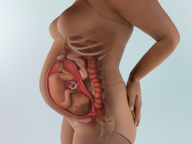
- 1. Sự phát triển của thai nhi
-
- Kích thước thai nhi khoảng 39cm, nặng 1.3kg😊. Từ giai đoạn này cho đến khi chào đời, trong khoảng 11 tuần còn lại, cân nặng của bé sẽ tăng lên hơn gấp đôi.
- Đôi mắt của bé đã hoàn thiện, vì vậy bé có thể nhìn về phía trước và bắt đầu tập trung tiêu điểm để quan sát xung quanh. Bé thậm chí còn biết chớp mắt khi đang ở trong bụng mẹ.
- Bé đang tích lũy mỡ trắng (흰색 지방) dưới da - đây là loại mỡ đóng vai trò là nguồn năng lượng cho cơ thể. Khác với mỡ nâu (갈색 지방) có tác dụng giữ ấm và điều hòa thân nhiệt, mỡ trắng giúp cung cấp năng lượng cần thiết cho hoạt động của bé.
- Khi lượng mỡ dưới da (피하지방) tăng lên, làn da nhăn nheo của bé dần trở nên mịn và cơ thể trông đầy đặn hơn. Đến khi chào đời, bé sẽ có đôi tay và thân người tròn trịa, đáng yêu.
- Bé phản ứng với âm thanh nhiều hơn, có thể cử động mạnh và đôi khi đá mạnh vào thành tử cung khiến mẹ cảm nhận rõ rệt.😄
- Kích thước não của bé tăng lên đáng kể. Để phù hợp với hộp sọ (두개골), não phát triển theo dạng gấp nếp giống như hình quả óc chó, tạo nên các rãnh và nếp gấp đặc trưng của bộ não người.
- Xương của bé đang hấp thụ rất nhiều canxi để trở nên cứng cáp hơn, vì vậy mẹ hãy nhớ uống sữa🍼🍼🍼 hoặc bổ sung từ các nguồn canxi khác như phô mai, sữa chua, hoặc nước cam tăng cường canxi (enriched orange juice). Khoảng 250mg canxi được tích lũy vào xương của bé mỗi ngày.
- 2. Thay đổi của cơ thể mẹ
-
Sạm da ở nhũ hoa, đường giữa bụng có thể rõ hơn, tử cung to đẩy lên phía phổi → gây khó thở, đau lưng – đau hông, dễ mệt mỏi, sưng phù ở tay – chân – mặt, cuối ngày sưng nhẹ → bình thường, sưng từ buổi sáng và không giảm → có thể là dấu hiệu tiền sản giật (임신중독증) → cần đi khám ngay.
👶 Cảm nhận cử động thai nhi nhiều hơn
- Khi bước vào tam cá nguyệt cuối, mẹ sẽ cảm nhận thai máy rõ ràng hơn. Bé thường hoạt động mạnh nhất sau khi mẹ ăn và nằm thư giãn. Nên đếm số lần bé cử động (đạp, xoay, đổi tư thế) trong 1-2 giờ.
- Nếu dưới 10 lần, có thể bé đang ngủ → mẹ hãy đổi tư thế sang nằm, ngồi hoặc ăn nhẹ rồi đếm lại. Nếu vẫn dưới 10 lần, mẹ cần trao đổi với bác sĩ khi khám.
🤰 Sữa non có thể chảy sớm
- Ở một số mẹ, sữa non (초유) có thể chảy ra sớm. Sữa non (초유) có màu vàng nhạt, đặc, giàu protein, và ít chất béo, đường hơn sữa mẹ về sau. Bé hấp thu rất tốt, là nguồn dinh dưỡng đầu tiên tối ưu sau sinh.
✨ Chóng mặt (Lightheadedness)
- Hệ tim mạch thay đổi nhiều trong thai kỳ, nhịp tim tăng, tim bơm nhiều máu hơn mỗi phút và thể tích máu tăng lên. Tử cung lớn cũng gây chèn ép tĩnh mạch và giảm tuần hoàn phần dưới cơ thể.
- Thông thường cơ thể sẽ điều chỉnh được, nhưng đôi khi không kịp, khiến mẹ cảm thấy chóng mặt, hoa mắt hoặc thậm chí ngất.
- Để hạn chế, nên ăn uống đều, tránh nóng, không đứng dậy đột ngột, không nằm ngửa lâu, không vận động quá sức. Hãy liên hệ bác sĩ nếu tình trạng chóng mặt kéo dài hoặc lặp lại.
- 3. Lưu ý về sức khỏe
-
Khám sức khỏe định kỳ 2 tuần 1 lần
- Từ tuần 28-29 trở đi, mẹ sẽ khám thai định kỳ 2 tuần một lần, do nguy cơ các biến chứng thai kỳ như tiền sản giật (임신중독증) có thể tăng lên.
Cũng giống như giai đoạn đầu thai kỳ, mẹ sẽ được xét nghiệm nước tiểu, đo cân nặng, đo huyết áp, khám lâm sàng ngoại trú, và siêu âm Doppler (도플러 초음파).
- Lúc này, 🤰mẹ bầu nên thông báo rõ ràng tình trạng cơ thể cho bác sĩ, bao gồm tình trạng ra máu, cơn gò tử cung, hay dấu hiệu đau chuyển dạ.
- Khi ngày em bé chào đời đến gần, bác sĩ chuyên khoa sẽ kiểm tra bằng siêu âm tình trạng tử cung, vị trí thai nhi, sự phát triển của thai, tình trạng cổ tử cung, kích thước đường sinh, lượng nước ối, và cả cử động thai.
Chú ý nước ối (양수) có thể bị rỉ
- Gần đến ngày sinh, lượng dịch tiết âm đạo tăng lên. Vì vậy mẹ có thể nhầm lẫn nước ối rỉ với dịch thông thường. Đặc điểm của nước ối là chảy ra dù không rặn hoặc dùng sức, và chảy nhiều hơn khi đi lại hoặc đứng.
- Nếu thấy nghi ngờ nước ối bị rỉ, mẹ cần đến bệnh viện kiểm tra ngay để đảm bảo an toàn cho cả mẹ và bé.
Nếu có triệu chứng nhiễm trùng đường tiểu, hãy đi khám
- Giai đoạn cuối thai kỳ mẹ dễ bị nhiễm trùng đường tiểu (요로 감염).
- Dấu hiệu: đau khi đi tiểu, đau âm ỉ vùng bụng dưới, nước tiểu đục, sẫm màu, hoặc có máu, mùi nước tiểu hôi rõ rệt. Nếu xuất hiện các triệu chứng này, nên đi khám ngay.
Kiểm tra protein niệu (단백뇨)
- Protein niệu là tình trạng protein thoát ra nhiều trong nước tiểu, được phát hiện qua xét nghiệm nước tiểu.
- Nếu bị protein niệu, cần nghỉ ngơi đầy đủ, tránh ăn mặn, bổ sung protein chất lượng cao, cần theo dõi xem có đi kèm cao huyết áp, nguy cơ tiền sản giật hay không.
Bổ sung Mangan và Crom (망간과 크롬의 섭취)
- Ở giai đoạn này, các chức năng cơ thể của thai nhi đã phát triển tương đối đầy đủ. Để củng cố và làm chắc thêm hệ cơ xương đã hình thành, cần bổ sung các dưỡng chất như mangan (망간) và chromium (크롬 - crom).
- Mangan là dưỡng chất thiết yếu giúp hình thành và duy trì cấu trúc xương khỏe mạnh, có nhiều trong các loại hạt (hạnh nhân, hạt lanh, óc chó), ngũ cốc nguyên cám (gạo lứt, yến mạch, lúa mì), các loại đậu, rau lá xanh và một số loại trái cây. Đặc biệt, kết hợp cùng axit folic (엽산), mangan hỗ trợ hoạt động của vitamin B1 và vitamin C trong cơ thể.
Crom là dưỡng chất có tác dụng thúc đẩy tăng trưởng, có nhiều trong gạo lứt, gan bò (쇠간), sò huyết, nghêu, và thịt gà .
Giảm tần suất ăn ngoài xuống khoảng 2 ngày một lần
- Khi bụng lớn dần, nấu nướng có thể trở nên phiền phức, dễ dẫn đến việc lựa chọn đồ ăn nhanh hoặc thường xuyên ăn ngoài.
- Tuy nhiên, đồ ăn nhanh và thực phẩm chế biến sẵn thường chứa nhiều calo, chất béo, muối và chất phụ gia, điều này không tốt cho sức khỏe của mẹ bầu và thai nhi.
- Ngoài ra, rất dễ bị thiếu các nhóm vitamin như vitamin C, nhóm vitamin B, cũng như các khoáng chất như canxi và sắt.
- Vì vậy, hãy cố gắng giới hạn việc ăn ngoài hoặc dùng thực phẩm chế biến sẵn xuống mức 2 ngày một lần, và khi ăn vẫn nên bổ sung thêm rau xanh - đậm màu, đậu phụ hoặc sữa để cân bằng dinh dưỡng🍼.
Lưu ý các dấu hiệu sinh non (조산)
- Ở giai đoạn này, dấu hiệu sinh non xuất hiện với tần suất cao hơn. Sinh non là tình trạng khá phổ biến, thống kê cho thấy cứ 13 mẹ bầu thì có 1 người trải qua. Sinh non có thể gây nguy hiểm nghiêm trọng đến cả mẹ và bé, và việc sinh trẻ non tháng thường đi kèm những khó khăn về tâm lý và tài chính😌.
- Điều quan trọng hơn, ngay cả khi được nuôi trong lồng ấp (인큐베이터), trẻ sinh non vẫn có nguy cơ gặp vấn đề về phổi hoặc các cơ quan khác do chúng chưa phát triển hoàn thiện, dẫn đến các di chứng.
- Tuy nhiên, trong phần lớn trường hợp, nếu nghỉ ngơi đầy đủ và xử lý kịp thời, có thể phòng tránh sinh non. Một số nguyên nhân gây sinh non bao gồm: vỡ ối sớm (조기양막파수), tiền sản giật (임신중독증), kiệt sức hoặc sức khỏe của mẹ suy giảm.
Vỡ ối sớm (조기양막파수): Khi gần đến ngày sinh, túi ối bảo vệ thai nhi trong tử cung sẽ vỡ, và nước ối đóng vai trò giúp bé dễ dàng đi qua đường sinh. Hiện tượng vỡ ối để hỗ trợ sinh là tự nhiên. Tuy nhiên, nếu nước ối vỡ trước khi xuất hiện các cơn co chuyển dạ, tức là chưa đau bụng sinh mà nước ối đã vỡ, thì được gọi là “vỡ ối sớm (조기양막파수)”. Một khi nước ối đã chảy ra nhiều thì không thể ngăn lại, vì vậy trong trường hợp này thường cần tiến hành gây chuyển dạ để em bé được sinh ra sớm.
Tiền sản giật (임신중독증): Nếu mẹ bầu mắc tiền sản giật nặng, môi trường trong cơ thể mẹ không còn phù hợp để thai nhi tiếp tục phát triển. Khi đó bác sĩ sẽ phải tiến hành mổ lấy thai (제왕절개수술) để cho bé chào đời sớm nhằm đảm bảo an toàn cho cả mẹ và thai nhi.
- 4. Quan hệ vợ chồng khi mang thai
-
Quan hệ tình dục: Khi thai nhi cử động nhiều và bụng bị cơn gò căng cứng nhiều hơn, sự lo lắng về việc sinh nở cũng trở nên lớn hơn, dẫn đến trạng thái tâm lý của mẹ bầu không còn nhiều hứng thú tận hưởng quan hệ tình dục. Người chồng cần hiểu được tâm lý này của mẹ bầu và nên quan hệ một cách nhẹ nhàng. Tư thế nằm nghiêng sang một bên, khi người chồng ôm từ phía sau, là tư thế giúp mẹ bầu ít cảm thấy áp lực lên bụng và giảm mệt mỏi.
👨Vai trò của chồng:
Hãy cố gắng đồng hành trong các lần khám thai định kỳ (정기검진)
Khi tần suất khám thai định kỳ tăng lên, không phải lúc nào việc cùng đi cũng dễ dàng. Tuy nhiên, chỉ cần cùng đi vào những ngày có các xét nghiệm hoặc kiểm tra quan trọng, người vợ sẽ cảm nhận được cảm giác "không phải một mình, mà là bên nhau"🧑👩, và nhờ đó có được sự ổn định về mặt tinh thần. Khi gặp bác sĩ, chồng có thể nghe giải thích chi tiết về tình trạng sức khỏe của thai nhi và vợ, đồng thời trực tiếp đặt những câu hỏi mà chồng đang thắc mắc.
Hãy tìm hiểu các lớp học về chuẩn bị sinh nở (출산교실 프로그램)
Trước tiên có thể tìm ở trung tâm y tế địa phương hoặc các bệnh viện sản phụ khoa, hoặc tìm các bài chia sẻ đánh giá trong cộng đồng khu vực. Sau khi tổng hợp ưu điểm và nhược điểm rồi cho vợ xem, chắc chắn bạn sẽ trở thành người chồng tinh tế nhất. Vì người trực tiếp mang thai và sinh nở là người mẹ, nên lắng nghe tối đa ý kiến của mẹ chính là cách trở thành một người bố tuyệt vời.👨👩👦
- 5. Trọng tâm thai giáo
-
Hãy đọc sách tranh (그림책), truyện cổ tích (동화책) cho bé nghe. Trong thời kỳ này, việc đọc nhiều sách nuôi dưỡng tâm hồn ấm áp và nhân hậu sẽ rất tốt. Việc đọc tản văn hoặc tiểu thuyết giúp tâm trạng trở nên nhẹ nhàng cũng đáng khuyến khích, nhưng tốt nhất vẫn là đọc truyện cổ tích và sách tranh. Vì khi đọc, cha mẹ sẽ trở về với tầm nhìn và cảm xúc của trẻ nhỏ, đem lại hiệu quả hai trong một. Ở giai đoạn này, sự phát triển thị giác và thính giác của thai nhi đã hoàn thiện, vì vậy khi bố mẹ đọc sách bằng giọng êm dịu, thai nhi sẽ ghi nhớ và cảm nhận giọng nói đó một cách rất thích thú.🥰🤗
- 6. Các thông tin cần biết khác
-
Cần phân biệt cơn đau bình thường và cơn đau do sinh non
Khi tử cung lớn lên, các dây chằng nâng đỡ tử cung hai bên cũng bị kéo dãn. Tuy nhiên, tốc độ tử cung lớn lên nhanh hơn nhiều so với tốc độ giãn của các dây chằng và mô xung quanh, khiến chúng bị kéo căng. Nếu làm việc nhiều ở nhà hoặc nơi làm việc, đi lại nhiều, đứng lâu, hoặc không ngủ đủ giấc, các dây chằng và mô vốn đang căng sẽ bị kéo mạnh hơn và gây đau. Khi đó, vùng bụng dưới có thể đau nhói từng cơn hoặc một bên bụng (trái hoặc phải) có cảm giác bị kéo căng. Đây là cơn đau bình thường (정상적인 통증), cần phân biệt với sinh non. Sinh non là khi bụng đau từng cơn một cách đều đặn và cổ tử cung mở ra, khiến dịch âm đạo tăng đột ngột. Ngoài ra, các mao mạch mảnh có thể bị vỡ và gây ra ra máu. Trong khi đó, cơn đau bình thường chỉ xảy ra vài lần một ngày và mỗi lần kéo dài vài phút. Nếu cảm thấy đau vùng hông, hãy giữ ấm bụng và nằm nghiêng nghỉ ngơi, cơn đau sẽ giảm dần và biến mất.
-

- 1. Sự phát triển của thai nhi
-
- Kích thước thai nhi khoảng 40cm, nặng 1.4kg😊
🍼 Bé bắt đầu xoay người về tư thế chào đời
- Lượng nước ối bắt đầu giảm dần, trong khi cơ thể của em bé ngày càng lớn hơn, khiến không gian trong tử cung thu hẹp lại. Vì vậy, bé không thể dễ dàng xoay trở như trước nữa.
- Vào thời điểm này, hầu hết các bé sẽ xoay đầu xuống dưới để chuẩn bị cho quá trình sinh nở.
- Tuy nhiên, một số bé vẫn ngồi thẳng, với đầu hướng lên trên. Đừng quá lo lắng nếu bé của bạn đang ở tư thế này, vì bé vẫn có thể tự xoay lại tư thế đúng trong vài tuần tới.
- Mẹ có thể thử tập các động tác giúp bé xoay ngôi, chẳng hạn như tư thế con mèo (cat pose) trong yoga cho thai phụ – rất hữu ích trong việc giúp bé đổi ngôi thuận lợi hơn.
🌬️ Thai nhi đang phát triển phổi và luyện tập hô hấp
- Dù bé vẫn nhận oxy thông qua dây rốn, nhưng phổi của bé đã gần như hoàn thiện. Bé bắt đầu tập di chuyển cơ hoành (cơ hô hấp chính) để luyện thở, chuẩn bị cho việc tự hít thở sau khi ra đời.
🩸 Tủy xương bắt đầu tạo ra hồng cầu
- Nếu trước đây hồng cầu được tạo ra ở lách hoặc các mô khác, thì từ giai đoạn này, tủy xương – nơi sản xuất máu chính trong cơ thể – đã đảm nhận nhiệm vụ này.
- Hồng cầu có vai trò vận chuyển oxy và loại bỏ chất thải – là “người bạn” vô cùng quan trọng giúp bé phát triển khỏe mạnh.
- Nhờ hồng cầu hoạt động hiệu quả, bé có thể tích trữ các dưỡng chất thiết yếu như sắt, canxi và phốt pho trong tế bào – chuẩn bị cho quá trình thích nghi và sinh tồn ngoài cơ thể mẹ.
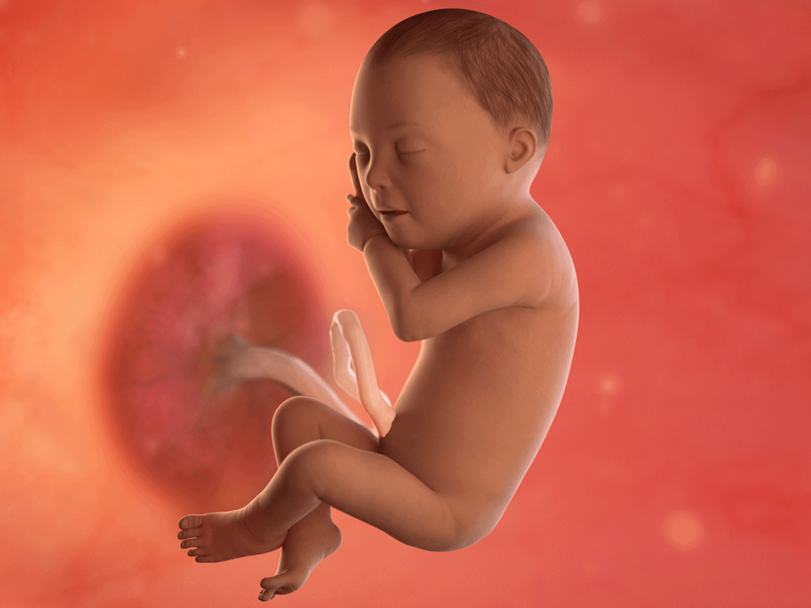
😊 Thông tin thêm
- Lớp lông tơ trên cơ thể bé giảm dần và chỉ còn lại một chút ở vai và lưng, đồng thời tóc trên đầu bé cũng dài hơn.
- Các tế bào da của bé đang sản sinh melanin, là sắc tố quyết định màu da (skin color). Càng sản xuất nhiều melanin, da sẽ càng sậm màu. Tuy nhiên, phần lớn quá trình sản sinh melanin sẽ diễn ra sau khi sinh. Tông màu da vĩnh viễn của bé (permanent skin tone) sẽ được hoàn thiện vào khoảng 6 tháng tuổi.
- Bé có thể mở to mắt và nhìn thấy những hình dạng mờ nhạt. Đến khoảng tuần 31, đồng tử (pupils) của bé có thể co giãn (constrict and expand) để điều chỉnh lượng ánh sáng đi vào mắt. Sau khi sinh, bé có thể tập trung nhìn vào gương mặt mẹ khi mẹ ở khoảng cách 20–25cm, nhưng bé sẽ chưa thể theo dõi vật chuyển động bằng mắt cho đến khi được khoảng 3 tháng tuổi.
- 2. Thay đổi của cơ thể mẹ
-
- ✨ Các triệu chứng của giai đoạn đầu thai kỳ quay trở lại. Dù mức độ không nặng như trước, nhưng vẫn đủ khiến mẹ bầu cảm thấy khó chịu. Đầu của em bé nếu hướng xuống dưới, sẽ tạo áp lực lên bàng quang của mẹ, nên tình trạng tiểu nhiều có thể xuất hiện trở lại.
- 🤰 Ngực căng và đau, bắt đầu tiết sữa non (초유) và tình trạng tăng sắc tố da trở nên rõ rệt hơn. Tùy từng người mà có thể thấy sữa non rỉ ra. Vùng bụng dưới, núm vú và âm hộ có thể trở nên sẫm màu hơn, nhưng những thay đổi này sẽ mờ dần sau sinh, vì vậy mẹ không cần quá lo lắng.
- 😌 Ở giai đoạn này, mẹ thường cảm thấy khó chịu, đầy bụng, và có thể bị đau lưng, giãn tĩnh mạch, hoặc trĩ. Cảm giác mệt mỏi mãn tính (만성피로) và ợ nóng, nóng rát dạ dày (속 쓰림) cũng có thể trở nên nghiêm trọng hơn. Mẹ hãy cố gắng chịu đựng thêm một chút nữa nhé!
- 🩺 Dạo này bụng hay bị căng cứng, các cơ tử cung (자궁 근육) trở nên rất nhạy cảm, nên chỉ một kích thích nhỏ cũng có thể gây co thắt tử cung (자궁 수축). Bạn có thể cảm thấy bụng cứng và căng lại khoảng 5 lần mỗi ngày – khi đó hãy nghỉ ngơi ngay lập tức. Nếu dịch âm đạo có lẫn máu hoặc cơn đau bụng xảy ra thường xuyên, có thể là dấu hiệu sinh non (조산 위험) – cần đến bệnh viện kiểm tra ngay!
- 💆♀️ Cần vận động nhẹ sau bữa ăn. Cơ thể mẹ lúc này không nên làm việc quá sức, nhưng vận động nhẹ nhàng lại rất cần thiết! Đặc biệt, sau bữa ăn, nên đi bộ chậm rãi (걷기) để giúp hạ đường huyết (혈당을 낮추다). Ngoài ra, yoga cho bà bầu (임산부 요가), pilates (필라테스), và bơi lội (수영) cũng rất tốt, giúp tăng sức mạnh cơ bắp và độ dẻo dai (근력과 유연성).
Thay đổi ở rốn (Belly button changes)
Trong tam cá nguyệt thứ ba, tử cung mở rộng gây áp lực lên thành bụng, khiến rốn lồi ra ngoài, biến rốn lõm thành rốn lồi.
Rốn của bạn cũng có thể nhạy cảm khi bị chạm vào hoặc khó chịu khi quần áo cọ sát. Một số mẹ chọn mặc áo rộng hoặc dán miếng băng y tế (adhesive bandage) lên rốn vào giai đoạn cuối thai kỳ để tránh cảm giác này.
⚠️ Trong trường hợp hiếm gặp, phụ nữ mang thai có thể bị thoát vị rốn kẹt (incarcerated umbilical hernia). Đây là khi một phần ruột đẩy ra qua khe mô, lồi vào vùng rốn rồi bị kẹt lại. Cơn đau dữ dội xuất phát từ việc phần ruột bị chèn ép trong không gian nhỏ.
🚨 Nếu mắc phải, bạn có thể cảm nhận một khối cứng gần rốn. Đây là tình huống khẩn cấp (surgical emergency), nên hãy liên hệ ngay với bác sĩ nếu cảm thấy đau rốn dữ dội trong thai kỳ.
Dịch tiết âm đạo màu nâu (Brown discharge)
Khi mang thai, cơ thể tăng sản xuất estrogen, dẫn đến tăng dịch tiết âm đạo. Dịch màu nâu thường là do lẫn máu cũ, và thường không đáng lo ngại.
Bạn có thể thấy đốm máu nâu (brown spotting) hoặc dịch tiết màu nâu sau quan hệ tình dục hoặc khám phụ khoa. Cổ tử cung (cervix) trở nên nhạy cảm hơn trong thai kỳ, nên các hoạt động này có thể gây kích ứng nhẹ và chảy máu ít.
🩸 Khi gần đến thời điểm sinh, bạn có thể thấy dịch tiết giống chất nhầy đặc, trong suốt hoặc có màu hồng nhạt, nâu, hoặc lẫn máu. Đây là nút nhầy cổ tử cung (mucus plug), thường kèm theo hiện tượng ra dịch máu báo.
Tuy nhiên, trong một số trường hợp, dịch tiết âm đạo có thể là dấu hiệu của biến chứng nghiêm trọng, như nhau tiền đạo (placenta previa), bong nhau non (placental abruption), chuyển dạ sớm (preterm labor) hoặc nhiễm trùng (infection). Hãy gọi bác sĩ ngay nếu:
– Dịch tiết màu đỏ tươi và nhiều hơn khoảng 2 thìa canh
– Xuất hiện trước tuần thứ 36
– Hoặc dịch có màu xanh, có mùi hôi
Mệt mỏi
Trong tam cá nguyệt thứ ba, bạn có thể lại cảm thấy mệt mỏi do mang thai😴. Dù không kiệt sức như ở tam cá nguyệt đầu, bạn vẫn sẽ dễ mệt và cần nghỉ ngơi nhiều hơn. Điều này hoàn toàn bình thường – bạn đang mang thêm trọng lượng, trong đó có em bé đang tăng cân nhanh chóng, và có thể khó ngủ hơn.
Mệt mỏi cũng có thể là dấu hiệu của thiếu máu do thiếu sắt. Trầm cảm cũng có thể gây mệt mỏi hoặc mất ngủ, nên nếu bạn cảm thấy buồn bã, tuyệt vọng, không thể làm việc thường ngày, hoặc có ý nghĩ gây hại cho bản thân, hãy liên hệ bác sĩ.
Để giảm mệt mỏi, hãy ăn uống cân bằng, uống đủ nước, tập nhẹ như đi bộ, và nghỉ ngơi bất cứ khi nào có thể.
Phù (Swelling)
Bạn có thể nhận thấy phù mắt cá chân và bàn chân, đặc biệt khi gần đến ngày sinh🦶.
Phù xảy ra do tử cung to lên, gây áp lực đến tĩnh mạch vùng chậu và tĩnh mạch chủ dưới – là tĩnh mạch lớn bên phải cơ thể đưa máu từ chân về tim. Áp lực này làm chậm lưu thông máu, khiến máu ứ lại ở chân và dịch rò rỉ ra mô, gây sưng.
Hormone thai kỳ (pregnancy hormones) và việc giữ nước tự nhiên cũng góp phần gây phù. Cuối thai kỳ, cơ thể bạn có thể tăng 1–1.5kg nước, sẽ được thải ra qua nước tiểu và mồ hôi sau khi sinh.
⚠️ Phù thường không nguy hiểm, nhưng có thể là dấu hiệu của tiền sản giật (preeclampsia) hoặc huyết khối tĩnh mạch sâu nếu:
– Sưng quá mức, sưng đột ngột ở chân hoặc mắt cá
– Sưng nhiều ở tay hoặc mặt
– Một chân sưng rõ hơn chân kia
Thay đổi cảm xúc (Mood swings)
Sự kết hợp giữa triệu chứng khó chịu, căng thẳng và thay đổi hormone có thể khiến tâm trạng thay đổi thất thường trở lại trong tam cá nguyệt thứ ba💭.
Nếu cảm xúc thay đổi mạnh hơn, thường xuyên hơn, hoặc kéo dài trên 2 tuần, có thể bạn đang bị trầm cảm hoặc lo âu thai kỳ (pregnancy depression/anxiety). Hãy thông báo cho bác sĩ để được hỗ trợ.
Các nghiên cứu cho thấy vấn đề tâm lý không điều trị có thể ảnh hưởng đến sức khỏe thể chất của thai nhi và tăng nguy cơ sinh non cũng như trầm cảm sau sinh.
Khó thở (Shortness of breath)
Về cuối tam cá nguyệt thứ ba, chỉ leo vài bậc cầu thang cũng có thể khiến bạn mệt và thở dốc😮💨. Khi thai kỳ tiến triển, cơ thể cần nhiều oxy hơn, đồng thời tử cung lớn lên gây chèn ép cơ hoành (diaphragm), dẫn đến khó thở. Tình trạng này có thể nặng hơn nếu bạn bị hen suyễn (asthma), thiếu máu (anemia), hoặc cao huyết áp (high blood pressure).
Bạn có thể thở dễ hơn vài tuần trước khi sinh, đặc biệt nếu đây là lần mang thai đầu tiên, vì lúc đó thai nhi tụt xuống vùng chậu (baby drops into the pelvis) để chuẩn bị sinh.
Khó thở là hiện tượng phổ biến trong thai kỳ, nhưng hãy đến bệnh viện ngay lập tức nếu bạn gặp:
– Khó thở đột ngột hoặc nghiêm trọng
– Hen suyễn nặng hơn
– Nhịp tim nhanh hoặc không đều (rapid/irregular heartbeat)
– Cảm giác sắp ngất (feeling faint)😵💫
– Đau ngực hoặc đau khi hít thở (chest pain)💢
- 3. Lưu ý về sức khỏe
-
🩸 Nếu mẹ bị đau (통증) và ra máu nhiều (다량의 출혈) thì cần nghi ngờ nhau tiền đạo (전치태반).
Thông thường, nhau thai (태반) nằm ở phía trên của tử cung, nhưng trong trường hợp nhau tiền đạo, nhau thai lại nằm ở phần dưới, khiến khi thai nhi chào đời có thể xảy ra hiện tượng xuất huyết nhiều hoặc đầu thai nhi không thể đi xuống đường sinh, nên phải tiến hành sinh mổ (제왕절개 분만).
⚠️ Triệu chứng của nhau tiền đạo thường xuất hiện vào khoảng sau tuần thứ 29 (29주 이후), khi có đau bụng kèm theo hiện tượng đột ngột ra nhiều máu.
🧠 Tăng cường hấp thu kẽm (아연) và kali (칼륨) giúp thúc đẩy sự phát triển não bộ của thai nhi (태아의 두뇌발달).
Trong giai đoạn này, khi kích thước não của thai nhi lớn lên đáng kể và bắt đầu hình thành nhiều nếp gấp, việc bổ sung các dưỡng chất hỗ trợ phát triển não là rất quan trọng.
🥚 Kẽm (아연), là dưỡng chất không thể thiếu cho hoạt động của não, có nhiều trong hàu, nghêu, sò, gạo lứt, trứng, vì vậy nếu ăn đầy đủ các thực phẩm cơ bản trong thực đơn thai giáo (태교식) thì sẽ không bị thiếu.
🥬 Kali (칼륨) là dưỡng chất giúp cung cấp đủ oxy cho não thai nhi (태아의 뇌에 충분한 산소를 공급), có nhiều trong bắp cải, thịt bò, đậu.
🍽️ Ăn thành nhiều bữa nhỏ và ăn thường xuyên.
⚖️ Cân nặng của thai nhi quá nhiều cũng đáng lo, nhưng quá ít cũng là vấn đề.
Khi tử cung đã nâng lên đến vùng thượng vị (상복부) và gây chèn ép dạ dày, mẹ bầu có thể cảm thấy đầy tức hoặc nóng rát ở ngực.
Một số thai phụ vì khó chịu mà bỏ bữa, nhưng điều này không tốt. Cần chia thành nhiều lần trong ngày, mỗi lần ăn lượng vừa phải, để đảm bảo dinh dưỡng (영양) cung cấp cho cả mẹ và thai nhi không bị thiếu hụt.
🚫 Tránh những động tác cần dùng sức hoặc gây rung lắc đột ngột.
Hạn chế các động tác khiến bụng bị căng hoặc chịu kích thích, và không nên mang vật nặng.
🧎♀️ Khi nhặt vật gì đó dưới đất, không nên cúi người trong tư thế thẳng đứng mà hãy gập gối rồi ngồi xuống để giảm áp lực cho bụng.
🚗 Cũng nên tránh di chuyển bằng ô tô trong quãng đường hơn 1 tiếng. Nếu rung lắc hoặc dao động kéo dài, có thể làm tăng nguy cơ sinh non nên cần hết sức cẩn thận.
💤 Ngoài ra, căng thẳng tinh thần hay lo âu đều không tốt cho thai nhi. Hãy đảm bảo có đủ thời gian nghỉ ngơi và ngủ để giữ trạng thái tâm lý ổn định.
- 4. Quan hệ vợ chồng khi mang thai
-
Trong thời kỳ này, cổ tử cung (자궁 입구) và âm đạo (질) trở nên nhạy cảm, dễ bị xung huyết (충혈) và tổn thương, vì vậy cần đặc biệt thận trọng khi quan hệ tình dục (성생활).
👨Vai trò của chồng:
🤰 Chồng hãy tham gia lớp học tiền sản cùng vợ
- Các trung tâm y tế cộng đồng (보건소) hoặc bệnh viện phụ sản (산부인과) thường tổ chức những lớp học tiền sản (출산 교실), diễn ra trong 2–4 buổi.
- Nội dung chính bao gồm: thay đổi cơ thể trong giai đoạn cuối thai kỳ (임신 후기의 신체 변화), trải nghiệm mang thai dành cho chồng (남편을 위한 임신 체험), các phương pháp sinh nở và kỹ thuật thở (분만법과 호흡법), chuẩn bị cho sinh nở (출산 준비) và cách cho con bú (모유 수유 방법).
- Sau khi kết thúc lớp học, hãy trao đổi với vợ về phương pháp sinh nở mà hai bạn muốn chọn, đồng thời ôn lại kỹ thuật thở (호흡법) để có thể hỗ trợ vợ một cách bình tĩnh và hiệu quả trong lúc sinh.
👨👩👧 Tìm hiểu các thủ tục giấy tờ và chuẩn bị ngân sách sau sinh
- Mang thai và sinh nở thường kèm theo rất nhiều thủ tục giấy tờ (서류작업) mà chồng có thể đảm nhiệm.
- Sau khi sinh, chồng nên lo liệu các việc như: khai sinh (출생신고), các chế độ hỗ trợ sinh nở (출산 지원 제도), nghỉ chăm con (육아 휴직) và các chế độ phúc lợi khác.
- Ngoài ra, người chồng nên tính toán trước ngân sách cần thiết cho sinh nở, bao gồm: chi phí bệnh viện (병원비), bảo hiểm (보험료), chi phí ở viện dưỡng sau sinh (산후조리원) và các vật dụng cần thiết cho em bé (각종 아기 물품).
- Tuy nhiên, những phần liên quan đến sở thích và nhu cầu của vợ thì chồng nên tham khảo ý kiến vợ trước khi quyết định để đảm bảo phù hợp và hài lòng cho cả hai.
- 5. Trọng tâm thai giáo
-
Vì cơ quan thính giác của thai nhi đã phát triển hoàn chỉnh, nên việc đọc truyện thai giáo sẽ giúp bé hình thành vốn từ vựng và năng lực cảm thụ ngôn ngữ sớm. Mỗi ngày, mẹ có thể dành khoảng 5 phút để đọc những câu chuyện nhẹ nhàng tình cảm, có nhịp điệu, hoặc các truyện khoa học - sáng tạo giúp bé phát triển trí tưởng tượng và khả năng tư duy.
Sau đây là một số truyện thai giáo phù hợp để đọc trong giai đoạn này (bằng tiếng Hàn): 바람을 보았니?(김옥애), 어린이가 처음 만나는 수학 그림책(미추마사), 봄 여름 가을 겨울 나무이야기(마이클 로젠), 누구야 누구?파란 토끼 시리즈 중(강덕선), 개구리 세상 구경 (임정진), 안녕! 나는 너의 장난꾸러기야(이형진), 둘이서 둘이서(김복태), 엄마 잃은 아기 참새(루스 에인워즈), 어떻게 잠을 잘가요(야무우치 마사요키), 두드려 보아요, 찾아보아요, 걸어보아요, 물어보아요(안나 클라라 티돌름) 등
- 6. Các thông tin cần biết khác
-
💆♀️✨ Hãy đi massage trước khi sinh
Massage dành cho phụ nữ mang thai là một cách tuyệt vời để thư giãn và giảm bớt những cơn đau nhức vào giai đoạn cuối thai kỳ. Massage còn giúp giảm sưng phù và cải thiện tâm trạng. Hãy chọn chuyên viên massage có chứng chỉ và được đào tạo bài bản về massage cho thai phụ.
💧 Hãy xem xét mua sản phẩm dưỡng da mới
Hãy kiểm tra nhãn mác các sản phẩm chăm sóc da (스킨케어 - skincare) bạn đang sử dụng! Các mỹ phẩm có chứa paraben (파라벤), retinol – vitamin A (레티놀), formaldehyde (포름알데히드), isoflavone (이소플라본), và tinh dầu aroma (아로마 오일) nên tránh dùng cho đến sau khi sinh.
✓ Paraben (파라벤) và Formaldehyde (포름알데히드): Là các chất có thể gây rối loạn hormone và tăng nguy cơ ung thư, vì vậy cần tránh tuyệt đối trong thai kỳ.
✓ Isoflavone (이소플라본): Là phytoestrogen (hormone nữ từ thực vật). Nếu sử dụng trong thời kỳ nồng độ estrogen cao, có thể khiến nám da (기미) trở nên đậm hơn và gây mất cân bằng hormone.
✓ Retinol (레티놀): Là thành phần thường có trong sản phẩm chống lão hóa (안티에이징 제품). Việc dùng quá nhiều có thể dẫn đến thai chết lưu hoặc dị tật bẩm sinh. Hãy kiểm tra nhãn và tránh các thành phần như retinol, retinyl palmitate (레티닐팔미테이트), retinyl retinoate (레티닐레티노에이트), retinyl acetate (레티닐아세테이트).
✓ Tinh dầu aroma (아로마 오일): Dù thường được dùng để massage, nhưng không nên sử dụng trong thai kỳ. Tinh dầu có thể gây rối loạn hormone, kích thích co bóp tử cung (자궁 수축) và giãn cơ (근육 이완), làm tăng nguy cơ sinh non (조산).
🩸🧬 Cân nhắc lưu trữ máu cuống rốn
Máu cuống rốn của em bé – phần máu còn lại trong dây rốn sau khi sinh – chứa nhiều tế bào gốc có giá trị, có thể cứu sống người bệnh. Các tế bào gốc này được sử dụng để điều trị một số bệnh như ung thư, thiếu máu hồng cầu hình liềm, rối loạn miễn dịch và nhiều bệnh khác. Một số bố mẹ chọn lưu trữ riêng máu cuống rốn của con mình để dùng trong tương lai nếu cần cho việc điều trị của bé hoặc người thân trong gia đình👨👩👧👦.
Bạn cũng có thể hiến tặng máu cuống rốn cho ngân hàng máu cuống rốn công. Tốt nhất là nên tìm hiểu trước khi sinh, vì quy trình đăng ký và chọn nơi phù hợp cần thời gian.
Nhận biết các dấu hiệu sinh non (조산) cần đến bệnh viện ngay lập tức
🌟 Có hiện tượng ra máu (출혈이 있다)
Khi có máu đỏ tươi chảy ra nhiều, hoặc dịch tiết âm đạo (질 분비물) lẫn với máu khiến dịch có màu nhạt, thì cả hai trường hợp đều là dấu hiệu cảnh báo sinh non. Cần đến bệnh viện ngay lập tức.
🌟 Cảm giác như bị rỉ tiểu và có nước ấm chảy ra đột ngột
Khi xảy ra vỡ ối sớm (조기 파수), nước ối (양수) chảy ra có thể khiến mẹ bầu cảm thấy giống như dịch loãng hoặc nước tiểu rỉ ra. Nếu lượng nước quá nhiều và cảm giác như nước ấm chảy ra, thì đây là tình huống nguy hiểm cần được xử lý ngay.
🌟 Cổ tử cung (자궁구) bị mở
Hiện tượng mở cổ tử cung thường rất khó để thai phụ tự nhận biết. Vì vậy, cần kiểm tra định kỳ để xem có mắc hội chứng hở eo tử cung (자궁경부무력증) hay không. Nếu đã được chẩn đoán là hở eo tử cung, chỉ cần cảm thấy có dấu hiệu bất thường nhỏ cũng phải đến bệnh viện ngay.
🌟 Bụng căng cứng đều
Nếu cảm thấy bụng căng cứng hoặc có cảm giác co thắt khác với bình thường, xuất hiện đều đều, thì khả năng sinh non (조산) là rất cao. Cần đến bệnh viện ngay để kiểm tra và xử lý kịp thời.
-
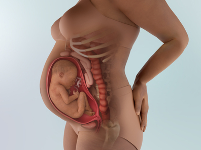
- 1. Sự phát triển của thai nhi
-
- Kích thước thai nhi khoảng 41.5cm, nặng 1.5kg😊
👶 Các giác quan (오감) đã phát triển đầy đủ, bé có thể cảm nhận nhiều thứ hơn
Bé nghe được tất cả âm thanh từ bên ngoài, và phân biệt các âm thanh khác nhau. Một số nghiên cứu còn chỉ ra rằng trái tim của bé phản ứng khác nhau với từng loại nhạc.
Bé có thể cảm nhận các mùi vị trong nước ối, đồng thời tập thở (숨쉬기 연습) một cách độc lập.
Bé cũng có thể cảm nhận và nắm chặt các vật cầm tay, mắt đã hoàn thiện và có thể co giãn đồng tử.
⏳ Tốc độ tăng trưởng bắt đầu chậm lại
- Cho đến nay, bé đã tăng trưởng rất nhanh. Giờ đây, khi ngày sinh sắp đến, tốc độ tăng trưởng của bé bắt đầu chậm lại, nghĩa là bé đã phát triển đủ lớn. Ở giai đoạn này, thời gian ngủ của bé nhiều hơn thời gian thức, giúp bé tiết kiệm năng lượng cho việc phát triển cuối cùng trước khi ra đời.
- Có thể nhìn thấy bụng chuyển động theo cử động đầy sức sống của bé. Bé còn ngọ nguậy các ngón tay, ngón chân và do lực tay chân mạnh hơn nên duỗi – gập tay chân rất khỏe.
- Ở giai đoạn này, bé đã hình thành nhịp ngủ (수면 패턴), nên sẽ có những khoảng thời gian vận động và nghỉ ngơi cố định. Bạn sẽ dần dự đoán được một phần các cử động của bé.
🧠 Não của bé phát triển mạnh mẽ trong tam cá nguyệt thứ ba
Kích cỡ của não sẽ tăng gấp ba lần. Đồng thời, đại não bắt đầu hình thành các rãnh sâu, giúp tăng diện tích bề mặt mà không làm đầu to hơn.
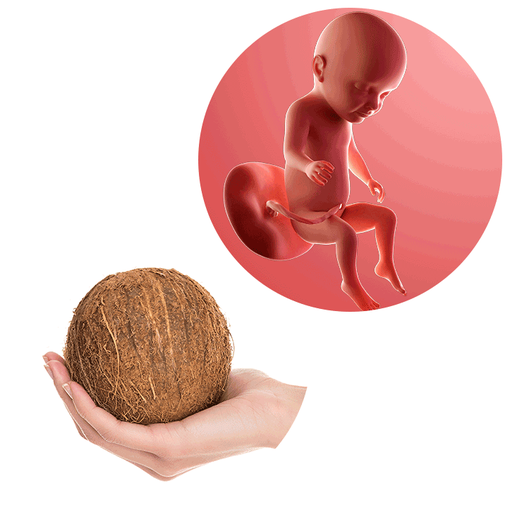
- Kích thước của bé tương đương size của quả dừa.
- 2. Thay đổi của cơ thể mẹ
-
Các triệu chứng cuối thai kỳ trở nên nghiêm trọng hơn ⚡
- Khi chuẩn bị sinh, các triệu chứng gây khó chịu cho mẹ sẽ ngày càng tăng lên.
- Khó thở và cảm giác tức ngực vì tử cung gần chạm tới vùng xương ức, đồng thời khó tiêu (소화 불량).
- Giãn tĩnh mạch (정맥류) và trĩ (치질) có thể trở nên nghiêm trọng hơn.
- Vai đau do nâng đỡ bụng nặng và ngực lớn, ngay cả khi nằm nghỉ cũng cảm thấy khó chịu, dẫn đến khó ngủ.
Cân nặng của mẹ tăng nhanh ⚖️
- Cân nặng tăng nhanh chóng, chủ yếu là do tích lũy trọng lượng của bé cộng với cơ thể mẹ.
- So với giai đoạn đầu thai kỳ, cân nặng có thể tăng gần 10kg, tạo áp lực lên cột sống và lưng dưới.
- Hãy cẩn thận với các động tác gập lưng hoặc nâng vật nặng, tránh làm quá sức để bảo vệ cột sống.
Khó thở và tim đập nhanh cuối thai kỳ 💓
- Khi tử cung lớn lên, chèn ép phổi, đồng thời lượng máu tăng để cung cấp cho bé, tim mẹ cũng phải làm việc nhiều hơn, dẫn đến khó thở (숨 차고) và tim đập nhanh (가슴 두근거림) – là triệu chứng phổ biến ở cuối thai kỳ.
- Khi cảm thấy khó thở hoặc tim đập nhanh, hãy di chuyển chậm lại và thở sâu đều. Hít thở sâu và nhịp nhàng không chỉ giảm triệu chứng mà còn mang lại cảm giác bình tĩnh cho mẹ.
Đau đầu, đau lưng 🤕
- Khi ngày sinh đến gần, lo lắng tăng và hormone thay đổi nhiều, dẫn đến tăng nguy cơ đau đầu (두통).
- Nếu đau đầu nặng, hãy chườm khăn ấm lên trán, xoa bóp sau gáy và thái dương để giảm đau.
- Đau vùng thắt lưng hoặc đau vùng chậu sau (lan xuống mông hoặc mặt sau đùi). Các bài tập nhẹ như bơi, kéo giãn và đi bộ có thể giúp giảm đau. Tư thế đúng, giày thoải mái và tránh mang đồ nặng cũng hữu ích. Nếu vẫn không giảm, hãy hỏi bác sĩ về châm cứu, massage tiền sản hoặc thuốc giảm đau.
Đi tiểu nhiều hơn bình thường 🚽
- Có đến 95% phụ nữ gặp tình trạng này. Đây là kết quả của hormone, lượng dịch tăng lên và áp lực tử cung lên bàng quang.
- Đi tiểu nhiều cũng có thể là dấu hiệu nhiễm trùng tiểu (UTI). Hãy báo bác sĩ nếu bạn đau khi đi tiểu, nước tiểu có máu, đục hoặc hôi, bạn bị sốt, hoặc đau lưng/đau dưới bụng.
- Một số phụ nữ còn bị són tiểu khi ho, cười, hắt hơi hoặc vận động. Nguyên nhân là do hormone thai kỳ làm giãn cơ sàn chậu và tử cung gây áp lực. Tình trạng này có thể hết sau sinh. Tập Kegel giúp tăng sức mạnh sàn chậu.
Khó ngủ, mất ngủ 😴
- Có nhiều lý do khiến mẹ bầu khó ngủ trong tam cá nguyệt cuối: bé đạp, đau nhức, đi vệ sinh nhiều lần, và khó tìm tư thế thoải mái.
- Nếu khó tìm tư thế ngủ phù hợp, hãy thử nhiều cách: ngủ trên sofa, ghế tựa, nệm hơi, hoặc dùng thêm topper mềm và gối ôm bà bầu. Nếu mất ngủ kéo dài dù đã thử nhiều cách, hãy báo bác sĩ.
Đau thần kinh tọa ⚡
- Nếu bạn thấy đau nhói hoặc âm ỉ lan từ lưng dưới xuống mông và chân, đó có thể là đau thần kinh tọa. Điều này xảy ra khi dây thần kinh tọa bị chèn ép hoặc viêm.
- Đau thần kinh tọa rất phổ biến trong thai kỳ, đặc biệt ở giai đoạn cuối khi bé tăng cân và tử cung chèn lên dây thần kinh. Khi bé vào vị trí chờ sinh, đầu bé cũng có thể đè lên dây thần kinh tọa.
- Cơn đau này thường sẽ biến mất sau sinh. Trong lúc này, bạn có thể giảm đau bằng cách chườm ấm, kéo giãn nhẹ nhàng, tập Kegel và bài tập nghiêng xương chậu.
- 3. Lưu ý về sức khỏe
-
Bổ sung hành tây trong chế độ ăn uống
Hành tây (양파) giúp ổn định tinh thần. Khi ngày sinh đến gần, thai phụ dễ bất an, tử cung lớn chèn ép dạ dày khiến tức ngực và tiêu hóa kém. Khi tinh thần của thai phụ bất ổn cũng sẽ ảnh hưởng đến thai nhi, vì vậy cần cố gắng giữ tâm trạng thư thái. Hành tây chứa nhiều iod có tác dụng làm dịu thần kinh, nên nếu thêm nhiều vào món ăn và nấu chín sẽ giúp ổn định tinh thần.
Nếu cân nặng không tăng thì cần ăn thêm bữa phụ ngoài ba bữa chính. Nếu bụng ngày càng lớn nhưng cân nặng không tăng thì nên chủ động bổ sung bữa phụ. Vì chỉ ăn ba bữa chính không thể cung cấp đủ năng lượng, nên dù hơi bất tiện cũng cần tranh thủ ăn thêm các bữa phụ.
Tránh những việc kích thích hoặc va chạm vào bụng
Tiêu chảy nặng có thể làm tăng cơn co tử cung và dẫn đến sinh non.
Khi đi đại tiện nên giảm kích thích cho bụng, còn táo bón thì nên điều trị sớm.
Khi bị táo bón, không nên rặn mạnh và cần tìm cách giảm co cứng vùng bụng.
Ngoài ra, nên tránh đi lại vào giờ cao điểm khi đông người vì dù bản thân cẩn thận nhưng người khác vô tình va chạm có thể gây ảnh hưởng đến bụng. Khi đi ở nơi đông người, nên dùng hai tay ôm lấy bụng để bảo vệ.
Tập các bài tập thở, giãn cơ lưng, mở hông 🤰🧘♀️
Khi ngày dự sinh đến gần, hãy cố gắng tăng độ dẻo dai và tăng cường sức mạnh cơ thể nhiều nhất có thể. Các bài tập giãn cơ là lựa chọn hoàn hảo, giúp mở khung chậu, tăng sức mạnh cơ bụng, giảm đau lưng khi chuyển dạ và giảm căng cơ.
- 4. Quan hệ vợ chồng khi mang thai
-
Để đảm bảo sinh nở an toàn, từ giai đoạn này trở đi nên hạn chế quan hệ tình dục. Bụng đã lớn và cảm giác bị chèn ép nhiều, quan hệ sai cách có thể khiến vỡ ối.
👨Vai trò của chồng:
🛌 Giúp vợ tìm hiểu phương pháp chăm sóc sau sinh (산후조리 방법)
Sau khi sinh, mẹ có thể dùng dịch vụ viện dưỡng sau sinh (산후조리원) hoặc nhờ giúp đỡ từ nhân viên chăm sóc tại nhà (산후 도우미). Ưu nhược điểm của từng phương pháp:
1️⃣ Viện dưỡng sau sinh (산후조리원)
✓ Ưu điểm:
- Nhận chăm sóc sau sinh chuyên nghiệp từ các chuyên gia trong từng lĩnh vực.
- Có cơ sở vật chất tối ưu cho mẹ và bé.
- Có cơ hội gặp gỡ và kết nối với các mẹ khác – những “người bạn” cùng chăm con.
✓ Nhược điểm: Hạn chế về thời gian thăm nom gia đình, chi phí tương đối cao so với chăm sóc tại nhà.
2️⃣ Nhân viên chăm sóc tại nhà (산후도우미)
✓ Ưu điểm:
- Nhận chăm sóc trong môi trường quen thuộc và thoải mái tại gia.
- Người thân trong gia đình có thể đến thăm nom tự do.
- Dịch vụ chăm sóc 1:1 tỉ mỉ và cá nhân hóa.
- Chi phí thường rẻ hơn viện dưỡng sau sinh.
🏡 Bảo vệ an toàn cho vợ – kiểm tra môi trường trong nhà
- Khi bụng của vợ ngày càng to, khả năng bị vấp ngã hoặc va chạm với đồ đạc cũng tăng lên.
- Bụng to khiến khó giữ thăng bằng, kèm theo các triệu chứng như đau vùng chậu, đau đầu.
- Để bảo vệ vợ, chồng có thể: dán miếng bảo vệ góc bàn-ghế để tránh va chạm, nếu có thảm trải sàn thì tạm thời dọn đi vì có thể vấp ngã, vì phòng tắm đặc biệt trơn trượt nên cần lắp tay vịn ở nhiều vị trí trong nhà tắm để tăng độ an toàn.
- 5. Trọng tâm thai giáo
-
Làm dịu cơ thể nhiều bất tiện của mẹ bằng phương pháp thai giáo thông qua hoạt động chăm sóc cây cối. Khi nhìn vào các loại cây xanh, tâm trạng của mẹ sẽ trở nên bình yên hơn. Nếu nhà có vườn thì có thể trực tiếp trồng cây ngoài sân, còn nếu nhà nhỏ không có không gian thì có thể trồng thủy canh trong bình thủy tinh. Các loại cây như syngonium, cây thường xuân - Ivy, cây Lan Ý - Spathiphyllum (싱고늄, 아이비, 스파트 필름) có lá mọc thẳng và xanh mát, chỉ cần nhìn cũng đã tạo cảm giác dễ chịu, giúp làm dịu cơ thể mệt mỏi và ổn định cảm xúc.
- 6. Các thông tin cần biết khác
-
Chú ý nước ối
- Thiếu ối (양수 과소증) là vấn đề, nhưng đa ối (양수과다증) cũng là vấn đề nghiêm trọng. Nước ối là nguồn sống thiết yếu đối với thai nhi, nhưng nếu lượng ối quá nhiều hoặc quá ít đều có thể gây ảnh hưởng xấu cho thai nhi và thai phụ.
- Cả đa ối (양수과다증) và thiếu ối (양수 과소증) đều có thể dẫn đến sinh con dị tật, sinh non hoặc thai chết lưu nên cần đặc biệt chú ý.
- Thiếu ối là tình trạng lượng nước ối thấp hơn nhiều so với mức bình thường. Nếu xuất hiện tình trạng thiếu ối vào cuối thai kỳ thì cần kiểm tra định kỳ bằng siêu âm để đo lượng ối.
- Đa ối là tình trạng lượng nước ối tăng nhanh khi thai phụ mắc bệnh đái tháo đường hoặc khi thực quản của thai nhi bị tắc khiến bé không nuốt được nước ối. Phần lớn trường hợp được chẩn đoán là đa ối khi lượng ối vượt trên 2000ml.
- Tương tự như thiếu ối, đa ối cũng làm tăng tỷ lệ dị tật như vô não (무뇌증), não úng thủy (뇌수종) và trong trường hợp nặng cần điều trị nội trú tại bệnh viện.
Ngủ sấp có thể nguy hiểm cho bé
- Theo nghiên cứu ở Mỹ, các miếng bảo vệ giường cũi (bumpers) đôi khi gây ngạt thở, siết cổ hoặc khó thở, thậm chí trong trường hợp cực đoan có thể dẫn đến tử vong.
- Ngoài ra, 🚼 việc cho trẻ sơ sinh ngủ sấp làm tăng nguy cơ hội chứng đột tử ở trẻ sơ sinh (SIDS – 신생아 돌연사 증후군).
- Khi mua cũi, hãy ưu tiên các sản phẩm an toàn, tránh các nguy cơ trên.
-
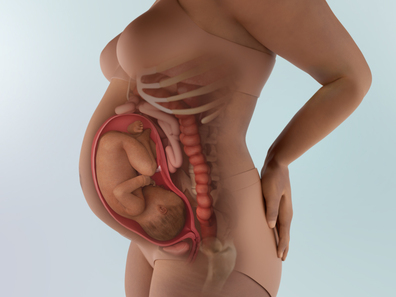
- 1. Sự phát triển của thai nhi
-
Kích thước thai nhi: 42.6cm (1.7kg) ๑◕‿‿◕๑
🌸 Làn da hồng hào, mũm mĩm: Da trước đây có màu đỏ hỏn, giờ đây dày hơn nhờ tích tụ mỡ dưới da (피하지방) và tạo màu hồng hào. Nhờ lớp mỡ này, bé trông mũm mĩm, tròn trịa và rất đáng yêu.
💅 Móng tay, móng chân gần như đã hoàn thiện: Móng tay và móng chân nhỏ xíu đã mọc gần hết đến đầu ngón tay, ngón chân.
💖 Kiểm tra nhịp tim thai (태아 심음 검사): Có thể xác định nhịp tim của bé thông qua kiểm tra nhịp tim thai (태아 심음 검사) – đây là phương pháp kiểm tra cử động thai (태동 검사). Nếu bé vận động tốt, nghĩa là không có vấn đề gì.
👶 Sinh đôi có phổi trưởng thành nhanh hơn: Các bé sinh đôi thường ra đời sớm hơn một bé đơn, nên phổi phát triển sớm hơn. Bé đơn: phổi hoàn thiện vào tuần thứ 36. Bé sinh đôi: phổi hoàn thiện vào tuần thứ 32. Do đó, thai kỳ sinh đôi thường sinh sớm hơn dự kiến, khoảng 80% bà mẹ mang thai đôi cảm nhận cơn chuyển dạ sớm hơn dự kiến khoảng 3 tuần.
🧬 Cơ thể bé đang tích trữ những khoáng chất quan trọng như sắt, canxi và phốt-pho. Lượng sắt mà bé tích trữ ở giai đoạn này sẽ đủ dùng trong 6 tháng đầu đời, cho đến khi bé bắt đầu ăn dặm.
👶 Cơ quan sinh dục của bé: đối với bé trai, cơ quan sinh dục ngoài đã hình thành và tinh hoàn bắt đầu xuống bìu (scrotum); đối với bé gái, tử cung và buồng trứng đã ở vị trí đúng, với tất cả các trứng mà bé sẽ có trong đời.
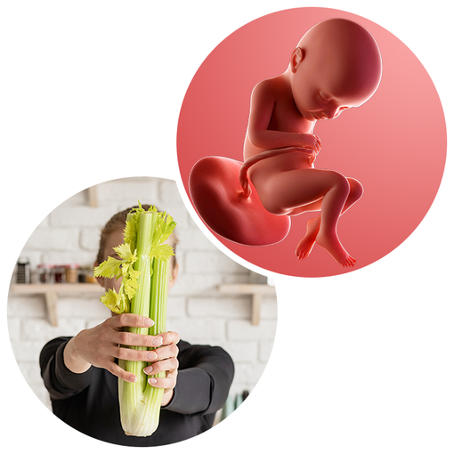
☀️Bé của bạn dài khoảng bằng một bó cần tây (celery)😍.
- 2. Thay đổi của cơ thể mẹ
-
Mẹ thường xuyên phải hít thở sâu (심호흡) và cảm thấy khó ăn uống. Chiều cao đáy tử cung (자궁저부) lúc này khoảng 25–28cm, bụng ngày càng to ra, tử cung dâng lên gần 7–8cm dưới xương ức, gây áp lực lên dạ dày nên việc ăn uống trở nên khó chịu.
Cử động của thai nhi (태동) mạnh hơn, mẹ dễ bị hồi hộp, hụt hơi (숨이 차), và cảm giác không thở đủ ngay cả khi cố hít thở sâu. Khi nằm ngửa, mẹ sẽ khó thở hơn và thường không thể nằm thẳng thoải mái.
Tử cung co thắt nhẹ (자궁이 수축) nên trong ngày mẹ có thể cảm thấy bụng căng cứng 4–5 lần. Cơ thể mẹ bắt đầu chuẩn bị cho sinh nở, đồng thời dịch tiết (분비물) cũng tăng lên.
Khi di chuyển, khớp có thể kêu lục cục. Đây là do hormone thai kỳ làm khớp giãn và yếu đi. Cẩn thận với các cơ quanh cột sống, vì dễ bị chấn thương. Thường đến gần ngày sinh, tình trạng này sẽ tự cải thiện, nên không cần quá lo lắng.
Nếu mẹ dáng cao, thì không gian theo chiều dọc lớn hơn cho tử cung phát triển, có thể bụng lộ muộn hơn. Mẹ có thân hình đầy đặn cũng có thể lộ bụng muộn, vì đường viền bụng có thể không rõ ràng. Hình dáng và cảm giác bụng thay đổi theo hormone, cân nặng trước khi mang thai, chiều cao, hình dáng cơ thể, độ săn chắc cơ bắp và việc đây có phải là lần mang thai đầu tiên không.
Chảy máu nướu (Bleeding gums)
- Khoảng 75% bà bầu bị chảy máu nướu trong thai kỳ. Tình trạng này thường rõ hơn trong tam cá nguyệt thứ ba, khi mức hormone estrogen và progesterone đạt đỉnh. Những thay đổi hormone này làm tăng lưu lượng máu đến niêm mạc (mucous membranes) và khiến nướu nhạy cảm hơn.
- Để giữ nướu và răng (gums and teeth) khỏe mạnh, duy trì thói quen chăm sóc răng miệng (oral health) tốt: đánh răng hai lần mỗi ngày (hoặc sau mỗi bữa nếu có thể) bằng bàn chải mềm, dùng chỉ nha khoa hàng ngày, cân nhắc nước súc miệng có fluoride, và đi khám nha sĩ định kỳ. Trong suốt thai kỳ, việc chụp X-quang răng, cạo vôi răng và gây tê tại chỗ (local anesthesia) đều an toàn.
Ngứa da (Itching skin)
- Nếu các biện pháp đơn giản như dùng kem dưỡng hoặc tắm bột yến mạch ấm không hiệu quả, hãy hỏi bác sĩ về thuốc bôi chống ngứa (topical, over-the-counter anti-itch medications). Hầu hết đều an toàn trong thai kỳ nhưng cần hỏi trước khi sử dụng.
- Ngứa nặng có thể là triệu chứng của bệnh lý tiềm ẩn như ứ mật thai kỳ (cholestasis) – một bệnh gan cần điều trị y tế ngay lập tức. Liên hệ bác sĩ nếu bạn: cảm thấy ngứa nhiều (đặc biệt tay và chân) nhưng không có phát ban, xuất hiện phát ban mới, hoặc bệnh da trở nên nặng hơn.
Rạn da (Stretch marks)
- Thai nhi và cơ thể bạn đang phát triển, da căng nhanh để theo kịp, dẫn đến rạn da, đặc biệt ở bụng và ngực. Một số phụ nữ không bị rạn da, nhưng khoảng một nửa thì có. Các yếu tố ảnh hưởng gồm di truyền: nếu mẹ bạn bị rạn khi mang thai, bạn cũng có khả năng. Tăng cân nhanh, mang đa thai, thai to, hoặc dư nước ối cũng làm tăng nguy cơ rạn da.
- Rạn da thường mờ dần khoảng 6–12 tháng sau sinh, màu sắc nhạt hơn vùng da xung quanh.
- 3. Lưu ý về sức khỏe
-
🤱 Chuẩn bị cho việc cho con bú
Ai cũng biết sữa mẹ (모유 수유) tốt cho bé, nhưng không phải ai cũng thành công khi cho con bú. Để cho con bú thuận lợi, cần chuẩn bị những điều sau:
✓ Hãy kiểm tra xem núm vú của mẹ có phù hợp để bé ngậm dễ dàng không. Nếu núm vú bị tụt (함몰 유두), hãy sử dụng dụng cụ chỉnh núm vú (함몰 유두 교정기) để núm vú nhô ra đủ cho bé ngậm.
✓ Vệ sinh núm vú (유두 청결 관리): Từ giữa thai kỳ, núm vú có thể tiết dịch nhẹ, hãy rửa nhẹ nhàng khi tắm.
✓ Chuẩn bị các vật dụng cho việc cho con bú (모유 수유 용품): Có nhiều sản phẩm hỗ trợ cho việc cho bú, từ miếng lót, gối cho đến túi chườm ngực giảm đau, kem dưỡng núm vú. Bạn có thể tham khảo kinh nghiệm từ các mẹ khác trước khi mua.
💧 Uống nhiều nước
- Hiện tại, mẹ đang “nuôi hai người” (mẹ và bé), nên cơ thể mẹ tích tụ nhiều chất thải hơn bình thường và cần thải ra hiệu quả hơn.
- Nước giúp lọc chất thải qua thận và bài tiết ra ngoài, đồng thời tăng lượng nước tiểu để làm loãng chất thải, giúp ngăn ngừa nhiễm trùng đường tiết niệu.
🧘 Tập vận động vùng chậu để chuẩn bị sinh (골반 운동)
Để tăng cường sức mạnh vùng chậu (골반) và thuận lợi cho quá trình sinh, hãy bắt đầu tập các bài tập vùng chậu từ giai đoạn này. Ví dụ:
- Tựa lưng vào tường, đứng thẳng theo đường cong tự nhiên của cột sống, thả lỏng lưng → Hít sâu, ép phần thắt lưng sát vào tường → Thở ra, trở về tư thế ban đầu.
- Thực hiện khoảng 5 phút, giúp vận động vùng chậu và hỗ trợ quá trình sinh.
Nếu cơ thể ít vận động, ban đêm dễ bị mất ngủ (불면증) hoặc nguy cơ béo phì cao.
Không chỉ cân nặng, nghỉ ngơi quá mức làm nhịp sinh học cơ thể (신체리듬) bị rối loạn, có thể là nguyên nhân sinh non (조산).
Nên vận động vừa phải và làm việc nhà (가사노동) để cơ thể được kích thích hợp lý.
🦴 Bổ sung canxi (칼슘)
- Để xương bé phát triển, cần canxi từ cơ thể mẹ. Nếu mẹ thiếu canxi từ thức ăn, cơ thể sẽ lấy canxi từ xương mẹ, dẫn đến nguy cơ ảnh hưởng đến sức khỏe mẹ.
- Hãy ăn hạt, sản phẩm từ sữa, đậu phụ, rau xanh. Nếu khó bổ sung qua ăn uống, có thể dùng thực phẩm bổ sung canxi.
🔄 Điều chỉnh ngôi ngược (역아 교정)
- Ngôi ngược là khi đầu bé hướng lên thay vì xuống tử cung. Nếu sinh như vậy, chân bé ra trước và có thể gây tổn thương não.
- Từ tháng thứ 8, tập bài tập chỉnh ngôi ngược đều đặn, đến tháng cuối, bé có thể quay đầu về vị trí đúng, không cần quá lo lắng.
Khám định kỳ (정기검진)
- Đừng quên đi khám để kiểm tra protein niệu (단백뇨), cân nặng (체중), huyết áp (혈압)… Khi nước ối (양수) quá ít hoặc quá nhiều có thể gây vấn đề, nên kiểm tra bằng siêu âm (초음파 검사).
- Nếu thai nhi nhỏ bất thường, có thể nghi ngờ suy phát triển trong tử cung (자궁 내 발육 지연).
- Việc sinh trẻ quá cân (거대아) cũng khó nuôi như sinh trẻ thiếu cân (체중미달의 미숙아). Trẻ thiếu cân phát triển chậm, ảnh hưởng đến sự cân bằng cơ thể và tinh thần.
- Phụ nữ vốn cơ thể gầy (마른 체격) có thể sinh trẻ thiếu cân, nhưng nếu mẹ bị cao huyết áp (고혈압), hút thuốc, uống rượu, dùng thuốc, dinh dưỡng kém cũng là nguyên nhân sinh trẻ thiếu cân. Thai nhi thiếu cân cần theo dõi cân nặng thường xuyên qua siêu âm (초음파) để đảm bảo phát triển.
Đề phòng cao huyết áp (고혈압)
- Cao huyết áp là một trong các triệu chứng của tiền sản giật (임신중독증). Để phòng ngừa, bữa tối nên ăn các món chế biến từ đậu nành hoặc đậu phụ (대두, 두부) và ngay khi thức dậy buổi sáng uống một cốc nước.
- Trong đậu có chất nattokinase (나토우키나제) giúp tuần hoàn máu tốt hơn và ổn định huyết áp.
- Ngoài ra, bà bầu (임신부) dễ mất nước do đổ mồ hôi nhiều khi ngủ ban đêm. Nếu cơ thể thiếu nước, tuần hoàn máu kém, dẫn đến huyết áp tăng, vì vậy cần uống nước lọc vào buổi sáng.
Khi đau xương sườn, hãy điều chỉnh nhịp thở
- Ở giai đoạn này, xương của thai nhi phát triển ngày càng hoàn thiện và lớn dần, tư thế co lại không còn thoải mái, nên bé liên tục thay đổi tư thế, gây đau dữ dội như xuyên qua xương sườn mẹ.
- Thai nhi cử động nhiều, mẹ sẽ mệt mỏi theo. Khi đó, nâng một tay lên đầu và thở sâu (심호흡), sau khi thở xong hạ tay xuống và nghỉ một lát sẽ giảm đau. Nếu làm vậy vẫn không hiệu quả thì cũng không còn cách nào khác.
- Cơn đau xương sườn giảm khi thai nhi di chuyển xuống dưới tử cung.
- 4. Quan hệ vợ chồng khi mang thai
-
Cần giảm đáng kể tần suất quan hệ. Dù thai nhi được bảo vệ bởi nhau thai và nước ối (태반과 양수) nên ít nguy hại, nhưng vẫn nên giảm tần suất quan hệ. Cần lưu ý nếu chồng quan hệ quá mạnh thì nguy cơ sinh non tăng cao.
👨Vai trò của người bố:
Nếu bố giúp mẹ, tỷ lệ thành công trong việc cho con bú tăng gấp đôi
Những người bố hiện đại rất tích cực tham gia việc chăm sóc con, nhưng đôi khi vẫn nghĩ việc cho con bú (모유 수유) là chỉ của mẹ. Tuy nhiên, khi bố tham gia tích cực vào quá trình cho con bú, tỷ lệ mẹ nuôi con hoàn toàn bằng sữa mẹ (완전 모유 수유율) có thể tăng gấp đôi👨🍼. Để việc cho con bú thành công, bố có thể hỗ trợ mẹ bằng những cách sau:
✓ Học cách massage ngực để giúp mẹ phòng tránh tắc tia sữa, đau ngực.
✓ Chuẩn bị sẵn gối hoặc ghế sofa cho mẹ khi sắp cho bé bú.
✓ Sau khoảng 20–30 phút mẹ ngồi một tư thế để cho bé bú, mẹ sẽ rất mệt; bố có thể đảm nhiệm việc vỗ ợ, ru bé ngủ sau khi bú.
✓ Sử dụng sữa mẹ đã vắt sẵn để hỗ trợ bú đêm, bố có thể thay mẹ thực hiện.
Bố cũng phải chú ý sức khỏe
- Bố cũng cần chuẩn bị thể trạng khỏe mạnh khi mẹ sinh em bé💪. Khi bé ra đời, bố phải bảo vệ bé khỏi các bệnh như cúm, ho gà (백일해). Những bệnh này có thể gây nguy hiểm cho trẻ sơ sinh và thường lây từ các thành viên trong gia đình.
- Mẹ thường được khám định kỳ, nhưng bố có ít cơ hội kiểm tra sức khỏe, nên nếu có triệu chứng, bố nên đi khám và tiêm phòng đầy đủ.
- 5. Trọng tâm thai giáo
-
Chú ý cung cấp oxy (산소공급)
Trong thai kỳ, não thai nhi đang phát triển nhanh🧠🧠, đặc biệt là các mạch não và mạng lưới thần kinh.
Oxy là yếu tố quan trọng để tế bào não phát triển, giúp tế bào thần kinh phân chia, tạo kết nối, và hình thành bộ máy nhận thức ban đầu của bé.
Nếu mẹ thiếu oxy, não bé có thể phát triển chậm hoặc chịu ảnh hưởng tiêu cực.
💡 Về thực hành:
- Mẹ bầu hít thở sâu, đều, và thở bằng bụng (복식호흡 – thở kiểu cơ hoành) giúp tăng lượng oxy vào máu, từ đó oxy qua nhau thai đến bé tốt hơn.
❌ Tránh căng thẳng, làm việc quá sức, hoặc môi trường thiếu oxy (ví dụ ở cao, khói thuốc, ô nhiễm) vì sẽ giảm oxy đến thai nhi.
✅ Việc mẹ thở tốt là đủ cung cấp oxy đến bé.
Trò chuyện cùng thai nhi (태담)
🗣️ Trò chuyện, hát, đọc sách cho bé, hoặc tưởng tượng nói chuyện với bé không trực tiếp cung cấp oxy, nhưng kết hợp với việc hít thở sâu và thư giãn của mẹ, sẽ giúp:
- Mẹ bớt căng thẳng → huyết áp và lưu lượng máu ổn định → não bé nhận đủ oxy.
- Kích thích cảm xúc tích cực, tạo môi trường thần kinh giàu chất xúc tác cho não bé (những kết nối đầu đời giữa cảm xúc và nhận thức).🌈
Nói cách khác, việc trò chuyện với bé là một hình thức thai giáo tinh thần, còn việc cung cấp oxy cho não bé là khía cạnh vật lý – chúng “đi đôi” với nhau👐. Việc trò chuyện với bé không trực tiếp mang oxy đến cho bé, mà giúp mẹ thư giãn, hít thở sâu, tạo điều kiện tốt cho oxy và dinh dưỡng đến bé.
Vì vậy, giai đoạn này, cha mẹ cần coi thai nhi như một cá thể hoàn chỉnh, không chỉ kể chuyện mà nên trò chuyện như cùng bàn bạc mọi việc với bé. Việc cha mẹ công nhận sự tồn tại và khả năng biết hiểu, biết suy nghĩ của thai nhi sẽ ảnh hưởng rất tốt đến sự phát triển não bộ 💖💖. Đặc biệt, cần chuẩn bị sinh nở cùng bé. Nói với bé: "Mẹ và bố đang chờ ngày gặp con🥰", "Mẹ đang rất phấn khởi chuẩn bị sinh để gặp con😍". Khi tập trung lắng nghe, sẽ cảm nhận được thai nhi trong bụng hiểu và phản hồi. Yêu thương và tôn trọng bé là cách tốt nhất để phát triển não bộ thai nhi.
- 6. Các thông tin cần biết khác
-
⚠️ Sinh non (조산) có thể xảy ra bất ngờ, nên từ lúc này chuẩn bị trước cho sinh nở là tốt.
🗓️ Khoảng 28 tuần (28주경) nên mua và chuẩn bị đồ dùng sinh nở (출산용품) theo kế hoạch. Đây cũng là thời điểm dịch tiết (분비물) tăng lên, nên vệ sinh vùng dưới để tránh độ ẩm cao, và tắm sạch sẽ hàng ngày để đề phòng trường hợp đi sinh bất ngờ.
💪 Luyện tập các động tác hỗ trợ sinh (해산에 필요한 보조 동작). Đăng ký lớp học cho bà bầu (임신부 교실) để học thở bụng (복식호흡), các kỹ thuật ép và căng bụng (압박법 및 배에 힘주기) cùng các động tác hỗ trợ sinh khác, sẽ giúp không bị bối rối khi cơn đau bắt đầu.
🏠 Lập kế hoạch trang trí phòng cho bé (아기 방 꾸미기에 대한 계획). Xác định trước không gian riêng cho bé và trang trí đẹp mắt🌸. Không nhất thiết phải có phòng riêng, có thể chuẩn bị góc ngủ cho bé trong phòng ngủ của vợ chồng. Sắp xếp đồ dùng cho bé (아기용품)🧸 gọn gàng để dễ tìm và sử dụng khi cần. Số lượng đồ dùng cho bé thường nhiều hơn dự đoán, nếu không sắp xếp tốt sẽ gây khó khăn khi tìm kiếm và sử dụng.
-
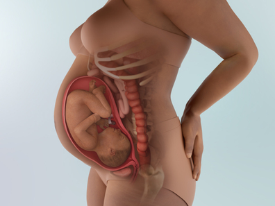
- 1. Sự phát triển của thai nhi
-
Kích thước thai nhi: 43.9cm (1.9kg)☺️😇
🧠 Xương sọ của bé vẫn còn mềm
- Khác với những phần xương khác đã cứng cáp dần theo quá trình phát triển, xương sọ của bé vẫn còn khá mềm. Nhờ vậy, khi sinh, đường kính hộp sọ có thể thu nhỏ lại, giúp bé dễ dàng đi qua đường sinh hơn (birth canal – bao gồm cổ tử cung, âm đạo và âm hộ).
- Áp lực lên đầu trong quá trình sinh mạnh đến mức nhiều em bé khi chào đời có đầu hơi nhọn. Các xương sọ sẽ không hợp nhất hoàn toàn cho đến khi trưởng thành, giúp hộp sọ có thể phát triển theo sự lớn lên của não bộ và các mô khác trong giai đoạn sơ sinh và thời thơ ấu.
🌈 Cơ quan sinh dục đã phát triển đầy đủ
- Ở bé gái, môi lớn đã phát triển; ở bé trai, tinh hoàn đã hoàn toàn di chuyển xuống bìu. Hiện tại, cả bé trai lẫn bé gái đều đang tiết ra hormone giới tính rất mạnh. Vì vậy khi sinh, bộ phận sinh dục của bé có thể trông lớn và hơi sưng.
🤰 Cử động của bé được cảm nhận rõ ràng hơn
- Cơ thể bé vẫn tiếp tục lớn lên, nhưng lượng nước ối đã đạt mức tối đa và sẽ không tăng thêm nữa. Điều này khiến không gian trong bụng mẹ trở nên chật hơn.
- Vì lớp nước ối làm đệm đã ít đi nên những cử động của bé sẽ được mẹ cảm nhận mạnh mẽ hơn nhiều!
- Khi bé chuyển sang tư thế đầu quay xuống để chuẩn bị sinh, mẹ có thể cảm thấy những cú đạp ở vị trí mới.
- Mẹ có thể thấy hơi khó chịu, nhưng cố lên một chút nữa thôi, bé sắp gặp mẹ rồi 🥰🤗
🛡️ Hệ miễn dịch đang phát triển
- Bé đang hình thành hệ miễn dịch dựa trên kháng thể nhận được từ mẹ. Khi hệ miễn dịch đã hình thành, bé có khả năng tự bảo vệ bản thân. Bé đang chuẩn bị để bước ra khỏi tử cung và đối mặt với những vi khuẩn xấu ngoài thế giới này.
😇 Làn da của em bé mềm mại hơn
- Bé yêu đang nhanh chóng mất đi vẻ nhăn nheo trước đó. Làn da của bé ít đỏ và bớt trong suốt hơn, thay vào đó, làn da trở nên mềm mại và mịn màng cùng với cơ thể đầy đặn dần để chuẩn bị chào đời.
- Các cơ quan cũng gần như hoàn thiện và lớp lông tơ trên da hầu như biến mất.
- Móng tay đã dài chạm đến đầu ngón tay, nhưng móng chân vẫn còn phát triển chưa đầy đủ. Tóc trên đầu cũng đã dày hơn khá nhiều.
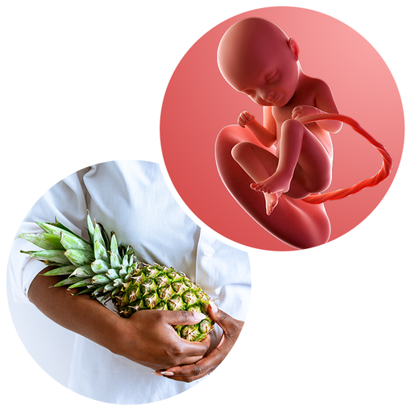
🎀 Bé của bạn có kích thước khoảng bằng một quả dứa (pineapple)🥰.
- 2. Thay đổi của cơ thể mẹ
-
Khó thở
Đây là giai đoạn khó khăn đến mức có thể diễn tả là “thở bằng vai” (어깨로 숨을 쉰다).
Tử cung của mẹ tăng kích thước và đẩy lên gần vùng thượng vị, ép lên lồng ngực khiến mẹ khó ăn đủ bữa, tim bị chèn ép dẫn đến nhịp tim tăng nhanh và hơi thở trở nên dồn dập.
Nếu huyết áp cao hơn bình thường hoặc nếu có quá nhiều nước ối, điều đó cũng có thể gây khó thở.
Khó thở nhẹ đến trung bình là bình thường vào cuối thai kỳ, nhưng nếu triệu chứng nặng hơn, hãy liên hệ bác sĩ. Nếu mẹ khó thở rõ rệt, ho kéo dài hoặc tim đập nhanh, điều này có thể là dấu hiệu của tình trạng sức khỏe nghiêm trọng cần được chăm sóc y tế.
Khí hư ra nhiều hơn và có cảm giác ngứa
Khi ngày sinh đến gần, âm đạo và cổ tử cung trở nên mềm hơn, kèm theo lượng dịch nhầy đặc tiết ra nhiều hơn. Điều này cho thấy cơ thể mẹ đang chuẩn bị cho việc sinh nở!
Nếu không có lẫn máu thì không sao, mẹ đừng lo lắng.
Hãy mặc quần lót chất liệu cotton thoáng khí và thay thường xuyên. Nếu cần, mẹ có thể dùng miếng lót quần lót để tránh ẩm ướt gây ngứa.
Bên cạnh đó, trọng lượng tử cung tăng lên gây đau tại vùng khớp mu (치골), đồng thời mẹ dễ bị táo bón và trĩ.
Sưng môi âm hộ
Sưng môi âm hộ là triệu chứng bình thường trong thai kỳ. Lưu lượng máu tăng kết hợp với áp lực từ tử cung đang lớn dần và sự thay đổi hormone khiến các môi xung quanh lỗ âm đạo bị sưng. Dù tình trạng sưng không phải lúc nào cũng gây đau, nó có thể gây ngứa hoặc khó chịu. Da ở vùng môi âm hộ cũng có thể trông sẫm màu hơn.
Khó có thể ngăn hoàn toàn tình trạng sưng môi âm hộ, nhưng bạn có thể giảm khó chịu bằng cách tránh ngồi hoặc đứng quá lâu. Thay vào đó, hãy thay đổi tư thế thường xuyên trong ngày. Dành thời gian để nằm nghỉ, nhưng cũng nên vận động nhẹ nhàng. Bạn cũng có thể mặc đồ lót hỗ trợ có tính năng nén nhẹ để kiểm soát sưng. Nếu rất khó chịu, hãy chườm lạnh bằng khăn vải sạch lên vùng này.
Đi tiểu nhiều
Hầu hết phụ nữ mang thai đều trải qua tình trạng đi tiểu nhiều. Dù đi tiểu nhiều không gây hại, nó có thể gây khó chịu và phiền toái khi bạn phải liên tục vào nhà vệ sinh. Ngoài ra, thật khó để ngủ ngon khi bạn cứ phải thức dậy nhiều lần để đi tiểu.
Để giảm bớt, hãy hạn chế uống nước khi gần đến giờ ngủ. Tránh cà phê và nước ngọt có ga cũng có thể giúp bạn giảm nhu cầu đi tiểu.
Khi đi tiểu, hãy dành thời gian và đảm bảo bàng quang được làm trống hoàn toàn. (Một mẹo: khi gần tiểu xong, hãy hơi nghiêng người về phía trước để đẩy ra tối đa lượng nước tiểu còn lại.)
Nếu bạn cũng gặp tình trạng són tiểu, hãy đi vệ sinh ngay khi cơ thể báo hiệu và có thể dùng băng lót để phòng ngừa trường hợp rỉ nước tiểu.
Lông, tóc có thể mọc dày hơn
Nhờ thay đổi nội tiết tố, tóc bạn có thể trông dày hơn hoặc mọc nhanh hơn trong thai kỳ. Điều này khá tuyệt với tóc trên đầu, nhưng một số mẹ bầu cũng nhận thấy lông trên cơ thể và mặt xuất hiện nhiều hơn.
Bạn không cần cạo hay tẩy lông nếu không muốn. Nhưng nếu bạn thích ít lông hơn, bạn có thể băn khoăn liệu tẩy lông vùng bikini khi mang thai có an toàn không.
Tẩy lông khi mang thai là an toàn, nhưng da bạn có thể nhạy cảm hơn bình thường. Để giảm kích ứng, hãy đợi đến khi lông dài khoảng 0.6–2cm, vệ sinh sạch vùng da trước khi tẩy, và đảm bảo sáp tẩy ở nhiệt độ an toàn.
Khi gần đến ngày sinh, đừng tẩy hoặc cạo lông vùng bikini hay bụng dưới. Việc cạo hoặc tẩy trước phẫu thuật có thể gây kích ứng nang lông và làm tăng nguy cơ nhiễm trùng.
- 3. Lưu ý về sức khỏe
-
🍎 Hãy chuẩn bị các món ăn nhẹ
- Tăng cân quá nhiều có thể gây các vấn đề như tiền sản giật, nhưng không tăng cân cũng không tốt.
- Nếu chỉ ăn ba bữa mà vẫn không đủ năng lượng, đó có thể là dấu hiệu cơ thể đang thiếu chất. Vì vậy, hãy chuẩn bị những món ăn nhẹ lành mạnh và ăn từng chút một giữa các bữa chính.
🚫 Tạm ngừng các chuyến đi xa
- Từ giai đoạn này, mẹ phải luôn trong trạng thái sẵn sàng đến bệnh viện bất cứ lúc nào. Vậy nên hãy tạm dừng việc di chuyển đường dài.
- Đi xe ô tô dễ khiến mẹ mệt, còn di chuyển bằng máy bay sẽ khó xử lý nếu chẳng may có dấu hiệu sinh non. Thời gian này, mẹ hãy nghỉ ngơi và chuẩn bị thật tốt cho ngày sinh nhé.
🩺 Thực hiện các xét nghiệm để chuẩn bị cho quá trình sinh nở
- Khi mang thai, lượng máu trong cơ thể tăng nhanh, điều này có thể gây gánh nặng cho chức năng tim. Nếu cảm thấy khó thở nhiều, nên thực hiện điện tâm đồ (심전도 검사).
- Do lượng máu tăng gấp 1.5 lần so với trước khi mang thai, mẹ không chỉ dễ bị quá tải tim mà từ tam cá nguyệt giữa trở đi cũng dễ xuất hiện triệu chứng thiếu máu.
- Thời điểm này nên làm xét nghiệm thiếu máu một lần nữa, bao gồm xét nghiệm hemoglobin (혈색소) và hematocrit (적혈구 용적률).
- Nếu có trường hợp phải phẫu thuật hoặc gây mê do tai nạn bất ngờ khi mang thai, việc chụp X-quang (X-선 촬영) trước sẽ hữu ích trong tình huống khẩn cấp.
- Ngoài ra, mẹ cũng được kiểm tra chức năng gan và xét nghiệm bệnh lây truyền qua đường tình dục (성병검사) một lần nữa.
‼️ Ăn các món mềm và chia nhỏ bữa ăn
- Thay vì ăn các món như cơm hay bánh mì, mẹ nên chọn những thực phẩm dễ tiêu như cá thịt trắng, rau củ, rong biển - các loại thực phẩm ít calo nhưng giàu khoáng chất và vi lượng - nhớ nhai kỹ khi ăn nhiều lần trong ngày.
- Do cơ thể trở nên nặng nề, một số mẹ bầu có thể muốn ăn qua loa bằng đồ ăn nhanh. Tuy nhiên, đồ ăn nhanh chứa nhiều calo và dầu mỡ, có thể trở thành chế độ ăn nguy hiểm trong giai đoạn cuối thai kỳ. Nếu thật sự thèm những món như vậy, mẹ nên tự chuẩn bị tại nhà bằng bánh mì lúa mạch đen hoặc bánh mì sandwich, rau củ và thịt nạc để giảm lượng muối và chất béo nạp vào.
⚠️ Nếu bụng bị gò, hãy nằm xuống nghỉ ngay
- Khi xuất hiện triệu chứng bụng gò, hãy lập tức nằm xuống nghỉ ngơi, đặc biệt là thở sâu (심호흡) sẽ giúp cải thiện rõ rệt.
Khi nằm, mẹ nên kê một chiếc gối dưới đầu gối để giúp lưng thả lỏng.
- Ngoài ra, khi đứng dậy từ tư thế nằm, mẹ cần tránh những cử động đột ngột vì điều đó có thể gây áp lực lên bụng. Hãy nghiêng người sang một bên rồi chống tay từ từ nâng phần thân trên lên.
- Khi ra ngoài, mẹ nên dùng một tay ôm bụng để bảo vệ thai nhi khỏi các va chạm nhỏ từ môi trường bên ngoài.
🔔 Đếm cử động của bé trong bụng
- Hãy chọn thời điểm trong ngày mà bé thường hoạt động. Để đếm cử động thai, bạn hãy ngồi yên hoặc nằm nghiêng sang một bên và bấm giờ xem mất bao lâu để cảm nhận được 10 cử động rõ ràng của bé (bao gồm đạp, giật nhẹ, xoay người).
- Hãy gọi cho bác sĩ nếu bạn không cảm nhận được ít nhất 10 cử động trong vòng 1-2 giờ. Có thể không có vấn đề gì, nhưng bác sĩ có thể muốn kiểm tra để chắc chắn mọi thứ ổn.
- 4. Quan hệ vợ chồng khi mang thai
-
Quan hệ tình dục: Nếu chồng kích thích âm hộ hoặc âm đạo bằng tay để tạo khoái cảm, sự kích thích quá mạnh có thể khiến tử cung co thắt và ảnh hưởng đến nhịp tim của thai nhi. Vì vậy, nên tránh những kích thích quá mạnh. Nếu có hiện tượng rỉ ối (양막 파수) hoặc chảy máu, không nên quan hệ tình dục. Hãy duy trì sự thân mật bằng những cách nhẹ nhàng như massage êm dịu.
👨Vai trò của chồng:
🥗 Hãy chuẩn bị những món ăn nhẹ lành mạnh cho vợ
Trong giai đoạn cuối thai kỳ, chỉ ba bữa ăn chính có thể không đủ dinh dưỡng cho mẹ.
Hãy chuẩn bị sẵn các món như các loại hạt, hoa quả theo mùa hoặc trái cây sấy, sữa chua, bánh mì lúa mạch đen, khoai lang, bí đỏ… và đưa cho mẹ ăn khi cần để bổ sung năng lượng.
🚶 Cùng vợ đi bộ - bước đầu cho một ca sinh khỏe mạnh
Mẹ chỉ cần được cùng bố ra ngoài đi bộ chậm rãi trước nhà cũng đã thấy vui rồi.
Vận động nhẹ cũng rất tốt cho một ca sinh nở khỏe mạnh. Nếu thời tiết không thuận tiện để ra ngoài, hai vợ chồng có thể cùng nhau tập vài động tác giãn cơ đơn giản trong nhà!
- 5. Trọng tâm thai giáo
-
- Kể cho bé nghe những câu chuyện cổ tích mang hy vọng như các bài cầu nguyện, truyện danh nhân.🤗
- Đây là giai đoạn cần tập trung hơn vì là phần cuối của quá trình thai giáo. Sau khi trò chuyện với thai nhi về những câu chuyện đời thường, mẹ tiến hành thai giáo bằng truyện cổ tích.
- Nên chọn những câu chuyện không quá ngắn, đặc biệt là các bài cầu nguyện, Kinh Thánh, truyện danh nhân, thần thoại Hy Lạp, truyện lịch sử - những nội dung chứa đựng hy vọng và mong ước chân thành của người mẹ.💞
- 6. Các thông tin cần biết khác
-
👶 Chuẩn bị đủ quần áo cho em bé
Trẻ sơ sinh không làm được nhiều thứ, nhưng tiêu thụ quần áo thì rất nhiều. Trớ sữa và thay tã thường xuyên trong những tuần đầu, nên bạn cần thật nhiều bộ ngủ (sleepers), áo liền thân (gowns), đồ pijama, cùng một vài bộ quần áo đơn giản và phụ kiện.
Hãy chuẩn bị đủ áo ngủ cho cả tuần (cộng thêm vài bộ dự phòng), cùng với những bộ quần áo dễ phối lớp (ví dụ: bodysuit kết hợp quần thun dễ mặc).
Để giữ ấm, trẻ sơ sinh thường cần thêm một lớp so với người lớn. Tùy theo mùa, bạn có thể cần thêm tất hoặc giày mềm để giữ ấm chân bé, áo khoác lót lông (fleece) hoặc áo len, mũ chống nắng. Khi mua về, hãy giặt toàn bộ quần áo. Bạn nên giặt trước lần mặc đầu tiên để loại bỏ chất kích ứng hay hóa chất còn sót lại trên vải.
🚫 Đảm bảo an toàn trong không gian phòng của bé
Mặc dù sẽ còn lâu bé mới tự di chuyển nhiều, nhưng không bao giờ là quá sớm để làm cho phòng bé an toàn. Bạn sẽ bận rộn trong vài tháng đầu sau sinh, nên làm sớm sẽ giúp bạn nhẹ nhàng hơn sau này.
Hãy bắt đầu từ những điều cơ bản. Đảm bảo cũi của bé an toàn, và tránh sử dụng các mẫu cũi lỗi thời hay tấm chắn cũi (crib bumpers) không an toàn.
Nếu bạn treo tranh trong phòng bé, đừng treo ngay phía trên cũi hoặc bàn thay tã.
Nếu dùng đồ treo nôi (mobile), hãy để ngoài tầm với và cố định chắc chắn để tránh rơi vào cũi.
Cố định các đồ nội thất nặng vào tường, để dây điện nằm ngoài tầm với và lắp các nắp bảo vệ ổ cắm.
🤱 Giữ cơ thể luôn ấm
Nếu cơ thể bị lạnh, triệu chứng bụng gò sẽ dễ xuất hiện. Dù vào mùa hè khi bật điều hòa, nguyên tắc là giữ nhiệt độ trong phòng ở mức không làm chảy mồ hôi. Tuy nhiên, tại văn phòng thì không phải lúc nào cũng áp dụng được nguyên tắc này. Vì vậy, mẹ nên chuẩn bị khăn hoặc chăn nhỏ để phủ lên đầu gối, hoặc mang tất dài đến bắp chân để giữ cơ thể ấm.
👣 Đặt một bệ nhỏ dưới chân và kê một chân lên
Khi phải ngồi làm việc lâu trên ghế văn phòng, chân có thể bị sưng và mệt mỏi vào buổi chiều. Đặt một bệ nhỏ cỡ hộp dưới chân và kê chân lên sẽ giúp giảm áp lực lên lưng và ngăn ngừa sưng phù, mệt mỏi ở chân.
🛑 Tránh lái xe đường dài trên 1–2 giờ
Việc lái xe quãng ngắn trong thời gian ngắn thì có thể chấp nhận được đến tháng thứ 9. Tuy nhiên, nếu lái xe hơn 1 giờ liên tục thì nên tránh vì cơ thể duy trì trạng thái rung lắc lâu có thể gây co thắt tử cung.
Nếu bắt buộc phải lái lâu hơn, hãy nghỉ ngơi sau mỗi 30-40 phút. Trong thai kỳ, sự tập trung và phản xạ của mẹ dễ suy giảm so với bình thường, vì vậy càng cần chú ý đến an toàn giao thông.
-
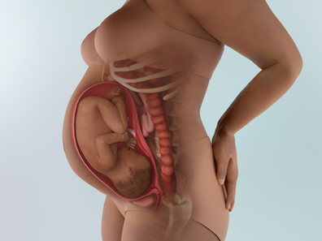
- 1. Sự phát triển của thai nhi
-
Kích thước thai nhi: 45.5cm (2.1kg) 😄💟
🛡️ Hệ miễn dịch đã phát triển
Từ mẹ, kháng thể được truyền qua dây rốn giúp hình thành các tế bào miễn dịch của bé. Trước đây, bé chủ yếu dựa vào kháng thể đi qua nhau thai, bây giờ hệ miễn dịch của bé đã phát triển đến mức có thể tự tồn tại đến 99%. Bé đang dần có khả năng tự bảo vệ mình rồi đấy.
✨ Hầu hết các chức năng đều đã phát triển
- Phổi và khả năng điều chỉnh thân nhiệt của bé vẫn còn hơi non nớt, nhưng gần như tất cả các chức năng khác đã hoàn thiện.
- Lớp gây (vernix - lớp sáp trắng trên da bé) cũng dày lên để chuẩn bị cho việc chào đời. Lớp gây này giúp bảo vệ làn da mỏng manh của bé khỏi nước ối 💧 và giúp bé dễ dàng cử động trong không gian tử cung chật chội.
🐿️ Con đang có ‘lương thực dự trữ’ trong cơ thể
- Bé đang tích trữ sắt mà mẹ truyền qua nhau thai. Giống như chú sóc gom góp hạt dẻ, bé cũng cất từng chút sắt vào gan của mình.
- Lượng sắt dự trữ này sẽ được sử dụng như nguồn dinh dưỡng khẩn cấp trong những lúc bé chưa bú được nhiều sữa mẹ.
🤗 Vị trí của bé gần như đã được cố định
Ở giai đoạn này, hầu hết thai nhi đều quay đầu xuống dưới để vào vị trí sinh. Tuy nhiên, một số bé vẫn giữ đầu hướng lên trên cho đến lúc sinh. Không gian chuyển động của bé trở nên chật hơn nên bé chỉ xoay trở nhẹ, đạp ít hơn và cử động trở nên chậm lại. Tuy vậy, bé vẫn phản ứng bằng cơ thể với các kích thích từ bên ngoài vì các giác quan đã phát triển đáng kể.
- 2. Thay đổi của cơ thể mẹ
-
📌 Đau thắt lưng và hông (요통) trở nên nghiêm trọng
- Tử cung phát triển với chiều cao đáy tử cung khoảng 30cm khiến bụng to lên, làm đau lưng nặng hơn và khiến mẹ trở nên chậm chạp hơn. Tử cung cũng chèn ép bàng quang làm tăng số lần đi tiểu và cảm giác tiểu không hết dù vừa đi xong.
- Bụng lớn cũng kéo trọng tâm cơ thể ra phía trước, làm căng và yếu đi các cơ bụng - những cơ vốn có nhiệm vụ nâng đỡ cột sống.⚡💢
Hormone thai kỳ cũng góp phần gây đau vùng đai chậu, vì chúng làm các khớp lỏng lẻo hơn. Đau vùng chậu có thể rất khó chịu và thậm chí hạn chế khả năng vận động.
- Thai kỳ cũng thường gây đau dây chằng tròn. Loại đau này có thể là một cơn đau nhói, sắc, đột ngột hoặc một cảm giác âm ỉ kéo dài ở bụng dưới hoặc vùng háng.
- Dịch tiết âm đạo trở nên đặc hơn và chứa nhiều chất nhầy hơn. Tình trạng tăng sắc tố trở nên rõ rệt, đường sọc nâu trên bụng (흑색 선) đậm lên trông thấy.
📌 Khi chân bị sưng, hãy làm mát chân
- Giai đoạn này, mắt cá chân và bàn chân sưng nhiều hơn 🦶, tay và mặt cũng có thể bị phù. Có thể bị chuột rút hoặc đau ở chân và bị vọp bẻ khi ngủ.
- Hãy kê chân cao và giữ cho chân mát 👣. Quấn chân bằng khăn lạnh cũng rất hiệu quả.
- Nếu khi ấn vào chỗ sưng mà da không trở lại như cũ, mẹ nên đi khám, đó có thể là dấu hiệu của tiền sản giật ⚠️.
📌 Táo bón
- Khoảng một nửa phụ nữ mang thai bị táo bón🚽😓. Khi mang thai, cơ thể sản xuất nhiều progesterone – loại hormone khiến các cơ giãn ra, bao gồm cả cơ của đường tiêu hóa. Thức ăn vì thế di chuyển chậm hơn và dễ gây táo bón. Mẹ cần uống nhiều nước hơn để duy trì nhu động ruột bình thường.💦💧
- Khi bụng to lên, mẹ di chuyển ít hơn, và giảm vận động dễ khiến táo bón nặng thêm. Để tránh điều này, hãy vận động thường xuyên, uống đủ nước và tăng chất xơ🥦🥦. Có thể dùng thuốc làm mềm phân không kê đơn, nhưng tránh thuốc nhuận tràng. Chủ động phòng táo bón cũng giúp giảm nguy cơ trĩ khi mang thai.
📌 Khí hư âm đạo
- Khí hư màu trắng sữa hoặc trong, mùi nhẹ và có thể loãng hoặc đặc - là bình thường, dù có mang thai hay không.
- Một số dạng khí hư khác cũng bình thường trong thai kỳ – bao gồm khí hư màu nâu (do chứa máu cũ).
- Tuy nhiên, một số khí hư cho thấy có vấn đề như: khí hư màu xanh, có mùi hôi, gây đau hoặc ngứa🤢.
- Gần cuối thai kỳ, mẹ có thể mất nút nhầy (mucus plug). Khi đó, mẹ sẽ thấy khí hư ra nhiều dần trong vài ngày, hoặc xuất hiện một cục dịch nhầy đặc, màu trong, hồng nhạt, nâu hoặc có chút máu.
- Nước ối nếu bị vỡ ối khác với khí hư. Nước ối sẽ chảy ra liên tục (không theo từng đợt), có màu trong hoặc hơi vàng nhạt, loãng và không mùi hoặc hơi ngọt.
- 3. Lưu ý về sức khỏe
-
Luôn chuẩn bị sẵn sàng cho sinh nở
Vì không biết khi nào sẽ sinh, mẹ nên luôn ở trong trạng thái sẵn sàng.
Tắm rửa thường xuyên, thay đồ lót sạch, và luôn trong trạng thái gọn gàng.🌬️
Điều quan trọng hỗ trợ sinh nở là kiểm soát hơi thở. Hãy luyện tập các kỹ thuật thở đã học ở lớp tiền sản hoặc qua video, luyện đến mức phản xạ tự nhiên.
Khi cơn đau đẻ mạnh ập đến, mẹ có thể không nghĩ được gì 😣, nên tập thật nhiều từ bây giờ sẽ rất có ích.
Hãy chuẩn bị sẵn túi đồ đi sinh
Hãy viết ra danh sách những vật dụng cần thiết khi sinh và kiểm tra xem có món nào mẹ chưa chuẩn bị không.👜
Một số bệnh viện sẽ cung cấp vài vật dụng cơ bản, nên mẹ hãy kiểm tra trước nhé!
Đồ của em bé nên được giặt sạch từ trước.
✓ Đồ của mẹ
Sổ khám thai, thẻ BHYT (thẻ 국민행복카드), băng vệ sinh dạng quần mặc vào ban đêm, đồ vệ sinh cá nhân, miếng lót thấm sữa, ống hút gập (vì khi mẹ nằm sẽ khó dùng ống hút thẳng), áo giữ ấm & tất, cardigan, máy hút sữa, đồ lót rộng, khăn ướt, đai bụng, dây buộc tóc, bảo vệ cổ tay, chăn mỏng, dép đi trong bệnh viện, đồ dưỡng da & son dưỡng môi, đệm ngồi sau sinh…
✓ Đồ của bé
Khăn quấn, khăn lớn quấn ngoài, áo sơ sinh, khăn gạc, bao tay/bao chân…
Giảm thị lực trong thai kỳ chỉ là tạm thời
Gần đây mẹ cảm thấy mắt mình yếu hơn?👀 Đừng lo, thị lực của mẹ không thật sự xấu đi đâu — tất cả chỉ là do hormone thai kỳ.
Do sự thay đổi hormone, giác mạc có thể dày lên gây cận thị hoặc viễn thị nhẹ. Lượng nước mắt cũng giảm, gây khô mắt, đặc biệt nếu mẹ đeo kính áp tròng 👁️.
Sau sinh, tình trạng này sẽ trở lại bình thường. Hiện tại mẹ nên ưu tiên dùng kính gọng.
Nếu thị lực giảm nghiêm trọng, đó có thể là dấu hiệu của tiền sản giật ⚠️, nên mẹ hãy theo dõi kỹ.
Kiểm tra vị trí của bé
Kiểm tra bằng siêu âm xem thai nhi có ở ngôi mông (둔위), ngôi ngược (역아) hay không. Nguyên nhân ngôi mông chưa được xác định rõ, nhưng nguy cơ cao hơn ở trường hợp song thai, đa thai, đa ối (양수과다증), nhau tiền đạo (전치태반), hoặc có u xơ tử cung (자궁근종).
Chú ý thực đơn
Tăng lượng tiêu thụ hành tây có thể giúp giảm lo lắng trước sinh. Giai đoạn này, do khung chậu giãn nở nên lưng, vai, cổ dễ nhức mỏi và đau nhiều → bổ sung 100g rau củ có màu xanh–vàng mỗi bữa để cung cấp vitamin nhóm B sẽ hỗ trợ giảm đau hiệu quả.
Chú trọng chuẩn bị bữa ăn nhẹ một cách đầy đủ. Giai đoạn này chỉ cần ăn một chút là thấy no, nhưng không lâu sau lại cảm thấy đói. Một số mẹ bầu dùng bánh kẹo hoặc kem tươi để chống đói, nhưng điều này dễ dẫn đến béo phì nên cần tránh. Hạn chế tối đa đồ ngọt và thực phẩm chế biến sẵn; thay vào đó, ăn bữa phụ có chứa nguồn protein và canxi.
Không nên đi xa một mình và khi ra ngoài cần mang theo đồ chuẩn bị sinh. Có nhiều mẹ bầu đang mua sắm ở trung tâm thương mại thì bất ngờ xuất hiện những cơn co thắt, dẫn đến phải vào viện ngay.
Giai đoạn này thường xuất hiện cơn gò chuyển dạ giả khiến bụng căng và đau. Tốt nhất hạn chế đi lại một mình và giảm tần suất ra ngoài. Vì em bé không phải lúc nào cũng sinh đúng ngày dự sinh, nên từ giai đoạn này mẹ phải chuẩn bị sẵn sàng mọi thứ: hồ sơ nhập viện, vật dụng cá nhân cần thiết khi ở viện, đồ sơ sinh,…
- 4. Quan hệ vợ chồng khi mang thai
-
Tránh quan hệ tình dục trực tiếp và nên giải tỏa bằng các phương pháp gián tiếp như quan hệ bằng miệng (오럴 섹스). Quan hệ bằng miệng khi mang thai nhìn chung là an toàn. Tuy nhiên, chồng cần chú ý không thổi không khí vào trong âm đạo khi âu yếm để tránh nguy cơ biến chứng.
👨Vai trò của chồng:
🎒 Chồng cũng cần chuẩn bị túi đồ đi sinh
- Từ lúc bắt đầu chuyển dạ đến khi bé chào đời có thể mất nhiều thời gian. Để có thể hỗ trợ mẹ tốt nhất, bố cần ở trong trạng thái thoải mái và đầy đủ đồ dùng.
- Khi mẹ đau chuyển dạ, bố sẽ rất bối rối 😵, nên hãy chuẩn bị sẵn túi đồ cho bố từ trước, như: đồ vệ sinh cá nhân, quần áo để thay, dép, đồ ăn nhẹ & đồ uống, gối, chăn, sạc điện thoại. Điện thoại rất quan trọng để đo cơn co, chụp ảnh khoảnh khắc sinh con 📸, liên lạc với người thân,...
⚠️ Lắp ghế an toàn cho trẻ sơ sinh và kiểm tra thật kỹ
Nếu gia đình định lắp ghế an toàn cho bé trên ô tô, bố cần chú ý:
✓ Ghế trẻ sơ sinh phải được lắp quay về phía sau. Đây là cách bảo vệ bé hiệu quả nhất.
✓ Hãy lắp ghế ở góc 45 độ. Nếu quá dựng đứng, khi có va chạm, cổ bé có thể bị gập hoặc gây tổn thương nội tạng.
✓ Chỗ an toàn nhất là ghế sau. Đừng lắp ghế trẻ em ở ghế phụ phía trước — túi khí và kính chắn gió rất nguy hiểm.
✓ Khi ngồi vào ghế, không mặc áo khoác dày cho bé. Trong tai nạn, áo khoác dày khiến dây an toàn không cố định được cơ thể bé, có thể khiến bé bị văng ra ngoài.
- 5. Trọng tâm thai giáo
-
- Rèn luyện kỹ thuật thở Sophrology (소프롤로지) hoặc thở Lamaze (라마즈 호흡) để chuẩn bị cho cuộc sinh.
- Từ trước đến nay mẹ đã dành nhiều nỗ lực cho thai nhi. Tuy nhiên, việc sinh dễ hay sinh khó sẽ quyết định mức độ trọn vẹn của những nỗ lực ấy. Vì vậy, cần tiếp tục duy trì các hoạt động giúp mẹ sinh thường thuận lợi.
- Có thể coi việc chuẩn bị cho sinh thuận là nội dung thai giáo quan trọng nhất ở giai đoạn này. Học phương pháp thở Sophrology, thở Lamaze, hoặc các bài tập thể dục cho bà bầu để giảm nỗi sợ sinh nở, đồng thời duy trì trạng thái tích cực và thực hành thiền sẽ rất hữu ích.
- Phương pháp thở Sophrology là kỹ thuật sinh vượt đau dựa trên luyện tập ý thức, kết hợp giữa thiền trị liệu và giãn cơ để ổn định tinh thần và cơ thể.
- Phương pháp thở Lamaze tập trung vào việc điều hòa hơi thở bị rối loạn trong lúc chuyển dạ, giúp cung cấp oxy hiệu quả cho cả mẹ và thai nhi, dựa trên kiểu thở bằng ngực (hô hấp ngực) với nhịp nâng–hạ của lồng ngực.
- 6. Các thông tin cần biết khác
-
Kiểm tra không gò (Non-Stress Test – NST / Kiểm tra cử động thai 태동검사)
Kiểm tra không gò là một phương pháp đánh giá sức khỏe của thai nhi bằng cách sử dụng máy theo dõi tim thai điện tử (전자태아심박동감시 장치) ở sản phụ không có cơn gò tử cung. Máy sẽ ghi lại nhịp tim của thai để bác sĩ đánh giá tình trạng của bé.
Cách tiến hành:
- Mẹ đi tiểu để làm trống bàng quang, sau đó nằm trên giường. Hai cảm biến của máy theo dõi tim thai sẽ được gắn lên bụng. Máy sẽ ghi đồng thời nhịp tim thai và xem có cơn gò tử cung hay không.
- Mỗi khi mẹ cảm nhận thai máy, mẹ nhấn nút trên thiết bị đo nhịp tim để máy ghi nhận cử động đó.
- Khi thai cử động, nhịp tim thai tăng nhẹ là phản ứng hoàn toàn bình thường và khỏe mạnh.
Thời điểm và số lần thực hiện:
Thời gian và tần suất làm NST tùy thuộc vào tình trạng của mẹ và thai nhi. Kiểm tra này được chỉ định trong nhiều trường hợp như:
- Mẹ bị tiểu đường thai kỳ
- Cao huyết áp
- Thai chậm phát triển
- Ít ối
- Quá ngày dự sinh
- Giảm thai máy
Tùy tình trạng thai nhi, bác sĩ có thể yêu cầu thực hiện sớm hơn hoặc thường xuyên hơn.
-
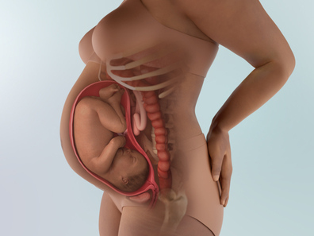
- 1. Sự phát triển của thai nhi
-
Kích thước thai nhi: 47cm (2.4kg) 👶💖
- Bé đã có hình dáng và tỉ lệ giống như một trẻ sơ sinh. Trong khoảng 5 tuần còn lại, bé sẽ tiếp tục lớn nhanh để chuẩn bị gặp bố mẹ!
- Nếu ở tam cá nguyệt giữa, lượng mỡ chỉ chiếm khoảng 2% cơ thể thì bây giờ đã tăng lên 15%, và đến lúc sinh sẽ gần đạt 30%!
- Móng tay, móng chân đã mọc đến hết đầu ngón, và bộ phận sinh dục cũng đã hoàn thiện.💅👣
- Não bộ của bé sẽ tiếp tục phát triển sau khi sinh🧠🧠. Các tế bào thần kinh phát triển mạnh mẽ hơn, nhưng lượng chất bên trong não vẫn chưa đầy đủ. Các kết nối thần kinh cũng cần thêm thời gian để hoàn thiện. Não của bé sẽ tiếp tục phát triển thêm vài năm sau khi chào đời.
- Ngoại trừ phổi, hầu hết các cơ quan nội tạng đã hoàn thiện chức năng; vì vậy nếu sinh non ở giai đoạn này, bé có thể gặp một chút vấn đề về hô hấp nhưng đa số đều có khả năng sống sót.
- Thận của em bé hiện đã phát triển hoàn chỉnh – nước tiểu đã bắt đầu được tạo ra từ khi thai được 13 tuần. Em bé đi tiểu vào trong nước ối. Phân su đầu tiên của em bé (gọi là meconium) đang tích tụ trong ruột của bé.
- Hiện tại em bé đã có các chu kỳ ngủ rõ ràng. Mẹ có thể bắt đầu nhận ra những chu kỳ, cảm thấy bé cử động nhiều hơn khi bé thức và ít hơn khi bé ngủ.😴💤
- 2. Thay đổi của cơ thể mẹ
-
📌 Tình trạng khó chịu trong sinh hoạt hằng ngày tiếp tục tăng lên. Mẹ vừa cảm thấy yên tâm vì sắp đến ngày sinh, vừa lo lắng, đôi khi nôn nóng và khó giữ bình tĩnh dẫn đến cáu gắt và dễ kích động. 😣🤯
📌 Sự lơ đãng trở nên rõ rệt hơn, đôi khi xuất hiện chảy máu cam, nghẹt mũi, ù tai và có thể xuất hiện dấu hiệu thiếu máu. Lợi trở nên yếu và dễ chảy máu.
📌 Cảm giác thèm ăn lúc nhiều lúc ít, kèm theo đau đầu, chóng mặt, choáng váng, khiến mẹ ngày càng cảm thấy không thoải mái.🤢🍽️
📌 Rất nhiều phụ nữ cảm thấy nóng khi mang thai, bất kể thời tiết thế nào. Có nhiều lý do như mẹ đang mang nhiều trọng lượng hơn, tim phải làm việc nhiều hơn để nuôi em bé, và lượng máu tăng khiến da ấm hơn. Hãy uống đủ nước và mặc đồ thoáng, rộng rãi. Vào mùa đông, nên mặc nhiều lớp để có thể cởi bớt khi cần.🔥🥵💧
📌 Trong giai đoạn cuối thai kỳ, mẹ không thể tránh hoàn toàn ợ nóng. ⚠️Cần chú ý kỹ đến những thực phẩm khiến dạ dày khó chịu, như nước có ga🍫, chocolate, 🍊trái cây họ cam quýt và nước ép, cà chua, mù tạt, giấm, bạc hà, thịt chế biến sẵn, các món ăn nhiều dầu mỡ, cay, chiên rán hoặc nêm nếm đậm.
📌 Đau đầu có thể xuất hiện khi mẹ mệt, đói hoặc mất nước. Thay đổi thị lực liên quan đến thai kỳ cũng có thể gây đau đầu, cũng như căng thẳng, trầm cảm và dị ứng. Các chuyên gia thường khuyên ghi nhật ký đau đầu để xác định nguyên nhân. Lần tới khi bị đau nửa đầu hoặc đau đầu, 📝hãy ghi lại mọi thứ đã ăn trong 24 giờ trước đó và mẹ đang làm gì khi cơn đau bắt đầu. Chườm lạnh hoặc ấm lên trán hoặc sau gáy có thể giúp giảm đau. Đừng để đói hoặc khát – hãy ăn các bữa nhỏ thường xuyên để tránh hạ đường huyết. Tập thể dục đều đặn trong thai kỳ có thể giúp giảm tần suất và mức độ đau nửa đầu, giảm căng thẳng gây đau đầu do căng cơ. Massage, thiền, yoga tiền sản và châm cứu cũng có thể giúp giảm đau đầu. 🧘♀️❄️
📌 Trĩ rất phổ biến trong tam cá nguyệt thứ ba. Những mạch máu nhỏ, sưng lên ở vùng trực tràng thường xảy ra do áp lực từ tử cung đang lớn dần, cùng với nồng độ progesterone tăng và táo bón thai kỳ. Trĩ thường gây ngứa, đau và khó chịu nhẹ – hoặc rất đau nếu bạn rặn. Một số trường hợp có thể gây chảy máu trực tràng hoặc có máu trong phân. Nên duy trì đủ nước, ăn thực phẩm giàu chất xơ và vận động thường xuyên. Tránh rặn, và nếu đã táo bón, hãy dùng thuốc làm mềm phân. Ngồi quá lâu cũng có thể gây trĩ, vì vậy hãy đứng dậy và đi lại thường xuyên nhất có thể.🍐🚶♀️💦
- 3. Lưu ý về sức khỏe
-
Luyện tập trước các phương pháp thở khi sinh
- Những kỹ thuật thở đúng giúp cung cấp đủ oxy cho cơ thể mẹ, hỗ trợ thư giãn cơ và mô, đồng thời cung cấp oxy đều đặn cho bé.
- Trong lúc chuyển dạ, hơi thở còn giúp giảm đau bằng cách phân tán sự tập trung khỏi cơn co thắt.
- Hãy thử luyện thở Lamaze, thở Sofrology, hoặc phương pháp phù hợp với bạn. Lúc sinh, dù hồi hộp hay lo lắng, bạn vẫn có thể điều chỉnh hơi thở tự nhiên hơn.
Đừng quên bổ sung chất xơ
- Khi tiêu hóa kém, nên ăn thực phẩm giàu chất xơ như rau củ, trái cây, gạo lứt, hoặc các loại ngũ cốc. Bổ sung đủ chất xơ mỗi bữa sẽ giúp phòng táo bón và kiểm soát cân nặng.
- Tuy nhiên, đừng nạp quá nhiều một lúc, vì có thể khiến bạn bị đầy hơi. Hãy tăng lượng chất xơ từ từ.
Duy trì vận động nhẹ nhàng giúp giảm đau bụng ở trẻ sơ sinh - Những bé có mẹ vận động đều đặn thường dễ ngủ hơn vào ban đêm và ít bị đau bụng hơn.
- Các nhà khoa học cho biết: nhịp tim và mức oxy của mẹ thay đổi trong lúc tập luyện giúp bé dễ chìm vào giấc ngủ. Âm thanh và chuyển động mẹ tạo ra khi tập cũng giúp giảm đau bụng cho bé sau này.
- Vì vậy, hãy duy trì vận động nhẹ nhàng đều đặn.
Hỏi trước bác sĩ về các việc cần làm khi dấu hiệu sinh xuất hiện
Khi nào cần gọi bệnh viện?
Khi nào cơn co đủ mạnh để đi viện?
Nếu vỡ ối thì xử lý thế nào?
Tình huống nào cần lập tức đến viện?
Khi đã có kế hoạch rõ ràng, bạn sẽ bớt hoang mang trong ngày chuyển dạ.
Nếu chảy máu âm đạo, hãy đi khám ngay
- Đừng tự phỏng đoán tại nhà. Dù lượng máu ít, vẫn có thể liên quan đến biến chứng nguy hiểm như nhau bong non.
- Đặc biệt, nếu chảy máu kéo dài hơn một ngày, hoặc có máu đỏ sẫm kèm đau dữ dội, có thể là nhau bong non hoặc nhau tiền đạo — hãy đến bệnh viện lập tức.
Theo dõi xem thai máy có xuất hiện đều đặn hay không
- Việc không cảm nhận thai máy một thời gian không có nghĩa là thai đã tử vong. Chẩn đoán thai lưu cần được xác định bằng cách theo dõi kích thước tử cung và nhịp tim thai lặp lại nhiều lần trong khoảng 2–3 tuần.
- Tuy nhiên, nếu bụng không lớn lên theo tháng, vùng bụng dưới cảm thấy nặng và lạnh, ngực bớt căng, và thai máy vốn có trước đây đột ngột biến mất thì phải đến bệnh viện ngay lập tức.
Khi khát, hãy ngậm đá thay vì uống nước
- Với mẹ bầu đã tăng cân quá nhiều, ngay cả một cốc nước cũng cần cân nhắc, vì bụng to gây chèn ép dạ dày khiến mẹ cảm thấy khát hơn.
- Nếu uống quá nhiều nước để giải khát, cân nặng có thể tăng thêm. Khi khát quá mức, hãy ngậm một viên đá và để đá tan từ từ để tránh nạp quá nhiều nước.
Cố gắng ngủ đủ và nghỉ ngơi nhiều nhất có thể
- Giai đoạn này mẹ dễ mệt hơn bình thường, và mức độ mệt mỏi tăng lên khi gần đến ngày sinh. Để tránh kiệt sức, mẹ cần ngủ đủ giấc và dành thời gian thư giãn nhiều hơn. Nên chuẩn bị chăn hoặc khăn để có thể nằm nghỉ bất cứ khi nào mệt. Tránh uống nhiều nước trước khi ngủ để không phải thức dậy quá nhiều lần giữa đêm, điều này sẽ làm giấc ngủ bị gián đoạn.
Giặt quần áo và chăn gối của em bé
- Hãy giặt tất cả các bộ đồ nhỏ xinh và khăn mền để loại bỏ các chất có thể gây kích ứng.
- Bạn có thể dùng loại nước giặt dành riêng cho trẻ sơ sinh, hoặc loại không mùi, dịu nhẹ, không gây dị ứng.
- Tránh dùng chất giặt có chất chống tĩnh điện hoặc làm mềm vải vì chúng có thể gây kích ứng da trẻ sơ sinh.
- 4. Quan hệ vợ chồng khi mang thai
-
Sinh hoạt tình dục: Đáy tử cung đã nâng lên đến sát vùng thượng vị, kèm theo các cơn co tử cung không đều khiến ham muốn tình dục của mẹ bầu giảm mạnh. Chồng cần thấu hiểu thể trạng của vợ và không nên đòi hỏi quá mức. Nếu cần duy trì quan hệ, có thể chọn tư thế như: chồng quỳ gối, vợ ngồi lên đùi chồng từ phía trước. Tuy nhiên, để tránh nguy cơ sinh non, nguyên tắc bắt buộc là phải giao hợp nông.
👨Vai trò của chồng:
👨👩👦 Tìm hiểu chế độ nghỉ thai sản cho người chồng
📅 Ở Hàn Quốc, từ ngày 23/02/2025, chế độ nghỉ thai sản cho chồng đã được tăng lên 20 ngày.
🔄 Có thể chia tối đa 3 lần để sử dụng, và phải xin trong vòng 120 ngày tính từ ngày sinh.
📘 Vì đây là chế độ bắt buộc theo luật, công ty phải cho nghỉ - bố hãy tìm hiểu và chuẩn bị trước để sử dụng đầy đủ quyền lợi.
🚗 Chuẩn bị trước để có thể đưa vợ đến bệnh viện thật nhanh
🗺️ Nên tính trước đoạn đường nhanh nhất đến bệnh viện.
⛽ Từ giờ, nhớ kiểm tra để xe lúc nào cũng còn đủ xăng.
🧺 Đặt vài chiếc khăn lớn ở ghế sau - có thể rất hữu ích trong tình huống khẩn cấp.
- 5. Trọng tâm thai giáo
-
Khi cảm thấy lo lắng hoặc bồn chồn, mẹ có thể tập thêu để xua bớt tạp niệm🧵. Khi cầm kim và tỉ mỉ thêu từng mũi, tâm trí mẹ sẽ được tập trung, không còn khoảng trống cho những suy nghĩ tiêu cực. Việc duy trì sự tập trung cho đến khi hoàn thành sản phẩm giúp ích cho cả mẹ và thai nhi. Ngoài ra, 🖐️việc cử động bàn tay khi thêu giúp kích thích não bộ, mang lại tác động tích cực đến sự phát triển não của bé. 🌈Màu sắc phong phú của sợi chỉ cũng giúp phát triển khả năng cảm nhận màu sắc của thai nhi. Tuy nhiên, mẹ cần đảm bảo tư thế thêu thoải mái, tránh ngồi lâu trong tư thế gây đau mỏi.
- 6. Các thông tin cần biết khác
-
Trước khi nhập viện sinh, mẹ cần chuẩn bị trước một số việc sau:
Gửi gắm con lớn: Trong trường hợp sinh bé thứ hai, mẹ cần tính trước người có thể chăm con lớn khi cơn chuyển dạ bắt đầu bất ngờ. Nhờ sự hỗ trợ của người thân thiết để có thể dễ dàng liên lạc bất cứ lúc nào.
Ghi chú kỹ những việc như khóa cửa, kiểm tra gas, ngày thu tiền phí quản lý, nhà hàng thường gọi, số điện thoại giao nước,… và dán lên cửa tủ lạnh.
Lưu lại danh bạ liên lạc: Chuẩn bị hai bản danh sách số điện thoại cần thông báo khi sinh như nhà chồng, nhà mẹ đẻ, bạn bè, họ hàng, hàng xóm, công ty của chồng. Một bản dán ở nơi dễ thấy ở nhà, một bản bỏ vào sổ mẹ bầu để tiện liên lạc tại bệnh viện.
Kiểm tra đồ dùng sinh hoạt như giấy vệ sinh, kem đánh răng, bàn chải, xà phòng, chất tẩy rửa,… để đảm bảo gia đình không bị thiếu thốn.
Chuẩn bị món ăn sẵn: Vứt bỏ thức ăn cũ trong tủ lạnh và chuẩn bị vài món ăn sẵn mà gia đình thường ăn. Có thể chuẩn bị cà ri ăn liền, tương đen jjajang (자장), các loại canh/ súp đóng gói,… để chồng – người có thể không giỏi nấu ăn – dùng cho tiện.
Sắp xếp quần áo thay đổi trong 3–7 ngày nằm viện cho chồng và các con, gồm đồ lót, tất, áo sơ mi, khăn tay, áo khoác,… và gấp gọn vào ngăn tủ.
-
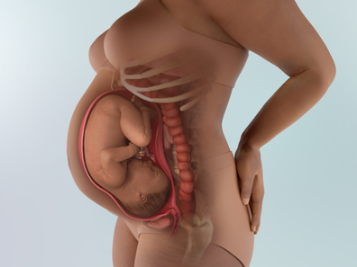
- 1. Sự phát triển của thai nhi
-
Kích thước thai nhi: 47.8cm (2.6kg) 😄💟
👶 Bé đạp ít hơn
Em bé càng gần ngày sinh thì sẽ dần đưa đầu xuống thấp vào trong khung chậu. Tùy từng bé mà vẫn có bé quay đầu lên trên và ngồi thẳng. Khi bé đã vào vị trí, mẹ có thể cảm nhận bé hoạt động ít mạnh mẽ hơn trước, nhưng thực tế số lần vận động của bé không hề giảm. ⚠️Nếu bé hoàn toàn không cử động, hoặc sau khi cử động mạnh rồi đột ngột dừng lại, đó có thể là dấu hiệu bất thường của thai nhi, cần đến bệnh viện ngay lập tức.
🌟 Giai đoạn cuối thai kỳ, tốc độ phát triển dần chậm lại
Bé đang tích trữ năng lượng để chuẩn bị bước ra thế giới bên ngoài💪. Nếu tiếp tục phát triển nhanh, việc sinh ra sẽ khó khăn hơn, nên sự tăng trưởng sẽ dần tạm ngừng. Ngoài ra, xương bé vẫn còn mềm giúp quá trình chào đời dễ dàng hơn, và các mảnh xương sọ sẽ chồng lên nhau khi sinh để làm cho đầu bé thu nhỏ lại, hỗ trợ bé chui ra thuận lợi hơn. Đây chính là điều kỳ diệu của cơ thể.
🍀 Chức năng các cơ quan nội tạng trở nên hoàn thiện hơn
Cơ thể có thêm mỡ và hệ cơ phát triển rõ rệt. Thông qua nhau thai, bé nhận được miễn dịch với bệnh tật từ cơ thể mẹ và sẵn sàng chờ đến lúc chào đời.
🌬️ Phổi của bé đã sẵn sàng để thích nghi với thế giới bên ngoài
Khi trẻ sơ sinh hít vào lần đầu tiên – thường trong vòng khoảng 10 giây sau khi sinh – phổi sẽ nở ra và phần chất lỏng còn lại trong các phế nang sẽ được thay thế bằng không khí.
🦴 Xương của em bé đang cứng dần
Xương của em bé đang dần cứng lại, dù vẫn mềm hơn xương người lớn. Một số xương lúc này vẫn được tạo thành hoàn toàn từ sụn mềm và sẽ dần được thay thế bằng xương thật trong suốt thời thơ ấu. 🦵Thông tin thú vị: Trẻ sơ sinh có hơn 275 chiếc xương, nhưng người lớn chỉ có 206 chiếc, bởi vì một số xương sẽ hợp nhất lại theo thời gian.
💩 Hình thành phân su (meconium)
Em bé đang rụng phần lớn lớp lông tơ bao phủ cơ thể (lanugo) cùng lớp chất gây màu trắng bảo vệ da trong tử cung (vernix caseosa). Bé nuốt cả hai thứ này, cùng với các dịch tiết khác, tạo thành hỗn hợp màu đen gọi là phân su (meconium) – đây sẽ là dạng phân đầu tiên của trẻ sau khi chào đời.🧸
- 2. Thay đổi của cơ thể mẹ
-
😣 Đau nhức vùng chậu
Thai nhi đang chèn lên dây thần kinh vùng chậu và chân nên có thể gây đau nhói, cảm giác như bị kéo xuống dưới, hoặc cảm giác tê bì⚡. Càng gần sinh thì triệu chứng càng tăng, nhưng sẽ hết ngay khi sinh em bé. Có thể sử dụng đai hỗ trợ (pregnancy bands/belts) để ổn định xương chậu, tập vật lý trị liệu, châm cứu giảm đau (trao đổi với bác sĩ trước).
🐧 Bắt đầu bước đi lảo đảo kiểu “chim cánh cụt” ^__^
Ở tuần 36, dáng đi lảo đảo là đặc trưng. Không chỉ vì bụng lớn mà còn do hormone khiến các mô liên kết trở nên lỏng lẻo, làm thay đổi dáng đi. 💃Cơ thể mẹ giờ đây đang mềm mại và linh hoạt hơn để chuẩn bị cho việc sinh nở.
🥚 Hãy tăng cường protein (단백질)
Ở tam cá nguyệt cuối, protein đặc biệt quan trọng. Não bé đang phát triển với tốc độ mạnh mẽ và rất cần protein, đặc biệt là các acid béo Omega-3 như ALA và DHA. Thực phẩm giàu protein chứa Omega-3 gồm thịt, cá🐟, trứng. Omega-3 hỗ trợ phát triển trí não cho bé và còn giúp giảm nguy cơ trầm cảm sau sinh ở mẹ.
👩 Chuẩn bị chỗ ngủ cho em bé
Nếu bỗng thấy tràn đầy năng lượng, đó là bản năng tự nhiên của giai đoạn gần sinh. Cũng như mèo hay chim trước khi sinh con, mẹ có bản năng tạo môi trường tốt nhất cho bé.🧸 Quanh tuần 38, cơ thể tiết ra nhiều adrenaline hơn nên mẹ cảm thấy khỏe và muốn dọn dẹp, sắp xếp nhiều hơn, đặc biệt là chỗ ngủ, chỗ nằm chơi cho bé.
💥 Chuột rút (Cramping)
Ở thời điểm này của thai kỳ, mẹ có thể gặp chuột rút do cơn gò sinh lý giả. Chuột rút cũng có thể là dấu hiệu báo trước cơn chuyển dạ thật sự. Hãy gọi cho bác sĩ nếu: cảm thấy co thắt kèm theo đau lưng dưới, có hơn sáu cơn co thắt mỗi giờ (dù không đau), các cơn co thắt xảy ra theo nhịp đều đặn, có dịch tiết âm đạo hoặc chảy máu, hoặc có bất kỳ dấu hiệu chuyển dạ sớm nào khác.
⚡Thai tụt thấp
Nếu thai tụt xuống khung chậu, mẹ có thể cảm thấy áp lực thêm ở bụng dưới, khiến đi lại khó chịu hơn. Nếu thai tụt rất thấp, vùng âm đạo có thể bị khó chịu do áp lực, đôi lúc đau nhói hoặc giật ở vùng chậu hay âm đạo - hiện tượng này gọi là “lightning crotch”, xảy ra khi đầu thai tạo áp lực lên cổ tử cung và các dây thần kinh quanh phần dưới tử cung.
🌈Mặt tích cực là mẹ có thể dễ thở hơn nếu thai tụt thấp, vì thai tạo ít áp lực lên cơ hoành, giảm khó thở. Việc ăn uống cũng dễ dàng hơn, vì dạ dày không bị ép quá nhiều.
- 3. Lưu ý về sức khỏe
-
Mẹ bầu cần sinh mổ (mổ lấy thai – 제왕절개) phải sắp xếp ngày phẫu thuật
- Cần thực hiện các xét nghiệm trước sinh để luôn trong trạng thái sẵn sàng sinh con.
- Các xét nghiệm cần làm gồm điện tâm đồ, chức năng gan, xét nghiệm thiếu máu, chụp X-quang ngực.
- Trước khi sinh, mẹ cần khám thai định kỳ và khám cổ tử cung (내진) mỗi tuần.
- Qua việc kiểm tra xem cổ tử cung đã mở hay chưa, vị trí của thai và nhau thai, cũng như tình trạng sức khỏe của thai nhi, mẹ có thể chuẩn bị cho việc sinh nở an toàn.
- Những mẹ bầu cần sinh mổ - như trường hợp thai ngôi ngược, đã từng sinh mổ con đầu, hoặc thai quá lớn - nên đặt lịch phẫu thuật trước.
- Ngày mổ thích hợp nhất thường là lúc thai đạt gần 3 kg, khoảng tuần 38–39.
- Tuy nhiên, với trường hợp song thai, cơn gò có thể đến sớm hơn 1–2 tuần, vì vậy nên đặt lịch mổ vào khoảng tuần 37–38.
Việc chú ý lượng muối (natri) nạp vào cơ thể vẫn là một vấn đề quan trọng
- Giai đoạn này, vì thai đang dần tụt xuống khoang chậu để chuẩn bị sinh nên áp lực lên dạ dày biến mất, khiến mẹ lại cảm thấy ăn ngon miệng.
- Tuy nhiên, không thể chủ quan với nguy cơ tiền sản giật nên mẹ cần hạn chế muối.
- Không nên ăn quá nhiều sản phẩm từ sữa. Uống sữa, ăn phô mai, hoặc sữa chua không đường cũng cần lưu ý vì thực phẩm giàu chất béo sữa có hàm lượng calo cao. Dù thế nào thì việc ăn quá nhiều đều không tốt.
Nếu không phải trường hợp đặc biệt, mẹ bầu không nên đổi bệnh viện khác so với nơi đã khám trong suốt thai kỳ
- Càng gần ngày sinh, mẹ càng dễ bất an và lo lắng. Vì vậy, những mẹ bầu vốn khám thai tại phòng khám tư đôi khi lại cảm thấy không yên tâm và muốn chuyển sang bệnh viện lớn.
- Tuy nhiên, nếu có thể thì nên tiếp tục sinh tại nơi đã theo dõi từ đầu thai kỳ.
- Nếu đổi bệnh viện ngay trước khi sinh, bác sĩ mới có thể chưa nắm rõ toàn bộ tình trạng của mẹ, làm giảm khả năng xử lý kịp thời khi có tình huống khẩn cấp phát sinh.
- 4. Quan hệ vợ chồng khi mang thai
-
Sinh hoạt tình dục: Theo thống kê ở Mỹ, có đến 15% phụ nữ mang thai từng quan hệ tình dục ngay cả vào ngày trước khi sinh. Điều này cho thấy nếu không quá gắng sức và chọn tư thế không gây áp lực lên bụng thì không nhất thiết phải kiêng hoàn toàn. Dù vậy, ở giai đoạn này, mẹ bầu đang tiến gần đến ngày sinh nên tinh thần rất dễ bất an, vì thế người chồng cần thấu hiểu và quan tâm để giúp vợ giảm lo lắng. Ngoài ra, nếu việc quan hệ khó khăn và người chồng dùng tay kích thích bộ phận sinh dục của vợ để giúp đạt cực khoái thì cần tránh, vì điều đó làm tăng nguy cơ nhiễm khuẩn. Đồng thời, sự kích thích quá mức của mẹ bầu có thể gây co thắt tử cung dẫn đến nguy cơ sinh non, vì vậy cần đặc biệt chú ý.
👨Vai trò của chồng:
🧰 Chuẩn bị đón em bé
Sau khi mua đồ sơ sinh, hãy tiếp tục với: lắp giường và tủ, thay đổi vị trí đồ nội thất, sắp xếp khu vực để đồ cho bé, giặt quần áo – khăn sữa – chăn gối của bé, lắp ghế ngồi ô tô (카시트) và nhiều việc nhỏ khác.
🏢 Thông báo với công ty trước
Đây là tháng cuối cùng của thai kỳ, ngày sinh có thể đến bất cứ lúc nào. Hãy báo cho công ty biết để chuẩn bị và phòng trường hợp cần xin nghỉ đột xuất. Nếu có thể, hãy hỏi xem có được làm việc tại nhà đến lúc sinh không. Nếu nơi làm việc xa, có thể xin nghỉ gần ngày sinh.
- 5. Trọng tâm thai giáo
-
Khi ngày sinh càng đến gần, nhiều mẹ bầu trở nên lo lắng và mất ngủ vì những bất an về việc sinh nở. “Liệu mình có thể sinh con an toàn không?”, “Em bé có khỏe mạnh không?” – và khi người chồng không hiểu những lo lắng này, mẹ bầu rất dễ trở nên cáu kỉnh. Trong những lúc như vậy, đừng một mình chịu đựng sự căng thẳng và bất an, tốt nhất là nên chia sẻ thẳng thắn với chồng về những cảm xúc đó. Nếu bạn lập ra một danh sách “Điều gì khiến em lo lắng nhất” và cùng chồng trao đổi từng mục một, cảm xúc của bạn sẽ ổn định hơn. Khi biết rằng em bé cũng đang rất mong đến ngày được gặp bố mẹ, những nỗi lo ấy sẽ phần nào dịu lại.
- 6. Các thông tin cần biết khác
-
Nắm rõ các dấu hiệu báo trước khi sinh.
Cảm giác vùng bụng trên nhẹ hơn. Do thai nhi tụt xuống khung chậu nên dạ dày vốn bị chèn ép trước đó sẽ giảm áp lực.
Bụng thường xuyên căng cứng. Do sự co thắt tử cung chuẩn bị cho quá trình sinh, bụng thường xuyên căng.
Thai máy ít hơn. Vì thai nhi đã di chuyển xuống vùng khung chậu để chuẩn bị chào đời nên cử động giảm.
Đi tiểu thường xuyên. Thai nhi tụt xuống bụng dưới của mẹ, chèn lên bàng quang khiến mẹ buồn tiểu nhiều hơn.
Xuất hiện dịch nhầy hồng (dịch nhầy báo sinh). Dịch tiết đặc, nhầy như chất nhầy cổ tử cung, màu trắng và có lẫn một chút máu. Thường sau khi thấy dấu hiệu này khoảng 2–3 ngày, cơn đau chuyển dạ sẽ xuất hiện.
Xuất hiện cơn đau chuyển dạ theo chu kỳ. Ban đầu là những cơn gò không đều (전진통), sau đó xuất hiện những cơn đau mạnh kéo dài 10–20 giây với khoảng cách 20–30 phút. Khi thời gian giữa các cơn đau ngày càng rút ngắn và xuất hiện đều đặn mỗi 10 phút thì đó là dấu hiệu bắt đầu chuyển dạ thật sự.
Bị vỡ ối. Khi cổ tử cung mở ra, màng ối bao quanh thai nhi và nước ối bị rách khiến nước ối chảy ra ngoài. Khoảng 2–3 trên 10 mẹ bầu sẽ gặp tình trạng vỡ ối sớm (조기양막파수) trước khi bắt đầu chuyển dạ.
-
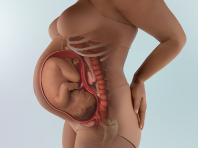
- 1. Sự phát triển của thai nhi
-
Kích thước thai nhi: 49cm (2.8kg) 👶💟
✨ Lớp gây (태지) và lông tơ (솜털) đang bong dần
Những phần bong ra này sẽ được bé nuốt vào cùng với các chất tiết khác, giúp tăng cường nhu động ruột. Chúng sẽ lưu lại trong ruột và sau sinh sẽ được thải ra tự nhiên dưới dạng phân su. Đôi khi ngay trước sinh hoặc trong lúc sinh, bé có thể hít phải phân su, điều này có thể gây khó thở nên cần theo dõi cẩn thận.
🌟 Bé đang chăm chỉ chuẩn bị để bước ra thế giới
- Tất cả các cơ quan như tim (심장), gan (간장), hệ hô hấp (호흡기), hệ tiêu hóa (소화기), hệ tiết niệu (비뇨기) đều đã hoàn thiện, khả năng chống nhiễm trùng cũng trở nên mạnh mẽ.
- Bé vẫn đang tiếp tục tập thở, mút tay, chớp mắt, cử động toàn thân – như một buổi diễn tập trước khi chào đời😊😊. Trên lòng bàn tay bé đã có đường chỉ tay và dấu vân tay nhỏ xíu.
🩺 Nếu đầu bé lớn, có thể cân nhắc sinh mổ (제왕절개)
- Cơ thể bé đã lớn đến mức lấp đầy tử cung (자궁), trong tư thế cong lưng và co tay, co chân về phía trước.
- Nếu kích thước đầu của bé lớn hơn đường kính khung chậu của mẹ, bác sĩ có thể đề xuất cân nhắc sinh mổ (제왕절개) để đảm bảo an toàn. Việc quyết định trước khi chuyển dạ rằng sẽ sinh thường hay sinh mổ không hề dễ, nhưng quan trọng là cần trao đổi kỹ với bác sĩ để chọn phương pháp phù hợp nhất.
- 2. Thay đổi của cơ thể mẹ
-
Mỗi tuần, mẹ sẽ được khám định kỳ, bác sĩ kiểm tra xem bé đã xuống được bao nhiêu, đánh giá hình dạng khung chậu và tình trạng cổ tử cung🔎.
Âm đạo trở nên mềm mại hơn để em bé có thể ra ngoài dễ dàng. Cổ tử cung (자궁구) ẩm ướt và dễ co giãn hơn, giúp dễ sinh hơn. Dịch tiết âm đạo tăng lên làm mẹ trở nên nhạy cảm với những kích thích nhỏ và có thể bị chảy máu, nên cẩn thận. Một số mẹ có thể bị mở cổ tử cung sớm, trong trường hợp này cần nghỉ ngơi và theo dõi kết quả.🌸
Có thể thấy dịch nhầy lẫn máu trong bồn cầu hoặc quần lót, thường xuất hiện cùng lúc hoặc ngay sau nút nhầy, hình thành khi cổ tử cung mềm, mỏng và bắt đầu mở để chuẩn bị sinh, làm một số mạch máu trong cổ tử cung vỡ.
Bác sĩ dựa vào mức độ mở cổ tử cung (자궁경부). Nếu cổ tử cung mới mở 1cm thì vẫn chưa đủ, bé chỉ có thể đi qua khi mở khoảng 10cm. Bác sĩ cũng kiểm tra độ mỏng của cổ tử cung – so với khi không có cơn gò thì hiện tại đã mỏng đi bao nhiêu. Nếu cổ tử cung mỏng đáng kể, điều đó nghĩa là thời điểm sinh đã rất gần.
Đến thời điểm này, mẹ hãy hoàn tất mọi chuẩn bị. Đừng nghĩ rằng bé chắc chắn sẽ sinh đúng 40 tuần. Thực tế, từ tuần 38 trở đi bé có thể chào đời bất kỳ lúc nào. Vì vậy trong tuần này, mẹ hãy hoàn thành toàn bộ việc chuẩn bị cần thiết.
Dù cơ thể đau nhức, nặng nề và mẹ dễ mệt mỏi, nhưng có một điều tích cực: tử cung đang dần hạ xuống. Không phải mẹ bầu nào cũng gặp hiện tượng này, nhưng khi tử cung hạ thấp, áp lực lên dạ dày giảm, mẹ sẽ dễ ăn uống hơn. Đồng thời, áp lực lên cơ hoành giảm nên việc hít thở trở nên dễ dàng hơn.😮💨
Lúc này bé đã lớn và không còn nhiều không gian để cử động. Bé cũng đã chui sâu vào trong khung chậu để sẵn sàng chào đời, nên mẹ sẽ cảm thấy thai máy ít hơn👣. Tuy nhiên, nếu thai máy giảm rõ rệt so với bình thường thì đó có thể là dấu hiệu bất thường, cần đến bệnh viện kiểm tra ngay.
Những cơn gò tử cung gián đoạn mà mẹ cảm thấy trước đây – có thể xuất hiện thường xuyên hơn vào lúc này. Khi gần đến ngày sinh, các cơn gò có thể kéo dài hơn và gây khó chịu hơn, tuy nhiên nếu thực sự đau thì có thể đó là cơn chuyển dạ thật. Các cơn gò này thường xảy ra khi mẹ mất nước, hoạt động nhiều hoặc bàng quang đầy.
Điều tích cực là nhiều cơn co thắt thử (practice contractions) cuối thai kỳ có thể giúp cổ tử cung (cervix) mở rộng và mỏng đi, góp phần làm quá trình chuyển dạ chính diễn ra nhanh hơn.
Cơn gò giả không đau và xảy ra không đều, biến mất khi mẹ đổi tư thế hoặc nghỉ ngơi. Còn cơn chuyển dạ thật thường bắt đầu từ lưng và lan ra phía trước bụng, xảy ra đều đặn và đau hơn.
Khi đã có cơn co chuyển dạ thật, bác sĩ sẽ hướng dẫn mẹ chờ đến khi các cơn co kéo dài khoảng 1 phút mỗi cơn, xảy ra mỗi 5 phút trong khoảng 1 giờ, và gây khó chịu nhiều.
Có thể thấy ngực rò rỉ sữa trong vài tuần cuối thai kỳ, đặc biệt khi núm vú (nipples) bị kích thích, ví dụ khi tập thể dục hoặc quan hệ tình dục. Đó là sữa non (colostrum) – sữa đầu tiên sản xuất cho bé, có dạng đặc hơn, đục hơn so với sữa sau đó, có thể hơi dính và giàu dưỡng chất, vì vậy thường được gọi là “vàng lỏng” (liquid gold).
Nếu không bị rỉ sữa thì cũng không sao – điều này hoàn toàn bình thường và không có nghĩa ngực sẽ không sẵn sàng cho việc nuôi con bằng sữa mẹ.
- 3. Lưu ý về sức khỏe
-
Chú ý dinh dưỡng để thai nhi có hệ miễn dịch (면역력) đầy đủ 💪💪
Để tích lũy sức khỏe sinh nở tốt và nuôi dưỡng trẻ bằng sữa mẹ (모유) sau sinh, mẹ nên quản lý dinh dưỡng thật kỹ trong giai đoạn cuối thai kỳ. Đặc biệt, sức khỏe của trẻ trong 3 tháng đầu sau sinh phụ thuộc vào khả năng miễn dịch mà thai nhi nhận từ mẹ (태아 시절 엄마에게서 물려받은 면역기능) 🛡️🛡️ và các chất miễn dịch có trong sữa mẹ (모유에 함유된 면역물질). 👉Nên đảm bảo cung cấp đầy đủ vitamin C 🍊, axit folic (엽산) 🌿, vitamin B12 💊, vitamin E 🥑.
Vận động vừa phải để tránh khó sinh (난산)
Để duy trì thể lực khi sinh (출산시 체력), mẹ cần nghỉ ngơi và ngủ đủ😴, đồng thời vận động cơ thể vừa phải khi làm việc nhà để phòng tránh khó sinh. Khi bụng quá to, cân bằng cơ thể khó khăn, ⚠️cần chú ý tránh trượt ngã trong nhà hoặc ngoài trời. Vì không thể đoán trước khi nào có dấu hiệu sinh → không nên ra ngoài một mình🚫🚶♀️, giữ cơ thể sạch sẽ và tóc gọn gàng để sẵn sàng nhập viện bất cứ lúc nào.
Thính giác của bé sẽ được kiểm tra tại bệnh viện trước khi xuất viện👂🏥
Thính giác quan trọng cho sự phát triển ngôn ngữ🗣️👶💬, bắt đầu từ trước khi bé biết bập bẹ. Do đó, phát hiện sớm các vấn đề tiềm ẩn giúp bạn can thiệp kịp thời.
Không tự ý uống thuốc khi đau đầu🚫💊
Áp lực sinh nở (분만에 대한 스트레스) và thay đổi tiết hormone có thể gây đau đầu. Dù đau đầu nặng cũng tuyệt đối không tự ý uống thuốc giảm đau😵💫. Nếu đau đầu kèm chóng mặt (어지럼증) và buồn nôn (구토), cần nghi ngờ thiếu máu (빈혈)🩸 hoặc cao huyết áp (고혈압). Các biện pháp phòng ngừa và xử lý bao gồm:
1️⃣ Chườm ấm/lạnh lên mắt
2️⃣ Massage để giảm căng cơ vai
3️⃣ Bấm huyệt thái dương (관자놀이) và vùng sau cổ (목 뒷부분)
4️⃣ Giải quyết nguyên nhân căng thẳng (스트레스의 원인을 해결)
5️⃣ Thường xuyên đi dạo hít không khí trong lành (자주 산책을 해 신선한 공기를 마신다)
- 4. Quan hệ vợ chồng khi mang thai
-
Quan hệ tình dục: Các thai phụ có viêm nhiễm cổ tử cung (자궁 질부 염증) nên tránh quan hệ tình dục trong giai đoạn này để giảm nguy cơ chảy máu và nhiễm trùng.
👨Vai trò của chồng:
🚗 Hạn chế di chuyển đường dài
Giai đoạn này mẹ cần được nghỉ ngơi tuyệt đối. Việc ngồi xe lâu cũng có thể gây vấn đề, vì vậy bố hãy tránh đưa mẹ đi xa – kể cả du lịch, về quê, dự tiệc gia đình hay các buổi họp mặt. Đây là thời điểm nên ưu tiên an toàn lên hàng đầu.
- 5. Trọng tâm thai giáo
-
Nên luyện tập các bài tập và kỹ thuật thở (호흡법) để chuẩn bị cho sinh thường. Quan trọng nhất là giảm bớt nỗi sợ hãi về sinh nở. Mặc dù thai nhi cử động ít hơn, nhưng cảm xúc và phản xạ thần kinh vẫn nhạy cảm, vì vậy nên thường xuyên nói chuyện với bé để tạo sự gắn kết. Thực hành lặp lại các bài thể dục và thở để thuần thục, đồng thời đọc sách về chăm sóc trẻ sơ sinh (신생아) cũng rất tốt.
- 6. Các thông tin cần biết khác
-
Khi thai nhi ngôi mông, mẹ thường bị đau lưng
Cơn đau lưng chủ yếu xuất hiện khi thai nhi ở ngôi mông (둔위/역아). Đau xảy ra do phần sau đầu thai nhi (태아의 머리 뒷부분) đè vào bờ sau tử cung (자궁 뒷 경계선) của mẹ, và thay đổi tư thế lên xuống không giảm đau. Cơn đau thường xuất hiện dữ dội giữa các cơn co tử cung (자궁 수축운동). Một số phương pháp sau có thể giúp giảm đau:
1️⃣ Thay đổi tư thế hoặc ấn mạnh vào lưng. Cúi người hoặc ngồi xổm, nếu đau quá, không thể di chuyển nhiều, hãy cong lưng như lưng mèo và nằm nghiêng.
2️⃣ Chườm nóng hoặc lạnh. Dùng bình nước nóng quấn khăn, miếng chườm nóng ẩm, túi đá hoặc miếng chườm lạnh đặt lên vùng đau.
3️⃣ Tạo áp lực ngược lại cho vùng đau lưng. Người khác dùng tay vỗ mạnh vào vùng đau nhất trên lưng, sau đó bấm huyệt nhẹ nhàng, đặc biệt ấn mạnh vào phần tròn của bàn chân bằng ngón tay.
4️⃣ Sử dụng massage dầu hoặc phấn để giảm căng thẳng và khó chịu do đau quá mức.
-
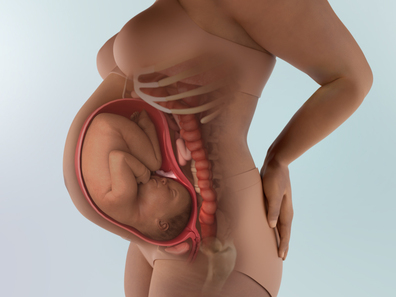
- 1. Sự phát triển của thai nhi
-
Kích thước thai nhi: 50cm (3kg) 👶💟
✨ Bé đang hình thành nhịp ngủ đều đặn – thức theo chu kỳ khoảng 40 phút một lần. Khi ngủ còn có thể nằm mơ nữa.
⚡ Lớp mỡ dưới da đã phát triển đầy đủ để có thể tự điều chỉnh nhiệt độ cơ thể. Móng tay đã dài đến mức sau sinh cần được che lại cẩn thận để tránh bé tự cào trúng mặt, và tóc cũng đã mọc dài khoảng 3cm.
💛 Bé có thể thực hiện các phản xạ sơ sinh như mút tay, ngáp, mỉm cười, nhăn mặt – tất cả những phản xạ dễ thương có ở trẻ sơ sinh. Bé đang mong chờ ngày được gặp bố mẹ.
🌿 Khi bé chuẩn bị bước ra thế giới bên ngoài, nhau thai – dây nối sự sống của bé trong suốt thời gian qua – bắt đầu thoái hóa nhẹ. Dù vậy, đến sát lúc sinh, nhau thai vẫn còn đủ năng lượng để duy trì sự sống cho bé.
💨 Cơ thể bé lúc này đang tiết hormone cortisol (코르티솔). Hormone này giúp bé hô hấp được khi ra ngoài. Giờ thì bé gần như đã sẵn sàng để chào đời rồi!
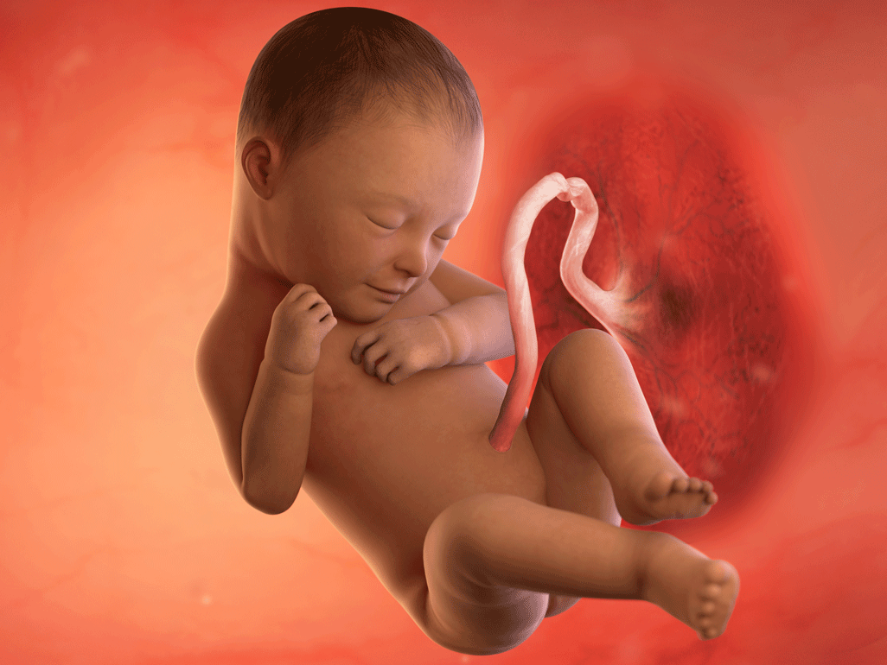
- 2. Thay đổi của cơ thể mẹ
-
✿ Khi áp tai vào bụng, có thể nghe được nhịp tim của thai nhi (태아의 심박동). Nếu thai quá yên lặng hoặc không có cử động, hãy chạm nhẹ để kiểm tra phản ứng. Nếu thai vẫn không phản ứng, cần đến bệnh viện ngay lập tức.
✿ Hầu hết thai nhi đã cố định ở vị trí đầu quay xuống dưới, phần đầu lọt vào trong khung chậu của mẹ nên cử động thai giảm đi.
✿ Cảm giác tức hoặc nặng vùng thượng vị giảm đáng kể. Tuy nhiên, bụng ngày càng nặng khiến việc di chuyển hoặc ngủ trở nên khó khăn hơn.
⭐🌙Nên giữ thói quen ngủ một cách khoa học:
Tránh ăn bữa lớn hoặc uống quá nhiều nước vào buổi tối.
Trong vòng một giờ trước khi ngủ, hãy thư giãn trong phòng yên tĩnh và ánh sáng dịu, đồng thời tránh màn hình, kể cả điện thoại.
Hãy đọc sách hoặc nghe thiền dẫn để dễ chìm vào giấc ngủ.
Nếu vẫn không ngủ được và bạn vẫn thức sau 30 phút, đừng nằm lì trên giường. Việc nằm suy nghĩ “mình không ngủ được” chỉ khiến mọi thứ tệ hơn. Hãy sang phòng khác đọc sách hoặc nghe nhạc cho đến khi buồn ngủ trở lại.
👉 Mất ngủ nhìn chung khá vô hại ở cuối thai kỳ, nhưng nếu thiếu ngủ ảnh hưởng đến khả năng sinh hoạt – như bạn lái xe dễ mắc lỗi, quên đồ đang nấu trên bếp, hoặc bước đi loạng choạng – hãy nói với bác sĩ.
Những giấc mơ kỳ lạ
Khi cuối cùng bạn cũng ngủ được, bạn có thể gặp thêm một thử thách: những giấc mơ thai kỳ rất mãnh liệt. Mẹ bầu thường có những giấc mơ vui sướng, đáng sợ, hoặc thậm chí mang tính gợi cảm. Các nhà khoa học tin rằng sự mãnh liệt của những giấc mơ này liên quan đến sự thay đổi hormone. Đôi khi, giấc mơ phản ánh những gì bạn đang nghĩ (hoặc lo lắng) khi thức. Sự lo lắng về chuyển dạ và việc trở thành cha mẹ có thể khiến những giấc mơ ban đêm trở nên kỳ lạ hơn, đặc biệt là khi gần đến ngày dự sinh. Vì vậy nếu bạn thức dậy với gương mặt đỏ bừng sau một giấc mơ nóng bỏng về người yêu cũ😆😆, đừng cảm thấy tội lỗi – điều đó hoàn toàn không liên quan đến tình cảm bạn dành cho người bạn đời hiện tại.
Lightning crotch (đau nhói vùng chậu kiểu “tia chớp”)
Ở tuần 38, bạn có thể cảm thấy cơn đau nhói đột ngột ở vùng chậu hoặc bẹn. Đó là hiện tượng “lightning crotch”, và đúng như tên gọi, cảm giác thường rất giật mình. Tình trạng này vô hại, gần như luôn chỉ diễn ra trong thời gian rất ngắn và biến mất nhanh chóng chỉ sau vài giây. Lightning crotch thường là cơn đau sắc nhọn – một số mẹ mô tả giống như bị điện giật nhẹ. Các bác sĩ cho rằng hiện tượng này xảy ra khi đầu em bé chèn vào các dây thần kinh ở cổ tử cung và phần dưới tử cung. Điều này phổ biến vào cuối tam cá nguyệt thứ ba, khi đầu em bé tụt thấp xuống vùng chậu. Mang đai nâng đỡ bụng có thể giúp phòng tránh lightning crotch. Khi cơn đau xảy ra, bạn có thể thay đổi tư thế để giảm bớt.
- 3. Lưu ý về sức khỏe
-
👜 Hãy kiểm tra lại túi đồ sinh một lần nữa
Có lẽ mẹ đã sắp xếp xong túi đồ sinh rồi, nhưng vẫn hãy kiểm tra lại thêm một lần nữa nhé. Kiểm tra kỹ bao giờ cũng tốt hơn là để sót đồ khi cần dùng.
✓ Đồ chuẩn bị cho mẹ: sổ khám thai, thẻ bảo hiểm y tế, băng vệ sinh loại quần ban đêm, đồ vệ sinh cá nhân, miếng lót thấm sữa (수유패드), ống hút gập đầu, áo giữ nhiệt – tất, cardigan, máy hút sữa (유축기), đồ lót rộng rãi, khăn ướt, đai bụng (복대), dây buộc tóc, đai cổ tay, chăn mỏng, dép đi trong viện, mỹ phẩm cơ bản và son dưỡng (립밤), đệm ngồi cho tầng sinh môn,…
✓ Đồ chuẩn bị cho bé: khăn quấn trong (속싸개), khăn quấn ngoài (겉싸개), áo sơ sinh (배냇저고리), khăn sữa (가제 수건), bao tay bao chân,…
🚑 Nếu có đau chuyển dạ, ra máu hoặc vỡ ối thì phải đến bệnh viện ngay
- Với mẹ sinh con đầu lòng: nếu cơn gò cách nhau 5 phút, kéo dài đều đặn trên 1 giờ, hoặc xuất hiện cơn đau rất mạnh bất kể thời gian thì phải đến bệnh viện ngay.
- Với mẹ đã sinh trước đó: khi cơn đau cách nhau khoảng 10 phút thì có thể vào viện.
- Ngoài ra, nếu vỡ ối hoặc ra máu, đó là dấu hiệu nguy hiểm – hãy đến bệnh viện ngay lập tức!
💪 Bổ sung protein để giữ sức khi sinh
- Sinh con đầu lòng thường mất trung bình hơn 12 giờ. Vì vậy mẹ nên tích lũy thể lực sớm bằng cách ăn nhiều thực phẩm giàu protein như trứng, sữa,…
- Ngoài ra, vitamin E là dưỡng chất giúp tăng cung cấp oxy cho mẹ trước sinh và làm giãn cơ, hỗ trợ sinh nở thuận lợi. Vitamin E có nhiều trong đậu phộng, gạo lứt, rau củ màu xanh vàng, đậu nành và các loại rau, vì vậy nếu mẹ duy trì ăn đều đặn sẽ giúp cải thiện sức chịu đựng trong quá trình sinh.
🩺 Nếu cần sinh mổ chủ động hoặc cần khởi phát chuyển dạ, hãy trao đổi với bác sĩ
Khi đã quá ngày dự sinh mà chưa có cơn đau, hoặc vì lý do sức khỏe của mẹ mà cần sinh sớm hơn, bác sĩ có thể chỉ định gây chuyển dạ (유도 분만). Khi đó, bác sĩ sẽ xem xét tình trạng của mẹ và bé để chọn loại thuốc phù hợp và an toàn.
🎒 Không biết tín hiệu chuyển dạ sẽ đến khi nào, nên hãy chuẩn bị sẵn
- Chỉ khoảng 5% em bé chào đời đúng chính xác ngày dự sinh. Còn lại thường sinh trước hoặc sau ngày dự sinh 2 tuần.
- Vì vậy trong thời gian này mẹ nên tránh đi xa, và để túi đồ sinh ở nơi dễ thấy nhất trong nhà.
🌬️ Học cách đối phó với cơn đau sinh
- Nếu mẹ đã học các phương pháp thở, cách rặn trong lớp tiền sản thì rất tốt. Nếu chưa, mẹ có thể xem các video hướng dẫn trên YouTube.
- Mẹ cũng có thể chuẩn bị playlist âm nhạc giúp giữ bình tĩnh trong lúc đau – rất hữu ích cho quá trình chuyển dạ và sinh nở.
🦵 Giảm lo lắng trước sinh – massage chân để thư giãn cơ
- Trước khi sinh, mẹ hay lo lắng và dễ bồn chồn. Buổi tối có thể khó ngủ, chân sưng hoặc bị chuột rút.
- Mẹ hãy dùng ngón cái đặt vào giữa các ngón chân rồi massage từ ngoài vào trong, hoặc nắm tay lại và xoa nhẹ mặt dưới bàn chân. Điều này giúp thả lỏng cơ bắp chân và giảm căng thẳng.
- 4. Quan hệ vợ chồng khi mang thai
-
Sinh hoạt tình dục: Do nguy cơ vỡ ối sớm, nên hạn chế nghiêm ngặt việc quan hệ tình dục trong giai đoạn này.
👨Vai trò của chồng:
📞 Hãy thường xuyên kiểm tra tình trạng của vợ
Bất cứ lúc nào cũng có thể chuyển dạ nên dù đang ở bên ngoài thì chồng vẫn hãy liên lạc thường xuyên để biết tình trạng của vợ, chia sẻ sự lo lắng và hỗ trợ tinh thần cho vợ nhé.
Em bé sắp chào đời rồi, và thời gian dành riêng cho hai vợ chồng sẽ ít lại. Dù bận rộn chuẩn bị sinh nở, chồng vẫn có thể tạo những khoảnh khắc ấm áp với vợ như: nắm tay đi dạo gần nhà, xem một bộ phim lãng mạn cùng nhau, hoặc chuẩn bị một bữa tối chúc mừng vợ chuẩn bị sinh.
- 5. Trọng tâm thai giáo
-
Mẹ hãy thay đổi tâm trạng bằng các hoạt động nhẹ như tập thể dục nhẹ nhàng. Khi hormone liên tục thay đổi và thời điểm sinh nở đến gần, mẹ dễ bị căng thẳng và lo âu. Lúc này, việc thực hiện các bài tập nhẹ giúp cải thiện cảm xúc rất tốt. Vì thai nhi đã ở trạng thái gần giống một trẻ sơ sinh, mẹ nên trò chuyện và vuốt ve bé như đang chăm sóc một em bé thật sự. Nghe nhạc nhiều cũng rất hữu ích cho mẹ và thai nhi.
- 6. Các thông tin cần biết khác
-
Lập kế hoạch sinh nở (출산 계획)🌼
Khi xây dựng kế hoạch sinh, mẹ không nên chỉ tập trung vào việc “sinh em bé” mà nên cân nhắc cảm xúc và trải nghiệm mà mình mong muốn trong quá trình sinh.
✨Ví dụ: “Khi ở phòng sinh (분만실), mình muốn bật to nhạc Beatles, đặt búp bê Teletubby yêu thích ở nơi dễ nhìn thấy, và để chồng quay lại khoảnh khắc sinh bằng chiếc máy quay kỹ thuật số 6mm.”
Hãy suy nghĩ trước xem điều gì khiến mẹ cảm thấy thoải mái khi đối diện cơn đau chuyển dạ, và mẹ thật sự mong muốn điều gì cho khoảnh khắc sinh con.
Sau đó, hãy lập kế hoạch sinh nở và chia sẻ nội dung trong danh sách sinh (출산리스트) với gia đình hoặc bác sĩ để tạo môi trường sinh nở phù hợp nhất cho mẹ và bé.
Ngoài ra, mẹ cũng nên tham gia học về phương pháp sinh nhẹ nhàng tốt cho trẻ như sinh Leboyer (르봐이예 분만).
Các yếu tố cần cân nhắc khi lập kế hoạch sinh 🌸👶
1️⃣ Muốn ai ở bên cạnh khi sinh?
2️⃣ Điều quan trọng nhất giúp bản thân vượt qua cơn đau chuyển dạ là gì?
3️⃣ Thông tin nào về sinh nở khiến bạn tò mò nhất?
4️⃣ Trong phòng sinh (분만실), bạn đặc biệt muốn làm điều gì?
5️⃣ Bạn mong chờ điều gì từ những người chăm sóc mình tại bệnh viện?
6️⃣ Bạn có mong muốn gì ngay sau khi sinh?
7️⃣ Bạn muốn khoảnh khắc gặp bé lần đầu diễn ra như thế nào?
8️⃣ Bạn có thật sự mong muốn nuôi con bằng sữa mẹ (모유수유) không?
-
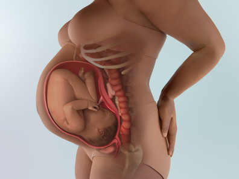
- 1. Sự phát triển của thai nhi
-
Kích thước thai nhi: 50.7cm (3.2kg), chu vi đầu khoảng 34cm. 👶💟
✨ Bé đã sẵn sàng hoàn toàn để chào đời
- Đây là thời điểm lý tưởng nhất để sinh. Lúc này, tất cả các cơ quan của bé đều đã trưởng thành. Bé cũng đang tích trữ khoảng 15g chất béo mỗi ngày. Cho tới ngay trước khi chào đời, bé vẫn nhận oxy thông qua nhau thai và dây rốn. Nhưng vì phổi đã trưởng thành và hormone cortisol (코르티솔) hỗ trợ nhịp thở đầu tiên đã được tiết ra rất nhiều, nên ngay khi sinh, bé có thể tự thở được đấy!
- Da bé bóng, có sắc hồng và lớp gây (태지) không còn nhiều. Toàn bộ hệ thống phản xạ đã phát triển đủ để có thể phản ứng với âm thanh, mùi, ánh sáng và xúc giác. Lông mày rõ ràng, tứ chi cử động linh hoạt.
- Trong ruột thai nhi có đầy phân su (태변) màu gần như đen. Với kích thích của hormone do nhau thai (태반) tiết ra, dù là bé trai hay bé gái thì vùng ngực đều có thể hơi sưng, điều này sẽ biến mất ngay sau sinh.
- Bé đã tụt xuống phía dưới khung chậu, thu tay chân lại về giữa cơ thể và cong lưng – đúng tư thế sẵn sàng chào đời. Như một chiếc tàu vũ trụ đang chờ lệnh phóng🚀, bé đã chuẩn bị sẵn sàng để bước vào “vũ trụ lớn” bên ngoài bụng mẹ.
- Sau sinh 1 tháng, bé mới bắt đầu chảy nước mắt👶. Hiện tại, ống dẫn lệ (누관) của bé vẫn chưa phát triển hoàn chỉnh nên chưa có nước mắt. Phải khoảng một tháng sau sinh bạn mới thấy bé có những giọt nước mắt lấp lánh.
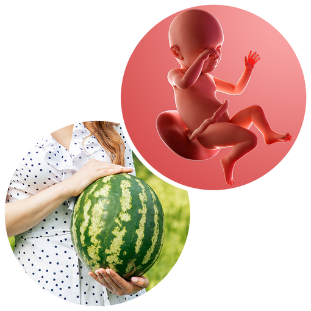 Em bé lúc này có kích thước tương đương quả dưa hấu nhỏ 🍉(◕‿◕)
- 2. Thay đổi của cơ thể mẹ
-
Hiện tượng bụng căng kéo xuất hiện nhiều hơn. Thai nhi đã sẵn sàng có thể chào đời bất cứ lúc nào. Khi em bé lớn hơn, da bụng càng căng và phần lõm của rốn không còn thấy rõ. Khi đến gần thời điểm sinh, cảm giác bụng căng kéo sẽ xảy ra thường xuyên nhưng không phải là cơn gò chuyển dạ thật sự. Đây chỉ là “luyện tập” cho quá trình sinh, nếu các cơn gò không đều thì không cần lo lắng.
Diarrhea – Tiêu chảy
Một triệu chứng không mấy dễ chịu ở tuần 39 đó là tiêu chảy. Nhiều người nghĩ tiêu chảy có thể là dấu hiệu chuyển dạ sớm, và rằng điều này nghĩa là mẹ sẽ sinh trong vòng 24–48 giờ.
Giả thuyết là: cơ thể mẹ sản xuất hormone prostaglandin khi chuẩn bị chuyển dạ. Những chất này giúp tử cung co bóp, nhưng cũng có thể ảnh hưởng đến đường tiêu hóa, khiến phân di chuyển nhanh hơn và gây tiêu chảy. Đây cũng là lý do một số phụ nữ bị tiêu chảy trong kỳ kinh.
Tuy vậy, không có bằng chứng cho thấy tiêu chảy chắc chắn là dấu hiệu sắp sinh. Nếu bị tiêu chảy, hãy hỏi ý kiến bác sĩ trước khi dùng thuốc chống tiêu chảy. Gọi bác sĩ nếu tiêu chảy kéo dài hơn vài ngày, hoặc nếu nghi ngờ bị ngộ độc thực phẩm.
- 3. Lưu ý về sức khỏe
-
💧 Ra dịch nhầy hồng báo sinh
Đây là dịch nhầy đặc bít cổ tử cung, giờ hòa lẫn một chút máu và chảy ra ngoài, có màu hồng tươi hoặc nâu. Nếu không thấy cũng không sao, không phải mẹ nào cũng có. Sau khi thấy dịch nhầy, có mẹ sẽ bắt đầu chuyển dạ trong 3–4 giờ, có mẹ thì 3–4 ngày sau. Nhưng nếu ra máu nhiều thì cần đi bệnh viện ngay vì có thể nguy hiểm!
🚶♀️ Hãy vận động nhẹ như đi bộ
Giai đoạn này có thể khiến mẹ mất ngủ, căng thẳng, và nhiều triệu chứng ập đến cùng lúc. Vận động nhẹ nhàng không gây mệt - như đi bộ - sẽ giúp thư giãn, giảm lo âu và mang lại một chút mệt dịu giúp mẹ ngủ ngon hơn.
💦 Nếu vỡ ối, hãy đến bệnh viện ngay
Từ giờ, bất cứ lúc nào mẹ cũng có thể sinh nên việc nhận biết các dấu hiệu là rất quan trọng, chẳng hạn như: vỡ ối, đi ngoài lỏng nhiều lần, chóng mặt, hoặc ra chất nhầy. Đặc biệt, nếu vỡ ối thì phải đến bệnh viện ngay! Nước ối không có mùi, chảy liên tục và không thể nhịn như tiểu tiện.
💅 Trước sinh, hãy tháo sơn móng tay và trang sức
Một điều nhỏ nhưng rất quan trọng: hãy xóa sạch sơn móng tay và tháo nhẫn, vòng cổ, khuyên tai, kính áp tròng. Màu móng tay giúp bác sĩ theo dõi tình trạng của mẹ khi sinh, và việc giữ trang sức có thể khiến mẹ bị thương trong lúc sinh.
💪 Tư thế rặn sinh đúng giúp sinh dễ hơn
Tư thế rặn hiệu quả nhất là nằm hoặc nửa nằm để tận dụng trọng lực. Khi rặn, mẹ áp chặt mông xuống giường, dồn lực vào bụng và kéo cằm sát vào ngực. Ngay trước khi bé ra, bác sĩ sẽ hướng dẫn mẹ rặn giống như đi tiêu - rặn dài, chắc và đều.
❤️ Mẹ bầu dự định nuôi con bằng sữa mẹ cần bổ sung đầy đủ axit folic (엽산) và vitamin B12
Sữa mẹ được tạo từ máu, vì vậy để tiết được nhiều sữa thì lượng máu trong cơ thể phải đủ; và hai chất cần thiết nhất là axit folic (엽산) và vitamin B12. Nếu dự định cho con bú mẹ, nên chú ý bổ sung hai dưỡng chất này bằng cách ăn rong biển, trứng, nghêu (모시조개), hến (대합), gan động vật, gạo lứt,...
🌟 Khi cảm thấy đau vùng xương mu, hãy nằm tư thế Sims (심즈체위)
Cơ thể mẹ sản xuất hormone relaxin giúp khung chậu giãn nở để em bé dễ dàng đi qua đường sinh. Khi relaxin tăng, khớp mu trở nên lỏng hơn và phần đầu thai nhi sẽ tạo áp lực gây đau. Khi đau xương mu, mẹ nên nằm tư thế Sims (심즈체위), ngâm mình trong nước ấm, tránh ngồi hoặc đứng quá lâu. Thường xuyên thực hiện tư thế “con mèo” (đặt hai tay và hai đầu gối trên sàn) sẽ giúp giảm đau hiệu quả.
- 4. Vai trò của chồng
-
Chồng hãy cùng vợ đi bộ buổi tối mỗi ngày🌙. Đi bộ buổi tối là bài tập tuyệt vời giúp bé tụt xuống dễ hơn và hỗ trợ sinh thường. Sau giờ làm, hãy nắm chặt tay vợ và cùng nhau đi bộ, chia sẻ niềm háo hức sắp gặp con.
Vợ đang ở ngay trước thời khắc sinh nở⏳. Cơ thể đã quá mệt suốt thời gian qua, và giờ là giai đoạn tâm lý dễ dao động, lo lắng, xúc động. Mong chồng hãy hiểu điều này — bởi vợ đang làm điều kỳ diệu nhất: đưa một sinh linh đến thế giới này. Chồng cũng đã vất vả rất nhiều, nên hãy cố thêm một chút nữa để đồng hành cùng vợ trong những ngày cuối cùng này.
- 5. Trọng tâm thai giáo
-
Lắng nghe chia sẻ kinh nghiệm sinh nở từ các mẹ đi trước để giúp bản thân thư giãn. Trong tuần cuối khi ngày dự sinh đến gần, ai cũng dễ trở nên bất an và nhiều lo lắng, thậm chí có thể gặp ác mộng hoặc khó ngủ. Lúc này, càng nên giữ tâm trí thoải mái, mẹ hãy nghĩ đến em bé sắp chào đời. Khi nghe những câu chuyện sinh nở của các mẹ đi trước, mẹ sẽ cảm thấy ổn định tinh thần hơn.
- 6. Các thông tin cần biết khác
-
Khi ngày dự sinh đến gần, mẹ nên tránh đi xa hoặc hoạt động quá sức, đồng thời chăm vận động nhẹ như đi bộ và đảm bảo chế độ dinh dưỡng, nghỉ ngơi đầy đủ để thuận lợi sinh nở. Thông thường nước ối sẽ vỡ ngay khi cổ tử cung mở, nhưng đôi khi vỡ ối (파수) có thể xảy ra trước cả khi có cơn gò. Nếu không có cơn gò hay không có dịch nhầy báo (이슬) mà xuất hiện nước chảy ra khiến mẹ không phân biệt được đó là nước tiểu hay nước ối (파수), thì cần được thăm khám ngay. Nếu có xuất huyết bất thường hoặc đau mạnh liên tục theo chu kỳ 10 phút một lần, cũng phải nhanh chóng đến bệnh viện.
9 dấu hiệu bạn không được bỏ qua: chảy máu âm đạo; khí hư màu nâu hoặc hồng; ngứa dữ dội, đặc biệt vào ban đêm; đau đầu kinh khủng và không thuyên giảm; vấn đề về thị lực (mờ mắt, nhạy cảm với ánh sáng, nhìn thấy đốm hoặc tia chớp sáng); đau ngay dưới vùng xương sườn; sưng nhiều ở bàn chân, mắt cá chân, bàn tay và mặt; đau bụng âm ỉ kéo dài; sốt cao (trên 37,5°C) mà không kèm triệu chứng cảm cúm hay cảm lạnh khác.
7 điều bạn có thể không ngờ tới khi em bé chào đời
Trẻ sơ sinh thường không bật khóc ngay lập tức như trên phim ảnh. Bé có thể mất vài giây trước khi khóc hoặc khịt khịt để làm sạch đường thở.
Em bé của bạn sẽ được kiểm tra trong vòng một phút sau khi sinh. Bạn có thể không để ý vì bạn đang gặp bé lần đầu tiên. Bé sẽ được đánh giá theo thang điểm Apgar dựa trên nhịp tim, hô hấp, trương lực cơ, phản ứng và màu da. Việc kiểm tra này sẽ được thực hiện lại sau 5 phút.
Tay và chân của bé có thể có màu hơi xanh vì tuần hoàn máu vẫn đang hoàn thiện. Phần da còn lại có thể đỏ đậm hoặc tím, sau đó chuyển sang đỏ tươi khi bé thở lần đầu. Có thể phải mất vài tuần mới thấy được màu da thật của bé. Nếu bé được lau mạnh bằng khăn, điều đó không có nghĩa là có vấn đề – thường chỉ để thúc đẩy lưu thông máu.
Bé có thể mất vài phút mới thở đều. Trẻ sơ sinh thường có những nhịp thở nhanh liên tiếp rồi thở chậm lại. Khoảng nghỉ giữa các nhịp thở có thể kéo dài tới 5 giây. Bé đang học cách thở, nên đây là điều bình thường.
Bé trai có thể sinh ra với tinh hoàn to – điều này chỉ là tạm thời, do ảnh hưởng của hormone và giữ nước. Kích thước sẽ nhanh chóng ổn định và cân đối.
Không phải lúc nào cũng cảm nhận được tình mẫu tử - phụ tử ngay từ cái nhìn đầu tiên. Hãy cho bản thân thời gian để gắn kết với em bé và hãy nhờ hỗ trợ nếu cần.
Tử cung của bạn có thể mất 6 tuần để trở lại kích thước ban đầu. Việc cho con bú có thể đẩy nhanh quá trình này vì nó kích thích tử cung co lại.
-
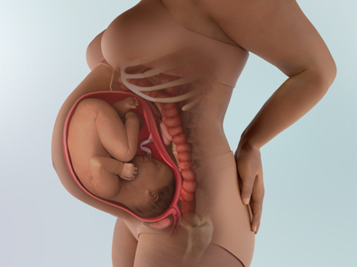
- 1. Sự phát triển của thai nhi
-
Kích thước thai nhi: 52cm (3.4kg) 👶💟
Bé đã sẵn sàng để chào đời🤗(｡♥‿♥｡)
💗 Em bé sẽ thu gọn tay và chân, xoay người khoảng 4 lần để đi qua ống sinh và bước ra thế giới này.
💗 Ngay sau khi chào đời, bé sẽ tự thở bằng phổi và có thể bú mẹ ngay lập tức. Phân su sẽ được thải ra trong vòng 24 giờ sau sinh, và cuống rốn sẽ rụng sau khoảng 1 tuần. Mẹ sắp được gặp con rồi!
Canxi giúp xương bé chắc khỏe
💞 Nhờ lượng canxi mẹ cung cấp, xương của bé đang phát triển rất vững chắc🦴💪. Hiện tại, cơ thể của bé đang hình thành hơn 300 chiếc xương.
💞 Sau này khi lớn lên, giống như người lớn, nhiều xương trong số đó sẽ hợp nhất lại với nhau.
Đừng ngạc nhiên khi nhìn con mới chào đời
💝 Khi sinh ra, đầu em bé có thể hơi nhọn hoặc trông lớn hơn cơ thể .😅(っˆڡˆς)
💝 Mẹ có thể hơi bất ngờ vì bé không đáng yêu như tưởng tượng, nhưng tất cả trẻ sơ sinh đều như vậy nên đừng lo lắng nhé! Chỉ sau một thời gian ngắn thôi, gương mặt đáng yêu của bé sẽ dần rõ đường nét.🥰(๑>◡<๑)
- 2. Thay đổi của cơ thể mẹ
-
Thông thường, nước ối sẽ vỡ (파수) khi cổ tử cung mở, nhưng đôi khi nước ối có thể vỡ trước cả khi xuất hiện cơn gò. Vì vậy, nếu mẹ không phân biệt được đó là nước tiểu hay nước ối, thì phải đến bệnh viện ngay để được kiểm tra.
Khi vỡ ối, mẹ sẽ cảm thấy như có thứ gì đó “bật” ra và một lượng lớn nước ấm chảy xuống đủ để làm ướt quần lót. Cảm giác này khác với tiểu tiện, nhưng nếu không chắc chắn, hãy gọi cho bác sĩ trước. Từ 24 giờ sau khi vỡ ối, nguy cơ nhiễm khuẩn tăng cao, vì vậy ⚠️tuyệt đối không tắm mà phải đến bệnh viện ngay!🚨
Thông thường cơn đau chuyển dạ sẽ bắt đầu trong vòng 24 giờ sau khi vỡ ối.
Khi chuyển dạ bắt đầu, cơn đau có thể cách nhau 5 phút và kéo dài 20–30 giây. Theo thời gian, khoảng cách giữa các cơn đau giảm 1 phút và thời gian đau tăng thêm 10 giây. Sau đó, bé sẽ bắt đầu đi xuống và quá trình sinh thực sự bắt đầu. Nếu là sinh con đầu, thời gian sinh có thể mất 1–2 giờ. Từ bé thứ hai trở đi, thường sẽ sinh trong vòng 1 giờ.
Thai máy là dấu hiệu rất quan trọng cho biết bé vẫn ổn. Nếu thai máy dưới 20 lần và tình trạng này lặp lại trong hai ngày liên tiếp, mẹ phải đến bệnh viện kiểm tra. Nên kiểm tra số lần cử động của bé khi mẹ nằm hoặc ngồi thư giãn, đặc biệt là trước khi ngủ.
Nếu bị cảm cúm khi mang thai có thể nghiêm trọng hơn bình thường. Nếu mẹ sốt kéo dài và đau mỏi toàn thân, em bé trong bụng cũng có thể bị ảnh hưởng. Khi đó, mẹ cần hỏi ý kiến bác sĩ và tuyệt đối phải nghỉ ngơi đầy đủ. Hãy giữ ấm cơ thể và ăn thực phẩm bổ dưỡng để phục hồi sức khỏe.
🎉🎉Một khởi đầu mới – cùng bước vào hành trình nuôi con🎊🎊
Cảm ơn mẹ đã kiên cường đi cùng hành trình dài suốt thời gian qua. Chúc mừng mẹ đã đến được chặng cuối!😍
Em bé đã sẵn sàng bước ra thế giới và gặp mẹ rồi. Còn mẹ, mẹ đã sẵn sàng cho khởi đầu mới chưa? Hành trình ‘nuôi con’ đang bắt đầu đó.🥰
Chúc hai vợ chồng – những người đã vượt qua 40 tuần đầy thử thách – thật nhiều may mắn và hạnh phúc trên hành trình mới nhé!💕
- 3. Lưu ý về sức khỏe
-
Nếu cơn gò chuyển dạ bắt đầu thì sao?
Khi cảm thấy có vẻ như cơn gò chuyển dạ đã bắt đầu, mẹ đừng quá căng thẳng. Hãy nhanh chóng tắm rửa, chuẩn bị đồ dùng nhập viện và sẵn sàng đến bệnh viện.
Nếu đã qua ngày dự sinh mà không thấy dấu hiệu chuyển dạ thì sao?
- Ngày dự sinh là ngày thai được 40 tuần 0 ngày, nhưng đối với mẹ sinh con đầu lòng, gò chuyển dạ có thể bắt đầu muộn hơn dự kiến.
- Nếu đã qua ngày dự sinh mà vẫn không có dấu hiệu sinh nở, bác sĩ sẽ tiến hành siêu âm để kiểm tra lượng nước ối và tình trạng nhau thai, đồng thời thực hiện “kiểm tra không gò” (비수축 검사) - sử dụng thiết bị theo dõi được đặt trên bụng mẹ để kiểm tra nhịp tim thai và mức độ co thắt của tử cung, từ đó giúp xác định thời điểm và phương pháp sinh phù hợp.
Nếu đã quá ngày dự sinh hơn 10 ngày mà bé vẫn chưa chịu ra đời thì phải làm sao?
- Nếu ngày dự sinh bị trễ quá nhiều, điều này có thể gây nguy hiểm cho mẹ hoặc thai nhi, vì vậy bác sĩ sẽ tiến hành phương pháp giục sinh. Bác sĩ có thể sử dụng thuốc như prostaglandin (프로스타글란딘) hoặc oxytocin (옥시토신) để kích thích cơn co tử cung, hoặc đặt thuốc vào âm đạo để thúc đẩy chuyển dạ.
- Đôi khi mẹ cũng có thể tự kích thích chuyển dạ bằng phương pháp tự nhiên. Cách này là xoa bóp ngực: massage nhẹ nhàng ngực và kích thích đầu ti giúp cơ thể tiết oxytocin (옥시토신), từ đó thúc đẩy cơn co tử cung xuất hiện dần dần. Nếu may mắn, làm như vậy có thể dẫn tới chuyển dạ tự nhiên. Trong vòng 24 giờ, thực hiện massage ngực mỗi giờ ba lần sẽ mang lại hiệu quả.
- Sau khi sinh, mẹ cũng nên thực hiện massage cho trẻ sơ sinh. Một cuốn sách hữu ích về chủ đề này là “Em bé cần được massage” (아기는 마사지가 필요하다), tác giả 프레드릭 르봐이예 (xuất bản bởi 샘터), và tại các trung tâm y tế địa phương cũng có các lớp hướng dẫn về phương pháp này.
- 4. Vai trò của chồng
-
Hãy kiểm tra chu kỳ cơn đau của vợ ⏱️🤰
Khi vợ bắt đầu có cơn co thắt, chồng hãy theo dõi cường độ và chu kỳ cơn đau trong khoảng 1 giờ.
Nếu là sinh con đầu, khi cơn đau cách nhau 5–10 phút; nếu đã từng sinh trước, khi cơn đau cách nhau 15–20 phút là lúc cần đến bệnh viện.
Nếu ối đã vỡ, nguy cơ nhiễm khuẩn tăng cao nên hãy đặt tã lót lớn hoặc băng lót cho vợ rồi đưa đến bệnh viện ngay.
Trong lúc di chuyển, hãy để vợ ngồi ở ghế sau.
Luôn ở bên vợ trong phòng chờ và phòng sinh 💑🤱
Trong môi trường xa lạ và phải chịu đựng cơn đau chuyển dạ, vợ rất cần chồng ở bên. Hãy giúp vợ thở đều và massage vùng đau.
Chỉ cần chồng ở cạnh thôi, đó đã là nguồn sức mạnh lớn nhất dành cho vợ.
Hãy hỏi thăm vợ đầu tiên sau khi sinh 🌈🌼
Vì quá vui mừng khi đón con chào đời, nhiều bố vô tình quên mất việc động viên vợ sau khi sinh.
Đừng quên nói với vợ: “Em đã vất vả rồi”, “Cảm ơn em”. Sau hơn 9 tháng mang nặng và vượt cạn, lời nói ấm áp của chồng sẽ giúp vợ được an ủi rất nhiều.💗💗
- 💢 Các thông tin cần biết khác
-
Nếu mẹ sinh mổ, cần chú ý:
- Không thoa mỹ phẩm lên bụng.
- Giữ đúng thời gian nhịn ăn.
- Chuẩn bị sẵn khăn ướt.
- Chọn quần lót cạp cao vì vết mổ thường nằm ngang đúng vị trí cạp quần, quần cạp cao sẽ giúp mẹ tránh đau.
- Chuẩn bị gối cho con bú riêng để bảo vệ vết mổ khi cho bú.
8 mẹo cho quá trình chuyển dạ
Những mẹo này có thể giúp mẹ cảm thấy kiểm soát tốt hơn và giảm bớt cơn đau:
- Nếu cơn co bắt đầu vào ban đêm, hãy cố ngủ càng nhiều càng tốt. Việc nghỉ ngơi sẽ giúp cơ thể chuẩn bị cho cuộc sinh, và cổ tử cung của mẹ vẫn sẽ tiếp tục mở trong khi ngủ.
- Nếu cơn co bắt đầu vào ban ngày, hãy giữ tư thế đứng thẳng và di chuyển nhẹ nhàng. Điều này giúp em bé tụt xuống và cổ tử cung mở nhanh hơn. Nhờ đó, quá trình chuyển dạ có thể diễn ra nhanh hơn và mẹ có thể giảm nhu cầu dùng thuốc giảm đau.
- Thử nhiều tư thế khác nhau. Ngồi lắc nhẹ trên bóng sinh, hoặc ôm cổ bố hoặc người hỗ trợ và dựa vào họ. Chỉ cần mẹ tiếp tục cử động là được.
- Tắm nước ấm hoặc tắm vòi sen – một cách giảm đau đã được chứng minh và rất nhiều mẹ bầu tin dùng.
- Tập trung vào hơi thở. Mẹ có thể luyện tập kỹ thuật thở ngay từ bây giờ: hít sâu bằng mũi, thở ra bằng miệng, giữ hàm thư giãn.
- Nhờ bố mát-xa và tham gia hỗ trợ. Sự động viên và trấn an của bố sẽ giúp cơ thể mẹ tiết ra nhiều endorphin hơn – những chất giảm đau tự nhiên tuyệt vời.
- Ăn nhẹ một món lành mạnh để giữ năng lượng, như một quả chuối hoặc sữa chua ít béo. Tránh đồ ăn nhiều dầu mỡ vì dễ gây buồn nôn, và tránh đồ ngọt vì sẽ chỉ tăng năng lượng nhanh rồi sụt xuống đột ngột.
- Làm điều gì đó giúp mẹ thư giãn. Khi cảm thấy bình tĩnh, mẹ sẽ kiểm soát cơn đau và quá trình chuyển dạ tốt hơn nhiều so với khi căng thẳng.